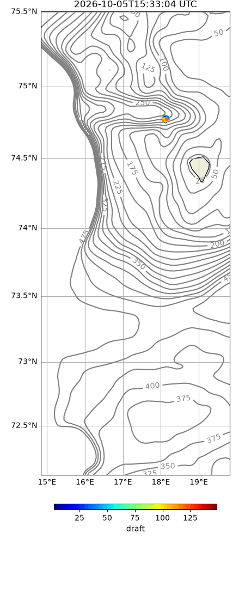
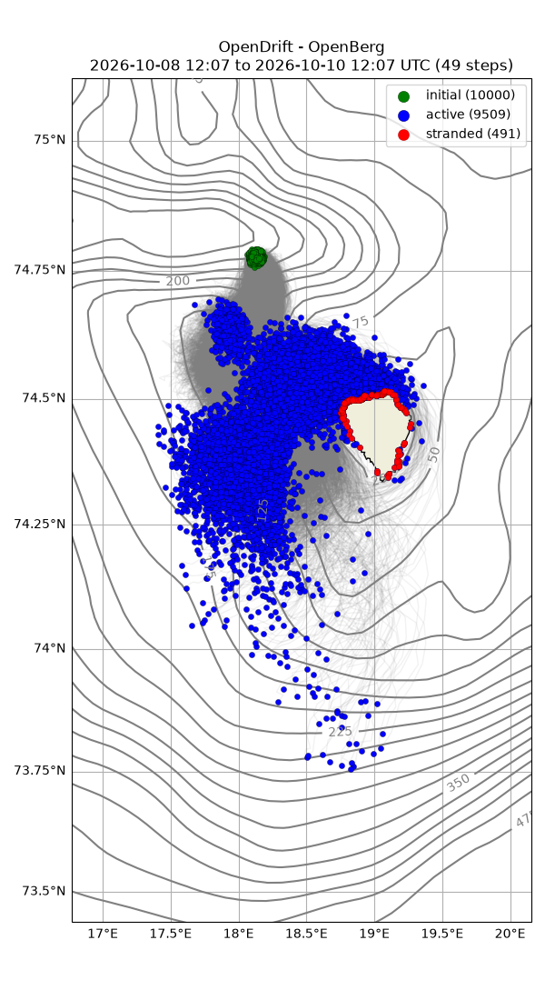
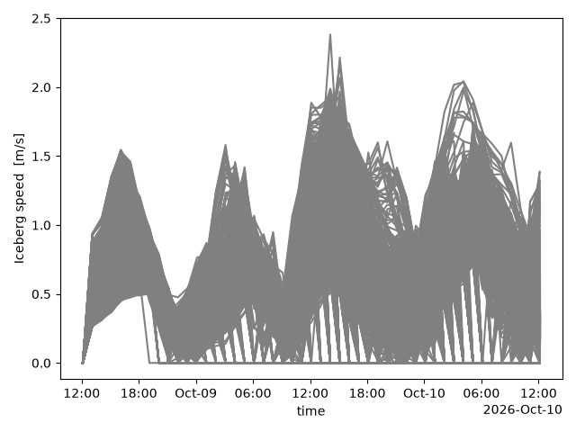

Note
Go to the end to download the full example code.
Icebergs (openberg)
from datetime import datetime, timedelta
import numpy as np
import matplotlib.pyplot as plt
import opendrift
from opendrift.models.openberg import OpenBerg
Currents and wind forcing
forcing = ['https://thredds.met.no/thredds/dodsC/fou-hi/barents_eps_zdepth_be']
A permutation of iceberg sizes/dimensions
n = 10
lengths = np.linspace(50, 500, n)
widths = np.linspace(20, 200, n)
sails = np.linspace(5, 50, n)
drafts = np.linspace(2, 120, n)
lengths, widths, sails, drafts = np.meshgrid(lengths, widths, sails, drafts)
icebergs = {'lon': 18.127, 'lat': 74.776, 'time': datetime.now(),
'number': lengths.size, 'radius': 500,
'sail': sails, 'draft': drafts, 'length': lengths, 'width': widths}
Simulating drift for 48 hours
o = OpenBerg()
o.set_config('drift:vertical_profile', False)
o.set_config('environment:constant:horizontal_diffusivity', 100)
o.add_readers_from_list(forcing)
o.seed_elements(**icebergs)
o.run(duration=timedelta(hours=48))
o.animation(color='draft', contourlines=np.arange(0, 500, 25))
09:33:01 DEBUG opendrift.config:168: Adding 17 config items from __init__
09:33:01 DEBUG opendrift.config:178: Overwriting config item readers:max_number_of_fails
09:33:01 DEBUG opendrift.config:168: Adding 14 config items from __init__
09:33:01 INFO opendrift:569: OpenDriftSimulation initialised (version 1.14.11 / v1.14.12-26-g8782b63)
09:33:01 DEBUG opendrift.config:168: Adding 11 config items from openberg
09:33:01 DEBUG opendrift.readers.reader_lazy:37: Delaying initialisation of LazyReader: https://thredds.met.no/thredds/dodsC/fou-hi/barents_eps_zdepth_be
09:33:01 DEBUG opendrift.models.basemodel.environment:312: Added reader LazyReader: https://thredds.met.no/thredds/dodsC/fou-hi/barents_eps_zdepth_be
09:33:01 DEBUG opendrift.readers.basereader:185: Variable mapping: ['sea_floor_depth_below_sea_level'] -> ['land_binary_mask'] is not activated
09:33:01 DEBUG opendrift.models.basemodel.environment:312: Added reader constant_reader
09:33:01 INFO opendrift.models.basemodel.environment:203: Adding a global landmask from GSHHG
09:33:01 DEBUG opendrift.readers.basereader.variables:546: Skipping calculation of vector component, since y is not north
09:33:01 DEBUG opendrift.readers.basereader.variables:546: Skipping calculation of vector component, since y is not north
09:33:01 DEBUG opendrift.readers.basereader.variables:546: Skipping calculation of vector component, since y is not north
09:33:01 DEBUG opendrift.readers.basereader.variables:546: Skipping calculation of vector component, since y is not north
09:33:01 DEBUG opendrift.readers.basereader:185: Variable mapping: ['sea_floor_depth_below_sea_level'] -> ['land_binary_mask'] is not activated
09:33:08 DEBUG opendrift.models.basemodel.environment:312: Added reader global_landmask
09:33:08 INFO opendrift.models.basemodel.environment:227: Fallback values will be used for the following variables which have no readers:
09:33:08 INFO opendrift.models.basemodel.environment:230: sea_floor_depth_below_sea_level: 10000.000000
09:33:08 INFO opendrift.models.basemodel.environment:230: sea_surface_height: 0.000000
09:33:08 INFO opendrift.models.basemodel.environment:230: sea_surface_x_slope: 0.000000
09:33:08 INFO opendrift.models.basemodel.environment:230: sea_surface_y_slope: 0.000000
09:33:08 INFO opendrift.models.basemodel.environment:230: sea_surface_wave_significant_height: 0.000000
09:33:08 INFO opendrift.models.basemodel.environment:230: sea_surface_wave_from_direction: 0.000000
09:33:08 INFO opendrift.models.basemodel.environment:230: sea_surface_wave_stokes_drift_x_velocity: 0.000000
09:33:08 INFO opendrift.models.basemodel.environment:230: sea_surface_wave_stokes_drift_y_velocity: 0.000000
09:33:08 INFO opendrift.models.basemodel.environment:230: sea_water_temperature: 2.000000
09:33:08 INFO opendrift.models.basemodel.environment:230: sea_water_salinity: 35.000000
09:33:08 INFO opendrift.models.basemodel.environment:230: sea_ice_area_fraction: 0.000000
09:33:08 INFO opendrift.models.basemodel.environment:230: sea_ice_thickness: 0.000000
09:33:08 INFO opendrift.models.basemodel.environment:230: sea_ice_x_velocity: 0.000000
09:33:08 INFO opendrift.models.basemodel.environment:230: sea_ice_y_velocity: 0.000000
09:33:08 DEBUG opendrift:165: Changed mode from Mode.Config to Mode.Ready
09:33:08 DEBUG opendrift.elements.elements:138: array sail is multidimensional -> flattening with ravel
09:33:08 DEBUG opendrift.elements.elements:138: array draft is multidimensional -> flattening with ravel
09:33:08 DEBUG opendrift.elements.elements:138: array length is multidimensional -> flattening with ravel
09:33:08 DEBUG opendrift.elements.elements:138: array width is multidimensional -> flattening with ravel
09:33:08 DEBUG opendrift:165: Changed mode from Mode.Ready to Mode.Run
09:33:08 DEBUG opendrift:1882:
------------------------------------------------------
Software and hardware:
OpenDrift version 1.14.11
Platform: Linux, 7.0.0-1012-aws
4.0 GB memory
36 processors (x86_64)
NumPy version 2.5.3
SciPy version 1.18.1
Matplotlib version 3.11.2
NetCDF4 version 1.7.4
Xarray version 2026.7.0
ADIOS (adios_db) version 1.2.5
Copernicusmarine version 2.4.1
Python version 3.14.7 | packaged by conda-forge | (main, Sep 2 2026, 21:08:32) [GCC 15.3.0]
------------------------------------------------------
09:33:08 DEBUG opendrift:1895: No output file is specified, neglecting export_buffer_length
09:33:08 INFO opendrift:1921: Storing previous values of element property lon because of condition (('general:coastline_action', 'in', ['stranding', 'previous']), 'or', ('general:seafloor_action', 'in', ['previous']))
09:33:08 INFO opendrift:1921: Storing previous values of element property lat because of condition (('general:coastline_action', 'in', ['stranding', 'previous']), 'or', ('general:seafloor_action', 'in', ['previous']))
09:33:08 DEBUG opendrift:2046: Finalizing environment and preparing readers for simulation coverage ([12.13479867 73.19932387 24.12024245 76.34887101]) and time (2026-09-28 09:33:00.912426 to 2026-09-30 09:33:00.912426)
09:33:08 DEBUG opendrift.models.basemodel.environment:166: Preparing LazyReader: https://thredds.met.no/thredds/dodsC/fou-hi/barents_eps_zdepth_be for extent [12.13479867 73.19932387 24.12024245 76.34887101]
09:33:08 DEBUG opendrift.models.basemodel.environment:166: Preparing constant_reader for extent [12.13479867 73.19932387 24.12024245 76.34887101]
09:33:08 DEBUG opendrift.readers.basereader.variables:559: Nothing more to prepare for constant_reader
09:33:08 DEBUG opendrift.models.basemodel.environment:166: Preparing global_landmask for extent [12.13479867 73.19932387 24.12024245 76.34887101]
09:33:08 DEBUG opendrift.readers.basereader.variables:559: Nothing more to prepare for global_landmask
09:33:08 DEBUG opendrift:2143: Initial self.result, size Frozen({'trajectory': 10000, 'time': 49})
09:33:08 INFO opendrift:958: Using existing reader for land_binary_mask to move elements to ocean
09:33:08 DEBUG opendrift.models.basemodel.environment:598: ----------------------------------------
09:33:08 DEBUG opendrift.models.basemodel.environment:599: Variable group ['land_binary_mask']
09:33:08 DEBUG opendrift.models.basemodel.environment:600: ----------------------------------------
09:33:08 DEBUG opendrift.models.basemodel.environment:604: Calling reader global_landmask
09:33:08 DEBUG opendrift.models.basemodel.environment:605: ----------------------------------------
09:33:08 DEBUG opendrift.models.basemodel.environment:625: Data needed for 10000 elements
09:33:08 DEBUG opendrift.readers.basereader.variables:765: Fetching variables from global_landmask covering 10000 elements
09:33:08 DEBUG opendrift.readers.basereader.continuous:37: Fetched env-before
09:33:08 DEBUG opendrift.readers.basereader.variables:643: Checking land_binary_mask for invalid values
09:33:08 DEBUG opendrift.readers.basereader.variables:801: Reader projection is latlon - rotation of vectors is not needed.
09:33:08 DEBUG opendrift.models.basemodel.environment:761: Obtained data for all elements.
09:33:08 DEBUG opendrift.models.basemodel.environment:774: ---------------------------------------
09:33:08 DEBUG opendrift.models.basemodel.environment:775: Finished processing all variable groups
09:33:08 DEBUG opendrift.models.basemodel.environment:897: ------------ SUMMARY -------------
09:33:08 DEBUG opendrift.models.basemodel.environment:899: land_binary_mask: 0 (min) 0 (max)
09:33:08 DEBUG opendrift.models.basemodel.environment:901: ---------------------------------
09:33:08 INFO opendrift:989: All points are in ocean
09:33:08 DEBUG opendrift:915: to be seeded: 10000, already seeded 0
09:33:08 DEBUG opendrift:937: Released 10000 new elements.
09:33:08 DEBUG opendrift:2236: ======================================================================
09:33:08 INFO opendrift:2237: 2026-09-28 09:33:00.912426 - step 1 of 48 - 10000 active elements (0 deactivated)
09:33:08 DEBUG opendrift:2243: 0 elements scheduled.
09:33:08 DEBUG opendrift:2245: ======================================================================
09:33:08 DEBUG opendrift:2256: 74.7560806274414 <- latitude -> 74.7921142578125
09:33:08 DEBUG opendrift:2256: 18.063207626342773 <- longitude -> 18.19183349609375
09:33:08 DEBUG opendrift:2254: z = 0.0
09:33:08 DEBUG opendrift:2257: ---------------------------------
09:33:08 DEBUG opendrift.models.basemodel.environment:573: Variables not covered by any reader: ['sea_surface_wave_from_direction', 'sea_surface_wave_significant_height', 'sea_floor_depth_below_sea_level', 'x_wind', 'y_sea_water_velocity', 'x_sea_water_velocity', 'y_wind']
09:33:08 DEBUG opendrift.readers.reader_lazy:56: Initialising: LazyReader: https://thredds.met.no/thredds/dodsC/fou-hi/barents_eps_zdepth_be
09:33:08 DEBUG opendrift.readers:269: Testing reader <module 'opendrift.readers.reader_netCDF_CF_generic' from '/root/project/opendrift/readers/reader_netCDF_CF_generic.py'>
09:33:08 INFO opendrift.readers:67: Opening file with xr.open_dataset
09:33:08 DEBUG findlibs:301: about to search for libeccodes.so/eccodeslib in <function _find_in_package at 0x73a4814df950>
09:33:08 DEBUG findlibs:301: about to search for libeccodes.so/eccodeslib in <function _find_in_python at 0x73a4814dfab0>
09:33:08 DEBUG findlibs:303: found libeccodes.so/eccodeslib in <function _find_in_python at 0x73a4814dfab0>
09:33:08 DEBUG gribapi.bindings:98: eccodes lib search: findlibs returned /opt/conda/envs/opendrift/lib/libeccodes.so
09:33:11 DEBUG opendrift.readers.reader_netCDF_CF_generic:131: Finding coordinate variables.
09:33:11 DEBUG opendrift.readers.reader_netCDF_CF_generic:146: Parsing CF grid mapping dictionary: {'grid_mapping_name': 'lambert_conformal_conic', 'standard_parallel': array([77.5, 77.5], dtype=float32), 'longitude_of_central_meridian': np.float32(-25.0), 'latitude_of_projection_origin': np.float32(77.5), 'earth_radius': np.float32(6.371e+06), 'proj4': '+proj=lcc +lat_0=77.5 +lon_0=-25 +lat_1=77.5 +lat_2=77.5 +no_defs +R=6.371e+06'}
09:33:11 DEBUG pyproj:40: PROJ_ERROR: proj_create: several objects matching this name: Krovak (Greenwich), Equal Earth Greenwich, Laborde Grid (Greenwich), Modified Krovak (Greenwich), Krovak East North (Greenwich), Modified Krovak East North (Greenwich), ...
09:33:11 INFO opendrift.readers.reader_netCDF_CF_generic:340: Detected dimensions: {'x': 'X', 'y': 'Y', 'z': 'depth', 'time': 'time'}
09:33:11 DEBUG opendrift.readers.reader_netCDF_CF_generic:376: Skipped variables without standard_name: ['angle']
09:33:11 DEBUG opendrift.readers.basereader.variables:546: Skipping calculation of vector component, since y is not north
09:33:11 DEBUG opendrift.readers.basereader.variables:546: Skipping calculation of vector component, since y is not north
09:33:11 DEBUG opendrift.readers.basereader.variables:546: Skipping calculation of vector component, since y is not north
09:33:11 DEBUG opendrift.readers.basereader.variables:546: Skipping calculation of vector component, since y is not north
09:33:11 DEBUG opendrift.readers.basereader.variables:618: Setting buffer size 10 for reader https://thredds.met.no/thredds/dodsC/fou-hi/barents_eps_zdepth_be, assuming a maximum average speed of 5 m/s and time span of 1:00:00
09:33:11 INFO opendrift.readers.basereader:175: Variable x_sea_water_velocity will be rotated from eastward_sea_water_velocity
09:33:11 INFO opendrift.readers.basereader:175: Variable y_sea_water_velocity will be rotated from northward_sea_water_velocity
09:33:11 DEBUG opendrift.readers.basereader:185: Variable mapping: ['sea_floor_depth_below_sea_level'] -> ['land_binary_mask'] is not activated
09:33:11 DEBUG opendrift.readers.basereader.variables:573: Adding variable mapping: ['x_wind', 'y_wind'] -> wind_speed
09:33:11 DEBUG opendrift.readers.basereader.variables:573: Adding variable mapping: ['sea_ice_x_velocity', 'sea_ice_y_velocity'] -> sea_ice_speed
09:33:11 DEBUG opendrift.readers.basereader.variables:573: Adding variable mapping: ['x_sea_water_velocity', 'y_sea_water_velocity'] -> sea_water_speed
09:33:11 DEBUG opendrift.readers.basereader.structured:151: Clearing cache for reader https://thredds.met.no/thredds/dodsC/fou-hi/barents_eps_zdepth_be before starting new simulation
09:33:11 DEBUG opendrift.readers.basereader.variables:618: Setting buffer size 4 for reader https://thredds.met.no/thredds/dodsC/fou-hi/barents_eps_zdepth_be, assuming a maximum average speed of 1 m/s and time span of 1:00:00
09:33:11 DEBUG opendrift.readers.basereader.variables:559: Nothing more to prepare for https://thredds.met.no/thredds/dodsC/fou-hi/barents_eps_zdepth_be
09:33:11 DEBUG opendrift.readers.reader_lazy:71: Reader initialised: https://thredds.met.no/thredds/dodsC/fou-hi/barents_eps_zdepth_be
09:33:11 DEBUG opendrift.readers.basereader.variables:618: Setting buffer size 4 for reader https://thredds.met.no/thredds/dodsC/fou-hi/barents_eps_zdepth_be, assuming a maximum average speed of 1 m/s and time span of 1:00:00
09:33:11 DEBUG opendrift.models.basemodel.environment:598: ----------------------------------------
09:33:11 DEBUG opendrift.models.basemodel.environment:599: Variable group ['horizontal_diffusivity']
09:33:11 DEBUG opendrift.models.basemodel.environment:600: ----------------------------------------
09:33:11 DEBUG opendrift.models.basemodel.environment:604: Calling reader constant_reader
09:33:11 DEBUG opendrift.models.basemodel.environment:605: ----------------------------------------
09:33:11 DEBUG opendrift.models.basemodel.environment:625: Data needed for 10000 elements
09:33:11 DEBUG opendrift.readers.basereader.variables:765: Fetching variables from constant_reader covering 10000 elements
09:33:11 DEBUG opendrift.readers.basereader.continuous:37: Fetched env-before
09:33:11 DEBUG opendrift.readers.basereader.variables:801: Reader projection is latlon - rotation of vectors is not needed.
09:33:11 DEBUG opendrift.models.basemodel.environment:761: Obtained data for all elements.
09:33:11 DEBUG opendrift.models.basemodel.environment:598: ----------------------------------------
09:33:11 DEBUG opendrift.models.basemodel.environment:599: Variable group ['land_binary_mask']
09:33:11 DEBUG opendrift.models.basemodel.environment:600: ----------------------------------------
09:33:11 DEBUG opendrift.models.basemodel.environment:604: Calling reader global_landmask
09:33:11 DEBUG opendrift.models.basemodel.environment:605: ----------------------------------------
09:33:11 DEBUG opendrift.models.basemodel.environment:625: Data needed for 10000 elements
09:33:11 DEBUG opendrift.readers.basereader.variables:765: Fetching variables from global_landmask covering 10000 elements
09:33:11 DEBUG opendrift.readers.basereader.continuous:37: Fetched env-before
09:33:11 DEBUG opendrift.readers.basereader.variables:643: Checking land_binary_mask for invalid values
09:33:11 DEBUG opendrift.readers.basereader.variables:801: Reader projection is latlon - rotation of vectors is not needed.
09:33:11 DEBUG opendrift.models.basemodel.environment:761: Obtained data for all elements.
09:33:11 DEBUG opendrift.models.basemodel.environment:598: ----------------------------------------
09:33:11 DEBUG opendrift.models.basemodel.environment:599: Variable group ['sea_floor_depth_below_sea_level', 'x_wind', 'y_wind', 'sea_ice_area_fraction', 'sea_ice_thickness', 'sea_ice_x_velocity', 'sea_ice_y_velocity', 'sea_water_salinity', 'sea_water_temperature', 'sea_surface_height', 'x_sea_water_velocity', 'y_sea_water_velocity']
09:33:11 DEBUG opendrift.models.basemodel.environment:600: ----------------------------------------
09:33:11 DEBUG opendrift.models.basemodel.environment:604: Calling reader https://thredds.met.no/thredds/dodsC/fou-hi/barents_eps_zdepth_be
09:33:11 DEBUG opendrift.models.basemodel.environment:605: ----------------------------------------
09:33:11 DEBUG opendrift.models.basemodel.environment:625: Data needed for 10000 elements
09:33:11 DEBUG opendrift.readers.basereader.variables:765: Fetching variables from https://thredds.met.no/thredds/dodsC/fou-hi/barents_eps_zdepth_be covering 10000 elements
09:33:11 DEBUG opendrift.readers.basereader.structured:220: Reader time:
2026-09-28 09:00:00 (before)
2026-09-28 10:00:00 (after)
09:33:13 DEBUG opendrift.readers.reader_netCDF_CF_generic:475: Using eastward_sea_water_velocity to retrieve x_sea_water_velocity
09:33:14 DEBUG opendrift.readers.reader_netCDF_CF_generic:475: Using northward_sea_water_velocity to retrieve y_sea_water_velocity
09:33:14 DEBUG opendrift.readers.reader_netCDF_CF_generic:607: Rotating vector from east/north to xy orientation: ['x_sea_water_velocity', 'y_sea_water_velocity']
09:33:14 DEBUG opendrift.readers.basereader.variables:100: Rotating vectors between -42.53997553957136 and -41.47306265087688 degrees.
09:33:14 DEBUG opendrift.readers.basereader.variables:643: Checking sea_floor_depth_below_sea_level for invalid values
09:33:14 DEBUG opendrift.readers.basereader.variables:643: Checking x_wind for invalid values
09:33:14 DEBUG opendrift.readers.basereader.variables:643: Checking y_wind for invalid values
09:33:14 DEBUG opendrift.readers.basereader.variables:643: Checking x_sea_water_velocity for invalid values
09:33:14 DEBUG opendrift.readers.basereader.variables:643: Checking y_sea_water_velocity for invalid values
09:33:14 DEBUG opendrift.readers.basereader.structured:290: Fetched env-block (size 11x9x7) for time before (2026-09-28 09:00:00)
09:33:16 DEBUG opendrift.readers.reader_netCDF_CF_generic:475: Using eastward_sea_water_velocity to retrieve x_sea_water_velocity
09:33:16 DEBUG opendrift.readers.reader_netCDF_CF_generic:475: Using northward_sea_water_velocity to retrieve y_sea_water_velocity
09:33:16 DEBUG opendrift.readers.reader_netCDF_CF_generic:607: Rotating vector from east/north to xy orientation: ['x_sea_water_velocity', 'y_sea_water_velocity']
09:33:16 DEBUG opendrift.readers.basereader.variables:100: Rotating vectors between -42.53997553957136 and -41.47306265087688 degrees.
09:33:16 DEBUG opendrift.readers.basereader.variables:643: Checking sea_floor_depth_below_sea_level for invalid values
09:33:16 DEBUG opendrift.readers.basereader.variables:643: Checking x_wind for invalid values
09:33:16 DEBUG opendrift.readers.basereader.variables:643: Checking y_wind for invalid values
09:33:16 DEBUG opendrift.readers.basereader.variables:643: Checking x_sea_water_velocity for invalid values
09:33:16 DEBUG opendrift.readers.basereader.variables:643: Checking y_sea_water_velocity for invalid values
09:33:16 DEBUG opendrift.readers.basereader.structured:313: Fetched env-block (size 11x9x7) for time after (2026-09-28 10:00:00)
09:33:16 DEBUG opendrift.readers.basereader.structured:334: Interpolating before (2026-09-28 09:00:00) in space (linearNDFast)
09:33:16 DEBUG opendrift.readers.interpolation.structured:97: Initialising interpolator.
09:33:17 DEBUG opendrift.readers.basereader.structured:340: Interpolating after (2026-09-28 10:00:00) in space (linearNDFast)
09:33:17 DEBUG opendrift.readers.interpolation.structured:97: Initialising interpolator.
09:33:17 DEBUG opendrift.readers.basereader.structured:355: Interpolating before (2026-09-28 09:00:00, weight 0.45) and
after (2026-09-28 10:00:00, weight 0.55) in time
09:33:17 DEBUG opendrift.readers.basereader.structured:368: Interpolating profiles in time
09:33:17 DEBUG opendrift.readers.basereader.variables:100: Rotating vectors between 42.055670907984315 and 42.18125751143569 degrees.
09:33:17 DEBUG opendrift.readers.basereader.variables:100: Rotating vectors between 42.055670907984315 and 42.18125751143569 degrees.
09:33:17 DEBUG opendrift.readers.basereader.variables:100: Rotating vectors between 42.055670907984315 and 42.18125751143569 degrees.
09:33:17 DEBUG opendrift.readers.basereader.variables:100: Rotating vectors between 42.055670907984315 and 42.18125751143569 degrees.
09:33:17 DEBUG opendrift.models.basemodel.environment:761: Obtained data for all elements.
09:33:17 DEBUG opendrift.models.basemodel.environment:774: ---------------------------------------
09:33:17 DEBUG opendrift.models.basemodel.environment:775: Finished processing all variable groups
09:33:17 DEBUG opendrift.models.basemodel.environment:811: Using fallback value 2 for sea_water_temperature for 0 profiles
09:33:17 DEBUG opendrift.models.basemodel.environment:811: Using fallback value 35 for sea_water_salinity for 0 profiles
09:33:17 DEBUG opendrift.models.basemodel.environment:897: ------------ SUMMARY -------------
09:33:17 DEBUG opendrift.models.basemodel.environment:899: x_sea_water_velocity: -0.143437 (min) -0.0788417 (max)
09:33:17 DEBUG opendrift.models.basemodel.environment:899: y_sea_water_velocity: -0.181985 (min) -0.126109 (max)
09:33:17 DEBUG opendrift.models.basemodel.environment:899: sea_floor_depth_below_sea_level: 227.599 (min) 266.329 (max)
09:33:17 DEBUG opendrift.models.basemodel.environment:899: sea_surface_height: -0.6638 (min) -0.659483 (max)
09:33:17 DEBUG opendrift.models.basemodel.environment:899: sea_surface_x_slope: 0 (min) 0 (max)
09:33:17 DEBUG opendrift.models.basemodel.environment:899: sea_surface_y_slope: 0 (min) 0 (max)
09:33:17 DEBUG opendrift.models.basemodel.environment:899: x_wind: 4.46151 (min) 4.58028 (max)
09:33:17 DEBUG opendrift.models.basemodel.environment:899: y_wind: 11.4115 (min) 11.4453 (max)
09:33:17 DEBUG opendrift.models.basemodel.environment:899: horizontal_diffusivity: 100 (min) 100 (max)
09:33:17 DEBUG opendrift.models.basemodel.environment:899: sea_surface_wave_significant_height: 0 (min) 0 (max)
09:33:17 DEBUG opendrift.models.basemodel.environment:899: sea_surface_wave_from_direction: 0 (min) 0 (max)
09:33:17 DEBUG opendrift.models.basemodel.environment:899: sea_surface_wave_stokes_drift_x_velocity: 0 (min) 0 (max)
09:33:17 DEBUG opendrift.models.basemodel.environment:899: sea_surface_wave_stokes_drift_y_velocity: 0 (min) 0 (max)
09:33:17 DEBUG opendrift.models.basemodel.environment:899: sea_water_temperature: 6.15373 (min) 6.25897 (max)
09:33:17 DEBUG opendrift.models.basemodel.environment:899: sea_water_salinity: 34.6507 (min) 34.6692 (max)
09:33:17 DEBUG opendrift.models.basemodel.environment:899: sea_ice_area_fraction: 0 (min) 0 (max)
09:33:17 DEBUG opendrift.models.basemodel.environment:899: sea_ice_thickness: 0 (min) 0 (max)
09:33:17 DEBUG opendrift.models.basemodel.environment:899: sea_ice_x_velocity: 0 (min) 0 (max)
09:33:17 DEBUG opendrift.models.basemodel.environment:899: sea_ice_y_velocity: 0 (min) 0 (max)
09:33:17 DEBUG opendrift.models.basemodel.environment:899: land_binary_mask: 0 (min) 0 (max)
09:33:17 DEBUG opendrift.models.basemodel.environment:901: ---------------------------------
09:33:17 DEBUG opendrift.models.physics_methods:902: Calculating Hs from wind, min: 3.697020, mean: 3.717475, max: 3.726769
09:33:17 WARNING opendrift.models.physics_methods:911: Setting wave direction equal to wind direction, min: 21.327074, mean: 21.545895, max: 21.850859
09:33:17 DEBUG opendrift:700: No elements hit coastline.
09:33:17 DEBUG opendrift:771: No elements hit seafloor.
09:33:17 DEBUG opendrift:1810: No elements to deactivate
09:33:17 DEBUG opendrift:2294: Calling OpenBerg.update()
09:33:17 DEBUG opendrift.models.openberg:606: Rolling over : 3615 icebergs ...
09:33:17 DEBUG opendrift.models.openberg:558: Melting is disabled
09:33:17 DEBUG opendrift.models.openberg:468: Advection with surface currents
09:33:17 DEBUG opendrift.models.openberg:528: No grounded icebergs detected in this timestep
09:33:24 DEBUG opendrift:1773: Moving elements according to horizontal diffusivity of 100.0, with speeds between 0.0034749393865888857 and 1.105526129491915 m/s
09:33:24 DEBUG opendrift:915: to be seeded: 0, already seeded 10000
09:33:24 DEBUG opendrift:2236: ======================================================================
09:33:24 INFO opendrift:2237: 2026-09-28 10:33:00.912426 - step 2 of 48 - 10000 active elements (0 deactivated)
09:33:24 DEBUG opendrift:2243: 0 elements scheduled.
09:33:24 DEBUG opendrift:2245: ======================================================================
09:33:24 DEBUG opendrift:2256: 74.75337216177694 <- latitude -> 74.84180244535457
09:33:24 DEBUG opendrift:2256: 18.009621974247068 <- longitude -> 18.282111178982422
09:33:24 DEBUG opendrift:2254: z = 0.0
09:33:24 DEBUG opendrift:2257: ---------------------------------
09:33:24 DEBUG opendrift.models.basemodel.environment:598: ----------------------------------------
09:33:24 DEBUG opendrift.models.basemodel.environment:599: Variable group ['horizontal_diffusivity']
09:33:24 DEBUG opendrift.models.basemodel.environment:600: ----------------------------------------
09:33:24 DEBUG opendrift.models.basemodel.environment:604: Calling reader constant_reader
09:33:24 DEBUG opendrift.models.basemodel.environment:605: ----------------------------------------
09:33:24 DEBUG opendrift.models.basemodel.environment:625: Data needed for 10000 elements
09:33:24 DEBUG opendrift.readers.basereader.variables:765: Fetching variables from constant_reader covering 10000 elements
09:33:24 DEBUG opendrift.readers.basereader.continuous:37: Fetched env-before
09:33:24 DEBUG opendrift.readers.basereader.variables:801: Reader projection is latlon - rotation of vectors is not needed.
09:33:24 DEBUG opendrift.models.basemodel.environment:761: Obtained data for all elements.
09:33:24 DEBUG opendrift.models.basemodel.environment:598: ----------------------------------------
09:33:24 DEBUG opendrift.models.basemodel.environment:599: Variable group ['land_binary_mask']
09:33:24 DEBUG opendrift.models.basemodel.environment:600: ----------------------------------------
09:33:24 DEBUG opendrift.models.basemodel.environment:604: Calling reader global_landmask
09:33:24 DEBUG opendrift.models.basemodel.environment:605: ----------------------------------------
09:33:24 DEBUG opendrift.models.basemodel.environment:625: Data needed for 10000 elements
09:33:24 DEBUG opendrift.readers.basereader.variables:765: Fetching variables from global_landmask covering 10000 elements
09:33:24 DEBUG opendrift.readers.basereader.continuous:37: Fetched env-before
09:33:24 DEBUG opendrift.readers.basereader.variables:643: Checking land_binary_mask for invalid values
09:33:24 DEBUG opendrift.readers.basereader.variables:801: Reader projection is latlon - rotation of vectors is not needed.
09:33:24 DEBUG opendrift.models.basemodel.environment:761: Obtained data for all elements.
09:33:24 DEBUG opendrift.models.basemodel.environment:598: ----------------------------------------
09:33:24 DEBUG opendrift.models.basemodel.environment:599: Variable group ['sea_floor_depth_below_sea_level', 'x_wind', 'y_wind', 'sea_ice_area_fraction', 'sea_ice_thickness', 'sea_ice_x_velocity', 'sea_ice_y_velocity', 'sea_water_salinity', 'sea_water_temperature', 'sea_surface_height', 'x_sea_water_velocity', 'y_sea_water_velocity']
09:33:24 DEBUG opendrift.models.basemodel.environment:600: ----------------------------------------
09:33:24 DEBUG opendrift.models.basemodel.environment:604: Calling reader https://thredds.met.no/thredds/dodsC/fou-hi/barents_eps_zdepth_be
09:33:24 DEBUG opendrift.models.basemodel.environment:605: ----------------------------------------
09:33:24 DEBUG opendrift.models.basemodel.environment:625: Data needed for 10000 elements
09:33:24 DEBUG opendrift.readers.basereader.variables:765: Fetching variables from https://thredds.met.no/thredds/dodsC/fou-hi/barents_eps_zdepth_be covering 10000 elements
09:33:24 DEBUG opendrift.readers.basereader.structured:220: Reader time:
2026-09-28 10:00:00 (before)
2026-09-28 11:00:00 (after)
09:33:27 DEBUG opendrift.readers.reader_netCDF_CF_generic:475: Using eastward_sea_water_velocity to retrieve x_sea_water_velocity
09:33:27 DEBUG opendrift.readers.reader_netCDF_CF_generic:475: Using northward_sea_water_velocity to retrieve y_sea_water_velocity
09:33:27 DEBUG opendrift.readers.reader_netCDF_CF_generic:607: Rotating vector from east/north to xy orientation: ['x_sea_water_velocity', 'y_sea_water_velocity']
09:33:27 DEBUG opendrift.readers.basereader.variables:100: Rotating vectors between -42.65300234697458 and -41.410439574137214 degrees.
09:33:27 DEBUG opendrift.readers.basereader.variables:643: Checking sea_floor_depth_below_sea_level for invalid values
09:33:27 DEBUG opendrift.readers.basereader.variables:643: Checking x_wind for invalid values
09:33:27 DEBUG opendrift.readers.basereader.variables:643: Checking y_wind for invalid values
09:33:27 DEBUG opendrift.readers.basereader.variables:643: Checking x_sea_water_velocity for invalid values
09:33:27 DEBUG opendrift.readers.basereader.variables:643: Checking y_sea_water_velocity for invalid values
09:33:27 DEBUG opendrift.readers.basereader.structured:313: Fetched env-block (size 12x11x7) for time after (2026-09-28 11:00:00)
09:33:27 DEBUG opendrift.readers.basereader.structured:334: Interpolating before (2026-09-28 10:00:00) in space (linearNDFast)
09:33:27 DEBUG opendrift.readers.interpolation.structured:97: Initialising interpolator.
09:33:27 DEBUG opendrift.readers.basereader.structured:340: Interpolating after (2026-09-28 11:00:00) in space (linearNDFast)
09:33:27 DEBUG opendrift.readers.interpolation.structured:97: Initialising interpolator.
09:33:27 DEBUG opendrift.readers.basereader.structured:355: Interpolating before (2026-09-28 10:00:00, weight 0.45) and
after (2026-09-28 11:00:00, weight 0.55) in time
09:33:27 DEBUG opendrift.readers.basereader.structured:368: Interpolating profiles in time
09:33:27 DEBUG opendrift.readers.basereader.variables:100: Rotating vectors between 42.003351658436266 and 42.269358806351946 degrees.
09:33:27 DEBUG opendrift.readers.basereader.variables:100: Rotating vectors between 42.003351658436266 and 42.269358806351946 degrees.
09:33:27 DEBUG opendrift.readers.basereader.variables:100: Rotating vectors between 42.003351658436266 and 42.269358806351946 degrees.
09:33:27 DEBUG opendrift.readers.basereader.variables:100: Rotating vectors between 42.003351658436266 and 42.269358806351946 degrees.
09:33:27 DEBUG opendrift.models.basemodel.environment:761: Obtained data for all elements.
09:33:27 DEBUG opendrift.models.basemodel.environment:774: ---------------------------------------
09:33:27 DEBUG opendrift.models.basemodel.environment:775: Finished processing all variable groups
09:33:27 DEBUG opendrift.models.basemodel.environment:811: Using fallback value 2 for sea_water_temperature for 0 profiles
09:33:27 DEBUG opendrift.models.basemodel.environment:811: Using fallback value 35 for sea_water_salinity for 0 profiles
09:33:27 DEBUG opendrift.models.basemodel.environment:897: ------------ SUMMARY -------------
09:33:27 DEBUG opendrift.models.basemodel.environment:899: x_sea_water_velocity: -0.255008 (min) -0.101953 (max)
09:33:27 DEBUG opendrift.models.basemodel.environment:899: y_sea_water_velocity: -0.075543 (min) 0.0452372 (max)
09:33:27 DEBUG opendrift.models.basemodel.environment:899: sea_floor_depth_below_sea_level: 222.325 (min) 280.132 (max)
09:33:27 DEBUG opendrift.models.basemodel.environment:899: sea_surface_height: -0.461796 (min) -0.451063 (max)
09:33:27 DEBUG opendrift.models.basemodel.environment:899: sea_surface_x_slope: 0 (min) 0 (max)
09:33:27 DEBUG opendrift.models.basemodel.environment:899: sea_surface_y_slope: 0 (min) 0 (max)
09:33:27 DEBUG opendrift.models.basemodel.environment:899: x_wind: 3.47521 (min) 3.7682 (max)
09:33:27 DEBUG opendrift.models.basemodel.environment:899: y_wind: 10.7467 (min) 10.9382 (max)
09:33:28 DEBUG opendrift.models.basemodel.environment:899: horizontal_diffusivity: 100 (min) 100 (max)
09:33:28 DEBUG opendrift.models.basemodel.environment:899: sea_surface_wave_significant_height: 0 (min) 0 (max)
09:33:28 DEBUG opendrift.models.basemodel.environment:899: sea_surface_wave_from_direction: 0 (min) 0 (max)
09:33:28 DEBUG opendrift.models.basemodel.environment:899: sea_surface_wave_stokes_drift_x_velocity: 0 (min) 0 (max)
09:33:28 DEBUG opendrift.models.basemodel.environment:899: sea_surface_wave_stokes_drift_y_velocity: 0 (min) 0 (max)
09:33:28 DEBUG opendrift.models.basemodel.environment:899: sea_water_temperature: 5.97833 (min) 6.27502 (max)
09:33:28 DEBUG opendrift.models.basemodel.environment:899: sea_water_salinity: 34.6238 (min) 34.6752 (max)
09:33:28 DEBUG opendrift.models.basemodel.environment:899: sea_ice_area_fraction: 0 (min) 0 (max)
09:33:28 DEBUG opendrift.models.basemodel.environment:899: sea_ice_thickness: 0 (min) 0 (max)
09:33:28 DEBUG opendrift.models.basemodel.environment:899: sea_ice_x_velocity: 0 (min) 0 (max)
09:33:28 DEBUG opendrift.models.basemodel.environment:899: sea_ice_y_velocity: 0 (min) 0 (max)
09:33:28 DEBUG opendrift.models.basemodel.environment:899: land_binary_mask: 0 (min) 0 (max)
09:33:28 DEBUG opendrift.models.basemodel.environment:901: ---------------------------------
09:33:28 DEBUG opendrift.models.physics_methods:902: Calculating Hs from wind, min: 3.143631, mean: 3.202962, max: 3.288324
09:33:28 WARNING opendrift.models.physics_methods:911: Setting wave direction equal to wind direction, min: 17.845339, mean: 18.346909, max: 19.075207
09:33:28 DEBUG opendrift:700: No elements hit coastline.
09:33:28 DEBUG opendrift:771: No elements hit seafloor.
09:33:28 DEBUG opendrift:1810: No elements to deactivate
09:33:28 DEBUG opendrift:2294: Calling OpenBerg.update()
09:33:28 DEBUG opendrift.models.openberg:558: Melting is disabled
09:33:28 DEBUG opendrift.models.openberg:468: Advection with surface currents
09:33:28 DEBUG opendrift.models.openberg:528: No grounded icebergs detected in this timestep
09:33:35 DEBUG opendrift:1773: Moving elements according to horizontal diffusivity of 100.0, with speeds between 0.0036326958526624563 and 1.3010692822175616 m/s
09:33:35 DEBUG opendrift:915: to be seeded: 0, already seeded 10000
09:33:35 DEBUG opendrift:2236: ======================================================================
09:33:35 INFO opendrift:2237: 2026-09-28 11:33:00.912426 - step 3 of 48 - 10000 active elements (0 deactivated)
09:33:35 DEBUG opendrift:2243: 0 elements scheduled.
09:33:35 DEBUG opendrift:2245: ======================================================================
09:33:35 DEBUG opendrift:2256: 74.75378232199918 <- latitude -> 74.89127435451624
09:33:35 DEBUG opendrift:2256: 18.006379128544822 <- longitude -> 18.330637435048327
09:33:35 DEBUG opendrift:2254: z = 0.0
09:33:35 DEBUG opendrift:2257: ---------------------------------
09:33:35 DEBUG opendrift.models.basemodel.environment:598: ----------------------------------------
09:33:35 DEBUG opendrift.models.basemodel.environment:599: Variable group ['horizontal_diffusivity']
09:33:35 DEBUG opendrift.models.basemodel.environment:600: ----------------------------------------
09:33:35 DEBUG opendrift.models.basemodel.environment:604: Calling reader constant_reader
09:33:35 DEBUG opendrift.models.basemodel.environment:605: ----------------------------------------
09:33:35 DEBUG opendrift.models.basemodel.environment:625: Data needed for 10000 elements
09:33:35 DEBUG opendrift.readers.basereader.variables:765: Fetching variables from constant_reader covering 10000 elements
09:33:35 DEBUG opendrift.readers.basereader.continuous:37: Fetched env-before
09:33:35 DEBUG opendrift.readers.basereader.variables:801: Reader projection is latlon - rotation of vectors is not needed.
09:33:35 DEBUG opendrift.models.basemodel.environment:761: Obtained data for all elements.
09:33:35 DEBUG opendrift.models.basemodel.environment:598: ----------------------------------------
09:33:35 DEBUG opendrift.models.basemodel.environment:599: Variable group ['land_binary_mask']
09:33:35 DEBUG opendrift.models.basemodel.environment:600: ----------------------------------------
09:33:35 DEBUG opendrift.models.basemodel.environment:604: Calling reader global_landmask
09:33:35 DEBUG opendrift.models.basemodel.environment:605: ----------------------------------------
09:33:35 DEBUG opendrift.models.basemodel.environment:625: Data needed for 10000 elements
09:33:35 DEBUG opendrift.readers.basereader.variables:765: Fetching variables from global_landmask covering 10000 elements
09:33:35 DEBUG opendrift.readers.basereader.continuous:37: Fetched env-before
09:33:35 DEBUG opendrift.readers.basereader.variables:643: Checking land_binary_mask for invalid values
09:33:35 DEBUG opendrift.readers.basereader.variables:801: Reader projection is latlon - rotation of vectors is not needed.
09:33:35 DEBUG opendrift.models.basemodel.environment:761: Obtained data for all elements.
09:33:35 DEBUG opendrift.models.basemodel.environment:598: ----------------------------------------
09:33:35 DEBUG opendrift.models.basemodel.environment:599: Variable group ['sea_floor_depth_below_sea_level', 'x_wind', 'y_wind', 'sea_ice_area_fraction', 'sea_ice_thickness', 'sea_ice_x_velocity', 'sea_ice_y_velocity', 'sea_water_salinity', 'sea_water_temperature', 'sea_surface_height', 'x_sea_water_velocity', 'y_sea_water_velocity']
09:33:35 DEBUG opendrift.models.basemodel.environment:600: ----------------------------------------
09:33:35 DEBUG opendrift.models.basemodel.environment:604: Calling reader https://thredds.met.no/thredds/dodsC/fou-hi/barents_eps_zdepth_be
09:33:35 DEBUG opendrift.models.basemodel.environment:605: ----------------------------------------
09:33:35 DEBUG opendrift.models.basemodel.environment:625: Data needed for 10000 elements
09:33:35 DEBUG opendrift.readers.basereader.variables:765: Fetching variables from https://thredds.met.no/thredds/dodsC/fou-hi/barents_eps_zdepth_be covering 10000 elements
09:33:35 DEBUG opendrift.readers.basereader.structured:220: Reader time:
2026-09-28 11:00:00 (before)
2026-09-28 12:00:00 (after)
09:33:37 DEBUG opendrift.readers.reader_netCDF_CF_generic:475: Using eastward_sea_water_velocity to retrieve x_sea_water_velocity
09:33:37 DEBUG opendrift.readers.reader_netCDF_CF_generic:475: Using northward_sea_water_velocity to retrieve y_sea_water_velocity
09:33:38 DEBUG opendrift.readers.reader_netCDF_CF_generic:607: Rotating vector from east/north to xy orientation: ['x_sea_water_velocity', 'y_sea_water_velocity']
09:33:38 DEBUG opendrift.readers.basereader.variables:100: Rotating vectors between -42.82794938546131 and -41.34769553390365 degrees.
09:33:38 DEBUG opendrift.readers.basereader.variables:643: Checking sea_floor_depth_below_sea_level for invalid values
09:33:38 DEBUG opendrift.readers.basereader.variables:643: Checking x_wind for invalid values
09:33:38 DEBUG opendrift.readers.basereader.variables:643: Checking y_wind for invalid values
09:33:38 DEBUG opendrift.readers.basereader.variables:643: Checking x_sea_water_velocity for invalid values
09:33:38 DEBUG opendrift.readers.basereader.variables:643: Checking y_sea_water_velocity for invalid values
09:33:38 DEBUG opendrift.readers.basereader.structured:313: Fetched env-block (size 14x13x7) for time after (2026-09-28 12:00:00)
09:33:38 DEBUG opendrift.readers.basereader.structured:334: Interpolating before (2026-09-28 11:00:00) in space (linearNDFast)
09:33:38 DEBUG opendrift.readers.interpolation.structured:97: Initialising interpolator.
09:33:38 DEBUG opendrift.readers.basereader.structured:340: Interpolating after (2026-09-28 12:00:00) in space (linearNDFast)
09:33:38 DEBUG opendrift.readers.interpolation.structured:97: Initialising interpolator.
09:33:38 DEBUG opendrift.readers.basereader.structured:355: Interpolating before (2026-09-28 11:00:00, weight 0.45) and
after (2026-09-28 12:00:00, weight 0.55) in time
09:33:38 DEBUG opendrift.readers.basereader.structured:368: Interpolating profiles in time
09:33:38 DEBUG opendrift.readers.basereader.variables:100: Rotating vectors between 42.00015231285809 and 42.31668302174306 degrees.
09:33:38 DEBUG opendrift.readers.basereader.variables:100: Rotating vectors between 42.00015231285809 and 42.31668302174306 degrees.
09:33:38 DEBUG opendrift.readers.basereader.variables:100: Rotating vectors between 42.00015231285809 and 42.31668302174306 degrees.
09:33:38 DEBUG opendrift.readers.basereader.variables:100: Rotating vectors between 42.00015231285809 and 42.31668302174306 degrees.
09:33:38 DEBUG opendrift.models.basemodel.environment:761: Obtained data for all elements.
09:33:38 DEBUG opendrift.models.basemodel.environment:774: ---------------------------------------
09:33:38 DEBUG opendrift.models.basemodel.environment:775: Finished processing all variable groups
09:33:38 DEBUG opendrift.models.basemodel.environment:811: Using fallback value 2 for sea_water_temperature for 0 profiles
09:33:38 DEBUG opendrift.models.basemodel.environment:811: Using fallback value 35 for sea_water_salinity for 0 profiles
09:33:38 DEBUG opendrift.models.basemodel.environment:897: ------------ SUMMARY -------------
09:33:38 DEBUG opendrift.models.basemodel.environment:899: x_sea_water_velocity: -0.221354 (min) -0.0880622 (max)
09:33:38 DEBUG opendrift.models.basemodel.environment:899: y_sea_water_velocity: 0.04263 (min) 0.330099 (max)
09:33:38 DEBUG opendrift.models.basemodel.environment:899: sea_floor_depth_below_sea_level: 181.566 (min) 282.488 (max)
09:33:38 DEBUG opendrift.models.basemodel.environment:899: sea_surface_height: -0.205274 (min) -0.19037 (max)
09:33:38 DEBUG opendrift.models.basemodel.environment:899: sea_surface_x_slope: 0 (min) 0 (max)
09:33:38 DEBUG opendrift.models.basemodel.environment:899: sea_surface_y_slope: 0 (min) 0 (max)
09:33:38 DEBUG opendrift.models.basemodel.environment:899: x_wind: 2.69135 (min) 2.98837 (max)
09:33:38 DEBUG opendrift.models.basemodel.environment:899: y_wind: 10.3182 (min) 10.5377 (max)
09:33:38 DEBUG opendrift.models.basemodel.environment:899: horizontal_diffusivity: 100 (min) 100 (max)
09:33:38 DEBUG opendrift.models.basemodel.environment:899: sea_surface_wave_significant_height: 0 (min) 0 (max)
09:33:38 DEBUG opendrift.models.basemodel.environment:899: sea_surface_wave_from_direction: 0 (min) 0 (max)
09:33:38 DEBUG opendrift.models.basemodel.environment:899: sea_surface_wave_stokes_drift_x_velocity: 0 (min) 0 (max)
09:33:38 DEBUG opendrift.models.basemodel.environment:899: sea_surface_wave_stokes_drift_y_velocity: 0 (min) 0 (max)
09:33:38 DEBUG opendrift.models.basemodel.environment:899: sea_water_temperature: 5.71981 (min) 6.23542 (max)
09:33:38 DEBUG opendrift.models.basemodel.environment:899: sea_water_salinity: 34.5902 (min) 34.6696 (max)
09:33:38 DEBUG opendrift.models.basemodel.environment:899: sea_ice_area_fraction: 0 (min) 0 (max)
09:33:38 DEBUG opendrift.models.basemodel.environment:899: sea_ice_thickness: 0 (min) 0 (max)
09:33:38 DEBUG opendrift.models.basemodel.environment:899: sea_ice_x_velocity: 0 (min) 0 (max)
09:33:38 DEBUG opendrift.models.basemodel.environment:899: sea_ice_y_velocity: 0 (min) 0 (max)
09:33:38 DEBUG opendrift.models.basemodel.environment:899: land_binary_mask: 0 (min) 0 (max)
09:33:38 DEBUG opendrift.models.basemodel.environment:901: ---------------------------------
09:33:38 DEBUG opendrift.models.physics_methods:902: Calculating Hs from wind, min: 2.807406, mean: 2.839153, max: 2.948758
09:33:38 WARNING opendrift.models.physics_methods:911: Setting wave direction equal to wind direction, min: 14.588721, mean: 15.123575, max: 15.842635
09:33:38 DEBUG opendrift:700: No elements hit coastline.
09:33:38 DEBUG opendrift:771: No elements hit seafloor.
09:33:38 DEBUG opendrift:1810: No elements to deactivate
09:33:38 DEBUG opendrift:2294: Calling OpenBerg.update()
09:33:38 DEBUG opendrift.models.openberg:558: Melting is disabled
09:33:38 DEBUG opendrift.models.openberg:468: Advection with surface currents
09:33:38 DEBUG opendrift.models.openberg:528: No grounded icebergs detected in this timestep
09:33:45 DEBUG opendrift:1773: Moving elements according to horizontal diffusivity of 100.0, with speeds between 0.0020962482474473475 and 1.0050923494063644 m/s
09:33:45 DEBUG opendrift:915: to be seeded: 0, already seeded 10000
09:33:45 DEBUG opendrift:2236: ======================================================================
09:33:45 INFO opendrift:2237: 2026-09-28 12:33:00.912426 - step 4 of 48 - 10000 active elements (0 deactivated)
09:33:45 DEBUG opendrift:2243: 0 elements scheduled.
09:33:45 DEBUG opendrift:2245: ======================================================================
09:33:45 DEBUG opendrift:2256: 74.76417264364522 <- latitude -> 74.9382494038647
09:33:45 DEBUG opendrift:2256: 17.975786068932255 <- longitude -> 18.35520487844426
09:33:45 DEBUG opendrift:2254: z = 0.0
09:33:45 DEBUG opendrift:2257: ---------------------------------
09:33:45 DEBUG opendrift.models.basemodel.environment:598: ----------------------------------------
09:33:45 DEBUG opendrift.models.basemodel.environment:599: Variable group ['horizontal_diffusivity']
09:33:45 DEBUG opendrift.models.basemodel.environment:600: ----------------------------------------
09:33:45 DEBUG opendrift.models.basemodel.environment:604: Calling reader constant_reader
09:33:45 DEBUG opendrift.models.basemodel.environment:605: ----------------------------------------
09:33:45 DEBUG opendrift.models.basemodel.environment:625: Data needed for 10000 elements
09:33:45 DEBUG opendrift.readers.basereader.variables:765: Fetching variables from constant_reader covering 10000 elements
09:33:45 DEBUG opendrift.readers.basereader.continuous:37: Fetched env-before
09:33:45 DEBUG opendrift.readers.basereader.variables:801: Reader projection is latlon - rotation of vectors is not needed.
09:33:45 DEBUG opendrift.models.basemodel.environment:761: Obtained data for all elements.
09:33:45 DEBUG opendrift.models.basemodel.environment:598: ----------------------------------------
09:33:45 DEBUG opendrift.models.basemodel.environment:599: Variable group ['land_binary_mask']
09:33:45 DEBUG opendrift.models.basemodel.environment:600: ----------------------------------------
09:33:45 DEBUG opendrift.models.basemodel.environment:604: Calling reader global_landmask
09:33:45 DEBUG opendrift.models.basemodel.environment:605: ----------------------------------------
09:33:45 DEBUG opendrift.models.basemodel.environment:625: Data needed for 10000 elements
09:33:45 DEBUG opendrift.readers.basereader.variables:765: Fetching variables from global_landmask covering 10000 elements
09:33:45 DEBUG opendrift.readers.basereader.continuous:37: Fetched env-before
09:33:45 DEBUG opendrift.readers.basereader.variables:643: Checking land_binary_mask for invalid values
09:33:45 DEBUG opendrift.readers.basereader.variables:801: Reader projection is latlon - rotation of vectors is not needed.
09:33:45 DEBUG opendrift.models.basemodel.environment:761: Obtained data for all elements.
09:33:45 DEBUG opendrift.models.basemodel.environment:598: ----------------------------------------
09:33:45 DEBUG opendrift.models.basemodel.environment:599: Variable group ['sea_floor_depth_below_sea_level', 'x_wind', 'y_wind', 'sea_ice_area_fraction', 'sea_ice_thickness', 'sea_ice_x_velocity', 'sea_ice_y_velocity', 'sea_water_salinity', 'sea_water_temperature', 'sea_surface_height', 'x_sea_water_velocity', 'y_sea_water_velocity']
09:33:45 DEBUG opendrift.models.basemodel.environment:600: ----------------------------------------
09:33:45 DEBUG opendrift.models.basemodel.environment:604: Calling reader https://thredds.met.no/thredds/dodsC/fou-hi/barents_eps_zdepth_be
09:33:45 DEBUG opendrift.models.basemodel.environment:605: ----------------------------------------
09:33:45 DEBUG opendrift.models.basemodel.environment:625: Data needed for 10000 elements
09:33:45 DEBUG opendrift.readers.basereader.variables:765: Fetching variables from https://thredds.met.no/thredds/dodsC/fou-hi/barents_eps_zdepth_be covering 10000 elements
09:33:45 DEBUG opendrift.readers.basereader.structured:220: Reader time:
2026-09-28 12:00:00 (before)
2026-09-28 13:00:00 (after)
09:33:47 DEBUG opendrift.readers.reader_netCDF_CF_generic:475: Using eastward_sea_water_velocity to retrieve x_sea_water_velocity
09:33:47 DEBUG opendrift.readers.reader_netCDF_CF_generic:475: Using northward_sea_water_velocity to retrieve y_sea_water_velocity
09:33:48 DEBUG opendrift.readers.reader_netCDF_CF_generic:607: Rotating vector from east/north to xy orientation: ['x_sea_water_velocity', 'y_sea_water_velocity']
09:33:48 DEBUG opendrift.readers.basereader.variables:100: Rotating vectors between -42.88051660111752 and -41.28483033027627 degrees.
09:33:48 DEBUG opendrift.readers.basereader.variables:643: Checking sea_floor_depth_below_sea_level for invalid values
09:33:48 DEBUG opendrift.readers.basereader.variables:643: Checking x_wind for invalid values
09:33:48 DEBUG opendrift.readers.basereader.variables:643: Checking y_wind for invalid values
09:33:48 DEBUG opendrift.readers.basereader.variables:643: Checking x_sea_water_velocity for invalid values
09:33:48 DEBUG opendrift.readers.basereader.variables:643: Checking y_sea_water_velocity for invalid values
09:33:48 DEBUG opendrift.readers.basereader.structured:313: Fetched env-block (size 14x15x7) for time after (2026-09-28 13:00:00)
09:33:48 DEBUG opendrift.readers.basereader.structured:334: Interpolating before (2026-09-28 12:00:00) in space (linearNDFast)
09:33:48 DEBUG opendrift.readers.interpolation.structured:97: Initialising interpolator.
09:33:48 DEBUG opendrift.readers.basereader.structured:340: Interpolating after (2026-09-28 13:00:00) in space (linearNDFast)
09:33:48 DEBUG opendrift.readers.interpolation.structured:97: Initialising interpolator.
09:33:48 DEBUG opendrift.readers.basereader.structured:355: Interpolating before (2026-09-28 12:00:00, weight 0.45) and
after (2026-09-28 13:00:00, weight 0.55) in time
09:33:48 DEBUG opendrift.readers.basereader.structured:368: Interpolating profiles in time
09:33:48 DEBUG opendrift.readers.basereader.variables:100: Rotating vectors between 41.970214597081515 and 42.340638257264175 degrees.
09:33:48 DEBUG opendrift.readers.basereader.variables:100: Rotating vectors between 41.970214597081515 and 42.340638257264175 degrees.
09:33:48 DEBUG opendrift.readers.basereader.variables:100: Rotating vectors between 41.970214597081515 and 42.340638257264175 degrees.
09:33:48 DEBUG opendrift.readers.basereader.variables:100: Rotating vectors between 41.970214597081515 and 42.340638257264175 degrees.
09:33:48 DEBUG opendrift.models.basemodel.environment:761: Obtained data for all elements.
09:33:48 DEBUG opendrift.models.basemodel.environment:774: ---------------------------------------
09:33:48 DEBUG opendrift.models.basemodel.environment:775: Finished processing all variable groups
09:33:48 DEBUG opendrift.models.basemodel.environment:811: Using fallback value 2 for sea_water_temperature for 0 profiles
09:33:48 DEBUG opendrift.models.basemodel.environment:811: Using fallback value 35 for sea_water_salinity for 0 profiles
09:33:48 DEBUG opendrift.models.basemodel.environment:897: ------------ SUMMARY -------------
09:33:48 DEBUG opendrift.models.basemodel.environment:899: x_sea_water_velocity: -0.0677399 (min) 0.0552467 (max)
09:33:48 DEBUG opendrift.models.basemodel.environment:899: y_sea_water_velocity: 0.136184 (min) 0.531289 (max)
09:33:48 DEBUG opendrift.models.basemodel.environment:899: sea_floor_depth_below_sea_level: 129.915 (min) 286.163 (max)
09:33:48 DEBUG opendrift.models.basemodel.environment:899: sea_surface_height: 0.0283707 (min) 0.0479134 (max)
09:33:48 DEBUG opendrift.models.basemodel.environment:899: sea_surface_x_slope: 0 (min) 0 (max)
09:33:48 DEBUG opendrift.models.basemodel.environment:899: sea_surface_y_slope: 0 (min) 0 (max)
09:33:48 DEBUG opendrift.models.basemodel.environment:899: x_wind: 2.38684 (min) 2.5543 (max)
09:33:48 DEBUG opendrift.models.basemodel.environment:899: y_wind: 10.3649 (min) 10.5989 (max)
09:33:48 DEBUG opendrift.models.basemodel.environment:899: horizontal_diffusivity: 100 (min) 100 (max)
09:33:48 DEBUG opendrift.models.basemodel.environment:899: sea_surface_wave_significant_height: 0 (min) 0 (max)
09:33:48 DEBUG opendrift.models.basemodel.environment:899: sea_surface_wave_from_direction: 0 (min) 0 (max)
09:33:48 DEBUG opendrift.models.basemodel.environment:899: sea_surface_wave_stokes_drift_x_velocity: 0 (min) 0 (max)
09:33:48 DEBUG opendrift.models.basemodel.environment:899: sea_surface_wave_stokes_drift_y_velocity: 0 (min) 0 (max)
09:33:48 DEBUG opendrift.models.basemodel.environment:899: sea_water_temperature: 5.56191 (min) 6.23309 (max)
09:33:48 DEBUG opendrift.models.basemodel.environment:899: sea_water_salinity: 34.5776 (min) 34.6709 (max)
09:33:48 DEBUG opendrift.models.basemodel.environment:899: sea_ice_area_fraction: 0 (min) 0 (max)
09:33:48 DEBUG opendrift.models.basemodel.environment:899: sea_ice_thickness: 0 (min) 0 (max)
09:33:48 DEBUG opendrift.models.basemodel.environment:899: sea_ice_x_velocity: 0 (min) 0 (max)
09:33:48 DEBUG opendrift.models.basemodel.environment:899: sea_ice_y_velocity: 0 (min) 0 (max)
09:33:48 DEBUG opendrift.models.basemodel.environment:899: land_binary_mask: 0 (min) 0 (max)
09:33:48 DEBUG opendrift.models.basemodel.environment:901: ---------------------------------
09:33:48 DEBUG opendrift.models.physics_methods:902: Calculating Hs from wind, min: 2.784742, mean: 2.852383, max: 2.912078
09:33:48 WARNING opendrift.models.physics_methods:911: Setting wave direction equal to wind direction, min: 12.818659, mean: 13.106844, max: 13.633539
09:33:48 DEBUG opendrift:700: No elements hit coastline.
09:33:48 DEBUG opendrift:771: No elements hit seafloor.
09:33:48 DEBUG opendrift:1810: No elements to deactivate
09:33:48 DEBUG opendrift:2294: Calling OpenBerg.update()
09:33:48 DEBUG opendrift.models.openberg:558: Melting is disabled
09:33:48 DEBUG opendrift.models.openberg:468: Advection with surface currents
09:33:48 DEBUG opendrift.models.openberg:528: No grounded icebergs detected in this timestep
09:33:54 DEBUG opendrift:1773: Moving elements according to horizontal diffusivity of 100.0, with speeds between 0.004456933434311514 and 0.9963995384733544 m/s
09:33:54 DEBUG opendrift:915: to be seeded: 0, already seeded 10000
09:33:54 DEBUG opendrift:2236: ======================================================================
09:33:54 INFO opendrift:2237: 2026-09-28 13:33:00.912426 - step 5 of 48 - 10000 active elements (0 deactivated)
09:33:54 DEBUG opendrift:2243: 0 elements scheduled.
09:33:54 DEBUG opendrift:2245: ======================================================================
09:33:54 DEBUG opendrift:2256: 74.76852874181517 <- latitude -> 74.99853715225927
09:33:54 DEBUG opendrift:2256: 17.96454435674392 <- longitude -> 18.430795488287647
09:33:54 DEBUG opendrift:2254: z = 0.0
09:33:54 DEBUG opendrift:2257: ---------------------------------
09:33:54 DEBUG opendrift.models.basemodel.environment:598: ----------------------------------------
09:33:54 DEBUG opendrift.models.basemodel.environment:599: Variable group ['horizontal_diffusivity']
09:33:54 DEBUG opendrift.models.basemodel.environment:600: ----------------------------------------
09:33:54 DEBUG opendrift.models.basemodel.environment:604: Calling reader constant_reader
09:33:54 DEBUG opendrift.models.basemodel.environment:605: ----------------------------------------
09:33:54 DEBUG opendrift.models.basemodel.environment:625: Data needed for 10000 elements
09:33:54 DEBUG opendrift.readers.basereader.variables:765: Fetching variables from constant_reader covering 10000 elements
09:33:54 DEBUG opendrift.readers.basereader.continuous:37: Fetched env-before
09:33:54 DEBUG opendrift.readers.basereader.variables:801: Reader projection is latlon - rotation of vectors is not needed.
09:33:54 DEBUG opendrift.models.basemodel.environment:761: Obtained data for all elements.
09:33:54 DEBUG opendrift.models.basemodel.environment:598: ----------------------------------------
09:33:54 DEBUG opendrift.models.basemodel.environment:599: Variable group ['land_binary_mask']
09:33:54 DEBUG opendrift.models.basemodel.environment:600: ----------------------------------------
09:33:54 DEBUG opendrift.models.basemodel.environment:604: Calling reader global_landmask
09:33:54 DEBUG opendrift.models.basemodel.environment:605: ----------------------------------------
09:33:54 DEBUG opendrift.models.basemodel.environment:625: Data needed for 10000 elements
09:33:54 DEBUG opendrift.readers.basereader.variables:765: Fetching variables from global_landmask covering 10000 elements
09:33:54 DEBUG opendrift.readers.basereader.continuous:37: Fetched env-before
09:33:54 DEBUG opendrift.readers.basereader.variables:643: Checking land_binary_mask for invalid values
09:33:54 DEBUG opendrift.readers.basereader.variables:801: Reader projection is latlon - rotation of vectors is not needed.
09:33:54 DEBUG opendrift.models.basemodel.environment:761: Obtained data for all elements.
09:33:54 DEBUG opendrift.models.basemodel.environment:598: ----------------------------------------
09:33:54 DEBUG opendrift.models.basemodel.environment:599: Variable group ['sea_floor_depth_below_sea_level', 'x_wind', 'y_wind', 'sea_ice_area_fraction', 'sea_ice_thickness', 'sea_ice_x_velocity', 'sea_ice_y_velocity', 'sea_water_salinity', 'sea_water_temperature', 'sea_surface_height', 'x_sea_water_velocity', 'y_sea_water_velocity']
09:33:54 DEBUG opendrift.models.basemodel.environment:600: ----------------------------------------
09:33:54 DEBUG opendrift.models.basemodel.environment:604: Calling reader https://thredds.met.no/thredds/dodsC/fou-hi/barents_eps_zdepth_be
09:33:54 DEBUG opendrift.models.basemodel.environment:605: ----------------------------------------
09:33:54 DEBUG opendrift.models.basemodel.environment:625: Data needed for 10000 elements
09:33:54 DEBUG opendrift.readers.basereader.variables:765: Fetching variables from https://thredds.met.no/thredds/dodsC/fou-hi/barents_eps_zdepth_be covering 10000 elements
09:33:54 DEBUG opendrift.readers.basereader.structured:220: Reader time:
2026-09-28 13:00:00 (before)
2026-09-28 14:00:00 (after)
09:33:56 DEBUG opendrift.readers.reader_netCDF_CF_generic:475: Using eastward_sea_water_velocity to retrieve x_sea_water_velocity
09:33:56 DEBUG opendrift.readers.reader_netCDF_CF_generic:475: Using northward_sea_water_velocity to retrieve y_sea_water_velocity
09:33:57 DEBUG opendrift.readers.reader_netCDF_CF_generic:607: Rotating vector from east/north to xy orientation: ['x_sea_water_velocity', 'y_sea_water_velocity']
09:33:57 DEBUG opendrift.readers.basereader.variables:100: Rotating vectors between -43.11391748671997 and -41.22184376375832 degrees.
09:33:57 DEBUG opendrift.readers.basereader.variables:643: Checking sea_floor_depth_below_sea_level for invalid values
09:33:57 DEBUG opendrift.readers.basereader.variables:643: Checking x_wind for invalid values
09:33:57 DEBUG opendrift.readers.basereader.variables:643: Checking y_wind for invalid values
09:33:57 DEBUG opendrift.readers.basereader.variables:643: Checking x_sea_water_velocity for invalid values
09:33:57 DEBUG opendrift.readers.basereader.variables:643: Checking y_sea_water_velocity for invalid values
09:33:57 DEBUG opendrift.readers.interpolation.structured:70: Filled NaN-values toward seafloor for :['y_sea_water_velocity', 'x_sea_water_velocity', 'sea_water_salinity', 'sea_water_temperature']
09:33:57 DEBUG opendrift.readers.basereader.structured:313: Fetched env-block (size 16x18x7) for time after (2026-09-28 14:00:00)
09:33:57 WARNING opendrift.readers.basereader.structured:324: Data block from https://thredds.met.no/thredds/dodsC/fou-hi/barents_eps_zdepth_be not large enough to cover element positions within timestep. Buffer size (4) must be increased. See `Variables.set_buffer_size`.
09:33:57 DEBUG opendrift.readers.basereader.structured:334: Interpolating before (2026-09-28 13:00:00) in space (linearNDFast)
09:33:57 DEBUG opendrift.readers.interpolation.structured:97: Initialising interpolator.
09:33:57 DEBUG opendrift.readers.interpolation.interpolators:131: Linear2DInterpolator informational: NaN values for 2 elements, expanding data 1
09:33:57 DEBUG opendrift.readers.interpolation.interpolators:131: Linear2DInterpolator informational: NaN values for 2 elements, expanding data 1
09:33:57 DEBUG opendrift.readers.interpolation.interpolators:131: Linear2DInterpolator informational: NaN values for 2 elements, expanding data 1
09:33:57 DEBUG opendrift.readers.interpolation.interpolators:131: Linear2DInterpolator informational: NaN values for 2 elements, expanding data 1
09:33:57 DEBUG opendrift.readers.interpolation.interpolators:131: Linear2DInterpolator informational: NaN values for 2 elements, expanding data 1
09:33:57 DEBUG opendrift.readers.interpolation.interpolators:131: Linear2DInterpolator informational: NaN values for 2 elements, expanding data 1
09:33:57 DEBUG opendrift.readers.interpolation.interpolators:131: Linear2DInterpolator informational: NaN values for 2 elements, expanding data 1
09:33:57 DEBUG opendrift.readers.interpolation.interpolators:131: Linear2DInterpolator informational: NaN values for 2 elements, expanding data 1
09:33:57 DEBUG opendrift.readers.interpolation.interpolators:131: Linear2DInterpolator informational: NaN values for 2 elements, expanding data 1
09:33:57 DEBUG opendrift.readers.interpolation.interpolators:131: Linear2DInterpolator informational: NaN values for 2 elements, expanding data 1
09:33:57 DEBUG opendrift.readers.interpolation.interpolators:131: Linear2DInterpolator informational: NaN values for 2 elements, expanding data 1
09:33:57 DEBUG opendrift.readers.interpolation.interpolators:131: Linear2DInterpolator informational: NaN values for 2 elements, expanding data 1
09:33:57 DEBUG opendrift.readers.interpolation.interpolators:131: Linear2DInterpolator informational: NaN values for 2 elements, expanding data 1
09:33:57 DEBUG opendrift.readers.interpolation.interpolators:131: Linear2DInterpolator informational: NaN values for 2 elements, expanding data 1
09:33:57 DEBUG opendrift.readers.interpolation.interpolators:131: Linear2DInterpolator informational: NaN values for 2 elements, expanding data 1
09:33:57 DEBUG opendrift.readers.interpolation.interpolators:131: Linear2DInterpolator informational: NaN values for 2 elements, expanding data 1
09:33:57 DEBUG opendrift.readers.interpolation.interpolators:131: Linear2DInterpolator informational: NaN values for 2 elements, expanding data 1
09:33:57 DEBUG opendrift.readers.interpolation.interpolators:131: Linear2DInterpolator informational: NaN values for 2 elements, expanding data 1
09:33:57 DEBUG opendrift.readers.interpolation.interpolators:131: Linear2DInterpolator informational: NaN values for 2 elements, expanding data 1
09:33:57 DEBUG opendrift.readers.interpolation.interpolators:131: Linear2DInterpolator informational: NaN values for 2 elements, expanding data 1
09:33:57 DEBUG opendrift.readers.interpolation.interpolators:131: Linear2DInterpolator informational: NaN values for 2 elements, expanding data 1
09:33:57 DEBUG opendrift.readers.interpolation.interpolators:131: Linear2DInterpolator informational: NaN values for 2 elements, expanding data 1
09:33:57 DEBUG opendrift.readers.interpolation.interpolators:131: Linear2DInterpolator informational: NaN values for 2 elements, expanding data 1
09:33:57 DEBUG opendrift.readers.interpolation.interpolators:131: Linear2DInterpolator informational: NaN values for 2 elements, expanding data 1
09:33:57 DEBUG opendrift.readers.interpolation.interpolators:131: Linear2DInterpolator informational: NaN values for 2 elements, expanding data 1
09:33:57 DEBUG opendrift.readers.interpolation.interpolators:131: Linear2DInterpolator informational: NaN values for 2 elements, expanding data 1
09:33:57 DEBUG opendrift.readers.interpolation.interpolators:131: Linear2DInterpolator informational: NaN values for 2 elements, expanding data 1
09:33:57 DEBUG opendrift.readers.interpolation.interpolators:131: Linear2DInterpolator informational: NaN values for 2 elements, expanding data 1
09:33:57 DEBUG opendrift.readers.interpolation.interpolators:131: Linear2DInterpolator informational: NaN values for 2 elements, expanding data 1
09:33:57 DEBUG opendrift.readers.interpolation.interpolators:131: Linear2DInterpolator informational: NaN values for 2 elements, expanding data 1
09:33:57 DEBUG opendrift.readers.interpolation.interpolators:131: Linear2DInterpolator informational: NaN values for 2 elements, expanding data 1
09:33:57 DEBUG opendrift.readers.interpolation.interpolators:131: Linear2DInterpolator informational: NaN values for 2 elements, expanding data 1
09:33:57 DEBUG opendrift.readers.interpolation.interpolators:131: Linear2DInterpolator informational: NaN values for 2 elements, expanding data 1
09:33:57 DEBUG opendrift.readers.interpolation.interpolators:131: Linear2DInterpolator informational: NaN values for 2 elements, expanding data 1
09:33:57 DEBUG opendrift.readers.interpolation.interpolators:131: Linear2DInterpolator informational: NaN values for 2 elements, expanding data 1
09:33:57 DEBUG opendrift.readers.interpolation.interpolators:131: Linear2DInterpolator informational: NaN values for 2 elements, expanding data 1
09:33:57 DEBUG opendrift.readers.basereader.structured:340: Interpolating after (2026-09-28 14:00:00) in space (linearNDFast)
09:33:57 DEBUG opendrift.readers.interpolation.structured:97: Initialising interpolator.
09:33:57 DEBUG opendrift.readers.basereader.structured:355: Interpolating before (2026-09-28 13:00:00, weight 0.45) and
after (2026-09-28 14:00:00, weight 0.55) in time
09:33:57 DEBUG opendrift.readers.basereader.structured:368: Interpolating profiles in time
09:33:57 DEBUG opendrift.readers.basereader.variables:100: Rotating vectors between 41.95924949626428 and 42.41435368064014 degrees.
09:33:57 DEBUG opendrift.readers.basereader.variables:100: Rotating vectors between 41.95924949626428 and 42.41435368064014 degrees.
09:33:57 DEBUG opendrift.readers.basereader.variables:100: Rotating vectors between 41.95924949626428 and 42.41435368064014 degrees.
09:33:57 DEBUG opendrift.readers.basereader.variables:100: Rotating vectors between 41.95924949626428 and 42.41435368064014 degrees.
09:33:57 DEBUG opendrift.models.basemodel.environment:761: Obtained data for all elements.
09:33:57 DEBUG opendrift.models.basemodel.environment:774: ---------------------------------------
09:33:57 DEBUG opendrift.models.basemodel.environment:775: Finished processing all variable groups
09:33:57 DEBUG opendrift.models.basemodel.environment:811: Using fallback value 2 for sea_water_temperature for 0 profiles
09:33:57 DEBUG opendrift.models.basemodel.environment:811: Using fallback value 35 for sea_water_salinity for 0 profiles
09:33:57 DEBUG opendrift.models.basemodel.environment:897: ------------ SUMMARY -------------
09:33:57 DEBUG opendrift.models.basemodel.environment:899: x_sea_water_velocity: 0.109033 (min) 0.486898 (max)
09:33:57 DEBUG opendrift.models.basemodel.environment:899: y_sea_water_velocity: 0.201321 (min) 0.57334 (max)
09:33:57 DEBUG opendrift.models.basemodel.environment:899: sea_floor_depth_below_sea_level: 78.3255 (min) 286.471 (max)
09:33:57 DEBUG opendrift.models.basemodel.environment:899: sea_surface_height: 0.119952 (min) 0.144236 (max)
09:33:57 DEBUG opendrift.models.basemodel.environment:899: sea_surface_x_slope: 0 (min) 0 (max)
09:33:57 DEBUG opendrift.models.basemodel.environment:899: sea_surface_y_slope: 0 (min) 0 (max)
09:33:57 DEBUG opendrift.models.basemodel.environment:899: x_wind: 2.77138 (min) 3.00335 (max)
09:33:57 DEBUG opendrift.models.basemodel.environment:899: y_wind: 10.5628 (min) 11.045 (max)
09:33:57 DEBUG opendrift.models.basemodel.environment:899: horizontal_diffusivity: 100 (min) 100 (max)
09:33:57 DEBUG opendrift.models.basemodel.environment:899: sea_surface_wave_significant_height: 0 (min) 0 (max)
09:33:57 DEBUG opendrift.models.basemodel.environment:899: sea_surface_wave_from_direction: 0 (min) 0 (max)
09:33:57 DEBUG opendrift.models.basemodel.environment:899: sea_surface_wave_stokes_drift_x_velocity: 0 (min) 0 (max)
09:33:57 DEBUG opendrift.models.basemodel.environment:899: sea_surface_wave_stokes_drift_y_velocity: 0 (min) 0 (max)
09:33:57 DEBUG opendrift.models.basemodel.environment:899: sea_water_temperature: 5.31393 (min) 6.20376 (max)
09:33:57 DEBUG opendrift.models.basemodel.environment:899: sea_water_salinity: 34.5722 (min) 34.6666 (max)
09:33:57 DEBUG opendrift.models.basemodel.environment:899: sea_ice_area_fraction: 0 (min) 0 (max)
09:33:57 DEBUG opendrift.models.basemodel.environment:899: sea_ice_thickness: 0 (min) 0 (max)
09:33:57 DEBUG opendrift.models.basemodel.environment:899: sea_ice_x_velocity: 0 (min) 0 (max)
09:33:57 DEBUG opendrift.models.basemodel.environment:899: sea_ice_y_velocity: 0 (min) 0 (max)
09:33:57 DEBUG opendrift.models.basemodel.environment:899: land_binary_mask: 0 (min) 0 (max)
09:33:57 DEBUG opendrift.models.basemodel.environment:901: ---------------------------------
09:33:57 DEBUG opendrift.models.physics_methods:902: Calculating Hs from wind, min: 2.958706, mean: 3.141309, max: 3.202928
09:33:57 WARNING opendrift.models.physics_methods:911: Setting wave direction equal to wind direction, min: 14.179267, mean: 14.904407, max: 15.699742
09:33:57 DEBUG opendrift:700: No elements hit coastline.
09:33:57 DEBUG opendrift:771: No elements hit seafloor.
09:33:57 DEBUG opendrift:1810: No elements to deactivate
09:33:57 DEBUG opendrift:2294: Calling OpenBerg.update()
09:33:57 DEBUG opendrift.models.openberg:558: Melting is disabled
09:33:57 DEBUG opendrift.models.openberg:468: Advection with surface currents
09:33:57 DEBUG opendrift.models.openberg:528: No grounded icebergs detected in this timestep
09:34:06 DEBUG opendrift:1773: Moving elements according to horizontal diffusivity of 100.0, with speeds between 0.0022201040374701577 and 1.0604002543977697 m/s
09:34:06 DEBUG opendrift:915: to be seeded: 0, already seeded 10000
09:34:06 DEBUG opendrift:2236: ======================================================================
09:34:06 INFO opendrift:2237: 2026-09-28 14:33:00.912426 - step 6 of 48 - 10000 active elements (0 deactivated)
09:34:06 DEBUG opendrift:2243: 0 elements scheduled.
09:34:06 DEBUG opendrift:2245: ======================================================================
09:34:06 DEBUG opendrift:2256: 74.77825982424014 <- latitude -> 75.07544618275858
09:34:06 DEBUG opendrift:2256: 18.00146628836633 <- longitude -> 18.502634739808116
09:34:06 DEBUG opendrift:2254: z = 0.0
09:34:06 DEBUG opendrift:2257: ---------------------------------
09:34:06 DEBUG opendrift.models.basemodel.environment:598: ----------------------------------------
09:34:06 DEBUG opendrift.models.basemodel.environment:599: Variable group ['horizontal_diffusivity']
09:34:06 DEBUG opendrift.models.basemodel.environment:600: ----------------------------------------
09:34:06 DEBUG opendrift.models.basemodel.environment:604: Calling reader constant_reader
09:34:06 DEBUG opendrift.models.basemodel.environment:605: ----------------------------------------
09:34:06 DEBUG opendrift.models.basemodel.environment:625: Data needed for 10000 elements
09:34:06 DEBUG opendrift.readers.basereader.variables:765: Fetching variables from constant_reader covering 10000 elements
09:34:06 DEBUG opendrift.readers.basereader.continuous:37: Fetched env-before
09:34:06 DEBUG opendrift.readers.basereader.variables:801: Reader projection is latlon - rotation of vectors is not needed.
09:34:06 DEBUG opendrift.models.basemodel.environment:761: Obtained data for all elements.
09:34:06 DEBUG opendrift.models.basemodel.environment:598: ----------------------------------------
09:34:06 DEBUG opendrift.models.basemodel.environment:599: Variable group ['land_binary_mask']
09:34:06 DEBUG opendrift.models.basemodel.environment:600: ----------------------------------------
09:34:06 DEBUG opendrift.models.basemodel.environment:604: Calling reader global_landmask
09:34:06 DEBUG opendrift.models.basemodel.environment:605: ----------------------------------------
09:34:06 DEBUG opendrift.models.basemodel.environment:625: Data needed for 10000 elements
09:34:06 DEBUG opendrift.readers.basereader.variables:765: Fetching variables from global_landmask covering 10000 elements
09:34:06 DEBUG opendrift.readers.basereader.continuous:37: Fetched env-before
09:34:06 DEBUG opendrift.readers.basereader.variables:643: Checking land_binary_mask for invalid values
09:34:06 DEBUG opendrift.readers.basereader.variables:801: Reader projection is latlon - rotation of vectors is not needed.
09:34:06 DEBUG opendrift.models.basemodel.environment:761: Obtained data for all elements.
09:34:06 DEBUG opendrift.models.basemodel.environment:598: ----------------------------------------
09:34:06 DEBUG opendrift.models.basemodel.environment:599: Variable group ['sea_floor_depth_below_sea_level', 'x_wind', 'y_wind', 'sea_ice_area_fraction', 'sea_ice_thickness', 'sea_ice_x_velocity', 'sea_ice_y_velocity', 'sea_water_salinity', 'sea_water_temperature', 'sea_surface_height', 'x_sea_water_velocity', 'y_sea_water_velocity']
09:34:06 DEBUG opendrift.models.basemodel.environment:600: ----------------------------------------
09:34:06 DEBUG opendrift.models.basemodel.environment:604: Calling reader https://thredds.met.no/thredds/dodsC/fou-hi/barents_eps_zdepth_be
09:34:06 DEBUG opendrift.models.basemodel.environment:605: ----------------------------------------
09:34:06 DEBUG opendrift.models.basemodel.environment:625: Data needed for 10000 elements
09:34:06 DEBUG opendrift.readers.basereader.variables:765: Fetching variables from https://thredds.met.no/thredds/dodsC/fou-hi/barents_eps_zdepth_be covering 10000 elements
09:34:06 DEBUG opendrift.readers.basereader.structured:220: Reader time:
2026-09-28 14:00:00 (before)
2026-09-28 15:00:00 (after)
09:34:08 DEBUG opendrift.readers.reader_netCDF_CF_generic:475: Using eastward_sea_water_velocity to retrieve x_sea_water_velocity
09:34:08 DEBUG opendrift.readers.reader_netCDF_CF_generic:475: Using northward_sea_water_velocity to retrieve y_sea_water_velocity
09:34:09 DEBUG opendrift.readers.reader_netCDF_CF_generic:607: Rotating vector from east/north to xy orientation: ['x_sea_water_velocity', 'y_sea_water_velocity']
09:34:09 DEBUG opendrift.readers.basereader.variables:100: Rotating vectors between -43.28697537547857 and -41.21401651391024 degrees.
09:34:09 DEBUG opendrift.readers.basereader.variables:643: Checking sea_floor_depth_below_sea_level for invalid values
09:34:09 DEBUG opendrift.readers.basereader.variables:643: Checking x_wind for invalid values
09:34:09 DEBUG opendrift.readers.basereader.variables:643: Checking y_wind for invalid values
09:34:09 DEBUG opendrift.readers.basereader.variables:643: Checking x_sea_water_velocity for invalid values
09:34:09 DEBUG opendrift.readers.basereader.variables:643: Checking y_sea_water_velocity for invalid values
09:34:09 DEBUG opendrift.readers.interpolation.structured:70: Filled NaN-values toward seafloor for :['y_sea_water_velocity', 'x_sea_water_velocity', 'sea_water_salinity', 'sea_water_temperature']
09:34:09 DEBUG opendrift.readers.basereader.structured:313: Fetched env-block (size 17x20x7) for time after (2026-09-28 15:00:00)
09:34:09 WARNING opendrift.readers.basereader.structured:324: Data block from https://thredds.met.no/thredds/dodsC/fou-hi/barents_eps_zdepth_be not large enough to cover element positions within timestep. Buffer size (4) must be increased. See `Variables.set_buffer_size`.
09:34:09 DEBUG opendrift.readers.basereader.structured:334: Interpolating before (2026-09-28 14:00:00) in space (linearNDFast)
09:34:09 DEBUG opendrift.readers.interpolation.structured:97: Initialising interpolator.
09:34:09 DEBUG opendrift.readers.interpolation.interpolators:131: Linear2DInterpolator informational: NaN values for 2 elements, expanding data 1
09:34:09 DEBUG opendrift.readers.interpolation.interpolators:131: Linear2DInterpolator informational: NaN values for 2 elements, expanding data 1
09:34:09 DEBUG opendrift.readers.interpolation.interpolators:131: Linear2DInterpolator informational: NaN values for 2 elements, expanding data 1
09:34:09 DEBUG opendrift.readers.interpolation.interpolators:131: Linear2DInterpolator informational: NaN values for 2 elements, expanding data 1
09:34:09 DEBUG opendrift.readers.interpolation.interpolators:131: Linear2DInterpolator informational: NaN values for 2 elements, expanding data 1
09:34:09 DEBUG opendrift.readers.interpolation.interpolators:131: Linear2DInterpolator informational: NaN values for 2 elements, expanding data 1
09:34:09 DEBUG opendrift.readers.interpolation.interpolators:131: Linear2DInterpolator informational: NaN values for 2 elements, expanding data 1
09:34:09 DEBUG opendrift.readers.interpolation.interpolators:131: Linear2DInterpolator informational: NaN values for 2 elements, expanding data 1
09:34:09 DEBUG opendrift.readers.interpolation.interpolators:131: Linear2DInterpolator informational: NaN values for 2 elements, expanding data 1
09:34:09 DEBUG opendrift.readers.interpolation.interpolators:131: Linear2DInterpolator informational: NaN values for 2 elements, expanding data 1
09:34:09 DEBUG opendrift.readers.interpolation.interpolators:131: Linear2DInterpolator informational: NaN values for 2 elements, expanding data 1
09:34:09 DEBUG opendrift.readers.interpolation.interpolators:131: Linear2DInterpolator informational: NaN values for 2 elements, expanding data 1
09:34:09 DEBUG opendrift.readers.interpolation.interpolators:131: Linear2DInterpolator informational: NaN values for 2 elements, expanding data 1
09:34:09 DEBUG opendrift.readers.interpolation.interpolators:131: Linear2DInterpolator informational: NaN values for 2 elements, expanding data 1
09:34:09 DEBUG opendrift.readers.interpolation.interpolators:131: Linear2DInterpolator informational: NaN values for 2 elements, expanding data 1
09:34:09 DEBUG opendrift.readers.interpolation.interpolators:131: Linear2DInterpolator informational: NaN values for 2 elements, expanding data 1
09:34:09 DEBUG opendrift.readers.interpolation.interpolators:131: Linear2DInterpolator informational: NaN values for 2 elements, expanding data 1
09:34:09 DEBUG opendrift.readers.interpolation.interpolators:131: Linear2DInterpolator informational: NaN values for 2 elements, expanding data 1
09:34:09 DEBUG opendrift.readers.interpolation.interpolators:131: Linear2DInterpolator informational: NaN values for 2 elements, expanding data 1
09:34:09 DEBUG opendrift.readers.interpolation.interpolators:131: Linear2DInterpolator informational: NaN values for 2 elements, expanding data 1
09:34:09 DEBUG opendrift.readers.interpolation.interpolators:131: Linear2DInterpolator informational: NaN values for 2 elements, expanding data 1
09:34:09 DEBUG opendrift.readers.interpolation.interpolators:131: Linear2DInterpolator informational: NaN values for 2 elements, expanding data 1
09:34:09 DEBUG opendrift.readers.interpolation.interpolators:131: Linear2DInterpolator informational: NaN values for 2 elements, expanding data 1
09:34:09 DEBUG opendrift.readers.interpolation.interpolators:131: Linear2DInterpolator informational: NaN values for 2 elements, expanding data 1
09:34:09 DEBUG opendrift.readers.interpolation.interpolators:131: Linear2DInterpolator informational: NaN values for 2 elements, expanding data 1
09:34:09 DEBUG opendrift.readers.interpolation.interpolators:131: Linear2DInterpolator informational: NaN values for 2 elements, expanding data 1
09:34:09 DEBUG opendrift.readers.interpolation.interpolators:131: Linear2DInterpolator informational: NaN values for 2 elements, expanding data 1
09:34:09 DEBUG opendrift.readers.interpolation.interpolators:131: Linear2DInterpolator informational: NaN values for 2 elements, expanding data 1
09:34:09 DEBUG opendrift.readers.interpolation.interpolators:131: Linear2DInterpolator informational: NaN values for 2 elements, expanding data 1
09:34:09 DEBUG opendrift.readers.interpolation.interpolators:131: Linear2DInterpolator informational: NaN values for 2 elements, expanding data 1
09:34:09 DEBUG opendrift.readers.interpolation.interpolators:131: Linear2DInterpolator informational: NaN values for 2 elements, expanding data 1
09:34:09 DEBUG opendrift.readers.interpolation.interpolators:131: Linear2DInterpolator informational: NaN values for 2 elements, expanding data 1
09:34:09 DEBUG opendrift.readers.interpolation.interpolators:131: Linear2DInterpolator informational: NaN values for 2 elements, expanding data 1
09:34:09 DEBUG opendrift.readers.interpolation.interpolators:131: Linear2DInterpolator informational: NaN values for 2 elements, expanding data 1
09:34:09 DEBUG opendrift.readers.interpolation.interpolators:131: Linear2DInterpolator informational: NaN values for 2 elements, expanding data 1
09:34:09 DEBUG opendrift.readers.interpolation.interpolators:131: Linear2DInterpolator informational: NaN values for 2 elements, expanding data 1
09:34:09 DEBUG opendrift.readers.basereader.structured:340: Interpolating after (2026-09-28 15:00:00) in space (linearNDFast)
09:34:09 DEBUG opendrift.readers.interpolation.structured:97: Initialising interpolator.
09:34:09 DEBUG opendrift.readers.basereader.structured:355: Interpolating before (2026-09-28 14:00:00, weight 0.45) and
after (2026-09-28 15:00:00, weight 0.55) in time
09:34:09 DEBUG opendrift.readers.basereader.structured:368: Interpolating profiles in time
09:34:09 DEBUG opendrift.readers.basereader.variables:100: Rotating vectors between 41.99528805024653 and 42.48434858191078 degrees.
09:34:09 DEBUG opendrift.readers.basereader.variables:100: Rotating vectors between 41.99528805024653 and 42.48434858191078 degrees.
09:34:09 DEBUG opendrift.readers.basereader.variables:100: Rotating vectors between 41.99528805024653 and 42.48434858191078 degrees.
09:34:09 DEBUG opendrift.readers.basereader.variables:100: Rotating vectors between 41.99528805024653 and 42.48434858191078 degrees.
09:34:09 DEBUG opendrift.models.basemodel.environment:761: Obtained data for all elements.
09:34:09 DEBUG opendrift.models.basemodel.environment:774: ---------------------------------------
09:34:09 DEBUG opendrift.models.basemodel.environment:775: Finished processing all variable groups
09:34:09 DEBUG opendrift.models.basemodel.environment:811: Using fallback value 2 for sea_water_temperature for 0 profiles
09:34:09 DEBUG opendrift.models.basemodel.environment:811: Using fallback value 35 for sea_water_salinity for 0 profiles
09:34:09 DEBUG opendrift.models.basemodel.environment:897: ------------ SUMMARY -------------
09:34:09 DEBUG opendrift.models.basemodel.environment:899: x_sea_water_velocity: 0.22857 (min) 0.762499 (max)
09:34:09 DEBUG opendrift.models.basemodel.environment:899: y_sea_water_velocity: 0.211178 (min) 0.360911 (max)
09:34:09 DEBUG opendrift.models.basemodel.environment:899: sea_floor_depth_below_sea_level: 57.2447 (min) 280.278 (max)
09:34:09 DEBUG opendrift.models.basemodel.environment:899: sea_surface_height: -0.0029931 (min) 0.0232105 (max)
09:34:09 DEBUG opendrift.models.basemodel.environment:899: sea_surface_x_slope: 0 (min) 0 (max)
09:34:09 DEBUG opendrift.models.basemodel.environment:899: sea_surface_y_slope: 0 (min) 0 (max)
09:34:09 DEBUG opendrift.models.basemodel.environment:899: x_wind: 2.25521 (min) 4.02159 (max)
09:34:09 DEBUG opendrift.models.basemodel.environment:899: y_wind: 8.56002 (min) 10.2774 (max)
09:34:09 DEBUG opendrift.models.basemodel.environment:899: horizontal_diffusivity: 100 (min) 100 (max)
09:34:09 DEBUG opendrift.models.basemodel.environment:899: sea_surface_wave_significant_height: 0 (min) 0 (max)
09:34:09 DEBUG opendrift.models.basemodel.environment:899: sea_surface_wave_from_direction: 0 (min) 0 (max)
09:34:09 DEBUG opendrift.models.basemodel.environment:899: sea_surface_wave_stokes_drift_x_velocity: 0 (min) 0 (max)
09:34:09 DEBUG opendrift.models.basemodel.environment:899: sea_surface_wave_stokes_drift_y_velocity: 0 (min) 0 (max)
09:34:09 DEBUG opendrift.models.basemodel.environment:899: sea_water_temperature: 4.86901 (min) 6.15908 (max)
09:34:09 DEBUG opendrift.models.basemodel.environment:899: sea_water_salinity: 34.5711 (min) 34.6595 (max)
09:34:09 DEBUG opendrift.models.basemodel.environment:899: sea_ice_area_fraction: 0 (min) 0 (max)
09:34:09 DEBUG opendrift.models.basemodel.environment:899: sea_ice_thickness: 0 (min) 0 (max)
09:34:09 DEBUG opendrift.models.basemodel.environment:899: sea_ice_x_velocity: 0 (min) 0 (max)
09:34:09 DEBUG opendrift.models.basemodel.environment:899: sea_ice_y_velocity: 0 (min) 0 (max)
09:34:09 DEBUG opendrift.models.basemodel.environment:899: land_binary_mask: 0 (min) 0 (max)
09:34:09 DEBUG opendrift.models.basemodel.environment:901: ---------------------------------
09:34:09 DEBUG opendrift.models.physics_methods:902: Calculating Hs from wind, min: 1.992838, mean: 2.374712, max: 2.807319
09:34:09 WARNING opendrift.models.physics_methods:911: Setting wave direction equal to wind direction, min: 14.510892, mean: 22.892773, max: 24.434025
09:34:09 DEBUG opendrift:700: No elements hit coastline.
09:34:09 DEBUG opendrift:771: No elements hit seafloor.
09:34:09 DEBUG opendrift:1810: No elements to deactivate
09:34:09 DEBUG opendrift:2294: Calling OpenBerg.update()
09:34:09 DEBUG opendrift.models.openberg:558: Melting is disabled
09:34:09 DEBUG opendrift.models.openberg:468: Advection with surface currents
09:34:09 DEBUG opendrift.models.openberg:528: No grounded icebergs detected in this timestep
09:34:17 DEBUG opendrift:1773: Moving elements according to horizontal diffusivity of 100.0, with speeds between 0.00425812164921163 and 0.9264911264631978 m/s
09:34:17 DEBUG opendrift:915: to be seeded: 0, already seeded 10000
09:34:17 DEBUG opendrift:2236: ======================================================================
09:34:17 INFO opendrift:2237: 2026-09-28 15:33:00.912426 - step 7 of 48 - 10000 active elements (0 deactivated)
09:34:17 DEBUG opendrift:2243: 0 elements scheduled.
09:34:17 DEBUG opendrift:2245: ======================================================================
09:34:17 DEBUG opendrift:2256: 74.79098982298432 <- latitude -> 75.14487255772656
09:34:17 DEBUG opendrift:2256: 18.04540040773241 <- longitude -> 18.645441826833352
09:34:17 DEBUG opendrift:2254: z = 0.0
09:34:17 DEBUG opendrift:2257: ---------------------------------
09:34:17 DEBUG opendrift.models.basemodel.environment:598: ----------------------------------------
09:34:17 DEBUG opendrift.models.basemodel.environment:599: Variable group ['horizontal_diffusivity']
09:34:17 DEBUG opendrift.models.basemodel.environment:600: ----------------------------------------
09:34:17 DEBUG opendrift.models.basemodel.environment:604: Calling reader constant_reader
09:34:17 DEBUG opendrift.models.basemodel.environment:605: ----------------------------------------
09:34:17 DEBUG opendrift.models.basemodel.environment:625: Data needed for 10000 elements
09:34:17 DEBUG opendrift.readers.basereader.variables:765: Fetching variables from constant_reader covering 10000 elements
09:34:17 DEBUG opendrift.readers.basereader.continuous:37: Fetched env-before
09:34:17 DEBUG opendrift.readers.basereader.variables:801: Reader projection is latlon - rotation of vectors is not needed.
09:34:17 DEBUG opendrift.models.basemodel.environment:761: Obtained data for all elements.
09:34:17 DEBUG opendrift.models.basemodel.environment:598: ----------------------------------------
09:34:17 DEBUG opendrift.models.basemodel.environment:599: Variable group ['land_binary_mask']
09:34:17 DEBUG opendrift.models.basemodel.environment:600: ----------------------------------------
09:34:17 DEBUG opendrift.models.basemodel.environment:604: Calling reader global_landmask
09:34:17 DEBUG opendrift.models.basemodel.environment:605: ----------------------------------------
09:34:17 DEBUG opendrift.models.basemodel.environment:625: Data needed for 10000 elements
09:34:17 DEBUG opendrift.readers.basereader.variables:765: Fetching variables from global_landmask covering 10000 elements
09:34:17 DEBUG opendrift.readers.basereader.continuous:37: Fetched env-before
09:34:17 DEBUG opendrift.readers.basereader.variables:643: Checking land_binary_mask for invalid values
09:34:17 DEBUG opendrift.readers.basereader.variables:801: Reader projection is latlon - rotation of vectors is not needed.
09:34:17 DEBUG opendrift.models.basemodel.environment:761: Obtained data for all elements.
09:34:17 DEBUG opendrift.models.basemodel.environment:598: ----------------------------------------
09:34:17 DEBUG opendrift.models.basemodel.environment:599: Variable group ['sea_floor_depth_below_sea_level', 'x_wind', 'y_wind', 'sea_ice_area_fraction', 'sea_ice_thickness', 'sea_ice_x_velocity', 'sea_ice_y_velocity', 'sea_water_salinity', 'sea_water_temperature', 'sea_surface_height', 'x_sea_water_velocity', 'y_sea_water_velocity']
09:34:17 DEBUG opendrift.models.basemodel.environment:600: ----------------------------------------
09:34:17 DEBUG opendrift.models.basemodel.environment:604: Calling reader https://thredds.met.no/thredds/dodsC/fou-hi/barents_eps_zdepth_be
09:34:17 DEBUG opendrift.models.basemodel.environment:605: ----------------------------------------
09:34:17 DEBUG opendrift.models.basemodel.environment:625: Data needed for 10000 elements
09:34:17 DEBUG opendrift.readers.basereader.variables:765: Fetching variables from https://thredds.met.no/thredds/dodsC/fou-hi/barents_eps_zdepth_be covering 10000 elements
09:34:17 DEBUG opendrift.readers.basereader.structured:220: Reader time:
2026-09-28 15:00:00 (before)
2026-09-28 16:00:00 (after)
09:34:20 DEBUG opendrift.readers.reader_netCDF_CF_generic:475: Using eastward_sea_water_velocity to retrieve x_sea_water_velocity
09:34:20 DEBUG opendrift.readers.reader_netCDF_CF_generic:475: Using northward_sea_water_velocity to retrieve y_sea_water_velocity
09:34:20 DEBUG opendrift.readers.reader_netCDF_CF_generic:607: Rotating vector from east/north to xy orientation: ['x_sea_water_velocity', 'y_sea_water_velocity']
09:34:20 DEBUG opendrift.readers.basereader.variables:100: Rotating vectors between -43.46115030124548 and -41.2061569859109 degrees.
09:34:20 DEBUG opendrift.readers.basereader.variables:643: Checking sea_floor_depth_below_sea_level for invalid values
09:34:20 DEBUG opendrift.readers.basereader.variables:643: Checking x_wind for invalid values
09:34:20 DEBUG opendrift.readers.basereader.variables:643: Checking y_wind for invalid values
09:34:20 DEBUG opendrift.readers.basereader.variables:643: Checking x_sea_water_velocity for invalid values
09:34:20 DEBUG opendrift.readers.basereader.variables:643: Checking y_sea_water_velocity for invalid values
09:34:20 DEBUG opendrift.readers.interpolation.structured:70: Filled NaN-values toward seafloor for :['y_sea_water_velocity', 'x_sea_water_velocity', 'sea_water_salinity', 'sea_water_temperature']
09:34:20 DEBUG opendrift.readers.basereader.structured:313: Fetched env-block (size 18x22x7) for time after (2026-09-28 16:00:00)
09:34:20 WARNING opendrift.readers.basereader.structured:324: Data block from https://thredds.met.no/thredds/dodsC/fou-hi/barents_eps_zdepth_be not large enough to cover element positions within timestep. Buffer size (4) must be increased. See `Variables.set_buffer_size`.
09:34:20 DEBUG opendrift.readers.basereader.structured:334: Interpolating before (2026-09-28 15:00:00) in space (linearNDFast)
09:34:20 DEBUG opendrift.readers.interpolation.structured:97: Initialising interpolator.
09:34:20 DEBUG opendrift.readers.interpolation.interpolators:131: Linear2DInterpolator informational: NaN values for 1 elements, expanding data 1
09:34:20 DEBUG opendrift.readers.interpolation.interpolators:131: Linear2DInterpolator informational: NaN values for 1 elements, expanding data 1
09:34:20 DEBUG opendrift.readers.interpolation.interpolators:131: Linear2DInterpolator informational: NaN values for 1 elements, expanding data 1
09:34:20 DEBUG opendrift.readers.interpolation.interpolators:131: Linear2DInterpolator informational: NaN values for 1 elements, expanding data 1
09:34:20 DEBUG opendrift.readers.interpolation.interpolators:131: Linear2DInterpolator informational: NaN values for 1 elements, expanding data 1
09:34:20 DEBUG opendrift.readers.interpolation.interpolators:131: Linear2DInterpolator informational: NaN values for 1 elements, expanding data 1
09:34:20 DEBUG opendrift.readers.interpolation.interpolators:131: Linear2DInterpolator informational: NaN values for 1 elements, expanding data 1
09:34:20 DEBUG opendrift.readers.interpolation.interpolators:131: Linear2DInterpolator informational: NaN values for 1 elements, expanding data 1
09:34:20 DEBUG opendrift.readers.interpolation.interpolators:131: Linear2DInterpolator informational: NaN values for 1 elements, expanding data 1
09:34:20 DEBUG opendrift.readers.interpolation.interpolators:131: Linear2DInterpolator informational: NaN values for 1 elements, expanding data 1
09:34:20 DEBUG opendrift.readers.interpolation.interpolators:131: Linear2DInterpolator informational: NaN values for 1 elements, expanding data 1
09:34:21 DEBUG opendrift.readers.interpolation.interpolators:131: Linear2DInterpolator informational: NaN values for 1 elements, expanding data 1
09:34:21 DEBUG opendrift.readers.interpolation.interpolators:131: Linear2DInterpolator informational: NaN values for 1 elements, expanding data 1
09:34:21 DEBUG opendrift.readers.interpolation.interpolators:131: Linear2DInterpolator informational: NaN values for 1 elements, expanding data 1
09:34:21 DEBUG opendrift.readers.interpolation.interpolators:131: Linear2DInterpolator informational: NaN values for 1 elements, expanding data 1
09:34:21 DEBUG opendrift.readers.interpolation.interpolators:131: Linear2DInterpolator informational: NaN values for 1 elements, expanding data 1
09:34:21 DEBUG opendrift.readers.interpolation.interpolators:131: Linear2DInterpolator informational: NaN values for 1 elements, expanding data 1
09:34:21 DEBUG opendrift.readers.interpolation.interpolators:131: Linear2DInterpolator informational: NaN values for 1 elements, expanding data 1
09:34:21 DEBUG opendrift.readers.interpolation.interpolators:131: Linear2DInterpolator informational: NaN values for 1 elements, expanding data 1
09:34:21 DEBUG opendrift.readers.interpolation.interpolators:131: Linear2DInterpolator informational: NaN values for 1 elements, expanding data 1
09:34:21 DEBUG opendrift.readers.interpolation.interpolators:131: Linear2DInterpolator informational: NaN values for 1 elements, expanding data 1
09:34:21 DEBUG opendrift.readers.interpolation.interpolators:131: Linear2DInterpolator informational: NaN values for 1 elements, expanding data 1
09:34:21 DEBUG opendrift.readers.interpolation.interpolators:131: Linear2DInterpolator informational: NaN values for 1 elements, expanding data 1
09:34:21 DEBUG opendrift.readers.interpolation.interpolators:131: Linear2DInterpolator informational: NaN values for 1 elements, expanding data 1
09:34:21 DEBUG opendrift.readers.interpolation.interpolators:131: Linear2DInterpolator informational: NaN values for 1 elements, expanding data 1
09:34:21 DEBUG opendrift.readers.interpolation.interpolators:131: Linear2DInterpolator informational: NaN values for 1 elements, expanding data 1
09:34:21 DEBUG opendrift.readers.interpolation.interpolators:131: Linear2DInterpolator informational: NaN values for 1 elements, expanding data 1
09:34:21 DEBUG opendrift.readers.interpolation.interpolators:131: Linear2DInterpolator informational: NaN values for 1 elements, expanding data 1
09:34:21 DEBUG opendrift.readers.interpolation.interpolators:131: Linear2DInterpolator informational: NaN values for 1 elements, expanding data 1
09:34:21 DEBUG opendrift.readers.interpolation.interpolators:131: Linear2DInterpolator informational: NaN values for 1 elements, expanding data 1
09:34:21 DEBUG opendrift.readers.interpolation.interpolators:131: Linear2DInterpolator informational: NaN values for 1 elements, expanding data 1
09:34:21 DEBUG opendrift.readers.interpolation.interpolators:131: Linear2DInterpolator informational: NaN values for 1 elements, expanding data 1
09:34:21 DEBUG opendrift.readers.interpolation.interpolators:131: Linear2DInterpolator informational: NaN values for 1 elements, expanding data 1
09:34:21 DEBUG opendrift.readers.interpolation.interpolators:131: Linear2DInterpolator informational: NaN values for 1 elements, expanding data 1
09:34:21 DEBUG opendrift.readers.interpolation.interpolators:131: Linear2DInterpolator informational: NaN values for 1 elements, expanding data 1
09:34:21 DEBUG opendrift.readers.interpolation.interpolators:131: Linear2DInterpolator informational: NaN values for 1 elements, expanding data 1
09:34:21 DEBUG opendrift.readers.basereader.structured:340: Interpolating after (2026-09-28 16:00:00) in space (linearNDFast)
09:34:21 DEBUG opendrift.readers.interpolation.structured:97: Initialising interpolator.
09:34:21 DEBUG opendrift.readers.basereader.structured:355: Interpolating before (2026-09-28 15:00:00, weight 0.45) and
after (2026-09-28 16:00:00, weight 0.55) in time
09:34:21 DEBUG opendrift.readers.basereader.structured:368: Interpolating profiles in time
09:34:21 DEBUG opendrift.readers.basereader.variables:100: Rotating vectors between 42.03812046427252 and 42.62379870918447 degrees.
09:34:21 DEBUG opendrift.readers.basereader.variables:100: Rotating vectors between 42.03812046427252 and 42.62379870918447 degrees.
09:34:21 DEBUG opendrift.readers.basereader.variables:100: Rotating vectors between 42.03812046427252 and 42.62379870918447 degrees.
09:34:21 DEBUG opendrift.readers.basereader.variables:100: Rotating vectors between 42.03812046427252 and 42.62379870918447 degrees.
09:34:21 DEBUG opendrift.models.basemodel.environment:761: Obtained data for all elements.
09:34:21 DEBUG opendrift.models.basemodel.environment:774: ---------------------------------------
09:34:21 DEBUG opendrift.models.basemodel.environment:775: Finished processing all variable groups
09:34:21 DEBUG opendrift.models.basemodel.environment:811: Using fallback value 2 for sea_water_temperature for 0 profiles
09:34:21 DEBUG opendrift.models.basemodel.environment:811: Using fallback value 35 for sea_water_salinity for 0 profiles
09:34:21 DEBUG opendrift.models.basemodel.environment:897: ------------ SUMMARY -------------
09:34:21 DEBUG opendrift.models.basemodel.environment:899: x_sea_water_velocity: 0.287702 (min) 0.834745 (max)
09:34:21 DEBUG opendrift.models.basemodel.environment:899: y_sea_water_velocity: -0.125194 (min) 0.194208 (max)
09:34:21 DEBUG opendrift.models.basemodel.environment:899: sea_floor_depth_below_sea_level: 43.231 (min) 276.18 (max)
09:34:21 DEBUG opendrift.models.basemodel.environment:899: sea_surface_height: -0.319398 (min) -0.295521 (max)
09:34:21 DEBUG opendrift.models.basemodel.environment:899: sea_surface_x_slope: 0 (min) 0 (max)
09:34:21 DEBUG opendrift.models.basemodel.environment:899: sea_surface_y_slope: 0 (min) 0 (max)
09:34:21 DEBUG opendrift.models.basemodel.environment:899: x_wind: -0.161404 (min) 2.19427 (max)
09:34:21 DEBUG opendrift.models.basemodel.environment:899: y_wind: 6.85746 (min) 8.67651 (max)
09:34:21 DEBUG opendrift.models.basemodel.environment:899: horizontal_diffusivity: 100 (min) 100 (max)
09:34:21 DEBUG opendrift.models.basemodel.environment:899: sea_surface_wave_significant_height: 0 (min) 0 (max)
09:34:21 DEBUG opendrift.models.basemodel.environment:899: sea_surface_wave_from_direction: 0 (min) 0 (max)
09:34:21 DEBUG opendrift.models.basemodel.environment:899: sea_surface_wave_stokes_drift_x_velocity: 0 (min) 0 (max)
09:34:21 DEBUG opendrift.models.basemodel.environment:899: sea_surface_wave_stokes_drift_y_velocity: 0 (min) 0 (max)
09:34:21 DEBUG opendrift.models.basemodel.environment:899: sea_water_temperature: 4.72889 (min) 6.17144 (max)
09:34:21 DEBUG opendrift.models.basemodel.environment:899: sea_water_salinity: 34.5542 (min) 34.6624 (max)
09:34:21 DEBUG opendrift.models.basemodel.environment:899: sea_ice_area_fraction: 0 (min) 0 (max)
09:34:21 DEBUG opendrift.models.basemodel.environment:899: sea_ice_thickness: 0 (min) 0 (max)
09:34:21 DEBUG opendrift.models.basemodel.environment:899: sea_ice_x_velocity: 0 (min) 0 (max)
09:34:21 DEBUG opendrift.models.basemodel.environment:899: sea_ice_y_velocity: 0 (min) 0 (max)
09:34:21 DEBUG opendrift.models.basemodel.environment:899: land_binary_mask: 0 (min) 0 (max)
09:34:21 DEBUG opendrift.models.basemodel.environment:901: ---------------------------------
09:34:21 DEBUG opendrift.models.physics_methods:902: Calculating Hs from wind, min: 1.250213, mean: 1.389131, max: 1.897294
09:34:21 WARNING opendrift.models.physics_methods:911: Setting wave direction equal to wind direction, min: -1.188207, mean: 13.425239, max: 17.071968
09:34:21 DEBUG opendrift:700: No elements hit coastline.
09:34:21 DEBUG opendrift:771: No elements hit seafloor.
09:34:21 DEBUG opendrift:1810: No elements to deactivate
09:34:21 DEBUG opendrift:2294: Calling OpenBerg.update()
09:34:21 DEBUG opendrift.models.openberg:558: Melting is disabled
09:34:21 DEBUG opendrift.models.openberg:468: Advection with surface currents
09:34:21 DEBUG opendrift.models.openberg:528: No grounded icebergs detected in this timestep
09:34:26 DEBUG opendrift:1773: Moving elements according to horizontal diffusivity of 100.0, with speeds between 0.0018596662743043228 and 0.949709506556256 m/s
09:34:26 DEBUG opendrift:915: to be seeded: 0, already seeded 10000
09:34:26 DEBUG opendrift:2236: ======================================================================
09:34:26 INFO opendrift:2237: 2026-09-28 16:33:00.912426 - step 8 of 48 - 10000 active elements (0 deactivated)
09:34:26 DEBUG opendrift:2243: 0 elements scheduled.
09:34:26 DEBUG opendrift:2245: ======================================================================
09:34:26 DEBUG opendrift:2256: 74.79819026151989 <- latitude -> 75.16618809517816
09:34:26 DEBUG opendrift:2256: 18.088447985495495 <- longitude -> 18.775255354959846
09:34:26 DEBUG opendrift:2254: z = 0.0
09:34:26 DEBUG opendrift:2257: ---------------------------------
09:34:26 DEBUG opendrift.models.basemodel.environment:598: ----------------------------------------
09:34:26 DEBUG opendrift.models.basemodel.environment:599: Variable group ['horizontal_diffusivity']
09:34:26 DEBUG opendrift.models.basemodel.environment:600: ----------------------------------------
09:34:26 DEBUG opendrift.models.basemodel.environment:604: Calling reader constant_reader
09:34:26 DEBUG opendrift.models.basemodel.environment:605: ----------------------------------------
09:34:26 DEBUG opendrift.models.basemodel.environment:625: Data needed for 10000 elements
09:34:26 DEBUG opendrift.readers.basereader.variables:765: Fetching variables from constant_reader covering 10000 elements
09:34:26 DEBUG opendrift.readers.basereader.continuous:37: Fetched env-before
09:34:26 DEBUG opendrift.readers.basereader.variables:801: Reader projection is latlon - rotation of vectors is not needed.
09:34:26 DEBUG opendrift.models.basemodel.environment:761: Obtained data for all elements.
09:34:26 DEBUG opendrift.models.basemodel.environment:598: ----------------------------------------
09:34:26 DEBUG opendrift.models.basemodel.environment:599: Variable group ['land_binary_mask']
09:34:26 DEBUG opendrift.models.basemodel.environment:600: ----------------------------------------
09:34:26 DEBUG opendrift.models.basemodel.environment:604: Calling reader global_landmask
09:34:26 DEBUG opendrift.models.basemodel.environment:605: ----------------------------------------
09:34:26 DEBUG opendrift.models.basemodel.environment:625: Data needed for 10000 elements
09:34:26 DEBUG opendrift.readers.basereader.variables:765: Fetching variables from global_landmask covering 10000 elements
09:34:26 DEBUG opendrift.readers.basereader.continuous:37: Fetched env-before
09:34:26 DEBUG opendrift.readers.basereader.variables:643: Checking land_binary_mask for invalid values
09:34:26 DEBUG opendrift.readers.basereader.variables:801: Reader projection is latlon - rotation of vectors is not needed.
09:34:26 DEBUG opendrift.models.basemodel.environment:761: Obtained data for all elements.
09:34:26 DEBUG opendrift.models.basemodel.environment:598: ----------------------------------------
09:34:26 DEBUG opendrift.models.basemodel.environment:599: Variable group ['sea_floor_depth_below_sea_level', 'x_wind', 'y_wind', 'sea_ice_area_fraction', 'sea_ice_thickness', 'sea_ice_x_velocity', 'sea_ice_y_velocity', 'sea_water_salinity', 'sea_water_temperature', 'sea_surface_height', 'x_sea_water_velocity', 'y_sea_water_velocity']
09:34:26 DEBUG opendrift.models.basemodel.environment:600: ----------------------------------------
09:34:26 DEBUG opendrift.models.basemodel.environment:604: Calling reader https://thredds.met.no/thredds/dodsC/fou-hi/barents_eps_zdepth_be
09:34:26 DEBUG opendrift.models.basemodel.environment:605: ----------------------------------------
09:34:26 DEBUG opendrift.models.basemodel.environment:625: Data needed for 10000 elements
09:34:26 DEBUG opendrift.readers.basereader.variables:765: Fetching variables from https://thredds.met.no/thredds/dodsC/fou-hi/barents_eps_zdepth_be covering 10000 elements
09:34:26 DEBUG opendrift.readers.basereader.structured:220: Reader time:
2026-09-28 16:00:00 (before)
2026-09-28 17:00:00 (after)
09:34:28 DEBUG opendrift.readers.reader_netCDF_CF_generic:475: Using eastward_sea_water_velocity to retrieve x_sea_water_velocity
09:34:28 DEBUG opendrift.readers.reader_netCDF_CF_generic:475: Using northward_sea_water_velocity to retrieve y_sea_water_velocity
09:34:29 DEBUG opendrift.readers.reader_netCDF_CF_generic:607: Rotating vector from east/north to xy orientation: ['x_sea_water_velocity', 'y_sea_water_velocity']
09:34:29 DEBUG opendrift.readers.basereader.variables:100: Rotating vectors between -43.63930265699876 and -41.2061569859109 degrees.
09:34:29 DEBUG opendrift.readers.basereader.variables:643: Checking sea_floor_depth_below_sea_level for invalid values
09:34:29 DEBUG opendrift.readers.basereader.variables:643: Checking x_wind for invalid values
09:34:29 DEBUG opendrift.readers.basereader.variables:643: Checking y_wind for invalid values
09:34:29 DEBUG opendrift.readers.basereader.variables:643: Checking x_sea_water_velocity for invalid values
09:34:29 DEBUG opendrift.readers.basereader.variables:643: Checking y_sea_water_velocity for invalid values
09:34:29 DEBUG opendrift.readers.interpolation.structured:70: Filled NaN-values toward seafloor for :['y_sea_water_velocity', 'x_sea_water_velocity', 'sea_water_salinity', 'sea_water_temperature']
09:34:29 DEBUG opendrift.readers.basereader.structured:313: Fetched env-block (size 19x24x7) for time after (2026-09-28 17:00:00)
09:34:29 DEBUG opendrift.readers.basereader.structured:334: Interpolating before (2026-09-28 16:00:00) in space (linearNDFast)
09:34:29 DEBUG opendrift.readers.interpolation.structured:97: Initialising interpolator.
09:34:29 DEBUG opendrift.readers.basereader.structured:340: Interpolating after (2026-09-28 17:00:00) in space (linearNDFast)
09:34:29 DEBUG opendrift.readers.interpolation.structured:97: Initialising interpolator.
09:34:29 DEBUG opendrift.readers.basereader.structured:355: Interpolating before (2026-09-28 16:00:00, weight 0.45) and
after (2026-09-28 17:00:00, weight 0.55) in time
09:34:29 DEBUG opendrift.readers.basereader.structured:368: Interpolating profiles in time
09:34:29 DEBUG opendrift.readers.basereader.variables:100: Rotating vectors between 42.08016166097737 and 42.75034416689079 degrees.
09:34:29 DEBUG opendrift.readers.basereader.variables:100: Rotating vectors between 42.08016166097737 and 42.75034416689079 degrees.
09:34:29 DEBUG opendrift.readers.basereader.variables:100: Rotating vectors between 42.08016166097737 and 42.75034416689079 degrees.
09:34:29 DEBUG opendrift.readers.basereader.variables:100: Rotating vectors between 42.08016166097737 and 42.75034416689079 degrees.
09:34:29 DEBUG opendrift.models.basemodel.environment:761: Obtained data for all elements.
09:34:29 DEBUG opendrift.models.basemodel.environment:774: ---------------------------------------
09:34:29 DEBUG opendrift.models.basemodel.environment:775: Finished processing all variable groups
09:34:29 DEBUG opendrift.models.basemodel.environment:811: Using fallback value 2 for sea_water_temperature for 0 profiles
09:34:29 DEBUG opendrift.models.basemodel.environment:811: Using fallback value 35 for sea_water_salinity for 0 profiles
09:34:29 DEBUG opendrift.models.basemodel.environment:897: ------------ SUMMARY -------------
09:34:29 DEBUG opendrift.models.basemodel.environment:899: x_sea_water_velocity: 0.292181 (min) 0.661774 (max)
09:34:29 DEBUG opendrift.models.basemodel.environment:899: y_sea_water_velocity: -0.542094 (min) 0.0858535 (max)
09:34:29 DEBUG opendrift.models.basemodel.environment:899: sea_floor_depth_below_sea_level: 34.2936 (min) 271.183 (max)
09:34:29 DEBUG opendrift.models.basemodel.environment:899: sea_surface_height: -0.702245 (min) -0.676875 (max)
09:34:29 DEBUG opendrift.models.basemodel.environment:899: sea_surface_x_slope: 0 (min) 0 (max)
09:34:29 DEBUG opendrift.models.basemodel.environment:899: sea_surface_y_slope: 0 (min) 0 (max)
09:34:29 DEBUG opendrift.models.basemodel.environment:899: x_wind: -1.13208 (min) 0.395406 (max)
09:34:29 DEBUG opendrift.models.basemodel.environment:899: y_wind: 6.85596 (min) 8.3082 (max)
09:34:29 DEBUG opendrift.models.basemodel.environment:899: horizontal_diffusivity: 100 (min) 100 (max)
09:34:29 DEBUG opendrift.models.basemodel.environment:899: sea_surface_wave_significant_height: 0 (min) 0 (max)
09:34:29 DEBUG opendrift.models.basemodel.environment:899: sea_surface_wave_from_direction: 0 (min) 0 (max)
09:34:29 DEBUG opendrift.models.basemodel.environment:899: sea_surface_wave_stokes_drift_x_velocity: 0 (min) 0 (max)
09:34:29 DEBUG opendrift.models.basemodel.environment:899: sea_surface_wave_stokes_drift_y_velocity: 0 (min) 0 (max)
09:34:29 DEBUG opendrift.models.basemodel.environment:899: sea_water_temperature: 4.72138 (min) 6.17943 (max)
09:34:29 DEBUG opendrift.models.basemodel.environment:899: sea_water_salinity: 34.4981 (min) 34.663 (max)
09:34:29 DEBUG opendrift.models.basemodel.environment:899: sea_ice_area_fraction: 0 (min) 0 (max)
09:34:29 DEBUG opendrift.models.basemodel.environment:899: sea_ice_thickness: 0 (min) 0 (max)
09:34:29 DEBUG opendrift.models.basemodel.environment:899: sea_ice_x_velocity: 0 (min) 0 (max)
09:34:29 DEBUG opendrift.models.basemodel.environment:899: sea_ice_y_velocity: 0 (min) 0 (max)
09:34:29 DEBUG opendrift.models.basemodel.environment:899: land_binary_mask: 0 (min) 0 (max)
09:34:29 DEBUG opendrift.models.basemodel.environment:901: ---------------------------------
09:34:29 DEBUG opendrift.models.physics_methods:902: Calculating Hs from wind, min: 1.158036, mean: 1.415665, max: 1.723586
09:34:29 WARNING opendrift.models.physics_methods:911: Setting wave direction equal to wind direction, min: -7.919482, mean: -2.535997, max: 3.221324
09:34:29 DEBUG opendrift:700: No elements hit coastline.
09:34:29 DEBUG opendrift:771: No elements hit seafloor.
09:34:29 DEBUG opendrift:1810: No elements to deactivate
09:34:29 DEBUG opendrift:2294: Calling OpenBerg.update()
09:34:29 DEBUG opendrift.models.openberg:558: Melting is disabled
09:34:29 DEBUG opendrift.models.openberg:468: Advection with surface currents
09:34:29 DEBUG opendrift.models.openberg:524: Grounding condition: Icebergs grounded = 7
09:34:32 DEBUG opendrift:1773: Moving elements according to horizontal diffusivity of 100.0, with speeds between 0.0 and 1.1145762514903608 m/s
09:34:33 DEBUG opendrift:915: to be seeded: 0, already seeded 10000
09:34:33 DEBUG opendrift:2236: ======================================================================
09:34:33 INFO opendrift:2237: 2026-09-28 17:33:00.912426 - step 9 of 48 - 10000 active elements (0 deactivated)
09:34:33 DEBUG opendrift:2243: 0 elements scheduled.
09:34:33 DEBUG opendrift:2245: ======================================================================
09:34:33 DEBUG opendrift:2256: 74.79322831823313 <- latitude -> 75.1674807360497
09:34:33 DEBUG opendrift:2256: 18.08088440101386 <- longitude -> 18.884150688461887
09:34:33 DEBUG opendrift:2254: z = 0.0
09:34:33 DEBUG opendrift:2257: ---------------------------------
09:34:33 DEBUG opendrift.models.basemodel.environment:598: ----------------------------------------
09:34:33 DEBUG opendrift.models.basemodel.environment:599: Variable group ['horizontal_diffusivity']
09:34:33 DEBUG opendrift.models.basemodel.environment:600: ----------------------------------------
09:34:33 DEBUG opendrift.models.basemodel.environment:604: Calling reader constant_reader
09:34:33 DEBUG opendrift.models.basemodel.environment:605: ----------------------------------------
09:34:33 DEBUG opendrift.models.basemodel.environment:625: Data needed for 10000 elements
09:34:33 DEBUG opendrift.readers.basereader.variables:765: Fetching variables from constant_reader covering 10000 elements
09:34:33 DEBUG opendrift.readers.basereader.continuous:37: Fetched env-before
09:34:33 DEBUG opendrift.readers.basereader.variables:801: Reader projection is latlon - rotation of vectors is not needed.
09:34:33 DEBUG opendrift.models.basemodel.environment:761: Obtained data for all elements.
09:34:33 DEBUG opendrift.models.basemodel.environment:598: ----------------------------------------
09:34:33 DEBUG opendrift.models.basemodel.environment:599: Variable group ['land_binary_mask']
09:34:33 DEBUG opendrift.models.basemodel.environment:600: ----------------------------------------
09:34:33 DEBUG opendrift.models.basemodel.environment:604: Calling reader global_landmask
09:34:33 DEBUG opendrift.models.basemodel.environment:605: ----------------------------------------
09:34:33 DEBUG opendrift.models.basemodel.environment:625: Data needed for 10000 elements
09:34:33 DEBUG opendrift.readers.basereader.variables:765: Fetching variables from global_landmask covering 10000 elements
09:34:33 DEBUG opendrift.readers.basereader.continuous:37: Fetched env-before
09:34:33 DEBUG opendrift.readers.basereader.variables:643: Checking land_binary_mask for invalid values
09:34:33 DEBUG opendrift.readers.basereader.variables:801: Reader projection is latlon - rotation of vectors is not needed.
09:34:33 DEBUG opendrift.models.basemodel.environment:761: Obtained data for all elements.
09:34:33 DEBUG opendrift.models.basemodel.environment:598: ----------------------------------------
09:34:33 DEBUG opendrift.models.basemodel.environment:599: Variable group ['sea_floor_depth_below_sea_level', 'x_wind', 'y_wind', 'sea_ice_area_fraction', 'sea_ice_thickness', 'sea_ice_x_velocity', 'sea_ice_y_velocity', 'sea_water_salinity', 'sea_water_temperature', 'sea_surface_height', 'x_sea_water_velocity', 'y_sea_water_velocity']
09:34:33 DEBUG opendrift.models.basemodel.environment:600: ----------------------------------------
09:34:33 DEBUG opendrift.models.basemodel.environment:604: Calling reader https://thredds.met.no/thredds/dodsC/fou-hi/barents_eps_zdepth_be
09:34:33 DEBUG opendrift.models.basemodel.environment:605: ----------------------------------------
09:34:33 DEBUG opendrift.models.basemodel.environment:625: Data needed for 10000 elements
09:34:33 DEBUG opendrift.readers.basereader.variables:765: Fetching variables from https://thredds.met.no/thredds/dodsC/fou-hi/barents_eps_zdepth_be covering 10000 elements
09:34:33 DEBUG opendrift.readers.basereader.structured:220: Reader time:
2026-09-28 17:00:00 (before)
2026-09-28 18:00:00 (after)
09:34:34 DEBUG opendrift.readers.reader_netCDF_CF_generic:475: Using eastward_sea_water_velocity to retrieve x_sea_water_velocity
09:34:35 DEBUG opendrift.readers.reader_netCDF_CF_generic:475: Using northward_sea_water_velocity to retrieve y_sea_water_velocity
09:34:35 DEBUG opendrift.readers.reader_netCDF_CF_generic:607: Rotating vector from east/north to xy orientation: ['x_sea_water_velocity', 'y_sea_water_velocity']
09:34:35 DEBUG opendrift.readers.basereader.variables:100: Rotating vectors between -43.69786724753727 and -41.269419627002456 degrees.
09:34:35 DEBUG opendrift.readers.basereader.variables:643: Checking sea_floor_depth_below_sea_level for invalid values
09:34:35 DEBUG opendrift.readers.basereader.variables:643: Checking x_wind for invalid values
09:34:35 DEBUG opendrift.readers.basereader.variables:643: Checking y_wind for invalid values
09:34:35 DEBUG opendrift.readers.basereader.variables:643: Checking x_sea_water_velocity for invalid values
09:34:35 DEBUG opendrift.readers.basereader.variables:643: Checking y_sea_water_velocity for invalid values
09:34:35 DEBUG opendrift.readers.interpolation.structured:70: Filled NaN-values toward seafloor for :['y_sea_water_velocity', 'x_sea_water_velocity', 'sea_water_salinity', 'sea_water_temperature']
09:34:35 DEBUG opendrift.readers.basereader.structured:313: Fetched env-block (size 18x25x7) for time after (2026-09-28 18:00:00)
09:34:35 DEBUG opendrift.readers.basereader.structured:334: Interpolating before (2026-09-28 17:00:00) in space (linearNDFast)
09:34:35 DEBUG opendrift.readers.interpolation.structured:97: Initialising interpolator.
09:34:35 DEBUG opendrift.readers.basereader.structured:340: Interpolating after (2026-09-28 18:00:00) in space (linearNDFast)
09:34:35 DEBUG opendrift.readers.interpolation.structured:97: Initialising interpolator.
09:34:35 DEBUG opendrift.readers.basereader.structured:355: Interpolating before (2026-09-28 17:00:00, weight 0.45) and
after (2026-09-28 18:00:00, weight 0.55) in time
09:34:35 DEBUG opendrift.readers.basereader.structured:368: Interpolating profiles in time
09:34:35 DEBUG opendrift.readers.basereader.variables:100: Rotating vectors between 42.072827674240806 and 42.856637986150204 degrees.
09:34:35 DEBUG opendrift.readers.basereader.variables:100: Rotating vectors between 42.072827674240806 and 42.856637986150204 degrees.
09:34:35 DEBUG opendrift.readers.basereader.variables:100: Rotating vectors between 42.072827674240806 and 42.856637986150204 degrees.
09:34:35 DEBUG opendrift.readers.basereader.variables:100: Rotating vectors between 42.072827674240806 and 42.856637986150204 degrees.
09:34:35 DEBUG opendrift.models.basemodel.environment:761: Obtained data for all elements.
09:34:35 DEBUG opendrift.models.basemodel.environment:774: ---------------------------------------
09:34:35 DEBUG opendrift.models.basemodel.environment:775: Finished processing all variable groups
09:34:35 DEBUG opendrift.models.basemodel.environment:811: Using fallback value 2 for sea_water_temperature for 0 profiles
09:34:35 DEBUG opendrift.models.basemodel.environment:811: Using fallback value 35 for sea_water_salinity for 0 profiles
09:34:35 DEBUG opendrift.models.basemodel.environment:897: ------------ SUMMARY -------------
09:34:35 DEBUG opendrift.models.basemodel.environment:899: x_sea_water_velocity: 0.186002 (min) 0.368683 (max)
09:34:35 DEBUG opendrift.models.basemodel.environment:899: y_sea_water_velocity: -0.872525 (min) -0.0360235 (max)
09:34:35 DEBUG opendrift.models.basemodel.environment:899: sea_floor_depth_below_sea_level: 32.5053 (min) 270.694 (max)
09:34:35 DEBUG opendrift.models.basemodel.environment:899: sea_surface_height: -0.98122 (min) -0.94588 (max)
09:34:35 DEBUG opendrift.models.basemodel.environment:899: sea_surface_x_slope: 0 (min) 0 (max)
09:34:35 DEBUG opendrift.models.basemodel.environment:899: sea_surface_y_slope: 0 (min) 0 (max)
09:34:35 DEBUG opendrift.models.basemodel.environment:899: x_wind: -2.16826 (min) -0.426163 (max)
09:34:35 DEBUG opendrift.models.basemodel.environment:899: y_wind: 6.27169 (min) 7.02143 (max)
09:34:35 DEBUG opendrift.models.basemodel.environment:899: horizontal_diffusivity: 100 (min) 100 (max)
09:34:35 DEBUG opendrift.models.basemodel.environment:899: sea_surface_wave_significant_height: 0 (min) 0 (max)
09:34:35 DEBUG opendrift.models.basemodel.environment:899: sea_surface_wave_from_direction: 0 (min) 0 (max)
09:34:35 DEBUG opendrift.models.basemodel.environment:899: sea_surface_wave_stokes_drift_x_velocity: 0 (min) 0 (max)
09:34:35 DEBUG opendrift.models.basemodel.environment:899: sea_surface_wave_stokes_drift_y_velocity: 0 (min) 0 (max)
09:34:35 DEBUG opendrift.models.basemodel.environment:899: sea_water_temperature: 4.72874 (min) 6.16299 (max)
09:34:35 DEBUG opendrift.models.basemodel.environment:899: sea_water_salinity: 34.4725 (min) 34.6608 (max)
09:34:35 DEBUG opendrift.models.basemodel.environment:899: sea_ice_area_fraction: 0 (min) 0 (max)
09:34:35 DEBUG opendrift.models.basemodel.environment:899: sea_ice_thickness: 0 (min) 0 (max)
09:34:35 DEBUG opendrift.models.basemodel.environment:899: sea_ice_x_velocity: 0 (min) 0 (max)
09:34:35 DEBUG opendrift.models.basemodel.environment:899: sea_ice_y_velocity: 0 (min) 0 (max)
09:34:35 DEBUG opendrift.models.basemodel.environment:899: land_binary_mask: 0 (min) 0 (max)
09:34:35 DEBUG opendrift.models.basemodel.environment:901: ---------------------------------
09:34:35 DEBUG opendrift.models.physics_methods:902: Calculating Hs from wind, min: 0.973364, mean: 1.120884, max: 1.259620
09:34:35 WARNING opendrift.models.physics_methods:911: Setting wave direction equal to wind direction, min: -18.712286, mean: -12.090697, max: -3.722707
09:34:35 DEBUG opendrift:700: No elements hit coastline.
09:34:35 DEBUG opendrift:771: No elements hit seafloor.
09:34:35 DEBUG opendrift:1810: No elements to deactivate
09:34:35 DEBUG opendrift:2294: Calling OpenBerg.update()
09:34:35 DEBUG opendrift.models.openberg:558: Melting is disabled
09:34:35 DEBUG opendrift.models.openberg:468: Advection with surface currents
09:34:35 DEBUG opendrift.models.openberg:524: Grounding condition: Icebergs grounded = 20
09:34:38 DEBUG opendrift:1773: Moving elements according to horizontal diffusivity of 100.0, with speeds between 0.0 and 1.004492225096837 m/s
09:34:38 DEBUG opendrift:915: to be seeded: 0, already seeded 10000
09:34:38 DEBUG opendrift:2236: ======================================================================
09:34:38 INFO opendrift:2237: 2026-09-28 18:33:00.912426 - step 10 of 48 - 10000 active elements (0 deactivated)
09:34:38 DEBUG opendrift:2243: 0 elements scheduled.
09:34:38 DEBUG opendrift:2245: ======================================================================
09:34:38 DEBUG opendrift:2256: 74.78589132533958 <- latitude -> 75.14206040004542
09:34:38 DEBUG opendrift:2256: 18.117867801258882 <- longitude -> 18.90916247781681
09:34:38 DEBUG opendrift:2254: z = 0.0
09:34:38 DEBUG opendrift:2257: ---------------------------------
09:34:38 DEBUG opendrift.models.basemodel.environment:598: ----------------------------------------
09:34:38 DEBUG opendrift.models.basemodel.environment:599: Variable group ['horizontal_diffusivity']
09:34:38 DEBUG opendrift.models.basemodel.environment:600: ----------------------------------------
09:34:38 DEBUG opendrift.models.basemodel.environment:604: Calling reader constant_reader
09:34:38 DEBUG opendrift.models.basemodel.environment:605: ----------------------------------------
09:34:38 DEBUG opendrift.models.basemodel.environment:625: Data needed for 10000 elements
09:34:38 DEBUG opendrift.readers.basereader.variables:765: Fetching variables from constant_reader covering 10000 elements
09:34:38 DEBUG opendrift.readers.basereader.continuous:37: Fetched env-before
09:34:38 DEBUG opendrift.readers.basereader.variables:801: Reader projection is latlon - rotation of vectors is not needed.
09:34:38 DEBUG opendrift.models.basemodel.environment:761: Obtained data for all elements.
09:34:38 DEBUG opendrift.models.basemodel.environment:598: ----------------------------------------
09:34:38 DEBUG opendrift.models.basemodel.environment:599: Variable group ['land_binary_mask']
09:34:38 DEBUG opendrift.models.basemodel.environment:600: ----------------------------------------
09:34:38 DEBUG opendrift.models.basemodel.environment:604: Calling reader global_landmask
09:34:38 DEBUG opendrift.models.basemodel.environment:605: ----------------------------------------
09:34:38 DEBUG opendrift.models.basemodel.environment:625: Data needed for 10000 elements
09:34:38 DEBUG opendrift.readers.basereader.variables:765: Fetching variables from global_landmask covering 10000 elements
09:34:38 DEBUG opendrift.readers.basereader.continuous:37: Fetched env-before
09:34:38 DEBUG opendrift.readers.basereader.variables:643: Checking land_binary_mask for invalid values
09:34:38 DEBUG opendrift.readers.basereader.variables:801: Reader projection is latlon - rotation of vectors is not needed.
09:34:38 DEBUG opendrift.models.basemodel.environment:761: Obtained data for all elements.
09:34:38 DEBUG opendrift.models.basemodel.environment:598: ----------------------------------------
09:34:38 DEBUG opendrift.models.basemodel.environment:599: Variable group ['sea_floor_depth_below_sea_level', 'x_wind', 'y_wind', 'sea_ice_area_fraction', 'sea_ice_thickness', 'sea_ice_x_velocity', 'sea_ice_y_velocity', 'sea_water_salinity', 'sea_water_temperature', 'sea_surface_height', 'x_sea_water_velocity', 'y_sea_water_velocity']
09:34:38 DEBUG opendrift.models.basemodel.environment:600: ----------------------------------------
09:34:38 DEBUG opendrift.models.basemodel.environment:604: Calling reader https://thredds.met.no/thredds/dodsC/fou-hi/barents_eps_zdepth_be
09:34:38 DEBUG opendrift.models.basemodel.environment:605: ----------------------------------------
09:34:38 DEBUG opendrift.models.basemodel.environment:625: Data needed for 10000 elements
09:34:38 DEBUG opendrift.readers.basereader.variables:765: Fetching variables from https://thredds.met.no/thredds/dodsC/fou-hi/barents_eps_zdepth_be covering 10000 elements
09:34:38 DEBUG opendrift.readers.basereader.structured:220: Reader time:
2026-09-28 18:00:00 (before)
2026-09-28 19:00:00 (after)
09:34:40 DEBUG opendrift.readers.reader_netCDF_CF_generic:475: Using eastward_sea_water_velocity to retrieve x_sea_water_velocity
09:34:40 DEBUG opendrift.readers.reader_netCDF_CF_generic:475: Using northward_sea_water_velocity to retrieve y_sea_water_velocity
09:34:41 DEBUG opendrift.readers.reader_netCDF_CF_generic:607: Rotating vector from east/north to xy orientation: ['x_sea_water_velocity', 'y_sea_water_velocity']
09:34:41 DEBUG opendrift.readers.basereader.variables:100: Rotating vectors between -43.759159070468534 and -41.269419627002456 degrees.
09:34:41 DEBUG opendrift.readers.basereader.variables:643: Checking sea_floor_depth_below_sea_level for invalid values
09:34:41 DEBUG opendrift.readers.basereader.variables:643: Checking x_wind for invalid values
09:34:41 DEBUG opendrift.readers.basereader.variables:643: Checking y_wind for invalid values
09:34:41 DEBUG opendrift.readers.basereader.variables:643: Checking x_sea_water_velocity for invalid values
09:34:41 DEBUG opendrift.readers.basereader.variables:643: Checking y_sea_water_velocity for invalid values
09:34:41 DEBUG opendrift.readers.interpolation.structured:70: Filled NaN-values toward seafloor for :['y_sea_water_velocity', 'x_sea_water_velocity', 'sea_water_salinity', 'sea_water_temperature']
09:34:41 DEBUG opendrift.readers.basereader.structured:313: Fetched env-block (size 19x25x7) for time after (2026-09-28 19:00:00)
09:34:41 DEBUG opendrift.readers.basereader.structured:334: Interpolating before (2026-09-28 18:00:00) in space (linearNDFast)
09:34:41 DEBUG opendrift.readers.interpolation.structured:97: Initialising interpolator.
09:34:41 DEBUG opendrift.readers.basereader.structured:340: Interpolating after (2026-09-28 19:00:00) in space (linearNDFast)
09:34:41 DEBUG opendrift.readers.interpolation.structured:97: Initialising interpolator.
09:34:41 DEBUG opendrift.readers.basereader.structured:355: Interpolating before (2026-09-28 18:00:00, weight 0.45) and
after (2026-09-28 19:00:00, weight 0.55) in time
09:34:41 DEBUG opendrift.readers.basereader.structured:368: Interpolating profiles in time
09:34:41 DEBUG opendrift.readers.basereader.variables:100: Rotating vectors between 42.1089320568273 and 42.880998466839365 degrees.
09:34:41 DEBUG opendrift.readers.basereader.variables:100: Rotating vectors between 42.1089320568273 and 42.880998466839365 degrees.
09:34:41 DEBUG opendrift.readers.basereader.variables:100: Rotating vectors between 42.1089320568273 and 42.880998466839365 degrees.
09:34:41 DEBUG opendrift.readers.basereader.variables:100: Rotating vectors between 42.1089320568273 and 42.880998466839365 degrees.
09:34:41 DEBUG opendrift.models.basemodel.environment:761: Obtained data for all elements.
09:34:41 DEBUG opendrift.models.basemodel.environment:774: ---------------------------------------
09:34:41 DEBUG opendrift.models.basemodel.environment:775: Finished processing all variable groups
09:34:41 DEBUG opendrift.models.basemodel.environment:811: Using fallback value 2 for sea_water_temperature for 0 profiles
09:34:41 DEBUG opendrift.models.basemodel.environment:811: Using fallback value 35 for sea_water_salinity for 0 profiles
09:34:41 DEBUG opendrift.models.basemodel.environment:897: ------------ SUMMARY -------------
09:34:41 DEBUG opendrift.models.basemodel.environment:899: x_sea_water_velocity: -0.327246 (min) 0.206001 (max)
09:34:41 DEBUG opendrift.models.basemodel.environment:899: y_sea_water_velocity: -0.900794 (min) -0.156706 (max)
09:34:41 DEBUG opendrift.models.basemodel.environment:899: sea_floor_depth_below_sea_level: 35.6689 (min) 263.918 (max)
09:34:41 DEBUG opendrift.models.basemodel.environment:899: sea_surface_height: -1.04408 (min) -1.00562 (max)
09:34:41 DEBUG opendrift.models.basemodel.environment:899: sea_surface_x_slope: 0 (min) 0 (max)
09:34:41 DEBUG opendrift.models.basemodel.environment:899: sea_surface_y_slope: 0 (min) 0 (max)
09:34:41 DEBUG opendrift.models.basemodel.environment:899: x_wind: -3.47009 (min) -1.76003 (max)
09:34:41 DEBUG opendrift.models.basemodel.environment:899: y_wind: 3.94671 (min) 5.98992 (max)
09:34:41 DEBUG opendrift.models.basemodel.environment:899: horizontal_diffusivity: 100 (min) 100 (max)
09:34:41 DEBUG opendrift.models.basemodel.environment:899: sea_surface_wave_significant_height: 0 (min) 0 (max)
09:34:41 DEBUG opendrift.models.basemodel.environment:899: sea_surface_wave_from_direction: 0 (min) 0 (max)
09:34:41 DEBUG opendrift.models.basemodel.environment:899: sea_surface_wave_stokes_drift_x_velocity: 0 (min) 0 (max)
09:34:41 DEBUG opendrift.models.basemodel.environment:899: sea_surface_wave_stokes_drift_y_velocity: 0 (min) 0 (max)
09:34:41 DEBUG opendrift.models.basemodel.environment:899: sea_water_temperature: 4.72108 (min) 6.15311 (max)
09:34:41 DEBUG opendrift.models.basemodel.environment:899: sea_water_salinity: 34.4614 (min) 34.6583 (max)
09:34:41 DEBUG opendrift.models.basemodel.environment:899: sea_ice_area_fraction: 0 (min) 0 (max)
09:34:41 DEBUG opendrift.models.basemodel.environment:899: sea_ice_thickness: 0 (min) 0 (max)
09:34:41 DEBUG opendrift.models.basemodel.environment:899: sea_ice_x_velocity: 0 (min) 0 (max)
09:34:41 DEBUG opendrift.models.basemodel.environment:899: sea_ice_y_velocity: 0 (min) 0 (max)
09:34:41 DEBUG opendrift.models.basemodel.environment:899: land_binary_mask: 0 (min) 0 (max)
09:34:41 DEBUG opendrift.models.basemodel.environment:901: ---------------------------------
09:34:41 DEBUG opendrift.models.physics_methods:902: Calculating Hs from wind, min: 0.649321, mean: 0.773237, max: 1.008661
09:34:41 WARNING opendrift.models.physics_methods:911: Setting wave direction equal to wind direction, min: -40.424217, mean: -31.420143, max: -17.140211
09:34:41 DEBUG opendrift:700: No elements hit coastline.
09:34:41 DEBUG opendrift:771: No elements hit seafloor.
09:34:41 DEBUG opendrift:1810: No elements to deactivate
09:34:41 DEBUG opendrift:2294: Calling OpenBerg.update()
09:34:41 DEBUG opendrift.models.openberg:558: Melting is disabled
09:34:41 DEBUG opendrift.models.openberg:468: Advection with surface currents
09:34:41 DEBUG opendrift.models.openberg:524: Grounding condition: Icebergs grounded = 24
09:34:44 DEBUG opendrift:1773: Moving elements according to horizontal diffusivity of 100.0, with speeds between 0.0 and 1.173489137978291 m/s
09:34:44 DEBUG opendrift:915: to be seeded: 0, already seeded 10000
09:34:44 DEBUG opendrift:2236: ======================================================================
09:34:44 INFO opendrift:2237: 2026-09-28 19:33:00.912426 - step 11 of 48 - 10000 active elements (0 deactivated)
09:34:44 DEBUG opendrift:2243: 0 elements scheduled.
09:34:44 DEBUG opendrift:2245: ======================================================================
09:34:44 DEBUG opendrift:2256: 74.79371274787077 <- latitude -> 75.12576084664866
09:34:44 DEBUG opendrift:2256: 18.123540364345345 <- longitude -> 18.890511217849486
09:34:44 DEBUG opendrift:2254: z = 0.0
09:34:44 DEBUG opendrift:2257: ---------------------------------
09:34:44 DEBUG opendrift.models.basemodel.environment:598: ----------------------------------------
09:34:44 DEBUG opendrift.models.basemodel.environment:599: Variable group ['horizontal_diffusivity']
09:34:44 DEBUG opendrift.models.basemodel.environment:600: ----------------------------------------
09:34:44 DEBUG opendrift.models.basemodel.environment:604: Calling reader constant_reader
09:34:44 DEBUG opendrift.models.basemodel.environment:605: ----------------------------------------
09:34:44 DEBUG opendrift.models.basemodel.environment:625: Data needed for 10000 elements
09:34:44 DEBUG opendrift.readers.basereader.variables:765: Fetching variables from constant_reader covering 10000 elements
09:34:44 DEBUG opendrift.readers.basereader.continuous:37: Fetched env-before
09:34:44 DEBUG opendrift.readers.basereader.variables:801: Reader projection is latlon - rotation of vectors is not needed.
09:34:44 DEBUG opendrift.models.basemodel.environment:761: Obtained data for all elements.
09:34:44 DEBUG opendrift.models.basemodel.environment:598: ----------------------------------------
09:34:44 DEBUG opendrift.models.basemodel.environment:599: Variable group ['land_binary_mask']
09:34:44 DEBUG opendrift.models.basemodel.environment:600: ----------------------------------------
09:34:44 DEBUG opendrift.models.basemodel.environment:604: Calling reader global_landmask
09:34:44 DEBUG opendrift.models.basemodel.environment:605: ----------------------------------------
09:34:44 DEBUG opendrift.models.basemodel.environment:625: Data needed for 10000 elements
09:34:44 DEBUG opendrift.readers.basereader.variables:765: Fetching variables from global_landmask covering 10000 elements
09:34:44 DEBUG opendrift.readers.basereader.continuous:37: Fetched env-before
09:34:44 DEBUG opendrift.readers.basereader.variables:643: Checking land_binary_mask for invalid values
09:34:44 DEBUG opendrift.readers.basereader.variables:801: Reader projection is latlon - rotation of vectors is not needed.
09:34:44 DEBUG opendrift.models.basemodel.environment:761: Obtained data for all elements.
09:34:44 DEBUG opendrift.models.basemodel.environment:598: ----------------------------------------
09:34:44 DEBUG opendrift.models.basemodel.environment:599: Variable group ['sea_floor_depth_below_sea_level', 'x_wind', 'y_wind', 'sea_ice_area_fraction', 'sea_ice_thickness', 'sea_ice_x_velocity', 'sea_ice_y_velocity', 'sea_water_salinity', 'sea_water_temperature', 'sea_surface_height', 'x_sea_water_velocity', 'y_sea_water_velocity']
09:34:44 DEBUG opendrift.models.basemodel.environment:600: ----------------------------------------
09:34:44 DEBUG opendrift.models.basemodel.environment:604: Calling reader https://thredds.met.no/thredds/dodsC/fou-hi/barents_eps_zdepth_be
09:34:44 DEBUG opendrift.models.basemodel.environment:605: ----------------------------------------
09:34:44 DEBUG opendrift.models.basemodel.environment:625: Data needed for 10000 elements
09:34:44 DEBUG opendrift.readers.basereader.variables:765: Fetching variables from https://thredds.met.no/thredds/dodsC/fou-hi/barents_eps_zdepth_be covering 10000 elements
09:34:44 DEBUG opendrift.readers.basereader.structured:220: Reader time:
2026-09-28 19:00:00 (before)
2026-09-28 20:00:00 (after)
09:34:46 DEBUG opendrift.readers.reader_netCDF_CF_generic:475: Using eastward_sea_water_velocity to retrieve x_sea_water_velocity
09:34:46 DEBUG opendrift.readers.reader_netCDF_CF_generic:475: Using northward_sea_water_velocity to retrieve y_sea_water_velocity
09:34:46 DEBUG opendrift.readers.reader_netCDF_CF_generic:607: Rotating vector from east/north to xy orientation: ['x_sea_water_velocity', 'y_sea_water_velocity']
09:34:46 DEBUG opendrift.readers.basereader.variables:100: Rotating vectors between -43.700588786777004 and -41.32494492902123 degrees.
09:34:46 DEBUG opendrift.readers.basereader.variables:643: Checking sea_floor_depth_below_sea_level for invalid values
09:34:46 DEBUG opendrift.readers.basereader.variables:643: Checking x_wind for invalid values
09:34:46 DEBUG opendrift.readers.basereader.variables:643: Checking y_wind for invalid values
09:34:46 DEBUG opendrift.readers.basereader.variables:643: Checking x_sea_water_velocity for invalid values
09:34:46 DEBUG opendrift.readers.basereader.variables:643: Checking y_sea_water_velocity for invalid values
09:34:46 DEBUG opendrift.readers.interpolation.structured:70: Filled NaN-values toward seafloor for :['y_sea_water_velocity', 'x_sea_water_velocity', 'sea_water_salinity', 'sea_water_temperature']
09:34:46 DEBUG opendrift.readers.basereader.structured:313: Fetched env-block (size 19x23x7) for time after (2026-09-28 20:00:00)
09:34:46 DEBUG opendrift.readers.basereader.structured:334: Interpolating before (2026-09-28 19:00:00) in space (linearNDFast)
09:34:46 DEBUG opendrift.readers.interpolation.structured:97: Initialising interpolator.
09:34:47 DEBUG opendrift.readers.basereader.structured:340: Interpolating after (2026-09-28 20:00:00) in space (linearNDFast)
09:34:47 DEBUG opendrift.readers.interpolation.structured:97: Initialising interpolator.
09:34:47 DEBUG opendrift.readers.basereader.structured:355: Interpolating before (2026-09-28 19:00:00, weight 0.45) and
after (2026-09-28 20:00:00, weight 0.55) in time
09:34:47 DEBUG opendrift.readers.basereader.structured:368: Interpolating profiles in time
09:34:47 DEBUG opendrift.readers.basereader.variables:100: Rotating vectors between 42.114450985826586 and 42.86291774094828 degrees.
09:34:47 DEBUG opendrift.readers.basereader.variables:100: Rotating vectors between 42.114450985826586 and 42.86291774094828 degrees.
09:34:47 DEBUG opendrift.readers.basereader.variables:100: Rotating vectors between 42.114450985826586 and 42.86291774094828 degrees.
09:34:47 DEBUG opendrift.readers.basereader.variables:100: Rotating vectors between 42.114450985826586 and 42.86291774094828 degrees.
09:34:47 DEBUG opendrift.models.basemodel.environment:761: Obtained data for all elements.
09:34:47 DEBUG opendrift.models.basemodel.environment:774: ---------------------------------------
09:34:47 DEBUG opendrift.models.basemodel.environment:775: Finished processing all variable groups
09:34:47 DEBUG opendrift.models.basemodel.environment:811: Using fallback value 2 for sea_water_temperature for 0 profiles
09:34:47 DEBUG opendrift.models.basemodel.environment:811: Using fallback value 35 for sea_water_salinity for 0 profiles
09:34:47 DEBUG opendrift.models.basemodel.environment:897: ------------ SUMMARY -------------
09:34:47 DEBUG opendrift.models.basemodel.environment:899: x_sea_water_velocity: -0.763061 (min) 0.0576671 (max)
09:34:47 DEBUG opendrift.models.basemodel.environment:899: y_sea_water_velocity: -0.700547 (min) -0.230361 (max)
09:34:47 DEBUG opendrift.models.basemodel.environment:899: sea_floor_depth_below_sea_level: 39.001 (min) 269.321 (max)
09:34:47 DEBUG opendrift.models.basemodel.environment:899: sea_surface_height: -0.929111 (min) -0.871557 (max)
09:34:47 DEBUG opendrift.models.basemodel.environment:899: sea_surface_x_slope: 0 (min) 0 (max)
09:34:47 DEBUG opendrift.models.basemodel.environment:899: sea_surface_y_slope: 0 (min) 0 (max)
09:34:47 DEBUG opendrift.models.basemodel.environment:899: x_wind: -3.60433 (min) -2.64516 (max)
09:34:47 DEBUG opendrift.models.basemodel.environment:899: y_wind: 1.8877 (min) 4.75136 (max)
09:34:47 DEBUG opendrift.models.basemodel.environment:899: horizontal_diffusivity: 100 (min) 100 (max)
09:34:47 DEBUG opendrift.models.basemodel.environment:899: sea_surface_wave_significant_height: 0 (min) 0 (max)
09:34:47 DEBUG opendrift.models.basemodel.environment:899: sea_surface_wave_from_direction: 0 (min) 0 (max)
09:34:47 DEBUG opendrift.models.basemodel.environment:899: sea_surface_wave_stokes_drift_x_velocity: 0 (min) 0 (max)
09:34:47 DEBUG opendrift.models.basemodel.environment:899: sea_surface_wave_stokes_drift_y_velocity: 0 (min) 0 (max)
09:34:47 DEBUG opendrift.models.basemodel.environment:899: sea_water_temperature: 4.72865 (min) 6.11414 (max)
09:34:47 DEBUG opendrift.models.basemodel.environment:899: sea_water_salinity: 34.4591 (min) 34.6516 (max)
09:34:47 DEBUG opendrift.models.basemodel.environment:899: sea_ice_area_fraction: 0 (min) 0 (max)
09:34:47 DEBUG opendrift.models.basemodel.environment:899: sea_ice_thickness: 0 (min) 0 (max)
09:34:47 DEBUG opendrift.models.basemodel.environment:899: sea_ice_x_velocity: 0 (min) 0 (max)
09:34:47 DEBUG opendrift.models.basemodel.environment:899: sea_ice_y_velocity: 0 (min) 0 (max)
09:34:47 DEBUG opendrift.models.basemodel.environment:899: land_binary_mask: 0 (min) 0 (max)
09:34:47 DEBUG opendrift.models.basemodel.environment:901: ---------------------------------
09:34:47 DEBUG opendrift.models.physics_methods:902: Calculating Hs from wind, min: 0.318645, mean: 0.425139, max: 0.728473
09:34:47 WARNING opendrift.models.physics_methods:911: Setting wave direction equal to wind direction, min: -58.365276, mean: -48.376629, max: -29.175575
09:34:47 DEBUG opendrift:700: No elements hit coastline.
09:34:47 DEBUG opendrift:771: No elements hit seafloor.
09:34:47 DEBUG opendrift:1810: No elements to deactivate
09:34:47 DEBUG opendrift:2294: Calling OpenBerg.update()
09:34:47 DEBUG opendrift.models.openberg:558: Melting is disabled
09:34:47 DEBUG opendrift.models.openberg:468: Advection with surface currents
09:34:47 DEBUG opendrift.models.openberg:524: Grounding condition: Icebergs grounded = 26
09:34:49 DEBUG opendrift:1773: Moving elements according to horizontal diffusivity of 100.0, with speeds between 0.0 and 1.012063467011659 m/s
09:34:49 DEBUG opendrift:915: to be seeded: 0, already seeded 10000
09:34:49 DEBUG opendrift:2236: ======================================================================
09:34:49 INFO opendrift:2237: 2026-09-28 20:33:00.912426 - step 12 of 48 - 10000 active elements (0 deactivated)
09:34:49 DEBUG opendrift:2243: 0 elements scheduled.
09:34:49 DEBUG opendrift:2245: ======================================================================
09:34:49 DEBUG opendrift:2256: 74.78008882863983 <- latitude -> 75.11335404872202
09:34:49 DEBUG opendrift:2256: 18.066434231328376 <- longitude -> 18.82630426266504
09:34:49 DEBUG opendrift:2254: z = 0.0
09:34:49 DEBUG opendrift:2257: ---------------------------------
09:34:49 DEBUG opendrift.models.basemodel.environment:598: ----------------------------------------
09:34:49 DEBUG opendrift.models.basemodel.environment:599: Variable group ['horizontal_diffusivity']
09:34:49 DEBUG opendrift.models.basemodel.environment:600: ----------------------------------------
09:34:49 DEBUG opendrift.models.basemodel.environment:604: Calling reader constant_reader
09:34:49 DEBUG opendrift.models.basemodel.environment:605: ----------------------------------------
09:34:49 DEBUG opendrift.models.basemodel.environment:625: Data needed for 10000 elements
09:34:49 DEBUG opendrift.readers.basereader.variables:765: Fetching variables from constant_reader covering 10000 elements
09:34:49 DEBUG opendrift.readers.basereader.continuous:37: Fetched env-before
09:34:49 DEBUG opendrift.readers.basereader.variables:801: Reader projection is latlon - rotation of vectors is not needed.
09:34:49 DEBUG opendrift.models.basemodel.environment:761: Obtained data for all elements.
09:34:49 DEBUG opendrift.models.basemodel.environment:598: ----------------------------------------
09:34:49 DEBUG opendrift.models.basemodel.environment:599: Variable group ['land_binary_mask']
09:34:49 DEBUG opendrift.models.basemodel.environment:600: ----------------------------------------
09:34:49 DEBUG opendrift.models.basemodel.environment:604: Calling reader global_landmask
09:34:49 DEBUG opendrift.models.basemodel.environment:605: ----------------------------------------
09:34:49 DEBUG opendrift.models.basemodel.environment:625: Data needed for 10000 elements
09:34:49 DEBUG opendrift.readers.basereader.variables:765: Fetching variables from global_landmask covering 10000 elements
09:34:49 DEBUG opendrift.readers.basereader.continuous:37: Fetched env-before
09:34:49 DEBUG opendrift.readers.basereader.variables:643: Checking land_binary_mask for invalid values
09:34:49 DEBUG opendrift.readers.basereader.variables:801: Reader projection is latlon - rotation of vectors is not needed.
09:34:49 DEBUG opendrift.models.basemodel.environment:761: Obtained data for all elements.
09:34:49 DEBUG opendrift.models.basemodel.environment:598: ----------------------------------------
09:34:49 DEBUG opendrift.models.basemodel.environment:599: Variable group ['sea_floor_depth_below_sea_level', 'x_wind', 'y_wind', 'sea_ice_area_fraction', 'sea_ice_thickness', 'sea_ice_x_velocity', 'sea_ice_y_velocity', 'sea_water_salinity', 'sea_water_temperature', 'sea_surface_height', 'x_sea_water_velocity', 'y_sea_water_velocity']
09:34:49 DEBUG opendrift.models.basemodel.environment:600: ----------------------------------------
09:34:49 DEBUG opendrift.models.basemodel.environment:604: Calling reader https://thredds.met.no/thredds/dodsC/fou-hi/barents_eps_zdepth_be
09:34:49 DEBUG opendrift.models.basemodel.environment:605: ----------------------------------------
09:34:49 DEBUG opendrift.models.basemodel.environment:625: Data needed for 10000 elements
09:34:49 DEBUG opendrift.readers.basereader.variables:765: Fetching variables from https://thredds.met.no/thredds/dodsC/fou-hi/barents_eps_zdepth_be covering 10000 elements
09:34:49 DEBUG opendrift.readers.basereader.structured:220: Reader time:
2026-09-28 20:00:00 (before)
2026-09-28 21:00:00 (after)
09:34:50 DEBUG opendrift.readers.reader_netCDF_CF_generic:475: Using eastward_sea_water_velocity to retrieve x_sea_water_velocity
09:34:51 DEBUG opendrift.readers.reader_netCDF_CF_generic:475: Using northward_sea_water_velocity to retrieve y_sea_water_velocity
09:34:51 DEBUG opendrift.readers.reader_netCDF_CF_generic:607: Rotating vector from east/north to xy orientation: ['x_sea_water_velocity', 'y_sea_water_velocity']
09:34:51 DEBUG opendrift.readers.basereader.variables:100: Rotating vectors between -43.644972588010056 and -41.2061569859109 degrees.
09:34:51 DEBUG opendrift.readers.basereader.variables:643: Checking sea_floor_depth_below_sea_level for invalid values
09:34:51 DEBUG opendrift.readers.basereader.variables:643: Checking x_wind for invalid values
09:34:51 DEBUG opendrift.readers.basereader.variables:643: Checking y_wind for invalid values
09:34:51 DEBUG opendrift.readers.basereader.variables:643: Checking x_sea_water_velocity for invalid values
09:34:51 DEBUG opendrift.readers.basereader.variables:643: Checking y_sea_water_velocity for invalid values
09:34:51 DEBUG opendrift.readers.interpolation.structured:70: Filled NaN-values toward seafloor for :['y_sea_water_velocity', 'x_sea_water_velocity', 'sea_water_salinity', 'sea_water_temperature']
09:34:51 DEBUG opendrift.readers.basereader.structured:313: Fetched env-block (size 21x22x7) for time after (2026-09-28 21:00:00)
09:34:51 DEBUG opendrift.readers.basereader.structured:334: Interpolating before (2026-09-28 20:00:00) in space (linearNDFast)
09:34:51 DEBUG opendrift.readers.interpolation.structured:97: Initialising interpolator.
09:34:51 DEBUG opendrift.readers.basereader.structured:340: Interpolating after (2026-09-28 21:00:00) in space (linearNDFast)
09:34:51 DEBUG opendrift.readers.interpolation.structured:97: Initialising interpolator.
09:34:51 DEBUG opendrift.readers.basereader.structured:355: Interpolating before (2026-09-28 20:00:00, weight 0.45) and
after (2026-09-28 21:00:00, weight 0.55) in time
09:34:51 DEBUG opendrift.readers.basereader.structured:368: Interpolating profiles in time
09:34:51 DEBUG opendrift.readers.basereader.variables:100: Rotating vectors between 42.058647922523406 and 42.8002480996254 degrees.
09:34:51 DEBUG opendrift.readers.basereader.variables:100: Rotating vectors between 42.058647922523406 and 42.8002480996254 degrees.
09:34:51 DEBUG opendrift.readers.basereader.variables:100: Rotating vectors between 42.058647922523406 and 42.8002480996254 degrees.
09:34:51 DEBUG opendrift.readers.basereader.variables:100: Rotating vectors between 42.058647922523406 and 42.8002480996254 degrees.
09:34:51 DEBUG opendrift.models.basemodel.environment:761: Obtained data for all elements.
09:34:51 DEBUG opendrift.models.basemodel.environment:774: ---------------------------------------
09:34:51 DEBUG opendrift.models.basemodel.environment:775: Finished processing all variable groups
09:34:51 DEBUG opendrift.models.basemodel.environment:811: Using fallback value 2 for sea_water_temperature for 0 profiles
09:34:51 DEBUG opendrift.models.basemodel.environment:811: Using fallback value 35 for sea_water_salinity for 0 profiles
09:34:51 DEBUG opendrift.models.basemodel.environment:897: ------------ SUMMARY -------------
09:34:51 DEBUG opendrift.models.basemodel.environment:899: x_sea_water_velocity: -1.06405 (min) -0.0905251 (max)
09:34:51 DEBUG opendrift.models.basemodel.environment:899: y_sea_water_velocity: -0.407432 (min) -0.245587 (max)
09:34:51 DEBUG opendrift.models.basemodel.environment:899: sea_floor_depth_below_sea_level: 43.0022 (min) 266.74 (max)
09:34:51 DEBUG opendrift.models.basemodel.environment:899: sea_surface_height: -0.75815 (min) -0.691386 (max)
09:34:51 DEBUG opendrift.models.basemodel.environment:899: sea_surface_x_slope: 0 (min) 0 (max)
09:34:51 DEBUG opendrift.models.basemodel.environment:899: sea_surface_y_slope: 0 (min) 0 (max)
09:34:51 DEBUG opendrift.models.basemodel.environment:899: x_wind: -2.4003 (min) -1.56116 (max)
09:34:51 DEBUG opendrift.models.basemodel.environment:899: y_wind: 0.913261 (min) 3.44993 (max)
09:34:51 DEBUG opendrift.models.basemodel.environment:899: horizontal_diffusivity: 100 (min) 100 (max)
09:34:51 DEBUG opendrift.models.basemodel.environment:899: sea_surface_wave_significant_height: 0 (min) 0 (max)
09:34:51 DEBUG opendrift.models.basemodel.environment:899: sea_surface_wave_from_direction: 0 (min) 0 (max)
09:34:51 DEBUG opendrift.models.basemodel.environment:899: sea_surface_wave_stokes_drift_x_velocity: 0 (min) 0 (max)
09:34:51 DEBUG opendrift.models.basemodel.environment:899: sea_surface_wave_stokes_drift_y_velocity: 0 (min) 0 (max)
09:34:51 DEBUG opendrift.models.basemodel.environment:899: sea_water_temperature: 4.72877 (min) 6.11306 (max)
09:34:51 DEBUG opendrift.models.basemodel.environment:899: sea_water_salinity: 34.463 (min) 34.6506 (max)
09:34:51 DEBUG opendrift.models.basemodel.environment:899: sea_ice_area_fraction: 0 (min) 0 (max)
09:34:51 DEBUG opendrift.models.basemodel.environment:899: sea_ice_thickness: 0 (min) 0 (max)
09:34:51 DEBUG opendrift.models.basemodel.environment:899: sea_ice_x_velocity: 0 (min) 0 (max)
09:34:51 DEBUG opendrift.models.basemodel.environment:899: sea_ice_y_velocity: 0 (min) 0 (max)
09:34:51 DEBUG opendrift.models.basemodel.environment:899: land_binary_mask: 0 (min) 0 (max)
09:34:51 DEBUG opendrift.models.basemodel.environment:901: ---------------------------------
09:34:51 DEBUG opendrift.models.physics_methods:902: Calculating Hs from wind, min: 0.084860, mean: 0.134532, max: 0.412619
09:34:51 WARNING opendrift.models.physics_methods:911: Setting wave direction equal to wind direction, min: -61.739689, mean: -55.791645, max: -32.608696
09:34:51 DEBUG opendrift:700: No elements hit coastline.
09:34:51 DEBUG opendrift:771: No elements hit seafloor.
09:34:51 DEBUG opendrift:1810: No elements to deactivate
09:34:51 DEBUG opendrift:2294: Calling OpenBerg.update()
09:34:51 DEBUG opendrift.models.openberg:558: Melting is disabled
09:34:51 DEBUG opendrift.models.openberg:468: Advection with surface currents
09:34:51 DEBUG opendrift.models.openberg:524: Grounding condition: Icebergs grounded = 26
09:34:53 DEBUG opendrift:1773: Moving elements according to horizontal diffusivity of 100.0, with speeds between 0.0 and 0.9642788028411083 m/s
09:34:53 DEBUG opendrift:915: to be seeded: 0, already seeded 10000
09:34:53 DEBUG opendrift:2236: ======================================================================
09:34:53 INFO opendrift:2237: 2026-09-28 21:33:00.912426 - step 13 of 48 - 10000 active elements (0 deactivated)
09:34:53 DEBUG opendrift:2243: 0 elements scheduled.
09:34:53 DEBUG opendrift:2245: ======================================================================
09:34:53 DEBUG opendrift:2256: 74.76529994679615 <- latitude -> 75.1012793189093
09:34:53 DEBUG opendrift:2256: 17.978266419220805 <- longitude -> 18.77547527409652
09:34:53 DEBUG opendrift:2254: z = 0.0
09:34:53 DEBUG opendrift:2257: ---------------------------------
09:34:53 DEBUG opendrift.models.basemodel.environment:598: ----------------------------------------
09:34:53 DEBUG opendrift.models.basemodel.environment:599: Variable group ['horizontal_diffusivity']
09:34:53 DEBUG opendrift.models.basemodel.environment:600: ----------------------------------------
09:34:53 DEBUG opendrift.models.basemodel.environment:604: Calling reader constant_reader
09:34:53 DEBUG opendrift.models.basemodel.environment:605: ----------------------------------------
09:34:53 DEBUG opendrift.models.basemodel.environment:625: Data needed for 10000 elements
09:34:53 DEBUG opendrift.readers.basereader.variables:765: Fetching variables from constant_reader covering 10000 elements
09:34:53 DEBUG opendrift.readers.basereader.continuous:37: Fetched env-before
09:34:53 DEBUG opendrift.readers.basereader.variables:801: Reader projection is latlon - rotation of vectors is not needed.
09:34:53 DEBUG opendrift.models.basemodel.environment:761: Obtained data for all elements.
09:34:53 DEBUG opendrift.models.basemodel.environment:598: ----------------------------------------
09:34:53 DEBUG opendrift.models.basemodel.environment:599: Variable group ['land_binary_mask']
09:34:53 DEBUG opendrift.models.basemodel.environment:600: ----------------------------------------
09:34:53 DEBUG opendrift.models.basemodel.environment:604: Calling reader global_landmask
09:34:53 DEBUG opendrift.models.basemodel.environment:605: ----------------------------------------
09:34:53 DEBUG opendrift.models.basemodel.environment:625: Data needed for 10000 elements
09:34:53 DEBUG opendrift.readers.basereader.variables:765: Fetching variables from global_landmask covering 10000 elements
09:34:53 DEBUG opendrift.readers.basereader.continuous:37: Fetched env-before
09:34:53 DEBUG opendrift.readers.basereader.variables:643: Checking land_binary_mask for invalid values
09:34:53 DEBUG opendrift.readers.basereader.variables:801: Reader projection is latlon - rotation of vectors is not needed.
09:34:53 DEBUG opendrift.models.basemodel.environment:761: Obtained data for all elements.
09:34:53 DEBUG opendrift.models.basemodel.environment:598: ----------------------------------------
09:34:53 DEBUG opendrift.models.basemodel.environment:599: Variable group ['sea_floor_depth_below_sea_level', 'x_wind', 'y_wind', 'sea_ice_area_fraction', 'sea_ice_thickness', 'sea_ice_x_velocity', 'sea_ice_y_velocity', 'sea_water_salinity', 'sea_water_temperature', 'sea_surface_height', 'x_sea_water_velocity', 'y_sea_water_velocity']
09:34:53 DEBUG opendrift.models.basemodel.environment:600: ----------------------------------------
09:34:53 DEBUG opendrift.models.basemodel.environment:604: Calling reader https://thredds.met.no/thredds/dodsC/fou-hi/barents_eps_zdepth_be
09:34:53 DEBUG opendrift.models.basemodel.environment:605: ----------------------------------------
09:34:53 DEBUG opendrift.models.basemodel.environment:625: Data needed for 10000 elements
09:34:53 DEBUG opendrift.readers.basereader.variables:765: Fetching variables from https://thredds.met.no/thredds/dodsC/fou-hi/barents_eps_zdepth_be covering 10000 elements
09:34:53 DEBUG opendrift.readers.basereader.structured:220: Reader time:
2026-09-28 21:00:00 (before)
2026-09-28 22:00:00 (after)
09:34:55 DEBUG opendrift.readers.reader_netCDF_CF_generic:475: Using eastward_sea_water_velocity to retrieve x_sea_water_velocity
09:34:55 DEBUG opendrift.readers.reader_netCDF_CF_generic:475: Using northward_sea_water_velocity to retrieve y_sea_water_velocity
09:34:55 DEBUG opendrift.readers.reader_netCDF_CF_generic:607: Rotating vector from east/north to xy orientation: ['x_sea_water_velocity', 'y_sea_water_velocity']
09:34:55 DEBUG opendrift.readers.basereader.variables:100: Rotating vectors between -43.528692256082486 and -41.087401523040704 degrees.
09:34:55 DEBUG opendrift.readers.basereader.variables:643: Checking sea_floor_depth_below_sea_level for invalid values
09:34:55 DEBUG opendrift.readers.basereader.variables:643: Checking x_wind for invalid values
09:34:55 DEBUG opendrift.readers.basereader.variables:643: Checking y_wind for invalid values
09:34:55 DEBUG opendrift.readers.basereader.variables:643: Checking x_sea_water_velocity for invalid values
09:34:55 DEBUG opendrift.readers.basereader.variables:643: Checking y_sea_water_velocity for invalid values
09:34:55 DEBUG opendrift.readers.interpolation.structured:70: Filled NaN-values toward seafloor for :['y_sea_water_velocity', 'x_sea_water_velocity', 'sea_water_salinity', 'sea_water_temperature']
09:34:55 DEBUG opendrift.readers.basereader.structured:313: Fetched env-block (size 22x21x7) for time after (2026-09-28 22:00:00)
09:34:55 DEBUG opendrift.readers.basereader.structured:334: Interpolating before (2026-09-28 21:00:00) in space (linearNDFast)
09:34:55 DEBUG opendrift.readers.interpolation.structured:97: Initialising interpolator.
09:34:55 DEBUG opendrift.readers.basereader.structured:340: Interpolating after (2026-09-28 22:00:00) in space (linearNDFast)
09:34:55 DEBUG opendrift.readers.interpolation.structured:97: Initialising interpolator.
09:34:55 DEBUG opendrift.readers.basereader.structured:355: Interpolating before (2026-09-28 21:00:00, weight 0.45) and
after (2026-09-28 22:00:00, weight 0.55) in time
09:34:55 DEBUG opendrift.readers.basereader.structured:368: Interpolating profiles in time
09:34:55 DEBUG opendrift.readers.basereader.variables:100: Rotating vectors between 41.97237504006957 and 42.75087862068254 degrees.
09:34:55 DEBUG opendrift.readers.basereader.variables:100: Rotating vectors between 41.97237504006957 and 42.75087862068254 degrees.
09:34:55 DEBUG opendrift.readers.basereader.variables:100: Rotating vectors between 41.97237504006957 and 42.75087862068254 degrees.
09:34:56 DEBUG opendrift.readers.basereader.variables:100: Rotating vectors between 41.97237504006957 and 42.75087862068254 degrees.
09:34:56 DEBUG opendrift.models.basemodel.environment:761: Obtained data for all elements.
09:34:56 DEBUG opendrift.models.basemodel.environment:774: ---------------------------------------
09:34:56 DEBUG opendrift.models.basemodel.environment:775: Finished processing all variable groups
09:34:56 DEBUG opendrift.models.basemodel.environment:811: Using fallback value 2 for sea_water_temperature for 0 profiles
09:34:56 DEBUG opendrift.models.basemodel.environment:811: Using fallback value 35 for sea_water_salinity for 0 profiles
09:34:56 DEBUG opendrift.models.basemodel.environment:897: ------------ SUMMARY -------------
09:34:56 DEBUG opendrift.models.basemodel.environment:899: x_sea_water_velocity: -1.09414 (min) -0.191945 (max)
09:34:56 DEBUG opendrift.models.basemodel.environment:899: y_sea_water_velocity: -0.242635 (min) 0.10099 (max)
09:34:56 DEBUG opendrift.models.basemodel.environment:899: sea_floor_depth_below_sea_level: 50.3135 (min) 274.319 (max)
09:34:56 DEBUG opendrift.models.basemodel.environment:899: sea_surface_height: -0.591002 (min) -0.541664 (max)
09:34:56 DEBUG opendrift.models.basemodel.environment:899: sea_surface_x_slope: 0 (min) 0 (max)
09:34:56 DEBUG opendrift.models.basemodel.environment:899: sea_surface_y_slope: 0 (min) 0 (max)
09:34:56 DEBUG opendrift.models.basemodel.environment:899: x_wind: -1.33084 (min) -0.352716 (max)
09:34:56 DEBUG opendrift.models.basemodel.environment:899: y_wind: 1.21903 (min) 2.69663 (max)
09:34:56 DEBUG opendrift.models.basemodel.environment:899: horizontal_diffusivity: 100 (min) 100 (max)
09:34:56 DEBUG opendrift.models.basemodel.environment:899: sea_surface_wave_significant_height: 0 (min) 0 (max)
09:34:56 DEBUG opendrift.models.basemodel.environment:899: sea_surface_wave_from_direction: 0 (min) 0 (max)
09:34:56 DEBUG opendrift.models.basemodel.environment:899: sea_surface_wave_stokes_drift_x_velocity: 0 (min) 0 (max)
09:34:56 DEBUG opendrift.models.basemodel.environment:899: sea_surface_wave_stokes_drift_y_velocity: 0 (min) 0 (max)
09:34:56 DEBUG opendrift.models.basemodel.environment:899: sea_water_temperature: 4.72372 (min) 6.15615 (max)
09:34:56 DEBUG opendrift.models.basemodel.environment:899: sea_water_salinity: 34.4852 (min) 34.6597 (max)
09:34:56 DEBUG opendrift.models.basemodel.environment:899: sea_ice_area_fraction: 0 (min) 0 (max)
09:34:56 DEBUG opendrift.models.basemodel.environment:899: sea_ice_thickness: 0 (min) 0 (max)
09:34:56 DEBUG opendrift.models.basemodel.environment:899: sea_ice_x_velocity: 0 (min) 0 (max)
09:34:56 DEBUG opendrift.models.basemodel.environment:899: sea_ice_y_velocity: 0 (min) 0 (max)
09:34:56 DEBUG opendrift.models.basemodel.environment:899: land_binary_mask: 0 (min) 0 (max)
09:34:56 DEBUG opendrift.models.basemodel.environment:901: ---------------------------------
09:34:56 DEBUG opendrift.models.physics_methods:902: Calculating Hs from wind, min: 0.043861, mean: 0.068475, max: 0.217119
09:34:56 WARNING opendrift.models.physics_methods:911: Setting wave direction equal to wind direction, min: -39.476353, mean: -25.593353, max: -13.082533
09:34:56 DEBUG opendrift:700: No elements hit coastline.
09:34:56 DEBUG opendrift:771: No elements hit seafloor.
09:34:56 DEBUG opendrift:1810: No elements to deactivate
09:34:56 DEBUG opendrift:2294: Calling OpenBerg.update()
09:34:56 DEBUG opendrift.models.openberg:558: Melting is disabled
09:34:56 DEBUG opendrift.models.openberg:468: Advection with surface currents
09:34:56 DEBUG opendrift.models.openberg:524: Grounding condition: Icebergs grounded = 26
09:34:56 DEBUG opendrift.models.openberg:533: Degrounding condition: Icebergs degrounded = 1
09:34:58 DEBUG opendrift:1773: Moving elements according to horizontal diffusivity of 100.0, with speeds between 0.0 and 0.9552100924992034 m/s
09:34:58 DEBUG opendrift:915: to be seeded: 0, already seeded 10000
09:34:58 DEBUG opendrift:2236: ======================================================================
09:34:58 INFO opendrift:2237: 2026-09-28 22:33:00.912426 - step 14 of 48 - 10000 active elements (0 deactivated)
09:34:58 DEBUG opendrift:2243: 0 elements scheduled.
09:34:58 DEBUG opendrift:2245: ======================================================================
09:34:58 DEBUG opendrift:2256: 74.75718844746946 <- latitude -> 75.1179586795047
09:34:58 DEBUG opendrift:2256: 17.92680993073057 <- longitude -> 18.77547527409652
09:34:58 DEBUG opendrift:2254: z = 0.0
09:34:58 DEBUG opendrift:2257: ---------------------------------
09:34:58 DEBUG opendrift.models.basemodel.environment:598: ----------------------------------------
09:34:58 DEBUG opendrift.models.basemodel.environment:599: Variable group ['horizontal_diffusivity']
09:34:58 DEBUG opendrift.models.basemodel.environment:600: ----------------------------------------
09:34:58 DEBUG opendrift.models.basemodel.environment:604: Calling reader constant_reader
09:34:58 DEBUG opendrift.models.basemodel.environment:605: ----------------------------------------
09:34:58 DEBUG opendrift.models.basemodel.environment:625: Data needed for 10000 elements
09:34:58 DEBUG opendrift.readers.basereader.variables:765: Fetching variables from constant_reader covering 10000 elements
09:34:58 DEBUG opendrift.readers.basereader.continuous:37: Fetched env-before
09:34:58 DEBUG opendrift.readers.basereader.variables:801: Reader projection is latlon - rotation of vectors is not needed.
09:34:58 DEBUG opendrift.models.basemodel.environment:761: Obtained data for all elements.
09:34:58 DEBUG opendrift.models.basemodel.environment:598: ----------------------------------------
09:34:58 DEBUG opendrift.models.basemodel.environment:599: Variable group ['land_binary_mask']
09:34:58 DEBUG opendrift.models.basemodel.environment:600: ----------------------------------------
09:34:58 DEBUG opendrift.models.basemodel.environment:604: Calling reader global_landmask
09:34:58 DEBUG opendrift.models.basemodel.environment:605: ----------------------------------------
09:34:58 DEBUG opendrift.models.basemodel.environment:625: Data needed for 10000 elements
09:34:58 DEBUG opendrift.readers.basereader.variables:765: Fetching variables from global_landmask covering 10000 elements
09:34:58 DEBUG opendrift.readers.basereader.continuous:37: Fetched env-before
09:34:58 DEBUG opendrift.readers.basereader.variables:643: Checking land_binary_mask for invalid values
09:34:58 DEBUG opendrift.readers.basereader.variables:801: Reader projection is latlon - rotation of vectors is not needed.
09:34:58 DEBUG opendrift.models.basemodel.environment:761: Obtained data for all elements.
09:34:58 DEBUG opendrift.models.basemodel.environment:598: ----------------------------------------
09:34:58 DEBUG opendrift.models.basemodel.environment:599: Variable group ['sea_floor_depth_below_sea_level', 'x_wind', 'y_wind', 'sea_ice_area_fraction', 'sea_ice_thickness', 'sea_ice_x_velocity', 'sea_ice_y_velocity', 'sea_water_salinity', 'sea_water_temperature', 'sea_surface_height', 'x_sea_water_velocity', 'y_sea_water_velocity']
09:34:58 DEBUG opendrift.models.basemodel.environment:600: ----------------------------------------
09:34:58 DEBUG opendrift.models.basemodel.environment:604: Calling reader https://thredds.met.no/thredds/dodsC/fou-hi/barents_eps_zdepth_be
09:34:58 DEBUG opendrift.models.basemodel.environment:605: ----------------------------------------
09:34:58 DEBUG opendrift.models.basemodel.environment:625: Data needed for 10000 elements
09:34:58 DEBUG opendrift.readers.basereader.variables:765: Fetching variables from https://thredds.met.no/thredds/dodsC/fou-hi/barents_eps_zdepth_be covering 10000 elements
09:34:58 DEBUG opendrift.readers.basereader.structured:220: Reader time:
2026-09-28 22:00:00 (before)
2026-09-28 23:00:00 (after)
09:35:00 DEBUG opendrift.readers.reader_netCDF_CF_generic:475: Using eastward_sea_water_velocity to retrieve x_sea_water_velocity
09:35:00 DEBUG opendrift.readers.reader_netCDF_CF_generic:475: Using northward_sea_water_velocity to retrieve y_sea_water_velocity
09:35:00 DEBUG opendrift.readers.reader_netCDF_CF_generic:607: Rotating vector from east/north to xy orientation: ['x_sea_water_velocity', 'y_sea_water_velocity']
09:35:00 DEBUG opendrift.readers.basereader.variables:100: Rotating vectors between -43.528692256082486 and -41.023910436976394 degrees.
09:35:00 DEBUG opendrift.readers.basereader.variables:643: Checking sea_floor_depth_below_sea_level for invalid values
09:35:00 DEBUG opendrift.readers.basereader.variables:643: Checking x_wind for invalid values
09:35:00 DEBUG opendrift.readers.basereader.variables:643: Checking y_wind for invalid values
09:35:00 DEBUG opendrift.readers.basereader.variables:643: Checking x_sea_water_velocity for invalid values
09:35:00 DEBUG opendrift.readers.basereader.variables:643: Checking y_sea_water_velocity for invalid values
09:35:00 DEBUG opendrift.readers.interpolation.structured:70: Filled NaN-values toward seafloor for :['y_sea_water_velocity', 'x_sea_water_velocity', 'sea_water_salinity', 'sea_water_temperature']
09:35:00 DEBUG opendrift.readers.basereader.structured:313: Fetched env-block (size 23x21x7) for time after (2026-09-28 23:00:00)
09:35:00 DEBUG opendrift.readers.basereader.structured:334: Interpolating before (2026-09-28 22:00:00) in space (linearNDFast)
09:35:00 DEBUG opendrift.readers.interpolation.structured:97: Initialising interpolator.
09:35:00 DEBUG opendrift.readers.basereader.structured:340: Interpolating after (2026-09-28 23:00:00) in space (linearNDFast)
09:35:00 DEBUG opendrift.readers.interpolation.structured:97: Initialising interpolator.
09:35:00 DEBUG opendrift.readers.basereader.structured:355: Interpolating before (2026-09-28 22:00:00, weight 0.45) and
after (2026-09-28 23:00:00, weight 0.55) in time
09:35:00 DEBUG opendrift.readers.basereader.structured:368: Interpolating profiles in time
09:35:00 DEBUG opendrift.readers.basereader.variables:100: Rotating vectors between 41.922289465782576 and 42.75087862068254 degrees.
09:35:00 DEBUG opendrift.readers.basereader.variables:100: Rotating vectors between 41.922289465782576 and 42.75087862068254 degrees.
09:35:00 DEBUG opendrift.readers.basereader.variables:100: Rotating vectors between 41.922289465782576 and 42.75087862068254 degrees.
09:35:00 DEBUG opendrift.readers.basereader.variables:100: Rotating vectors between 41.922289465782576 and 42.75087862068254 degrees.
09:35:00 DEBUG opendrift.models.basemodel.environment:761: Obtained data for all elements.
09:35:00 DEBUG opendrift.models.basemodel.environment:774: ---------------------------------------
09:35:00 DEBUG opendrift.models.basemodel.environment:775: Finished processing all variable groups
09:35:00 DEBUG opendrift.models.basemodel.environment:811: Using fallback value 2 for sea_water_temperature for 0 profiles
09:35:00 DEBUG opendrift.models.basemodel.environment:811: Using fallback value 35 for sea_water_salinity for 0 profiles
09:35:00 DEBUG opendrift.models.basemodel.environment:897: ------------ SUMMARY -------------
09:35:00 DEBUG opendrift.models.basemodel.environment:899: x_sea_water_velocity: -0.980233 (min) -0.239411 (max)
09:35:00 DEBUG opendrift.models.basemodel.environment:899: y_sea_water_velocity: -0.131113 (min) 0.529237 (max)
09:35:00 DEBUG opendrift.models.basemodel.environment:899: sea_floor_depth_below_sea_level: 53.922 (min) 278.021 (max)
09:35:00 DEBUG opendrift.models.basemodel.environment:899: sea_surface_height: -0.41182 (min) -0.374977 (max)
09:35:00 DEBUG opendrift.models.basemodel.environment:899: sea_surface_x_slope: 0 (min) 0 (max)
09:35:00 DEBUG opendrift.models.basemodel.environment:899: sea_surface_y_slope: 0 (min) 0 (max)
09:35:00 DEBUG opendrift.models.basemodel.environment:899: x_wind: -0.316702 (min) 0.642016 (max)
09:35:00 DEBUG opendrift.models.basemodel.environment:899: y_wind: 1.16744 (min) 2.50686 (max)
09:35:00 DEBUG opendrift.models.basemodel.environment:899: horizontal_diffusivity: 100 (min) 100 (max)
09:35:00 DEBUG opendrift.models.basemodel.environment:899: sea_surface_wave_significant_height: 0 (min) 0 (max)
09:35:00 DEBUG opendrift.models.basemodel.environment:899: sea_surface_wave_from_direction: 0 (min) 0 (max)
09:35:00 DEBUG opendrift.models.basemodel.environment:899: sea_surface_wave_stokes_drift_x_velocity: 0 (min) 0 (max)
09:35:00 DEBUG opendrift.models.basemodel.environment:899: sea_surface_wave_stokes_drift_y_velocity: 0 (min) 0 (max)
09:35:00 DEBUG opendrift.models.basemodel.environment:899: sea_water_temperature: 4.70583 (min) 6.15806 (max)
09:35:00 DEBUG opendrift.models.basemodel.environment:899: sea_water_salinity: 34.4818 (min) 34.6588 (max)
09:35:00 DEBUG opendrift.models.basemodel.environment:899: sea_ice_area_fraction: 0 (min) 0 (max)
09:35:00 DEBUG opendrift.models.basemodel.environment:899: sea_ice_thickness: 0 (min) 0 (max)
09:35:00 DEBUG opendrift.models.basemodel.environment:899: sea_ice_x_velocity: 0 (min) 0 (max)
09:35:00 DEBUG opendrift.models.basemodel.environment:899: sea_ice_y_velocity: 0 (min) 0 (max)
09:35:00 DEBUG opendrift.models.basemodel.environment:899: land_binary_mask: 0 (min) 0 (max)
09:35:00 DEBUG opendrift.models.basemodel.environment:901: ---------------------------------
09:35:00 DEBUG opendrift.models.physics_methods:902: Calculating Hs from wind, min: 0.033797, mean: 0.073502, max: 0.156161
09:35:00 WARNING opendrift.models.physics_methods:911: Setting wave direction equal to wind direction, min: -8.157001, mean: 0.761817, max: 22.285048
09:35:00 DEBUG opendrift:700: No elements hit coastline.
09:35:00 DEBUG opendrift:771: No elements hit seafloor.
09:35:00 DEBUG opendrift:1810: No elements to deactivate
09:35:00 DEBUG opendrift:2294: Calling OpenBerg.update()
09:35:00 DEBUG opendrift.models.openberg:558: Melting is disabled
09:35:00 DEBUG opendrift.models.openberg:468: Advection with surface currents
09:35:00 DEBUG opendrift.models.openberg:524: Grounding condition: Icebergs grounded = 26
09:35:00 DEBUG opendrift.models.openberg:533: Degrounding condition: Icebergs degrounded = 1
09:35:03 DEBUG opendrift:1773: Moving elements according to horizontal diffusivity of 100.0, with speeds between 0.0 and 0.9691181465344076 m/s
09:35:03 DEBUG opendrift:915: to be seeded: 0, already seeded 10000
09:35:03 DEBUG opendrift:2236: ======================================================================
09:35:03 INFO opendrift:2237: 2026-09-28 23:33:00.912426 - step 15 of 48 - 10000 active elements (0 deactivated)
09:35:03 DEBUG opendrift:2243: 0 elements scheduled.
09:35:03 DEBUG opendrift:2245: ======================================================================
09:35:03 DEBUG opendrift:2256: 74.76135994546809 <- latitude -> 75.13798930997433
09:35:03 DEBUG opendrift:2256: 17.84921373308324 <- longitude -> 18.77547527409652
09:35:03 DEBUG opendrift:2254: z = 0.0
09:35:03 DEBUG opendrift:2257: ---------------------------------
09:35:03 DEBUG opendrift.models.basemodel.environment:598: ----------------------------------------
09:35:03 DEBUG opendrift.models.basemodel.environment:599: Variable group ['horizontal_diffusivity']
09:35:03 DEBUG opendrift.models.basemodel.environment:600: ----------------------------------------
09:35:03 DEBUG opendrift.models.basemodel.environment:604: Calling reader constant_reader
09:35:03 DEBUG opendrift.models.basemodel.environment:605: ----------------------------------------
09:35:03 DEBUG opendrift.models.basemodel.environment:625: Data needed for 10000 elements
09:35:03 DEBUG opendrift.readers.basereader.variables:765: Fetching variables from constant_reader covering 10000 elements
09:35:03 DEBUG opendrift.readers.basereader.continuous:37: Fetched env-before
09:35:03 DEBUG opendrift.readers.basereader.variables:801: Reader projection is latlon - rotation of vectors is not needed.
09:35:03 DEBUG opendrift.models.basemodel.environment:761: Obtained data for all elements.
09:35:03 DEBUG opendrift.models.basemodel.environment:598: ----------------------------------------
09:35:03 DEBUG opendrift.models.basemodel.environment:599: Variable group ['land_binary_mask']
09:35:03 DEBUG opendrift.models.basemodel.environment:600: ----------------------------------------
09:35:03 DEBUG opendrift.models.basemodel.environment:604: Calling reader global_landmask
09:35:03 DEBUG opendrift.models.basemodel.environment:605: ----------------------------------------
09:35:03 DEBUG opendrift.models.basemodel.environment:625: Data needed for 10000 elements
09:35:03 DEBUG opendrift.readers.basereader.variables:765: Fetching variables from global_landmask covering 10000 elements
09:35:03 DEBUG opendrift.readers.basereader.continuous:37: Fetched env-before
09:35:03 DEBUG opendrift.readers.basereader.variables:643: Checking land_binary_mask for invalid values
09:35:03 DEBUG opendrift.readers.basereader.variables:801: Reader projection is latlon - rotation of vectors is not needed.
09:35:03 DEBUG opendrift.models.basemodel.environment:761: Obtained data for all elements.
09:35:03 DEBUG opendrift.models.basemodel.environment:598: ----------------------------------------
09:35:03 DEBUG opendrift.models.basemodel.environment:599: Variable group ['sea_floor_depth_below_sea_level', 'x_wind', 'y_wind', 'sea_ice_area_fraction', 'sea_ice_thickness', 'sea_ice_x_velocity', 'sea_ice_y_velocity', 'sea_water_salinity', 'sea_water_temperature', 'sea_surface_height', 'x_sea_water_velocity', 'y_sea_water_velocity']
09:35:03 DEBUG opendrift.models.basemodel.environment:600: ----------------------------------------
09:35:03 DEBUG opendrift.models.basemodel.environment:604: Calling reader https://thredds.met.no/thredds/dodsC/fou-hi/barents_eps_zdepth_be
09:35:03 DEBUG opendrift.models.basemodel.environment:605: ----------------------------------------
09:35:03 DEBUG opendrift.models.basemodel.environment:625: Data needed for 10000 elements
09:35:03 DEBUG opendrift.readers.basereader.variables:765: Fetching variables from https://thredds.met.no/thredds/dodsC/fou-hi/barents_eps_zdepth_be covering 10000 elements
09:35:03 DEBUG opendrift.readers.basereader.structured:220: Reader time:
2026-09-28 23:00:00 (before)
2026-09-29 00:00:00 (after)
09:35:04 DEBUG opendrift.readers.reader_netCDF_CF_generic:475: Using eastward_sea_water_velocity to retrieve x_sea_water_velocity
09:35:05 DEBUG opendrift.readers.reader_netCDF_CF_generic:475: Using northward_sea_water_velocity to retrieve y_sea_water_velocity
09:35:05 DEBUG opendrift.readers.reader_netCDF_CF_generic:607: Rotating vector from east/north to xy orientation: ['x_sea_water_velocity', 'y_sea_water_velocity']
09:35:05 DEBUG opendrift.readers.basereader.variables:100: Rotating vectors between -43.46755523742004 and -40.960296691754635 degrees.
09:35:05 DEBUG opendrift.readers.basereader.variables:643: Checking sea_floor_depth_below_sea_level for invalid values
09:35:05 DEBUG opendrift.readers.basereader.variables:643: Checking x_wind for invalid values
09:35:05 DEBUG opendrift.readers.basereader.variables:643: Checking y_wind for invalid values
09:35:05 DEBUG opendrift.readers.basereader.variables:643: Checking x_sea_water_velocity for invalid values
09:35:05 DEBUG opendrift.readers.basereader.variables:643: Checking y_sea_water_velocity for invalid values
09:35:05 DEBUG opendrift.readers.interpolation.structured:70: Filled NaN-values toward seafloor for :['y_sea_water_velocity', 'x_sea_water_velocity', 'sea_water_salinity', 'sea_water_temperature']
09:35:05 DEBUG opendrift.readers.basereader.structured:313: Fetched env-block (size 23x21x7) for time after (2026-09-29 00:00:00)
09:35:05 DEBUG opendrift.readers.basereader.structured:334: Interpolating before (2026-09-28 23:00:00) in space (linearNDFast)
09:35:05 DEBUG opendrift.readers.interpolation.structured:97: Initialising interpolator.
09:35:05 DEBUG opendrift.readers.basereader.structured:340: Interpolating after (2026-09-29 00:00:00) in space (linearNDFast)
09:35:05 DEBUG opendrift.readers.interpolation.structured:97: Initialising interpolator.
09:35:05 DEBUG opendrift.readers.basereader.structured:355: Interpolating before (2026-09-28 23:00:00, weight 0.45) and
after (2026-09-29 00:00:00, weight 0.55) in time
09:35:05 DEBUG opendrift.readers.basereader.structured:368: Interpolating profiles in time
09:35:05 DEBUG opendrift.readers.basereader.variables:100: Rotating vectors between 41.8463993582654 and 42.75087862068254 degrees.
09:35:05 DEBUG opendrift.readers.basereader.variables:100: Rotating vectors between 41.8463993582654 and 42.75087862068254 degrees.
09:35:05 DEBUG opendrift.readers.basereader.variables:100: Rotating vectors between 41.8463993582654 and 42.75087862068254 degrees.
09:35:05 DEBUG opendrift.readers.basereader.variables:100: Rotating vectors between 41.8463993582654 and 42.75087862068254 degrees.
09:35:05 DEBUG opendrift.models.basemodel.environment:761: Obtained data for all elements.
09:35:05 DEBUG opendrift.models.basemodel.environment:774: ---------------------------------------
09:35:05 DEBUG opendrift.models.basemodel.environment:775: Finished processing all variable groups
09:35:05 DEBUG opendrift.models.basemodel.environment:811: Using fallback value 2 for sea_water_temperature for 0 profiles
09:35:05 DEBUG opendrift.models.basemodel.environment:811: Using fallback value 35 for sea_water_salinity for 0 profiles
09:35:05 DEBUG opendrift.models.basemodel.environment:897: ------------ SUMMARY -------------
09:35:05 DEBUG opendrift.models.basemodel.environment:899: x_sea_water_velocity: -0.631933 (min) -0.171638 (max)
09:35:05 DEBUG opendrift.models.basemodel.environment:899: y_sea_water_velocity: -0.00262788 (min) 0.836137 (max)
09:35:05 DEBUG opendrift.models.basemodel.environment:899: sea_floor_depth_below_sea_level: 56.0073 (min) 283.823 (max)
09:35:05 DEBUG opendrift.models.basemodel.environment:899: sea_surface_height: -0.179286 (min) -0.143723 (max)
09:35:05 DEBUG opendrift.models.basemodel.environment:899: sea_surface_x_slope: 0 (min) 0 (max)
09:35:05 DEBUG opendrift.models.basemodel.environment:899: sea_surface_y_slope: 0 (min) 0 (max)
09:35:05 DEBUG opendrift.models.basemodel.environment:899: x_wind: -0.364837 (min) 0.897882 (max)
09:35:05 DEBUG opendrift.models.basemodel.environment:899: y_wind: 0.432515 (min) 2.20162 (max)
09:35:05 DEBUG opendrift.models.basemodel.environment:899: horizontal_diffusivity: 100 (min) 100 (max)
09:35:05 DEBUG opendrift.models.basemodel.environment:899: sea_surface_wave_significant_height: 0 (min) 0 (max)
09:35:05 DEBUG opendrift.models.basemodel.environment:899: sea_surface_wave_from_direction: 0 (min) 0 (max)
09:35:05 DEBUG opendrift.models.basemodel.environment:899: sea_surface_wave_stokes_drift_x_velocity: 0 (min) 0 (max)
09:35:05 DEBUG opendrift.models.basemodel.environment:899: sea_surface_wave_stokes_drift_y_velocity: 0 (min) 0 (max)
09:35:05 DEBUG opendrift.models.basemodel.environment:899: sea_water_temperature: 4.69844 (min) 6.16466 (max)
09:35:05 DEBUG opendrift.models.basemodel.environment:899: sea_water_salinity: 34.4952 (min) 34.6557 (max)
09:35:05 DEBUG opendrift.models.basemodel.environment:899: sea_ice_area_fraction: 0 (min) 0 (max)
09:35:05 DEBUG opendrift.models.basemodel.environment:899: sea_ice_thickness: 0 (min) 0 (max)
09:35:05 DEBUG opendrift.models.basemodel.environment:899: sea_ice_x_velocity: 0 (min) 0 (max)
09:35:05 DEBUG opendrift.models.basemodel.environment:899: sea_ice_y_velocity: 0 (min) 0 (max)
09:35:05 DEBUG opendrift.models.basemodel.environment:899: land_binary_mask: 0 (min) 0 (max)
09:35:05 DEBUG opendrift.models.basemodel.environment:901: ---------------------------------
09:35:05 DEBUG opendrift.models.physics_methods:902: Calculating Hs from wind, min: 0.004632, mean: 0.036969, max: 0.127927
09:35:05 WARNING opendrift.models.physics_methods:911: Setting wave direction equal to wind direction, min: -21.024317, mean: 1.631431, max: 30.724375
09:35:05 DEBUG opendrift:700: No elements hit coastline.
09:35:05 DEBUG opendrift:771: No elements hit seafloor.
09:35:05 DEBUG opendrift:1810: No elements to deactivate
09:35:05 DEBUG opendrift:2294: Calling OpenBerg.update()
09:35:05 DEBUG opendrift.models.openberg:558: Melting is disabled
09:35:05 DEBUG opendrift.models.openberg:468: Advection with surface currents
09:35:05 DEBUG opendrift.models.openberg:524: Grounding condition: Icebergs grounded = 29
09:35:05 DEBUG opendrift.models.openberg:533: Degrounding condition: Icebergs degrounded = 1
09:35:07 DEBUG opendrift:1773: Moving elements according to horizontal diffusivity of 100.0, with speeds between 0.0 and 1.0245768960379351 m/s
09:35:07 DEBUG opendrift:915: to be seeded: 0, already seeded 10000
09:35:07 DEBUG opendrift:2236: ======================================================================
09:35:07 INFO opendrift:2237: 2026-09-29 00:33:00.912426 - step 16 of 48 - 10000 active elements (0 deactivated)
09:35:07 DEBUG opendrift:2243: 0 elements scheduled.
09:35:07 DEBUG opendrift:2245: ======================================================================
09:35:07 DEBUG opendrift:2256: 74.76220695233869 <- latitude -> 75.16439499881
09:35:07 DEBUG opendrift:2256: 17.831602523406247 <- longitude -> 18.77547527409652
09:35:07 DEBUG opendrift:2254: z = 0.0
09:35:07 DEBUG opendrift:2257: ---------------------------------
09:35:07 DEBUG opendrift.models.basemodel.environment:598: ----------------------------------------
09:35:07 DEBUG opendrift.models.basemodel.environment:599: Variable group ['horizontal_diffusivity']
09:35:07 DEBUG opendrift.models.basemodel.environment:600: ----------------------------------------
09:35:07 DEBUG opendrift.models.basemodel.environment:604: Calling reader constant_reader
09:35:07 DEBUG opendrift.models.basemodel.environment:605: ----------------------------------------
09:35:07 DEBUG opendrift.models.basemodel.environment:625: Data needed for 10000 elements
09:35:07 DEBUG opendrift.readers.basereader.variables:765: Fetching variables from constant_reader covering 10000 elements
09:35:07 DEBUG opendrift.readers.basereader.continuous:37: Fetched env-before
09:35:07 DEBUG opendrift.readers.basereader.variables:801: Reader projection is latlon - rotation of vectors is not needed.
09:35:07 DEBUG opendrift.models.basemodel.environment:761: Obtained data for all elements.
09:35:07 DEBUG opendrift.models.basemodel.environment:598: ----------------------------------------
09:35:07 DEBUG opendrift.models.basemodel.environment:599: Variable group ['land_binary_mask']
09:35:07 DEBUG opendrift.models.basemodel.environment:600: ----------------------------------------
09:35:07 DEBUG opendrift.models.basemodel.environment:604: Calling reader global_landmask
09:35:07 DEBUG opendrift.models.basemodel.environment:605: ----------------------------------------
09:35:07 DEBUG opendrift.models.basemodel.environment:625: Data needed for 10000 elements
09:35:07 DEBUG opendrift.readers.basereader.variables:765: Fetching variables from global_landmask covering 10000 elements
09:35:07 DEBUG opendrift.readers.basereader.continuous:37: Fetched env-before
09:35:07 DEBUG opendrift.readers.basereader.variables:643: Checking land_binary_mask for invalid values
09:35:07 DEBUG opendrift.readers.basereader.variables:801: Reader projection is latlon - rotation of vectors is not needed.
09:35:07 DEBUG opendrift.models.basemodel.environment:761: Obtained data for all elements.
09:35:07 DEBUG opendrift.models.basemodel.environment:598: ----------------------------------------
09:35:07 DEBUG opendrift.models.basemodel.environment:599: Variable group ['sea_floor_depth_below_sea_level', 'x_wind', 'y_wind', 'sea_ice_area_fraction', 'sea_ice_thickness', 'sea_ice_x_velocity', 'sea_ice_y_velocity', 'sea_water_salinity', 'sea_water_temperature', 'sea_surface_height', 'x_sea_water_velocity', 'y_sea_water_velocity']
09:35:07 DEBUG opendrift.models.basemodel.environment:600: ----------------------------------------
09:35:07 DEBUG opendrift.models.basemodel.environment:604: Calling reader https://thredds.met.no/thredds/dodsC/fou-hi/barents_eps_zdepth_be
09:35:07 DEBUG opendrift.models.basemodel.environment:605: ----------------------------------------
09:35:07 DEBUG opendrift.models.basemodel.environment:625: Data needed for 10000 elements
09:35:07 DEBUG opendrift.readers.basereader.variables:765: Fetching variables from https://thredds.met.no/thredds/dodsC/fou-hi/barents_eps_zdepth_be covering 10000 elements
09:35:07 DEBUG opendrift.readers.basereader.structured:220: Reader time:
2026-09-29 00:00:00 (before)
2026-09-29 01:00:00 (after)
09:35:09 DEBUG opendrift.readers.reader_netCDF_CF_generic:475: Using eastward_sea_water_velocity to retrieve x_sea_water_velocity
09:35:09 DEBUG opendrift.readers.reader_netCDF_CF_generic:475: Using northward_sea_water_velocity to retrieve y_sea_water_velocity
09:35:09 DEBUG opendrift.readers.reader_netCDF_CF_generic:607: Rotating vector from east/north to xy orientation: ['x_sea_water_velocity', 'y_sea_water_velocity']
09:35:09 DEBUG opendrift.readers.basereader.variables:100: Rotating vectors between -43.46435944622119 and -40.8413646235303 degrees.
09:35:09 DEBUG opendrift.readers.basereader.variables:643: Checking sea_floor_depth_below_sea_level for invalid values
09:35:09 DEBUG opendrift.readers.basereader.variables:643: Checking x_wind for invalid values
09:35:09 DEBUG opendrift.readers.basereader.variables:643: Checking y_wind for invalid values
09:35:09 DEBUG opendrift.readers.basereader.variables:643: Checking x_sea_water_velocity for invalid values
09:35:09 DEBUG opendrift.readers.basereader.variables:643: Checking y_sea_water_velocity for invalid values
09:35:09 DEBUG opendrift.readers.interpolation.structured:70: Filled NaN-values toward seafloor for :['y_sea_water_velocity', 'x_sea_water_velocity', 'sea_water_salinity', 'sea_water_temperature']
09:35:09 DEBUG opendrift.readers.basereader.structured:313: Fetched env-block (size 23x23x7) for time after (2026-09-29 01:00:00)
09:35:09 DEBUG opendrift.readers.basereader.structured:334: Interpolating before (2026-09-29 00:00:00) in space (linearNDFast)
09:35:09 DEBUG opendrift.readers.interpolation.structured:97: Initialising interpolator.
09:35:09 DEBUG opendrift.readers.basereader.structured:340: Interpolating after (2026-09-29 01:00:00) in space (linearNDFast)
09:35:09 DEBUG opendrift.readers.interpolation.structured:97: Initialising interpolator.
09:35:09 DEBUG opendrift.readers.basereader.structured:355: Interpolating before (2026-09-29 00:00:00, weight 0.45) and
after (2026-09-29 01:00:00, weight 0.55) in time
09:35:09 DEBUG opendrift.readers.basereader.structured:368: Interpolating profiles in time
09:35:09 DEBUG opendrift.readers.basereader.variables:100: Rotating vectors between 41.82917953295833 and 42.75087862068254 degrees.
09:35:09 DEBUG opendrift.readers.basereader.variables:100: Rotating vectors between 41.82917953295833 and 42.75087862068254 degrees.
09:35:09 DEBUG opendrift.readers.basereader.variables:100: Rotating vectors between 41.82917953295833 and 42.75087862068254 degrees.
09:35:09 DEBUG opendrift.readers.basereader.variables:100: Rotating vectors between 41.82917953295833 and 42.75087862068254 degrees.
09:35:09 DEBUG opendrift.models.basemodel.environment:761: Obtained data for all elements.
09:35:09 DEBUG opendrift.models.basemodel.environment:774: ---------------------------------------
09:35:09 DEBUG opendrift.models.basemodel.environment:775: Finished processing all variable groups
09:35:09 DEBUG opendrift.models.basemodel.environment:811: Using fallback value 2 for sea_water_temperature for 0 profiles
09:35:09 DEBUG opendrift.models.basemodel.environment:811: Using fallback value 35 for sea_water_salinity for 0 profiles
09:35:09 DEBUG opendrift.models.basemodel.environment:897: ------------ SUMMARY -------------
09:35:09 DEBUG opendrift.models.basemodel.environment:899: x_sea_water_velocity: -0.215631 (min) -0.0272109 (max)
09:35:09 DEBUG opendrift.models.basemodel.environment:899: y_sea_water_velocity: 0.10254 (min) 0.982646 (max)
09:35:09 DEBUG opendrift.models.basemodel.environment:899: sea_floor_depth_below_sea_level: 52.6648 (min) 285.791 (max)
09:35:09 DEBUG opendrift.models.basemodel.environment:899: sea_surface_height: 0.0434104 (min) 0.096468 (max)
09:35:09 DEBUG opendrift.models.basemodel.environment:899: sea_surface_x_slope: 0 (min) 0 (max)
09:35:09 DEBUG opendrift.models.basemodel.environment:899: sea_surface_y_slope: 0 (min) 0 (max)
09:35:09 DEBUG opendrift.models.basemodel.environment:899: x_wind: 0.996811 (min) 2.8574 (max)
09:35:09 DEBUG opendrift.models.basemodel.environment:899: y_wind: -0.289991 (min) 2.03761 (max)
09:35:09 DEBUG opendrift.models.basemodel.environment:899: horizontal_diffusivity: 100 (min) 100 (max)
09:35:09 DEBUG opendrift.models.basemodel.environment:899: sea_surface_wave_significant_height: 0 (min) 0 (max)
09:35:09 DEBUG opendrift.models.basemodel.environment:899: sea_surface_wave_from_direction: 0 (min) 0 (max)
09:35:09 DEBUG opendrift.models.basemodel.environment:899: sea_surface_wave_stokes_drift_x_velocity: 0 (min) 0 (max)
09:35:09 DEBUG opendrift.models.basemodel.environment:899: sea_surface_wave_stokes_drift_y_velocity: 0 (min) 0 (max)
09:35:09 DEBUG opendrift.models.basemodel.environment:899: sea_water_temperature: 4.7076 (min) 6.17549 (max)
09:35:09 DEBUG opendrift.models.basemodel.environment:899: sea_water_salinity: 34.4778 (min) 34.6541 (max)
09:35:09 DEBUG opendrift.models.basemodel.environment:899: sea_ice_area_fraction: 0 (min) 0 (max)
09:35:09 DEBUG opendrift.models.basemodel.environment:899: sea_ice_thickness: 0 (min) 0 (max)
09:35:09 DEBUG opendrift.models.basemodel.environment:899: sea_ice_x_velocity: 0 (min) 0 (max)
09:35:09 DEBUG opendrift.models.basemodel.environment:899: sea_ice_y_velocity: 0 (min) 0 (max)
09:35:09 DEBUG opendrift.models.basemodel.environment:899: land_binary_mask: 0 (min) 0 (max)
09:35:09 DEBUG opendrift.models.basemodel.environment:901: ---------------------------------
09:35:09 DEBUG opendrift.models.physics_methods:902: Calculating Hs from wind, min: 0.046908, mean: 0.105877, max: 0.214906
09:35:09 WARNING opendrift.models.physics_methods:911: Setting wave direction equal to wind direction, min: 37.596603, mean: 67.725555, max: 96.740410
09:35:09 DEBUG opendrift:700: No elements hit coastline.
09:35:09 DEBUG opendrift:771: No elements hit seafloor.
09:35:09 DEBUG opendrift:1810: No elements to deactivate
09:35:09 DEBUG opendrift:2294: Calling OpenBerg.update()
09:35:09 DEBUG opendrift.models.openberg:558: Melting is disabled
09:35:09 DEBUG opendrift.models.openberg:468: Advection with surface currents
09:35:09 DEBUG opendrift.models.openberg:524: Grounding condition: Icebergs grounded = 41
09:35:11 DEBUG opendrift:1773: Moving elements according to horizontal diffusivity of 100.0, with speeds between 0.0 and 1.018877142246935 m/s
09:35:11 DEBUG opendrift:915: to be seeded: 0, already seeded 10000
09:35:11 DEBUG opendrift:2236: ======================================================================
09:35:11 INFO opendrift:2237: 2026-09-29 01:33:00.912426 - step 17 of 48 - 10000 active elements (0 deactivated)
09:35:11 DEBUG opendrift:2243: 0 elements scheduled.
09:35:11 DEBUG opendrift:2245: ======================================================================
09:35:11 DEBUG opendrift:2256: 74.75922401041693 <- latitude -> 75.19938488650556
09:35:11 DEBUG opendrift:2256: 17.81556189892396 <- longitude -> 18.77547527409652
09:35:11 DEBUG opendrift:2254: z = 0.0
09:35:11 DEBUG opendrift:2257: ---------------------------------
09:35:11 DEBUG opendrift.models.basemodel.environment:598: ----------------------------------------
09:35:11 DEBUG opendrift.models.basemodel.environment:599: Variable group ['horizontal_diffusivity']
09:35:11 DEBUG opendrift.models.basemodel.environment:600: ----------------------------------------
09:35:11 DEBUG opendrift.models.basemodel.environment:604: Calling reader constant_reader
09:35:11 DEBUG opendrift.models.basemodel.environment:605: ----------------------------------------
09:35:11 DEBUG opendrift.models.basemodel.environment:625: Data needed for 10000 elements
09:35:11 DEBUG opendrift.readers.basereader.variables:765: Fetching variables from constant_reader covering 10000 elements
09:35:11 DEBUG opendrift.readers.basereader.continuous:37: Fetched env-before
09:35:11 DEBUG opendrift.readers.basereader.variables:801: Reader projection is latlon - rotation of vectors is not needed.
09:35:11 DEBUG opendrift.models.basemodel.environment:761: Obtained data for all elements.
09:35:11 DEBUG opendrift.models.basemodel.environment:598: ----------------------------------------
09:35:11 DEBUG opendrift.models.basemodel.environment:599: Variable group ['land_binary_mask']
09:35:11 DEBUG opendrift.models.basemodel.environment:600: ----------------------------------------
09:35:11 DEBUG opendrift.models.basemodel.environment:604: Calling reader global_landmask
09:35:11 DEBUG opendrift.models.basemodel.environment:605: ----------------------------------------
09:35:11 DEBUG opendrift.models.basemodel.environment:625: Data needed for 10000 elements
09:35:11 DEBUG opendrift.readers.basereader.variables:765: Fetching variables from global_landmask covering 10000 elements
09:35:11 DEBUG opendrift.readers.basereader.continuous:37: Fetched env-before
09:35:11 DEBUG opendrift.readers.basereader.variables:643: Checking land_binary_mask for invalid values
09:35:11 DEBUG opendrift.readers.basereader.variables:801: Reader projection is latlon - rotation of vectors is not needed.
09:35:11 DEBUG opendrift.models.basemodel.environment:761: Obtained data for all elements.
09:35:11 DEBUG opendrift.models.basemodel.environment:598: ----------------------------------------
09:35:11 DEBUG opendrift.models.basemodel.environment:599: Variable group ['sea_floor_depth_below_sea_level', 'x_wind', 'y_wind', 'sea_ice_area_fraction', 'sea_ice_thickness', 'sea_ice_x_velocity', 'sea_ice_y_velocity', 'sea_water_salinity', 'sea_water_temperature', 'sea_surface_height', 'x_sea_water_velocity', 'y_sea_water_velocity']
09:35:11 DEBUG opendrift.models.basemodel.environment:600: ----------------------------------------
09:35:11 DEBUG opendrift.models.basemodel.environment:604: Calling reader https://thredds.met.no/thredds/dodsC/fou-hi/barents_eps_zdepth_be
09:35:11 DEBUG opendrift.models.basemodel.environment:605: ----------------------------------------
09:35:11 DEBUG opendrift.models.basemodel.environment:625: Data needed for 10000 elements
09:35:11 DEBUG opendrift.readers.basereader.variables:765: Fetching variables from https://thredds.met.no/thredds/dodsC/fou-hi/barents_eps_zdepth_be covering 10000 elements
09:35:11 DEBUG opendrift.readers.basereader.structured:220: Reader time:
2026-09-29 01:00:00 (before)
2026-09-29 02:00:00 (after)
09:35:13 DEBUG opendrift.readers.reader_netCDF_CF_generic:475: Using eastward_sea_water_velocity to retrieve x_sea_water_velocity
09:35:14 DEBUG opendrift.readers.reader_netCDF_CF_generic:475: Using northward_sea_water_velocity to retrieve y_sea_water_velocity
09:35:14 DEBUG opendrift.readers.reader_netCDF_CF_generic:607: Rotating vector from east/north to xy orientation: ['x_sea_water_velocity', 'y_sea_water_velocity']
09:35:14 DEBUG opendrift.readers.basereader.variables:100: Rotating vectors between -43.52254903662625 and -40.83270043026827 degrees.
09:35:14 DEBUG opendrift.readers.basereader.variables:643: Checking sea_floor_depth_below_sea_level for invalid values
09:35:14 DEBUG opendrift.readers.basereader.variables:643: Checking x_wind for invalid values
09:35:14 DEBUG opendrift.readers.basereader.variables:643: Checking y_wind for invalid values
09:35:14 DEBUG opendrift.readers.basereader.variables:643: Checking x_sea_water_velocity for invalid values
09:35:14 DEBUG opendrift.readers.basereader.variables:643: Checking y_sea_water_velocity for invalid values
09:35:14 DEBUG opendrift.readers.interpolation.structured:70: Filled NaN-values toward seafloor for :['y_sea_water_velocity', 'x_sea_water_velocity', 'sea_water_salinity', 'sea_water_temperature']
09:35:14 DEBUG opendrift.readers.basereader.structured:313: Fetched env-block (size 24x23x7) for time after (2026-09-29 02:00:00)
09:35:14 DEBUG opendrift.readers.basereader.structured:334: Interpolating before (2026-09-29 01:00:00) in space (linearNDFast)
09:35:14 DEBUG opendrift.readers.interpolation.structured:97: Initialising interpolator.
09:35:14 DEBUG opendrift.readers.basereader.structured:340: Interpolating after (2026-09-29 02:00:00) in space (linearNDFast)
09:35:14 DEBUG opendrift.readers.interpolation.structured:97: Initialising interpolator.
09:35:14 DEBUG opendrift.readers.basereader.structured:355: Interpolating before (2026-09-29 01:00:00, weight 0.45) and
after (2026-09-29 02:00:00, weight 0.55) in time
09:35:14 DEBUG opendrift.readers.basereader.structured:368: Interpolating profiles in time
09:35:14 DEBUG opendrift.readers.basereader.variables:100: Rotating vectors between 41.81343177573482 and 42.75087862068254 degrees.
09:35:14 DEBUG opendrift.readers.basereader.variables:100: Rotating vectors between 41.81343177573482 and 42.75087862068254 degrees.
09:35:14 DEBUG opendrift.readers.basereader.variables:100: Rotating vectors between 41.81343177573482 and 42.75087862068254 degrees.
09:35:14 DEBUG opendrift.readers.basereader.variables:100: Rotating vectors between 41.81343177573482 and 42.75087862068254 degrees.
09:35:14 DEBUG opendrift.models.basemodel.environment:761: Obtained data for all elements.
09:35:14 DEBUG opendrift.models.basemodel.environment:774: ---------------------------------------
09:35:14 DEBUG opendrift.models.basemodel.environment:775: Finished processing all variable groups
09:35:14 DEBUG opendrift.models.basemodel.environment:811: Using fallback value 2 for sea_water_temperature for 0 profiles
09:35:14 DEBUG opendrift.models.basemodel.environment:811: Using fallback value 35 for sea_water_salinity for 0 profiles
09:35:14 DEBUG opendrift.models.basemodel.environment:897: ------------ SUMMARY -------------
09:35:14 DEBUG opendrift.models.basemodel.environment:899: x_sea_water_velocity: 0.0478613 (min) 0.371199 (max)
09:35:14 DEBUG opendrift.models.basemodel.environment:899: y_sea_water_velocity: 0.18851 (min) 0.961427 (max)
09:35:14 DEBUG opendrift.models.basemodel.environment:899: sea_floor_depth_below_sea_level: 44.3432 (min) 284.115 (max)
09:35:14 DEBUG opendrift.models.basemodel.environment:899: sea_surface_height: 0.169748 (min) 0.234003 (max)
09:35:14 DEBUG opendrift.models.basemodel.environment:899: sea_surface_x_slope: 0 (min) 0 (max)
09:35:14 DEBUG opendrift.models.basemodel.environment:899: sea_surface_y_slope: 0 (min) 0 (max)
09:35:14 DEBUG opendrift.models.basemodel.environment:899: x_wind: 3.15132 (min) 4.69079 (max)
09:35:14 DEBUG opendrift.models.basemodel.environment:899: y_wind: 0.873791 (min) 2.92721 (max)
09:35:14 DEBUG opendrift.models.basemodel.environment:899: horizontal_diffusivity: 100 (min) 100 (max)
09:35:14 DEBUG opendrift.models.basemodel.environment:899: sea_surface_wave_significant_height: 0 (min) 0 (max)
09:35:14 DEBUG opendrift.models.basemodel.environment:899: sea_surface_wave_from_direction: 0 (min) 0 (max)
09:35:14 DEBUG opendrift.models.basemodel.environment:899: sea_surface_wave_stokes_drift_x_velocity: 0 (min) 0 (max)
09:35:14 DEBUG opendrift.models.basemodel.environment:899: sea_surface_wave_stokes_drift_y_velocity: 0 (min) 0 (max)
09:35:14 DEBUG opendrift.models.basemodel.environment:899: sea_water_temperature: 4.71557 (min) 6.16015 (max)
09:35:14 DEBUG opendrift.models.basemodel.environment:899: sea_water_salinity: 34.469 (min) 34.6489 (max)
09:35:14 DEBUG opendrift.models.basemodel.environment:899: sea_ice_area_fraction: 0 (min) 0 (max)
09:35:14 DEBUG opendrift.models.basemodel.environment:899: sea_ice_thickness: 0 (min) 0 (max)
09:35:14 DEBUG opendrift.models.basemodel.environment:899: sea_ice_x_velocity: 0 (min) 0 (max)
09:35:14 DEBUG opendrift.models.basemodel.environment:899: sea_ice_y_velocity: 0 (min) 0 (max)
09:35:14 DEBUG opendrift.models.basemodel.environment:899: land_binary_mask: 0 (min) 0 (max)
09:35:14 DEBUG opendrift.models.basemodel.environment:901: ---------------------------------
09:35:14 DEBUG opendrift.models.physics_methods:902: Calculating Hs from wind, min: 0.354278, mean: 0.515267, max: 0.671416
09:35:14 WARNING opendrift.models.physics_methods:911: Setting wave direction equal to wind direction, min: 47.950775, mean: 63.731487, max: 79.167732
09:35:14 DEBUG opendrift:700: No elements hit coastline.
09:35:14 DEBUG opendrift:771: No elements hit seafloor.
09:35:14 DEBUG opendrift:1810: No elements to deactivate
09:35:14 DEBUG opendrift:2294: Calling OpenBerg.update()
09:35:14 DEBUG opendrift.models.openberg:558: Melting is disabled
09:35:14 DEBUG opendrift.models.openberg:468: Advection with surface currents
09:35:14 DEBUG opendrift.models.openberg:524: Grounding condition: Icebergs grounded = 87
09:35:14 DEBUG opendrift.models.openberg:533: Degrounding condition: Icebergs degrounded = 1
09:35:16 DEBUG opendrift:1773: Moving elements according to horizontal diffusivity of 100.0, with speeds between 0.0 and 1.0457587060279865 m/s
09:35:16 DEBUG opendrift:915: to be seeded: 0, already seeded 10000
09:35:16 DEBUG opendrift:2236: ======================================================================
09:35:16 INFO opendrift:2237: 2026-09-29 02:33:00.912426 - step 18 of 48 - 10000 active elements (0 deactivated)
09:35:16 DEBUG opendrift:2243: 0 elements scheduled.
09:35:16 DEBUG opendrift:2245: ======================================================================
09:35:16 DEBUG opendrift:2256: 74.75981060234 <- latitude -> 75.23977658403936
09:35:16 DEBUG opendrift:2256: 17.85092993680343 <- longitude -> 18.77547527409652
09:35:16 DEBUG opendrift:2254: z = 0.0
09:35:16 DEBUG opendrift:2257: ---------------------------------
09:35:16 DEBUG opendrift.models.basemodel.environment:598: ----------------------------------------
09:35:16 DEBUG opendrift.models.basemodel.environment:599: Variable group ['horizontal_diffusivity']
09:35:16 DEBUG opendrift.models.basemodel.environment:600: ----------------------------------------
09:35:16 DEBUG opendrift.models.basemodel.environment:604: Calling reader constant_reader
09:35:16 DEBUG opendrift.models.basemodel.environment:605: ----------------------------------------
09:35:16 DEBUG opendrift.models.basemodel.environment:625: Data needed for 10000 elements
09:35:16 DEBUG opendrift.readers.basereader.variables:765: Fetching variables from constant_reader covering 10000 elements
09:35:16 DEBUG opendrift.readers.basereader.continuous:37: Fetched env-before
09:35:16 DEBUG opendrift.readers.basereader.variables:801: Reader projection is latlon - rotation of vectors is not needed.
09:35:16 DEBUG opendrift.models.basemodel.environment:761: Obtained data for all elements.
09:35:16 DEBUG opendrift.models.basemodel.environment:598: ----------------------------------------
09:35:16 DEBUG opendrift.models.basemodel.environment:599: Variable group ['land_binary_mask']
09:35:16 DEBUG opendrift.models.basemodel.environment:600: ----------------------------------------
09:35:16 DEBUG opendrift.models.basemodel.environment:604: Calling reader global_landmask
09:35:16 DEBUG opendrift.models.basemodel.environment:605: ----------------------------------------
09:35:16 DEBUG opendrift.models.basemodel.environment:625: Data needed for 10000 elements
09:35:16 DEBUG opendrift.readers.basereader.variables:765: Fetching variables from global_landmask covering 10000 elements
09:35:16 DEBUG opendrift.readers.basereader.continuous:37: Fetched env-before
09:35:16 DEBUG opendrift.readers.basereader.variables:643: Checking land_binary_mask for invalid values
09:35:16 DEBUG opendrift.readers.basereader.variables:801: Reader projection is latlon - rotation of vectors is not needed.
09:35:16 DEBUG opendrift.models.basemodel.environment:761: Obtained data for all elements.
09:35:16 DEBUG opendrift.models.basemodel.environment:598: ----------------------------------------
09:35:16 DEBUG opendrift.models.basemodel.environment:599: Variable group ['sea_floor_depth_below_sea_level', 'x_wind', 'y_wind', 'sea_ice_area_fraction', 'sea_ice_thickness', 'sea_ice_x_velocity', 'sea_ice_y_velocity', 'sea_water_salinity', 'sea_water_temperature', 'sea_surface_height', 'x_sea_water_velocity', 'y_sea_water_velocity']
09:35:16 DEBUG opendrift.models.basemodel.environment:600: ----------------------------------------
09:35:16 DEBUG opendrift.models.basemodel.environment:604: Calling reader https://thredds.met.no/thredds/dodsC/fou-hi/barents_eps_zdepth_be
09:35:16 DEBUG opendrift.models.basemodel.environment:605: ----------------------------------------
09:35:16 DEBUG opendrift.models.basemodel.environment:625: Data needed for 10000 elements
09:35:16 DEBUG opendrift.readers.basereader.variables:765: Fetching variables from https://thredds.met.no/thredds/dodsC/fou-hi/barents_eps_zdepth_be covering 10000 elements
09:35:16 DEBUG opendrift.readers.basereader.structured:220: Reader time:
2026-09-29 02:00:00 (before)
2026-09-29 03:00:00 (after)
09:35:18 DEBUG opendrift.readers.reader_netCDF_CF_generic:475: Using eastward_sea_water_velocity to retrieve x_sea_water_velocity
09:35:18 DEBUG opendrift.readers.reader_netCDF_CF_generic:475: Using northward_sea_water_velocity to retrieve y_sea_water_velocity
09:35:18 DEBUG opendrift.readers.reader_netCDF_CF_generic:607: Rotating vector from east/north to xy orientation: ['x_sea_water_velocity', 'y_sea_water_velocity']
09:35:18 DEBUG opendrift.readers.basereader.variables:100: Rotating vectors between -43.700588786777004 and -40.768717518344644 degrees.
09:35:18 DEBUG opendrift.readers.basereader.variables:643: Checking sea_floor_depth_below_sea_level for invalid values
09:35:18 DEBUG opendrift.readers.basereader.variables:643: Checking x_wind for invalid values
09:35:18 DEBUG opendrift.readers.basereader.variables:643: Checking y_wind for invalid values
09:35:18 DEBUG opendrift.readers.basereader.variables:643: Checking x_sea_water_velocity for invalid values
09:35:18 DEBUG opendrift.readers.basereader.variables:643: Checking y_sea_water_velocity for invalid values
09:35:18 DEBUG opendrift.readers.interpolation.structured:70: Filled NaN-values toward seafloor for :['y_sea_water_velocity', 'x_sea_water_velocity', 'sea_water_salinity', 'sea_water_temperature']
09:35:18 DEBUG opendrift.readers.basereader.structured:313: Fetched env-block (size 26x25x7) for time after (2026-09-29 03:00:00)
09:35:18 DEBUG opendrift.readers.basereader.structured:334: Interpolating before (2026-09-29 02:00:00) in space (linearNDFast)
09:35:18 DEBUG opendrift.readers.interpolation.structured:97: Initialising interpolator.
09:35:19 DEBUG opendrift.readers.basereader.structured:340: Interpolating after (2026-09-29 03:00:00) in space (linearNDFast)
09:35:19 DEBUG opendrift.readers.interpolation.structured:97: Initialising interpolator.
09:35:19 DEBUG opendrift.readers.basereader.structured:355: Interpolating before (2026-09-29 02:00:00, weight 0.45) and
after (2026-09-29 03:00:00, weight 0.55) in time
09:35:19 DEBUG opendrift.readers.basereader.structured:368: Interpolating profiles in time
09:35:19 DEBUG opendrift.readers.basereader.variables:100: Rotating vectors between 41.847933164790504 and 42.75087862068254 degrees.
09:35:19 DEBUG opendrift.readers.basereader.variables:100: Rotating vectors between 41.847933164790504 and 42.75087862068254 degrees.
09:35:19 DEBUG opendrift.readers.basereader.variables:100: Rotating vectors between 41.847933164790504 and 42.75087862068254 degrees.
09:35:19 DEBUG opendrift.readers.basereader.variables:100: Rotating vectors between 41.847933164790504 and 42.75087862068254 degrees.
09:35:19 DEBUG opendrift.models.basemodel.environment:761: Obtained data for all elements.
09:35:19 DEBUG opendrift.models.basemodel.environment:774: ---------------------------------------
09:35:19 DEBUG opendrift.models.basemodel.environment:775: Finished processing all variable groups
09:35:19 DEBUG opendrift.models.basemodel.environment:811: Using fallback value 2 for sea_water_temperature for 0 profiles
09:35:19 DEBUG opendrift.models.basemodel.environment:811: Using fallback value 35 for sea_water_salinity for 0 profiles
09:35:19 DEBUG opendrift.models.basemodel.environment:897: ------------ SUMMARY -------------
09:35:19 DEBUG opendrift.models.basemodel.environment:899: x_sea_water_velocity: 0.259537 (min) 0.745127 (max)
09:35:19 DEBUG opendrift.models.basemodel.environment:899: y_sea_water_velocity: 0.186381 (min) 0.766967 (max)
09:35:19 DEBUG opendrift.models.basemodel.environment:899: sea_floor_depth_below_sea_level: 37.8398 (min) 282.039 (max)
09:35:19 DEBUG opendrift.models.basemodel.environment:899: sea_surface_height: 0.11338 (min) 0.178154 (max)
09:35:19 DEBUG opendrift.models.basemodel.environment:899: sea_surface_x_slope: 0 (min) 0 (max)
09:35:19 DEBUG opendrift.models.basemodel.environment:899: sea_surface_y_slope: 0 (min) 0 (max)
09:35:19 DEBUG opendrift.models.basemodel.environment:899: x_wind: 3.98055 (min) 5.07673 (max)
09:35:19 DEBUG opendrift.models.basemodel.environment:899: y_wind: 2.73172 (min) 4.53696 (max)
09:35:19 DEBUG opendrift.models.basemodel.environment:899: horizontal_diffusivity: 100 (min) 100 (max)
09:35:19 DEBUG opendrift.models.basemodel.environment:899: sea_surface_wave_significant_height: 0 (min) 0 (max)
09:35:19 DEBUG opendrift.models.basemodel.environment:899: sea_surface_wave_from_direction: 0 (min) 0 (max)
09:35:19 DEBUG opendrift.models.basemodel.environment:899: sea_surface_wave_stokes_drift_x_velocity: 0 (min) 0 (max)
09:35:19 DEBUG opendrift.models.basemodel.environment:899: sea_surface_wave_stokes_drift_y_velocity: 0 (min) 0 (max)
09:35:19 DEBUG opendrift.models.basemodel.environment:899: sea_water_temperature: 4.72303 (min) 6.169 (max)
09:35:19 DEBUG opendrift.models.basemodel.environment:899: sea_water_salinity: 34.462 (min) 34.6518 (max)
09:35:19 DEBUG opendrift.models.basemodel.environment:899: sea_ice_area_fraction: 0 (min) 0 (max)
09:35:19 DEBUG opendrift.models.basemodel.environment:899: sea_ice_thickness: 0 (min) 0 (max)
09:35:19 DEBUG opendrift.models.basemodel.environment:899: sea_ice_x_velocity: 0 (min) 0 (max)
09:35:19 DEBUG opendrift.models.basemodel.environment:899: sea_ice_y_velocity: 0 (min) 0 (max)
09:35:19 DEBUG opendrift.models.basemodel.environment:899: land_binary_mask: 0 (min) 0 (max)
09:35:19 DEBUG opendrift.models.basemodel.environment:901: ---------------------------------
09:35:19 DEBUG opendrift.models.physics_methods:902: Calculating Hs from wind, min: 0.701250, mean: 0.872128, max: 1.063877
09:35:19 WARNING opendrift.models.physics_methods:911: Setting wave direction equal to wind direction, min: 44.891933, mean: 50.637932, max: 61.715927
09:35:19 DEBUG opendrift:700: No elements hit coastline.
09:35:19 DEBUG opendrift:771: No elements hit seafloor.
09:35:19 DEBUG opendrift:1810: No elements to deactivate
09:35:19 DEBUG opendrift:2294: Calling OpenBerg.update()
09:35:19 DEBUG opendrift.models.openberg:558: Melting is disabled
09:35:19 DEBUG opendrift.models.openberg:468: Advection with surface currents
09:35:19 DEBUG opendrift.models.openberg:524: Grounding condition: Icebergs grounded = 249
09:35:21 DEBUG opendrift:1773: Moving elements according to horizontal diffusivity of 100.0, with speeds between 0.0 and 0.9476708680279595 m/s
09:35:21 DEBUG opendrift:915: to be seeded: 0, already seeded 10000
09:35:21 DEBUG opendrift:2236: ======================================================================
09:35:21 INFO opendrift:2237: 2026-09-29 03:33:00.912426 - step 19 of 48 - 10000 active elements (0 deactivated)
09:35:21 DEBUG opendrift:2243: 0 elements scheduled.
09:35:21 DEBUG opendrift:2245: ======================================================================
09:35:21 DEBUG opendrift:2256: 74.77180088742514 <- latitude -> 75.2723210215348
09:35:21 DEBUG opendrift:2256: 17.92184876056388 <- longitude -> 18.889778692853387
09:35:21 DEBUG opendrift:2254: z = 0.0
09:35:21 DEBUG opendrift:2257: ---------------------------------
09:35:21 DEBUG opendrift.models.basemodel.environment:598: ----------------------------------------
09:35:21 DEBUG opendrift.models.basemodel.environment:599: Variable group ['horizontal_diffusivity']
09:35:21 DEBUG opendrift.models.basemodel.environment:600: ----------------------------------------
09:35:21 DEBUG opendrift.models.basemodel.environment:604: Calling reader constant_reader
09:35:21 DEBUG opendrift.models.basemodel.environment:605: ----------------------------------------
09:35:21 DEBUG opendrift.models.basemodel.environment:625: Data needed for 10000 elements
09:35:21 DEBUG opendrift.readers.basereader.variables:765: Fetching variables from constant_reader covering 10000 elements
09:35:21 DEBUG opendrift.readers.basereader.continuous:37: Fetched env-before
09:35:21 DEBUG opendrift.readers.basereader.variables:801: Reader projection is latlon - rotation of vectors is not needed.
09:35:21 DEBUG opendrift.models.basemodel.environment:761: Obtained data for all elements.
09:35:21 DEBUG opendrift.models.basemodel.environment:598: ----------------------------------------
09:35:21 DEBUG opendrift.models.basemodel.environment:599: Variable group ['land_binary_mask']
09:35:21 DEBUG opendrift.models.basemodel.environment:600: ----------------------------------------
09:35:21 DEBUG opendrift.models.basemodel.environment:604: Calling reader global_landmask
09:35:21 DEBUG opendrift.models.basemodel.environment:605: ----------------------------------------
09:35:21 DEBUG opendrift.models.basemodel.environment:625: Data needed for 10000 elements
09:35:21 DEBUG opendrift.readers.basereader.variables:765: Fetching variables from global_landmask covering 10000 elements
09:35:21 DEBUG opendrift.readers.basereader.continuous:37: Fetched env-before
09:35:21 DEBUG opendrift.readers.basereader.variables:643: Checking land_binary_mask for invalid values
09:35:21 DEBUG opendrift.readers.basereader.variables:801: Reader projection is latlon - rotation of vectors is not needed.
09:35:21 DEBUG opendrift.models.basemodel.environment:761: Obtained data for all elements.
09:35:21 DEBUG opendrift.models.basemodel.environment:598: ----------------------------------------
09:35:21 DEBUG opendrift.models.basemodel.environment:599: Variable group ['sea_floor_depth_below_sea_level', 'x_wind', 'y_wind', 'sea_ice_area_fraction', 'sea_ice_thickness', 'sea_ice_x_velocity', 'sea_ice_y_velocity', 'sea_water_salinity', 'sea_water_temperature', 'sea_surface_height', 'x_sea_water_velocity', 'y_sea_water_velocity']
09:35:21 DEBUG opendrift.models.basemodel.environment:600: ----------------------------------------
09:35:21 DEBUG opendrift.models.basemodel.environment:604: Calling reader https://thredds.met.no/thredds/dodsC/fou-hi/barents_eps_zdepth_be
09:35:21 DEBUG opendrift.models.basemodel.environment:605: ----------------------------------------
09:35:21 DEBUG opendrift.models.basemodel.environment:625: Data needed for 10000 elements
09:35:21 DEBUG opendrift.readers.basereader.variables:765: Fetching variables from https://thredds.met.no/thredds/dodsC/fou-hi/barents_eps_zdepth_be covering 10000 elements
09:35:21 DEBUG opendrift.readers.basereader.structured:220: Reader time:
2026-09-29 03:00:00 (before)
2026-09-29 04:00:00 (after)
09:35:23 DEBUG opendrift.readers.reader_netCDF_CF_generic:475: Using eastward_sea_water_velocity to retrieve x_sea_water_velocity
09:35:23 DEBUG opendrift.readers.reader_netCDF_CF_generic:475: Using northward_sea_water_velocity to retrieve y_sea_water_velocity
09:35:24 DEBUG opendrift.readers.reader_netCDF_CF_generic:607: Rotating vector from east/north to xy orientation: ['x_sea_water_velocity', 'y_sea_water_velocity']
09:35:24 DEBUG opendrift.readers.basereader.variables:100: Rotating vectors between -43.759159070468534 and -40.768717518344644 degrees.
09:35:24 DEBUG opendrift.readers.basereader.variables:643: Checking sea_floor_depth_below_sea_level for invalid values
09:35:24 DEBUG opendrift.readers.basereader.variables:643: Checking x_wind for invalid values
09:35:24 DEBUG opendrift.readers.basereader.variables:643: Checking y_wind for invalid values
09:35:24 DEBUG opendrift.readers.basereader.variables:643: Checking x_sea_water_velocity for invalid values
09:35:24 DEBUG opendrift.readers.basereader.variables:643: Checking y_sea_water_velocity for invalid values
09:35:24 DEBUG opendrift.readers.interpolation.structured:70: Filled NaN-values toward seafloor for :['y_sea_water_velocity', 'x_sea_water_velocity', 'sea_water_salinity', 'sea_water_temperature']
09:35:24 DEBUG opendrift.readers.basereader.structured:313: Fetched env-block (size 26x26x7) for time after (2026-09-29 04:00:00)
09:35:24 DEBUG opendrift.readers.basereader.structured:334: Interpolating before (2026-09-29 03:00:00) in space (linearNDFast)
09:35:24 DEBUG opendrift.readers.interpolation.structured:97: Initialising interpolator.
09:35:24 DEBUG opendrift.readers.basereader.structured:340: Interpolating after (2026-09-29 04:00:00) in space (linearNDFast)
09:35:24 DEBUG opendrift.readers.interpolation.structured:97: Initialising interpolator.
09:35:24 DEBUG opendrift.readers.basereader.structured:355: Interpolating before (2026-09-29 03:00:00, weight 0.45) and
after (2026-09-29 04:00:00, weight 0.55) in time
09:35:24 DEBUG opendrift.readers.basereader.structured:368: Interpolating profiles in time
09:35:24 DEBUG opendrift.readers.basereader.variables:100: Rotating vectors between 41.9171121257942 and 42.86240689692484 degrees.
09:35:24 DEBUG opendrift.readers.basereader.variables:100: Rotating vectors between 41.9171121257942 and 42.86240689692484 degrees.
09:35:24 DEBUG opendrift.readers.basereader.variables:100: Rotating vectors between 41.9171121257942 and 42.86240689692484 degrees.
09:35:24 DEBUG opendrift.readers.basereader.variables:100: Rotating vectors between 41.9171121257942 and 42.86240689692484 degrees.
09:35:24 DEBUG opendrift.models.basemodel.environment:761: Obtained data for all elements.
09:35:24 DEBUG opendrift.models.basemodel.environment:774: ---------------------------------------
09:35:24 DEBUG opendrift.models.basemodel.environment:775: Finished processing all variable groups
09:35:24 DEBUG opendrift.models.basemodel.environment:811: Using fallback value 2 for sea_water_temperature for 0 profiles
09:35:24 DEBUG opendrift.models.basemodel.environment:811: Using fallback value 35 for sea_water_salinity for 0 profiles
09:35:24 DEBUG opendrift.models.basemodel.environment:897: ------------ SUMMARY -------------
09:35:24 DEBUG opendrift.models.basemodel.environment:899: x_sea_water_velocity: 0.370368 (min) 0.975437 (max)
09:35:24 DEBUG opendrift.models.basemodel.environment:899: y_sea_water_velocity: -0.087134 (min) 0.463875 (max)
09:35:24 DEBUG opendrift.models.basemodel.environment:899: sea_floor_depth_below_sea_level: 30.9638 (min) 276.457 (max)
09:35:24 DEBUG opendrift.models.basemodel.environment:899: sea_surface_height: -0.152456 (min) -0.0986535 (max)
09:35:24 DEBUG opendrift.models.basemodel.environment:899: sea_surface_x_slope: 0 (min) 0 (max)
09:35:24 DEBUG opendrift.models.basemodel.environment:899: sea_surface_y_slope: 0 (min) 0 (max)
09:35:24 DEBUG opendrift.models.basemodel.environment:899: x_wind: 3.52637 (min) 4.81623 (max)
09:35:24 DEBUG opendrift.models.basemodel.environment:899: y_wind: 4.34103 (min) 5.23677 (max)
09:35:24 DEBUG opendrift.models.basemodel.environment:899: horizontal_diffusivity: 100 (min) 100 (max)
09:35:24 DEBUG opendrift.models.basemodel.environment:899: sea_surface_wave_significant_height: 0 (min) 0 (max)
09:35:24 DEBUG opendrift.models.basemodel.environment:899: sea_surface_wave_from_direction: 0 (min) 0 (max)
09:35:24 DEBUG opendrift.models.basemodel.environment:899: sea_surface_wave_stokes_drift_x_velocity: 0 (min) 0 (max)
09:35:24 DEBUG opendrift.models.basemodel.environment:899: sea_surface_wave_stokes_drift_y_velocity: 0 (min) 0 (max)
09:35:24 DEBUG opendrift.models.basemodel.environment:899: sea_water_temperature: 4.72574 (min) 6.1824 (max)
09:35:24 DEBUG opendrift.models.basemodel.environment:899: sea_water_salinity: 34.451 (min) 34.6534 (max)
09:35:24 DEBUG opendrift.models.basemodel.environment:899: sea_ice_area_fraction: 0 (min) 0 (max)
09:35:24 DEBUG opendrift.models.basemodel.environment:899: sea_ice_thickness: 0 (min) 0 (max)
09:35:24 DEBUG opendrift.models.basemodel.environment:899: sea_ice_x_velocity: 0 (min) 0 (max)
09:35:24 DEBUG opendrift.models.basemodel.environment:899: sea_ice_y_velocity: 0 (min) 0 (max)
09:35:24 DEBUG opendrift.models.basemodel.environment:899: land_binary_mask: 0 (min) 0 (max)
09:35:24 DEBUG opendrift.models.basemodel.environment:901: ---------------------------------
09:35:24 DEBUG opendrift.models.physics_methods:902: Calculating Hs from wind, min: 0.824401, mean: 1.049718, max: 1.218420
09:35:24 WARNING opendrift.models.physics_methods:911: Setting wave direction equal to wind direction, min: 35.999287, mean: 40.023361, max: 46.838223
09:35:24 DEBUG opendrift:700: No elements hit coastline.
09:35:24 DEBUG opendrift:771: No elements hit seafloor.
09:35:24 DEBUG opendrift:1810: No elements to deactivate
09:35:24 DEBUG opendrift:2294: Calling OpenBerg.update()
09:35:24 DEBUG opendrift.models.openberg:558: Melting is disabled
09:35:24 DEBUG opendrift.models.openberg:468: Advection with surface currents
09:35:24 DEBUG opendrift.models.openberg:524: Grounding condition: Icebergs grounded = 499
09:35:27 DEBUG opendrift:1773: Moving elements according to horizontal diffusivity of 100.0, with speeds between 0.0 and 1.0111997669612571 m/s
09:35:27 DEBUG opendrift:915: to be seeded: 0, already seeded 10000
09:35:27 DEBUG opendrift:2236: ======================================================================
09:35:27 INFO opendrift:2237: 2026-09-29 04:33:00.912426 - step 20 of 48 - 10000 active elements (0 deactivated)
09:35:27 DEBUG opendrift:2243: 0 elements scheduled.
09:35:27 DEBUG opendrift:2245: ======================================================================
09:35:27 DEBUG opendrift:2256: 74.77133050298275 <- latitude -> 75.28954424120006
09:35:27 DEBUG opendrift:2256: 18.00442957444128 <- longitude -> 18.9763341906877
09:35:27 DEBUG opendrift:2254: z = 0.0
09:35:27 DEBUG opendrift:2257: ---------------------------------
09:35:27 DEBUG opendrift.models.basemodel.environment:598: ----------------------------------------
09:35:27 DEBUG opendrift.models.basemodel.environment:599: Variable group ['horizontal_diffusivity']
09:35:27 DEBUG opendrift.models.basemodel.environment:600: ----------------------------------------
09:35:27 DEBUG opendrift.models.basemodel.environment:604: Calling reader constant_reader
09:35:27 DEBUG opendrift.models.basemodel.environment:605: ----------------------------------------
09:35:27 DEBUG opendrift.models.basemodel.environment:625: Data needed for 10000 elements
09:35:27 DEBUG opendrift.readers.basereader.variables:765: Fetching variables from constant_reader covering 10000 elements
09:35:27 DEBUG opendrift.readers.basereader.continuous:37: Fetched env-before
09:35:27 DEBUG opendrift.readers.basereader.variables:801: Reader projection is latlon - rotation of vectors is not needed.
09:35:27 DEBUG opendrift.models.basemodel.environment:761: Obtained data for all elements.
09:35:27 DEBUG opendrift.models.basemodel.environment:598: ----------------------------------------
09:35:27 DEBUG opendrift.models.basemodel.environment:599: Variable group ['land_binary_mask']
09:35:27 DEBUG opendrift.models.basemodel.environment:600: ----------------------------------------
09:35:27 DEBUG opendrift.models.basemodel.environment:604: Calling reader global_landmask
09:35:27 DEBUG opendrift.models.basemodel.environment:605: ----------------------------------------
09:35:27 DEBUG opendrift.models.basemodel.environment:625: Data needed for 10000 elements
09:35:27 DEBUG opendrift.readers.basereader.variables:765: Fetching variables from global_landmask covering 10000 elements
09:35:27 DEBUG opendrift.readers.basereader.continuous:37: Fetched env-before
09:35:27 DEBUG opendrift.readers.basereader.variables:643: Checking land_binary_mask for invalid values
09:35:27 DEBUG opendrift.readers.basereader.variables:801: Reader projection is latlon - rotation of vectors is not needed.
09:35:27 DEBUG opendrift.models.basemodel.environment:761: Obtained data for all elements.
09:35:27 DEBUG opendrift.models.basemodel.environment:598: ----------------------------------------
09:35:27 DEBUG opendrift.models.basemodel.environment:599: Variable group ['sea_floor_depth_below_sea_level', 'x_wind', 'y_wind', 'sea_ice_area_fraction', 'sea_ice_thickness', 'sea_ice_x_velocity', 'sea_ice_y_velocity', 'sea_water_salinity', 'sea_water_temperature', 'sea_surface_height', 'x_sea_water_velocity', 'y_sea_water_velocity']
09:35:27 DEBUG opendrift.models.basemodel.environment:600: ----------------------------------------
09:35:27 DEBUG opendrift.models.basemodel.environment:604: Calling reader https://thredds.met.no/thredds/dodsC/fou-hi/barents_eps_zdepth_be
09:35:27 DEBUG opendrift.models.basemodel.environment:605: ----------------------------------------
09:35:27 DEBUG opendrift.models.basemodel.environment:625: Data needed for 10000 elements
09:35:27 DEBUG opendrift.readers.basereader.variables:765: Fetching variables from https://thredds.met.no/thredds/dodsC/fou-hi/barents_eps_zdepth_be covering 10000 elements
09:35:27 DEBUG opendrift.readers.basereader.structured:220: Reader time:
2026-09-29 04:00:00 (before)
2026-09-29 05:00:00 (after)
09:35:28 DEBUG opendrift.readers.reader_netCDF_CF_generic:475: Using eastward_sea_water_velocity to retrieve x_sea_water_velocity
09:35:29 DEBUG opendrift.readers.reader_netCDF_CF_generic:475: Using northward_sea_water_velocity to retrieve y_sea_water_velocity
09:35:29 DEBUG opendrift.readers.reader_netCDF_CF_generic:607: Rotating vector from east/north to xy orientation: ['x_sea_water_velocity', 'y_sea_water_velocity']
09:35:29 DEBUG opendrift.readers.basereader.variables:100: Rotating vectors between -43.87667586510613 and -40.83270043026827 degrees.
09:35:29 DEBUG opendrift.readers.basereader.variables:643: Checking sea_floor_depth_below_sea_level for invalid values
09:35:29 DEBUG opendrift.readers.basereader.variables:643: Checking x_wind for invalid values
09:35:29 DEBUG opendrift.readers.basereader.variables:643: Checking y_wind for invalid values
09:35:29 DEBUG opendrift.readers.basereader.variables:643: Checking x_sea_water_velocity for invalid values
09:35:29 DEBUG opendrift.readers.basereader.variables:643: Checking y_sea_water_velocity for invalid values
09:35:29 DEBUG opendrift.readers.interpolation.structured:70: Filled NaN-values toward seafloor for :['y_sea_water_velocity', 'x_sea_water_velocity', 'sea_water_salinity', 'sea_water_temperature']
09:35:29 DEBUG opendrift.readers.basereader.structured:313: Fetched env-block (size 25x28x7) for time after (2026-09-29 05:00:00)
09:35:29 DEBUG opendrift.readers.basereader.structured:334: Interpolating before (2026-09-29 04:00:00) in space (linearNDFast)
09:35:29 DEBUG opendrift.readers.interpolation.structured:97: Initialising interpolator.
09:35:29 DEBUG opendrift.readers.basereader.structured:340: Interpolating after (2026-09-29 05:00:00) in space (linearNDFast)
09:35:29 DEBUG opendrift.readers.interpolation.structured:97: Initialising interpolator.
09:35:29 DEBUG opendrift.readers.basereader.structured:355: Interpolating before (2026-09-29 04:00:00, weight 0.45) and
after (2026-09-29 05:00:00, weight 0.55) in time
09:35:29 DEBUG opendrift.readers.basereader.structured:368: Interpolating profiles in time
09:35:29 DEBUG opendrift.readers.basereader.variables:100: Rotating vectors between 41.99772098650087 and 42.94693545903998 degrees.
09:35:29 DEBUG opendrift.readers.basereader.variables:100: Rotating vectors between 41.99772098650087 and 42.94693545903998 degrees.
09:35:29 DEBUG opendrift.readers.basereader.variables:100: Rotating vectors between 41.99772098650087 and 42.94693545903998 degrees.
09:35:29 DEBUG opendrift.readers.basereader.variables:100: Rotating vectors between 41.99772098650087 and 42.94693545903998 degrees.
09:35:29 DEBUG opendrift.models.basemodel.environment:761: Obtained data for all elements.
09:35:29 DEBUG opendrift.models.basemodel.environment:774: ---------------------------------------
09:35:29 DEBUG opendrift.models.basemodel.environment:775: Finished processing all variable groups
09:35:29 DEBUG opendrift.models.basemodel.environment:811: Using fallback value 2 for sea_water_temperature for 0 profiles
09:35:29 DEBUG opendrift.models.basemodel.environment:811: Using fallback value 35 for sea_water_salinity for 0 profiles
09:35:29 DEBUG opendrift.models.basemodel.environment:897: ------------ SUMMARY -------------
09:35:29 DEBUG opendrift.models.basemodel.environment:899: x_sea_water_velocity: 0.426235 (min) 0.895006 (max)
09:35:29 DEBUG opendrift.models.basemodel.environment:899: y_sea_water_velocity: -0.439857 (min) 0.0508763 (max)
09:35:29 DEBUG opendrift.models.basemodel.environment:899: sea_floor_depth_below_sea_level: 27.7759 (min) 270.504 (max)
09:35:29 DEBUG opendrift.models.basemodel.environment:899: sea_surface_height: -0.534963 (min) -0.452843 (max)
09:35:29 DEBUG opendrift.models.basemodel.environment:899: sea_surface_x_slope: 0 (min) 0 (max)
09:35:29 DEBUG opendrift.models.basemodel.environment:899: sea_surface_y_slope: 0 (min) 0 (max)
09:35:29 DEBUG opendrift.models.basemodel.environment:899: x_wind: 2.94298 (min) 5.0758 (max)
09:35:29 DEBUG opendrift.models.basemodel.environment:899: y_wind: 2.04855 (min) 6.32601 (max)
09:35:29 DEBUG opendrift.models.basemodel.environment:899: horizontal_diffusivity: 100 (min) 100 (max)
09:35:29 DEBUG opendrift.models.basemodel.environment:899: sea_surface_wave_significant_height: 0 (min) 0 (max)
09:35:29 DEBUG opendrift.models.basemodel.environment:899: sea_surface_wave_from_direction: 0 (min) 0 (max)
09:35:29 DEBUG opendrift.models.basemodel.environment:899: sea_surface_wave_stokes_drift_x_velocity: 0 (min) 0 (max)
09:35:29 DEBUG opendrift.models.basemodel.environment:899: sea_surface_wave_stokes_drift_y_velocity: 0 (min) 0 (max)
09:35:29 DEBUG opendrift.models.basemodel.environment:899: sea_water_temperature: 4.71913 (min) 6.21625 (max)
09:35:29 DEBUG opendrift.models.basemodel.environment:899: sea_water_salinity: 34.4285 (min) 34.657 (max)
09:35:29 DEBUG opendrift.models.basemodel.environment:899: sea_ice_area_fraction: 0 (min) 0 (max)
09:35:29 DEBUG opendrift.models.basemodel.environment:899: sea_ice_thickness: 0 (min) 0 (max)
09:35:29 DEBUG opendrift.models.basemodel.environment:899: sea_ice_x_velocity: 0 (min) 0 (max)
09:35:29 DEBUG opendrift.models.basemodel.environment:899: sea_ice_y_velocity: 0 (min) 0 (max)
09:35:29 DEBUG opendrift.models.basemodel.environment:899: land_binary_mask: 0 (min) 0 (max)
09:35:29 DEBUG opendrift.models.basemodel.environment:901: ---------------------------------
09:35:29 DEBUG opendrift.models.physics_methods:902: Calculating Hs from wind, min: 0.475083, mean: 1.148042, max: 1.521348
09:35:29 WARNING opendrift.models.physics_methods:911: Setting wave direction equal to wind direction, min: 28.797930, mean: 33.499718, max: 62.215092
09:35:29 DEBUG opendrift:700: No elements hit coastline.
09:35:29 DEBUG opendrift:771: No elements hit seafloor.
09:35:29 DEBUG opendrift:1810: No elements to deactivate
09:35:29 DEBUG opendrift:2294: Calling OpenBerg.update()
09:35:29 DEBUG opendrift.models.openberg:558: Melting is disabled
09:35:29 DEBUG opendrift.models.openberg:468: Advection with surface currents
09:35:29 DEBUG opendrift.models.openberg:524: Grounding condition: Icebergs grounded = 706
09:35:32 DEBUG opendrift:1773: Moving elements according to horizontal diffusivity of 100.0, with speeds between 0.0 and 0.9361440607859234 m/s
09:35:32 DEBUG opendrift:915: to be seeded: 0, already seeded 10000
09:35:32 DEBUG opendrift:2236: ======================================================================
09:35:32 INFO opendrift:2237: 2026-09-29 05:33:00.912426 - step 21 of 48 - 10000 active elements (0 deactivated)
09:35:32 DEBUG opendrift:2243: 0 elements scheduled.
09:35:32 DEBUG opendrift:2245: ======================================================================
09:35:32 DEBUG opendrift:2256: 74.77132445088841 <- latitude -> 75.28851940704257
09:35:32 DEBUG opendrift:2256: 18.04858431253126 <- longitude -> 19.122362338477597
09:35:32 DEBUG opendrift:2254: z = 0.0
09:35:32 DEBUG opendrift:2257: ---------------------------------
09:35:32 DEBUG opendrift.models.basemodel.environment:598: ----------------------------------------
09:35:32 DEBUG opendrift.models.basemodel.environment:599: Variable group ['horizontal_diffusivity']
09:35:32 DEBUG opendrift.models.basemodel.environment:600: ----------------------------------------
09:35:32 DEBUG opendrift.models.basemodel.environment:604: Calling reader constant_reader
09:35:32 DEBUG opendrift.models.basemodel.environment:605: ----------------------------------------
09:35:32 DEBUG opendrift.models.basemodel.environment:625: Data needed for 10000 elements
09:35:32 DEBUG opendrift.readers.basereader.variables:765: Fetching variables from constant_reader covering 10000 elements
09:35:32 DEBUG opendrift.readers.basereader.continuous:37: Fetched env-before
09:35:32 DEBUG opendrift.readers.basereader.variables:801: Reader projection is latlon - rotation of vectors is not needed.
09:35:32 DEBUG opendrift.models.basemodel.environment:761: Obtained data for all elements.
09:35:32 DEBUG opendrift.models.basemodel.environment:598: ----------------------------------------
09:35:32 DEBUG opendrift.models.basemodel.environment:599: Variable group ['land_binary_mask']
09:35:32 DEBUG opendrift.models.basemodel.environment:600: ----------------------------------------
09:35:32 DEBUG opendrift.models.basemodel.environment:604: Calling reader global_landmask
09:35:32 DEBUG opendrift.models.basemodel.environment:605: ----------------------------------------
09:35:32 DEBUG opendrift.models.basemodel.environment:625: Data needed for 10000 elements
09:35:32 DEBUG opendrift.readers.basereader.variables:765: Fetching variables from global_landmask covering 10000 elements
09:35:32 DEBUG opendrift.readers.basereader.continuous:37: Fetched env-before
09:35:32 DEBUG opendrift.readers.basereader.variables:643: Checking land_binary_mask for invalid values
09:35:32 DEBUG opendrift.readers.basereader.variables:801: Reader projection is latlon - rotation of vectors is not needed.
09:35:32 DEBUG opendrift.models.basemodel.environment:761: Obtained data for all elements.
09:35:32 DEBUG opendrift.models.basemodel.environment:598: ----------------------------------------
09:35:32 DEBUG opendrift.models.basemodel.environment:599: Variable group ['sea_floor_depth_below_sea_level', 'x_wind', 'y_wind', 'sea_ice_area_fraction', 'sea_ice_thickness', 'sea_ice_x_velocity', 'sea_ice_y_velocity', 'sea_water_salinity', 'sea_water_temperature', 'sea_surface_height', 'x_sea_water_velocity', 'y_sea_water_velocity']
09:35:32 DEBUG opendrift.models.basemodel.environment:600: ----------------------------------------
09:35:32 DEBUG opendrift.models.basemodel.environment:604: Calling reader https://thredds.met.no/thredds/dodsC/fou-hi/barents_eps_zdepth_be
09:35:32 DEBUG opendrift.models.basemodel.environment:605: ----------------------------------------
09:35:32 DEBUG opendrift.models.basemodel.environment:625: Data needed for 10000 elements
09:35:32 DEBUG opendrift.readers.basereader.variables:765: Fetching variables from https://thredds.met.no/thredds/dodsC/fou-hi/barents_eps_zdepth_be covering 10000 elements
09:35:32 DEBUG opendrift.readers.basereader.structured:220: Reader time:
2026-09-29 05:00:00 (before)
2026-09-29 06:00:00 (after)
09:35:33 DEBUG opendrift.readers.reader_netCDF_CF_generic:475: Using eastward_sea_water_velocity to retrieve x_sea_water_velocity
09:35:34 DEBUG opendrift.readers.reader_netCDF_CF_generic:475: Using northward_sea_water_velocity to retrieve y_sea_water_velocity
09:35:34 DEBUG opendrift.readers.reader_netCDF_CF_generic:607: Rotating vector from east/north to xy orientation: ['x_sea_water_velocity', 'y_sea_water_velocity']
09:35:34 DEBUG opendrift.readers.basereader.variables:100: Rotating vectors between -44.05785957750928 and -41.015632880533616 degrees.
09:35:34 DEBUG opendrift.readers.basereader.variables:643: Checking sea_floor_depth_below_sea_level for invalid values
09:35:34 DEBUG opendrift.readers.basereader.variables:643: Checking x_wind for invalid values
09:35:34 DEBUG opendrift.readers.basereader.variables:643: Checking y_wind for invalid values
09:35:34 DEBUG opendrift.readers.basereader.variables:643: Checking x_sea_water_velocity for invalid values
09:35:34 DEBUG opendrift.readers.basereader.variables:643: Checking y_sea_water_velocity for invalid values
09:35:34 DEBUG opendrift.readers.interpolation.structured:70: Filled NaN-values toward seafloor for :['y_sea_water_velocity', 'x_sea_water_velocity', 'sea_water_salinity', 'sea_water_temperature']
09:35:34 DEBUG opendrift.readers.basereader.structured:313: Fetched env-block (size 25x28x7) for time after (2026-09-29 06:00:00)
09:35:34 DEBUG opendrift.readers.basereader.structured:334: Interpolating before (2026-09-29 05:00:00) in space (linearNDFast)
09:35:34 DEBUG opendrift.readers.interpolation.structured:97: Initialising interpolator.
09:35:34 DEBUG opendrift.readers.basereader.structured:340: Interpolating after (2026-09-29 06:00:00) in space (linearNDFast)
09:35:34 DEBUG opendrift.readers.interpolation.structured:97: Initialising interpolator.
09:35:34 DEBUG opendrift.readers.basereader.structured:355: Interpolating before (2026-09-29 05:00:00, weight 0.45) and
after (2026-09-29 06:00:00, weight 0.55) in time
09:35:34 DEBUG opendrift.readers.basereader.structured:368: Interpolating profiles in time
09:35:34 DEBUG opendrift.readers.basereader.variables:100: Rotating vectors between 42.040848321403935 and 43.08949367304672 degrees.
09:35:34 DEBUG opendrift.readers.basereader.variables:100: Rotating vectors between 42.040848321403935 and 43.08949367304672 degrees.
09:35:34 DEBUG opendrift.readers.basereader.variables:100: Rotating vectors between 42.040848321403935 and 43.08949367304672 degrees.
09:35:34 DEBUG opendrift.readers.basereader.variables:100: Rotating vectors between 42.040848321403935 and 43.08949367304672 degrees.
09:35:34 DEBUG opendrift.models.basemodel.environment:761: Obtained data for all elements.
09:35:34 DEBUG opendrift.models.basemodel.environment:774: ---------------------------------------
09:35:34 DEBUG opendrift.models.basemodel.environment:775: Finished processing all variable groups
09:35:34 DEBUG opendrift.models.basemodel.environment:811: Using fallback value 2 for sea_water_temperature for 0 profiles
09:35:34 DEBUG opendrift.models.basemodel.environment:811: Using fallback value 35 for sea_water_salinity for 0 profiles
09:35:34 DEBUG opendrift.models.basemodel.environment:897: ------------ SUMMARY -------------
09:35:34 DEBUG opendrift.models.basemodel.environment:899: x_sea_water_velocity: 0.320126 (min) 0.624578 (max)
09:35:34 DEBUG opendrift.models.basemodel.environment:899: y_sea_water_velocity: -0.829837 (min) -0.097973 (max)
09:35:34 DEBUG opendrift.models.basemodel.environment:899: sea_floor_depth_below_sea_level: 27.8971 (min) 259.033 (max)
09:35:34 DEBUG opendrift.models.basemodel.environment:899: sea_surface_height: -0.869524 (min) -0.74852 (max)
09:35:34 DEBUG opendrift.models.basemodel.environment:899: sea_surface_x_slope: 0 (min) 0 (max)
09:35:34 DEBUG opendrift.models.basemodel.environment:899: sea_surface_y_slope: 0 (min) 0 (max)
09:35:34 DEBUG opendrift.models.basemodel.environment:899: x_wind: 2.76659 (min) 6.15099 (max)
09:35:34 DEBUG opendrift.models.basemodel.environment:899: y_wind: -1.27974 (min) 5.77649 (max)
09:35:34 DEBUG opendrift.models.basemodel.environment:899: horizontal_diffusivity: 100 (min) 100 (max)
09:35:34 DEBUG opendrift.models.basemodel.environment:899: sea_surface_wave_significant_height: 0 (min) 0 (max)
09:35:34 DEBUG opendrift.models.basemodel.environment:899: sea_surface_wave_from_direction: 0 (min) 0 (max)
09:35:34 DEBUG opendrift.models.basemodel.environment:899: sea_surface_wave_stokes_drift_x_velocity: 0 (min) 0 (max)
09:35:34 DEBUG opendrift.models.basemodel.environment:899: sea_surface_wave_stokes_drift_y_velocity: 0 (min) 0 (max)
09:35:34 DEBUG opendrift.models.basemodel.environment:899: sea_water_temperature: 4.71499 (min) 6.20624 (max)
09:35:34 DEBUG opendrift.models.basemodel.environment:899: sea_water_salinity: 34.4262 (min) 34.656 (max)
09:35:34 DEBUG opendrift.models.basemodel.environment:899: sea_ice_area_fraction: 0 (min) 0 (max)
09:35:34 DEBUG opendrift.models.basemodel.environment:899: sea_ice_thickness: 0 (min) 0 (max)
09:35:34 DEBUG opendrift.models.basemodel.environment:899: sea_ice_x_velocity: 0 (min) 0 (max)
09:35:34 DEBUG opendrift.models.basemodel.environment:899: sea_ice_y_velocity: 0 (min) 0 (max)
09:35:34 DEBUG opendrift.models.basemodel.environment:899: land_binary_mask: 0 (min) 0 (max)
09:35:34 DEBUG opendrift.models.basemodel.environment:901: ---------------------------------
09:35:34 DEBUG opendrift.models.physics_methods:902: Calculating Hs from wind, min: 0.288906, mean: 0.890480, max: 1.529453
09:35:34 WARNING opendrift.models.physics_methods:911: Setting wave direction equal to wind direction, min: 35.971321, mean: 49.358051, max: 109.324928
09:35:34 DEBUG opendrift:700: No elements hit coastline.
09:35:34 DEBUG opendrift:771: No elements hit seafloor.
09:35:34 DEBUG opendrift:1810: No elements to deactivate
09:35:34 DEBUG opendrift:2294: Calling OpenBerg.update()
09:35:34 DEBUG opendrift.models.openberg:558: Melting is disabled
09:35:34 DEBUG opendrift.models.openberg:468: Advection with surface currents
09:35:34 DEBUG opendrift.models.openberg:524: Grounding condition: Icebergs grounded = 807
09:35:36 DEBUG opendrift:1773: Moving elements according to horizontal diffusivity of 100.0, with speeds between 0.0 and 1.018711165632311 m/s
09:35:36 DEBUG opendrift:915: to be seeded: 0, already seeded 10000
09:35:36 DEBUG opendrift:2236: ======================================================================
09:35:36 INFO opendrift:2237: 2026-09-29 06:33:00.912426 - step 22 of 48 - 10000 active elements (0 deactivated)
09:35:36 DEBUG opendrift:2243: 0 elements scheduled.
09:35:36 DEBUG opendrift:2245: ======================================================================
09:35:36 DEBUG opendrift:2256: 74.749877024968 <- latitude -> 75.26893731988473
09:35:36 DEBUG opendrift:2256: 18.082261506275895 <- longitude -> 19.205777555800093
09:35:36 DEBUG opendrift:2254: z = 0.0
09:35:36 DEBUG opendrift:2257: ---------------------------------
09:35:36 DEBUG opendrift.models.basemodel.environment:598: ----------------------------------------
09:35:36 DEBUG opendrift.models.basemodel.environment:599: Variable group ['horizontal_diffusivity']
09:35:36 DEBUG opendrift.models.basemodel.environment:600: ----------------------------------------
09:35:36 DEBUG opendrift.models.basemodel.environment:604: Calling reader constant_reader
09:35:36 DEBUG opendrift.models.basemodel.environment:605: ----------------------------------------
09:35:36 DEBUG opendrift.models.basemodel.environment:625: Data needed for 10000 elements
09:35:36 DEBUG opendrift.readers.basereader.variables:765: Fetching variables from constant_reader covering 10000 elements
09:35:36 DEBUG opendrift.readers.basereader.continuous:37: Fetched env-before
09:35:36 DEBUG opendrift.readers.basereader.variables:801: Reader projection is latlon - rotation of vectors is not needed.
09:35:36 DEBUG opendrift.models.basemodel.environment:761: Obtained data for all elements.
09:35:36 DEBUG opendrift.models.basemodel.environment:598: ----------------------------------------
09:35:36 DEBUG opendrift.models.basemodel.environment:599: Variable group ['land_binary_mask']
09:35:36 DEBUG opendrift.models.basemodel.environment:600: ----------------------------------------
09:35:36 DEBUG opendrift.models.basemodel.environment:604: Calling reader global_landmask
09:35:36 DEBUG opendrift.models.basemodel.environment:605: ----------------------------------------
09:35:36 DEBUG opendrift.models.basemodel.environment:625: Data needed for 10000 elements
09:35:36 DEBUG opendrift.readers.basereader.variables:765: Fetching variables from global_landmask covering 10000 elements
09:35:36 DEBUG opendrift.readers.basereader.continuous:37: Fetched env-before
09:35:36 DEBUG opendrift.readers.basereader.variables:643: Checking land_binary_mask for invalid values
09:35:36 DEBUG opendrift.readers.basereader.variables:801: Reader projection is latlon - rotation of vectors is not needed.
09:35:36 DEBUG opendrift.models.basemodel.environment:761: Obtained data for all elements.
09:35:36 DEBUG opendrift.models.basemodel.environment:598: ----------------------------------------
09:35:36 DEBUG opendrift.models.basemodel.environment:599: Variable group ['sea_floor_depth_below_sea_level', 'x_wind', 'y_wind', 'sea_ice_area_fraction', 'sea_ice_thickness', 'sea_ice_x_velocity', 'sea_ice_y_velocity', 'sea_water_salinity', 'sea_water_temperature', 'sea_surface_height', 'x_sea_water_velocity', 'y_sea_water_velocity']
09:35:36 DEBUG opendrift.models.basemodel.environment:600: ----------------------------------------
09:35:36 DEBUG opendrift.models.basemodel.environment:604: Calling reader https://thredds.met.no/thredds/dodsC/fou-hi/barents_eps_zdepth_be
09:35:36 DEBUG opendrift.models.basemodel.environment:605: ----------------------------------------
09:35:36 DEBUG opendrift.models.basemodel.environment:625: Data needed for 10000 elements
09:35:36 DEBUG opendrift.readers.basereader.variables:765: Fetching variables from https://thredds.met.no/thredds/dodsC/fou-hi/barents_eps_zdepth_be covering 10000 elements
09:35:36 DEBUG opendrift.readers.basereader.structured:220: Reader time:
2026-09-29 06:00:00 (before)
2026-09-29 07:00:00 (after)
09:35:38 DEBUG opendrift.readers.reader_netCDF_CF_generic:475: Using eastward_sea_water_velocity to retrieve x_sea_water_velocity
09:35:38 DEBUG opendrift.readers.reader_netCDF_CF_generic:475: Using northward_sea_water_velocity to retrieve y_sea_water_velocity
09:35:39 DEBUG opendrift.readers.reader_netCDF_CF_generic:607: Rotating vector from east/north to xy orientation: ['x_sea_water_velocity', 'y_sea_water_velocity']
09:35:39 DEBUG opendrift.readers.basereader.variables:100: Rotating vectors between -44.05785957750928 and -41.079263813384216 degrees.
09:35:39 DEBUG opendrift.readers.basereader.variables:643: Checking sea_floor_depth_below_sea_level for invalid values
09:35:39 DEBUG opendrift.readers.basereader.variables:643: Checking x_wind for invalid values
09:35:39 DEBUG opendrift.readers.basereader.variables:643: Checking y_wind for invalid values
09:35:39 DEBUG opendrift.readers.basereader.variables:643: Checking x_sea_water_velocity for invalid values
09:35:39 DEBUG opendrift.readers.basereader.variables:643: Checking y_sea_water_velocity for invalid values
09:35:39 DEBUG opendrift.readers.interpolation.structured:70: Filled NaN-values toward seafloor for :['y_sea_water_velocity', 'x_sea_water_velocity', 'sea_water_salinity', 'sea_water_temperature']
09:35:39 DEBUG opendrift.readers.basereader.structured:313: Fetched env-block (size 24x28x7) for time after (2026-09-29 07:00:00)
09:35:39 DEBUG opendrift.readers.basereader.structured:334: Interpolating before (2026-09-29 06:00:00) in space (linearNDFast)
09:35:39 DEBUG opendrift.readers.interpolation.structured:97: Initialising interpolator.
09:35:39 DEBUG opendrift.readers.basereader.structured:340: Interpolating after (2026-09-29 07:00:00) in space (linearNDFast)
09:35:39 DEBUG opendrift.readers.interpolation.structured:97: Initialising interpolator.
09:35:39 DEBUG opendrift.readers.basereader.structured:355: Interpolating before (2026-09-29 06:00:00, weight 0.45) and
after (2026-09-29 07:00:00, weight 0.55) in time
09:35:39 DEBUG opendrift.readers.basereader.structured:368: Interpolating profiles in time
09:35:39 DEBUG opendrift.readers.basereader.variables:100: Rotating vectors between 42.0739449920777 and 43.17096735201138 degrees.
09:35:39 DEBUG opendrift.readers.basereader.variables:100: Rotating vectors between 42.0739449920777 and 43.17096735201138 degrees.
09:35:39 DEBUG opendrift.readers.basereader.variables:100: Rotating vectors between 42.0739449920777 and 43.17096735201138 degrees.
09:35:39 DEBUG opendrift.readers.basereader.variables:100: Rotating vectors between 42.0739449920777 and 43.17096735201138 degrees.
09:35:39 DEBUG opendrift.models.basemodel.environment:761: Obtained data for all elements.
09:35:39 DEBUG opendrift.models.basemodel.environment:774: ---------------------------------------
09:35:39 DEBUG opendrift.models.basemodel.environment:775: Finished processing all variable groups
09:35:39 DEBUG opendrift.models.basemodel.environment:811: Using fallback value 2 for sea_water_temperature for 0 profiles
09:35:39 DEBUG opendrift.models.basemodel.environment:811: Using fallback value 35 for sea_water_salinity for 0 profiles
09:35:39 DEBUG opendrift.models.basemodel.environment:897: ------------ SUMMARY -------------
09:35:39 DEBUG opendrift.models.basemodel.environment:899: x_sea_water_velocity: -0.163714 (min) 0.3995 (max)
09:35:39 DEBUG opendrift.models.basemodel.environment:899: y_sea_water_velocity: -1.06441 (min) -0.250099 (max)
09:35:39 DEBUG opendrift.models.basemodel.environment:899: sea_floor_depth_below_sea_level: 27.64 (min) 251.183 (max)
09:35:39 DEBUG opendrift.models.basemodel.environment:899: sea_surface_height: -1.02895 (min) -0.892355 (max)
09:35:39 DEBUG opendrift.models.basemodel.environment:899: sea_surface_x_slope: 0 (min) 0 (max)
09:35:39 DEBUG opendrift.models.basemodel.environment:899: sea_surface_y_slope: 0 (min) 0 (max)
09:35:39 DEBUG opendrift.models.basemodel.environment:899: x_wind: 2.6572 (min) 6.26466 (max)
09:35:39 DEBUG opendrift.models.basemodel.environment:899: y_wind: -4.17492 (min) 3.80143 (max)
09:35:39 DEBUG opendrift.models.basemodel.environment:899: horizontal_diffusivity: 100 (min) 100 (max)
09:35:39 DEBUG opendrift.models.basemodel.environment:899: sea_surface_wave_significant_height: 0 (min) 0 (max)
09:35:39 DEBUG opendrift.models.basemodel.environment:899: sea_surface_wave_from_direction: 0 (min) 0 (max)
09:35:39 DEBUG opendrift.models.basemodel.environment:899: sea_surface_wave_stokes_drift_x_velocity: 0 (min) 0 (max)
09:35:39 DEBUG opendrift.models.basemodel.environment:899: sea_surface_wave_stokes_drift_y_velocity: 0 (min) 0 (max)
09:35:39 DEBUG opendrift.models.basemodel.environment:899: sea_water_temperature: 4.71518 (min) 6.1702 (max)
09:35:39 DEBUG opendrift.models.basemodel.environment:899: sea_water_salinity: 34.428 (min) 34.6487 (max)
09:35:39 DEBUG opendrift.models.basemodel.environment:899: sea_ice_area_fraction: 0 (min) 0 (max)
09:35:39 DEBUG opendrift.models.basemodel.environment:899: sea_ice_thickness: 0 (min) 0 (max)
09:35:39 DEBUG opendrift.models.basemodel.environment:899: sea_ice_x_velocity: 0 (min) 0 (max)
09:35:39 DEBUG opendrift.models.basemodel.environment:899: sea_ice_y_velocity: 0 (min) 0 (max)
09:35:39 DEBUG opendrift.models.basemodel.environment:899: land_binary_mask: 0 (min) 0 (max)
09:35:39 DEBUG opendrift.models.basemodel.environment:901: ---------------------------------
09:35:39 DEBUG opendrift.models.physics_methods:902: Calculating Hs from wind, min: 0.334180, mean: 0.671283, max: 1.320940
09:35:39 WARNING opendrift.models.physics_methods:911: Setting wave direction equal to wind direction, min: 57.437038, mean: 79.445335, max: 145.790222
09:35:39 DEBUG opendrift:700: No elements hit coastline.
09:35:39 DEBUG opendrift:771: No elements hit seafloor.
09:35:39 DEBUG opendrift:1810: No elements to deactivate
09:35:39 DEBUG opendrift:2294: Calling OpenBerg.update()
09:35:39 DEBUG opendrift.models.openberg:558: Melting is disabled
09:35:39 DEBUG opendrift.models.openberg:468: Advection with surface currents
09:35:39 DEBUG opendrift.models.openberg:524: Grounding condition: Icebergs grounded = 822
09:35:41 DEBUG opendrift:1773: Moving elements according to horizontal diffusivity of 100.0, with speeds between 0.0 and 1.0723497924150704 m/s
09:35:41 DEBUG opendrift:915: to be seeded: 0, already seeded 10000
09:35:41 DEBUG opendrift:2236: ======================================================================
09:35:41 INFO opendrift:2237: 2026-09-29 07:33:00.912426 - step 23 of 48 - 10000 active elements (0 deactivated)
09:35:41 DEBUG opendrift:2243: 0 elements scheduled.
09:35:41 DEBUG opendrift:2245: ======================================================================
09:35:41 DEBUG opendrift:2256: 74.74144763601211 <- latitude -> 75.23770827849539
09:35:41 DEBUG opendrift:2256: 18.039279953922904 <- longitude -> 19.21651089347122
09:35:41 DEBUG opendrift:2254: z = 0.0
09:35:41 DEBUG opendrift:2257: ---------------------------------
09:35:41 DEBUG opendrift.models.basemodel.environment:598: ----------------------------------------
09:35:41 DEBUG opendrift.models.basemodel.environment:599: Variable group ['horizontal_diffusivity']
09:35:41 DEBUG opendrift.models.basemodel.environment:600: ----------------------------------------
09:35:41 DEBUG opendrift.models.basemodel.environment:604: Calling reader constant_reader
09:35:41 DEBUG opendrift.models.basemodel.environment:605: ----------------------------------------
09:35:41 DEBUG opendrift.models.basemodel.environment:625: Data needed for 10000 elements
09:35:41 DEBUG opendrift.readers.basereader.variables:765: Fetching variables from constant_reader covering 10000 elements
09:35:41 DEBUG opendrift.readers.basereader.continuous:37: Fetched env-before
09:35:41 DEBUG opendrift.readers.basereader.variables:801: Reader projection is latlon - rotation of vectors is not needed.
09:35:41 DEBUG opendrift.models.basemodel.environment:761: Obtained data for all elements.
09:35:41 DEBUG opendrift.models.basemodel.environment:598: ----------------------------------------
09:35:41 DEBUG opendrift.models.basemodel.environment:599: Variable group ['land_binary_mask']
09:35:41 DEBUG opendrift.models.basemodel.environment:600: ----------------------------------------
09:35:41 DEBUG opendrift.models.basemodel.environment:604: Calling reader global_landmask
09:35:41 DEBUG opendrift.models.basemodel.environment:605: ----------------------------------------
09:35:41 DEBUG opendrift.models.basemodel.environment:625: Data needed for 10000 elements
09:35:41 DEBUG opendrift.readers.basereader.variables:765: Fetching variables from global_landmask covering 10000 elements
09:35:41 DEBUG opendrift.readers.basereader.continuous:37: Fetched env-before
09:35:41 DEBUG opendrift.readers.basereader.variables:643: Checking land_binary_mask for invalid values
09:35:41 DEBUG opendrift.readers.basereader.variables:801: Reader projection is latlon - rotation of vectors is not needed.
09:35:41 DEBUG opendrift.models.basemodel.environment:761: Obtained data for all elements.
09:35:41 DEBUG opendrift.models.basemodel.environment:598: ----------------------------------------
09:35:41 DEBUG opendrift.models.basemodel.environment:599: Variable group ['sea_floor_depth_below_sea_level', 'x_wind', 'y_wind', 'sea_ice_area_fraction', 'sea_ice_thickness', 'sea_ice_x_velocity', 'sea_ice_y_velocity', 'sea_water_salinity', 'sea_water_temperature', 'sea_surface_height', 'x_sea_water_velocity', 'y_sea_water_velocity']
09:35:41 DEBUG opendrift.models.basemodel.environment:600: ----------------------------------------
09:35:41 DEBUG opendrift.models.basemodel.environment:604: Calling reader https://thredds.met.no/thredds/dodsC/fou-hi/barents_eps_zdepth_be
09:35:41 DEBUG opendrift.models.basemodel.environment:605: ----------------------------------------
09:35:41 DEBUG opendrift.models.basemodel.environment:625: Data needed for 10000 elements
09:35:41 DEBUG opendrift.readers.basereader.variables:765: Fetching variables from https://thredds.met.no/thredds/dodsC/fou-hi/barents_eps_zdepth_be covering 10000 elements
09:35:41 DEBUG opendrift.readers.basereader.structured:220: Reader time:
2026-09-29 07:00:00 (before)
2026-09-29 08:00:00 (after)
09:35:43 DEBUG opendrift.readers.reader_netCDF_CF_generic:475: Using eastward_sea_water_velocity to retrieve x_sea_water_velocity
09:35:43 DEBUG opendrift.readers.reader_netCDF_CF_generic:475: Using northward_sea_water_velocity to retrieve y_sea_water_velocity
09:35:43 DEBUG opendrift.readers.reader_netCDF_CF_generic:607: Rotating vector from east/north to xy orientation: ['x_sea_water_velocity', 'y_sea_water_velocity']
09:35:43 DEBUG opendrift.readers.basereader.variables:100: Rotating vectors between -44.118789293693816 and -41.14277178167772 degrees.
09:35:43 DEBUG opendrift.readers.basereader.variables:643: Checking sea_floor_depth_below_sea_level for invalid values
09:35:43 DEBUG opendrift.readers.basereader.variables:643: Checking x_wind for invalid values
09:35:43 DEBUG opendrift.readers.basereader.variables:643: Checking y_wind for invalid values
09:35:43 DEBUG opendrift.readers.basereader.variables:643: Checking x_sea_water_velocity for invalid values
09:35:43 DEBUG opendrift.readers.basereader.variables:643: Checking y_sea_water_velocity for invalid values
09:35:43 DEBUG opendrift.readers.interpolation.structured:70: Filled NaN-values toward seafloor for :['y_sea_water_velocity', 'x_sea_water_velocity', 'sea_water_salinity', 'sea_water_temperature']
09:35:43 DEBUG opendrift.readers.basereader.structured:313: Fetched env-block (size 24x28x7) for time after (2026-09-29 08:00:00)
09:35:43 DEBUG opendrift.readers.basereader.structured:334: Interpolating before (2026-09-29 07:00:00) in space (linearNDFast)
09:35:43 DEBUG opendrift.readers.interpolation.structured:97: Initialising interpolator.
09:35:43 DEBUG opendrift.readers.basereader.structured:340: Interpolating after (2026-09-29 08:00:00) in space (linearNDFast)
09:35:43 DEBUG opendrift.readers.interpolation.structured:97: Initialising interpolator.
09:35:43 DEBUG opendrift.readers.basereader.structured:355: Interpolating before (2026-09-29 07:00:00, weight 0.45) and
after (2026-09-29 08:00:00, weight 0.55) in time
09:35:43 DEBUG opendrift.readers.basereader.structured:368: Interpolating profiles in time
09:35:43 DEBUG opendrift.readers.basereader.variables:100: Rotating vectors between 42.03203428610566 and 43.18148931878757 degrees.
09:35:43 DEBUG opendrift.readers.basereader.variables:100: Rotating vectors between 42.03203428610566 and 43.18148931878757 degrees.
09:35:44 DEBUG opendrift.readers.basereader.variables:100: Rotating vectors between 42.03203428610566 and 43.18148931878757 degrees.
09:35:44 DEBUG opendrift.readers.basereader.variables:100: Rotating vectors between 42.03203428610566 and 43.18148931878757 degrees.
09:35:44 DEBUG opendrift.models.basemodel.environment:761: Obtained data for all elements.
09:35:44 DEBUG opendrift.models.basemodel.environment:774: ---------------------------------------
09:35:44 DEBUG opendrift.models.basemodel.environment:775: Finished processing all variable groups
09:35:44 DEBUG opendrift.models.basemodel.environment:811: Using fallback value 2 for sea_water_temperature for 0 profiles
09:35:44 DEBUG opendrift.models.basemodel.environment:811: Using fallback value 35 for sea_water_salinity for 0 profiles
09:35:44 DEBUG opendrift.models.basemodel.environment:897: ------------ SUMMARY -------------
09:35:44 DEBUG opendrift.models.basemodel.environment:899: x_sea_water_velocity: -0.709882 (min) 0.235197 (max)
09:35:44 DEBUG opendrift.models.basemodel.environment:899: y_sea_water_velocity: -1.04293 (min) -0.370515 (max)
09:35:44 DEBUG opendrift.models.basemodel.environment:899: sea_floor_depth_below_sea_level: 27.9912 (min) 246.676 (max)
09:35:44 DEBUG opendrift.models.basemodel.environment:899: sea_surface_height: -0.992289 (min) -0.853169 (max)
09:35:44 DEBUG opendrift.models.basemodel.environment:899: sea_surface_x_slope: 0 (min) 0 (max)
09:35:44 DEBUG opendrift.models.basemodel.environment:899: sea_surface_y_slope: 0 (min) 0 (max)
09:35:44 DEBUG opendrift.models.basemodel.environment:899: x_wind: 1.79582 (min) 6.42312 (max)
09:35:44 DEBUG opendrift.models.basemodel.environment:899: y_wind: -6.67846 (min) 2.85465 (max)
09:35:44 DEBUG opendrift.models.basemodel.environment:899: horizontal_diffusivity: 100 (min) 100 (max)
09:35:44 DEBUG opendrift.models.basemodel.environment:899: sea_surface_wave_significant_height: 0 (min) 0 (max)
09:35:44 DEBUG opendrift.models.basemodel.environment:899: sea_surface_wave_from_direction: 0 (min) 0 (max)
09:35:44 DEBUG opendrift.models.basemodel.environment:899: sea_surface_wave_stokes_drift_x_velocity: 0 (min) 0 (max)
09:35:44 DEBUG opendrift.models.basemodel.environment:899: sea_surface_wave_stokes_drift_y_velocity: 0 (min) 0 (max)
09:35:44 DEBUG opendrift.models.basemodel.environment:899: sea_water_temperature: 4.72351 (min) 6.17 (max)
09:35:44 DEBUG opendrift.models.basemodel.environment:899: sea_water_salinity: 34.4313 (min) 34.6478 (max)
09:35:44 DEBUG opendrift.models.basemodel.environment:899: sea_ice_area_fraction: 0 (min) 0 (max)
09:35:44 DEBUG opendrift.models.basemodel.environment:899: sea_ice_thickness: 0 (min) 0 (max)
09:35:44 DEBUG opendrift.models.basemodel.environment:899: sea_ice_x_velocity: 0 (min) 0 (max)
09:35:44 DEBUG opendrift.models.basemodel.environment:899: sea_ice_y_velocity: 0 (min) 0 (max)
09:35:44 DEBUG opendrift.models.basemodel.environment:899: land_binary_mask: 0 (min) 0 (max)
09:35:44 DEBUG opendrift.models.basemodel.environment:901: ---------------------------------
09:35:44 DEBUG opendrift.models.physics_methods:902: Calculating Hs from wind, min: 0.397345, mean: 0.567331, max: 1.184267
09:35:44 WARNING opendrift.models.physics_methods:911: Setting wave direction equal to wind direction, min: 63.434982, mean: 123.393051, max: 164.876175
09:35:44 DEBUG opendrift:700: No elements hit coastline.
09:35:44 DEBUG opendrift:771: No elements hit seafloor.
09:35:44 DEBUG opendrift:1810: No elements to deactivate
09:35:44 DEBUG opendrift:2294: Calling OpenBerg.update()
09:35:44 DEBUG opendrift.models.openberg:558: Melting is disabled
09:35:44 DEBUG opendrift.models.openberg:468: Advection with surface currents
09:35:44 DEBUG opendrift.models.openberg:524: Grounding condition: Icebergs grounded = 822
09:35:47 DEBUG opendrift:1773: Moving elements according to horizontal diffusivity of 100.0, with speeds between 0.0 and 1.0092317733066898 m/s
09:35:47 DEBUG opendrift:915: to be seeded: 0, already seeded 10000
09:35:47 DEBUG opendrift:2236: ======================================================================
09:35:47 INFO opendrift:2237: 2026-09-29 08:33:00.912426 - step 24 of 48 - 10000 active elements (0 deactivated)
09:35:47 DEBUG opendrift:2243: 0 elements scheduled.
09:35:47 DEBUG opendrift:2245: ======================================================================
09:35:47 DEBUG opendrift:2256: 74.71680791769619 <- latitude -> 75.19159069807947
09:35:47 DEBUG opendrift:2256: 18.047643461231704 <- longitude -> 19.218096835145595
09:35:47 DEBUG opendrift:2254: z = 0.0
09:35:47 DEBUG opendrift:2257: ---------------------------------
09:35:47 DEBUG opendrift.models.basemodel.environment:598: ----------------------------------------
09:35:47 DEBUG opendrift.models.basemodel.environment:599: Variable group ['horizontal_diffusivity']
09:35:47 DEBUG opendrift.models.basemodel.environment:600: ----------------------------------------
09:35:47 DEBUG opendrift.models.basemodel.environment:604: Calling reader constant_reader
09:35:47 DEBUG opendrift.models.basemodel.environment:605: ----------------------------------------
09:35:47 DEBUG opendrift.models.basemodel.environment:625: Data needed for 10000 elements
09:35:47 DEBUG opendrift.readers.basereader.variables:765: Fetching variables from constant_reader covering 10000 elements
09:35:47 DEBUG opendrift.readers.basereader.continuous:37: Fetched env-before
09:35:47 DEBUG opendrift.readers.basereader.variables:801: Reader projection is latlon - rotation of vectors is not needed.
09:35:47 DEBUG opendrift.models.basemodel.environment:761: Obtained data for all elements.
09:35:47 DEBUG opendrift.models.basemodel.environment:598: ----------------------------------------
09:35:47 DEBUG opendrift.models.basemodel.environment:599: Variable group ['land_binary_mask']
09:35:47 DEBUG opendrift.models.basemodel.environment:600: ----------------------------------------
09:35:47 DEBUG opendrift.models.basemodel.environment:604: Calling reader global_landmask
09:35:47 DEBUG opendrift.models.basemodel.environment:605: ----------------------------------------
09:35:47 DEBUG opendrift.models.basemodel.environment:625: Data needed for 10000 elements
09:35:47 DEBUG opendrift.readers.basereader.variables:765: Fetching variables from global_landmask covering 10000 elements
09:35:47 DEBUG opendrift.readers.basereader.continuous:37: Fetched env-before
09:35:47 DEBUG opendrift.readers.basereader.variables:643: Checking land_binary_mask for invalid values
09:35:47 DEBUG opendrift.readers.basereader.variables:801: Reader projection is latlon - rotation of vectors is not needed.
09:35:47 DEBUG opendrift.models.basemodel.environment:761: Obtained data for all elements.
09:35:47 DEBUG opendrift.models.basemodel.environment:598: ----------------------------------------
09:35:47 DEBUG opendrift.models.basemodel.environment:599: Variable group ['sea_floor_depth_below_sea_level', 'x_wind', 'y_wind', 'sea_ice_area_fraction', 'sea_ice_thickness', 'sea_ice_x_velocity', 'sea_ice_y_velocity', 'sea_water_salinity', 'sea_water_temperature', 'sea_surface_height', 'x_sea_water_velocity', 'y_sea_water_velocity']
09:35:47 DEBUG opendrift.models.basemodel.environment:600: ----------------------------------------
09:35:47 DEBUG opendrift.models.basemodel.environment:604: Calling reader https://thredds.met.no/thredds/dodsC/fou-hi/barents_eps_zdepth_be
09:35:47 DEBUG opendrift.models.basemodel.environment:605: ----------------------------------------
09:35:47 DEBUG opendrift.models.basemodel.environment:625: Data needed for 10000 elements
09:35:47 DEBUG opendrift.readers.basereader.variables:765: Fetching variables from https://thredds.met.no/thredds/dodsC/fou-hi/barents_eps_zdepth_be covering 10000 elements
09:35:47 DEBUG opendrift.readers.basereader.structured:220: Reader time:
2026-09-29 08:00:00 (before)
2026-09-29 09:00:00 (after)
09:35:49 DEBUG opendrift.readers.reader_netCDF_CF_generic:475: Using eastward_sea_water_velocity to retrieve x_sea_water_velocity
09:35:50 DEBUG opendrift.readers.reader_netCDF_CF_generic:475: Using northward_sea_water_velocity to retrieve y_sea_water_velocity
09:35:50 DEBUG opendrift.readers.reader_netCDF_CF_generic:607: Rotating vector from east/north to xy orientation: ['x_sea_water_velocity', 'y_sea_water_velocity']
09:35:50 DEBUG opendrift.readers.basereader.variables:100: Rotating vectors between -44.00099390008715 and -41.2061569859109 degrees.
09:35:50 DEBUG opendrift.readers.basereader.variables:643: Checking sea_floor_depth_below_sea_level for invalid values
09:35:50 DEBUG opendrift.readers.basereader.variables:643: Checking x_wind for invalid values
09:35:50 DEBUG opendrift.readers.basereader.variables:643: Checking y_wind for invalid values
09:35:50 DEBUG opendrift.readers.basereader.variables:643: Checking x_sea_water_velocity for invalid values
09:35:50 DEBUG opendrift.readers.basereader.variables:643: Checking y_sea_water_velocity for invalid values
09:35:50 DEBUG opendrift.readers.interpolation.structured:70: Filled NaN-values toward seafloor for :['y_sea_water_velocity', 'x_sea_water_velocity', 'sea_water_salinity', 'sea_water_temperature']
09:35:50 DEBUG opendrift.readers.basereader.structured:313: Fetched env-block (size 23x26x7) for time after (2026-09-29 09:00:00)
09:35:50 DEBUG opendrift.readers.basereader.structured:334: Interpolating before (2026-09-29 08:00:00) in space (linearNDFast)
09:35:50 DEBUG opendrift.readers.interpolation.structured:97: Initialising interpolator.
09:35:50 DEBUG opendrift.readers.basereader.structured:340: Interpolating after (2026-09-29 09:00:00) in space (linearNDFast)
09:35:50 DEBUG opendrift.readers.interpolation.structured:97: Initialising interpolator.
09:35:50 DEBUG opendrift.readers.basereader.structured:355: Interpolating before (2026-09-29 08:00:00, weight 0.45) and
after (2026-09-29 09:00:00, weight 0.55) in time
09:35:50 DEBUG opendrift.readers.basereader.structured:368: Interpolating profiles in time
09:35:50 DEBUG opendrift.readers.basereader.variables:100: Rotating vectors between 42.04023751184245 and 43.18310744053294 degrees.
09:35:50 DEBUG opendrift.readers.basereader.variables:100: Rotating vectors between 42.04023751184245 and 43.18310744053294 degrees.
09:35:50 DEBUG opendrift.readers.basereader.variables:100: Rotating vectors between 42.04023751184245 and 43.18310744053294 degrees.
09:35:50 DEBUG opendrift.readers.basereader.variables:100: Rotating vectors between 42.04023751184245 and 43.18310744053294 degrees.
09:35:50 DEBUG opendrift.models.basemodel.environment:761: Obtained data for all elements.
09:35:50 DEBUG opendrift.models.basemodel.environment:774: ---------------------------------------
09:35:50 DEBUG opendrift.models.basemodel.environment:775: Finished processing all variable groups
09:35:50 DEBUG opendrift.models.basemodel.environment:811: Using fallback value 2 for sea_water_temperature for 0 profiles
09:35:50 DEBUG opendrift.models.basemodel.environment:811: Using fallback value 35 for sea_water_salinity for 0 profiles
09:35:50 DEBUG opendrift.models.basemodel.environment:897: ------------ SUMMARY -------------
09:35:50 DEBUG opendrift.models.basemodel.environment:899: x_sea_water_velocity: -1.12546 (min) 0.0707347 (max)
09:35:50 DEBUG opendrift.models.basemodel.environment:899: y_sea_water_velocity: -0.749457 (min) -0.366128 (max)
09:35:50 DEBUG opendrift.models.basemodel.environment:899: sea_floor_depth_below_sea_level: 29.2481 (min) 255.163 (max)
09:35:50 DEBUG opendrift.models.basemodel.environment:899: sea_surface_height: -0.85706 (min) -0.739044 (max)
09:35:50 DEBUG opendrift.models.basemodel.environment:899: sea_surface_x_slope: 0 (min) 0 (max)
09:35:50 DEBUG opendrift.models.basemodel.environment:899: sea_surface_y_slope: 0 (min) 0 (max)
09:35:50 DEBUG opendrift.models.basemodel.environment:899: x_wind: 1.31601 (min) 5.51159 (max)
09:35:50 DEBUG opendrift.models.basemodel.environment:899: y_wind: -9.25842 (min) -2.08582 (max)
09:35:50 DEBUG opendrift.models.basemodel.environment:899: horizontal_diffusivity: 100 (min) 100 (max)
09:35:50 DEBUG opendrift.models.basemodel.environment:899: sea_surface_wave_significant_height: 0 (min) 0 (max)
09:35:50 DEBUG opendrift.models.basemodel.environment:899: sea_surface_wave_from_direction: 0 (min) 0 (max)
09:35:50 DEBUG opendrift.models.basemodel.environment:899: sea_surface_wave_stokes_drift_x_velocity: 0 (min) 0 (max)
09:35:50 DEBUG opendrift.models.basemodel.environment:899: sea_surface_wave_stokes_drift_y_velocity: 0 (min) 0 (max)
09:35:50 DEBUG opendrift.models.basemodel.environment:899: sea_water_temperature: 4.73364 (min) 6.1914 (max)
09:35:50 DEBUG opendrift.models.basemodel.environment:899: sea_water_salinity: 34.432 (min) 34.652 (max)
09:35:50 DEBUG opendrift.models.basemodel.environment:899: sea_ice_area_fraction: 0 (min) 0 (max)
09:35:50 DEBUG opendrift.models.basemodel.environment:899: sea_ice_thickness: 0 (min) 0 (max)
09:35:50 DEBUG opendrift.models.basemodel.environment:899: sea_ice_x_velocity: 0 (min) 0 (max)
09:35:50 DEBUG opendrift.models.basemodel.environment:899: sea_ice_y_velocity: 0 (min) 0 (max)
09:35:50 DEBUG opendrift.models.basemodel.environment:899: land_binary_mask: 0 (min) 0 (max)
09:35:50 DEBUG opendrift.models.basemodel.environment:901: ---------------------------------
09:35:50 DEBUG opendrift.models.physics_methods:902: Calculating Hs from wind, min: 0.596559, mean: 1.402800, max: 2.159838
09:35:50 WARNING opendrift.models.physics_methods:911: Setting wave direction equal to wind direction, min: 111.262428, mean: 151.684753, max: 171.610519
09:35:50 DEBUG opendrift:700: No elements hit coastline.
09:35:50 DEBUG opendrift:771: No elements hit seafloor.
09:35:50 DEBUG opendrift:1810: No elements to deactivate
09:35:50 DEBUG opendrift:2294: Calling OpenBerg.update()
09:35:50 DEBUG opendrift.models.openberg:558: Melting is disabled
09:35:50 DEBUG opendrift.models.openberg:468: Advection with surface currents
09:35:50 DEBUG opendrift.models.openberg:524: Grounding condition: Icebergs grounded = 824
09:35:56 DEBUG opendrift:1773: Moving elements according to horizontal diffusivity of 100.0, with speeds between 0.0 and 1.1900626015246398 m/s
09:35:56 DEBUG opendrift:915: to be seeded: 0, already seeded 10000
09:35:56 DEBUG opendrift:2236: ======================================================================
09:35:56 INFO opendrift:2237: 2026-09-29 09:33:00.912426 - step 25 of 48 - 10000 active elements (0 deactivated)
09:35:56 DEBUG opendrift:2243: 0 elements scheduled.
09:35:56 DEBUG opendrift:2245: ======================================================================
09:35:56 DEBUG opendrift:2256: 74.70391848183232 <- latitude -> 75.13103989500594
09:35:56 DEBUG opendrift:2256: 17.97510661090747 <- longitude -> 19.20222405510117
09:35:56 DEBUG opendrift:2254: z = 0.0
09:35:56 DEBUG opendrift:2257: ---------------------------------
09:35:56 DEBUG opendrift.models.basemodel.environment:598: ----------------------------------------
09:35:56 DEBUG opendrift.models.basemodel.environment:599: Variable group ['horizontal_diffusivity']
09:35:56 DEBUG opendrift.models.basemodel.environment:600: ----------------------------------------
09:35:56 DEBUG opendrift.models.basemodel.environment:604: Calling reader constant_reader
09:35:56 DEBUG opendrift.models.basemodel.environment:605: ----------------------------------------
09:35:56 DEBUG opendrift.models.basemodel.environment:625: Data needed for 10000 elements
09:35:56 DEBUG opendrift.readers.basereader.variables:765: Fetching variables from constant_reader covering 10000 elements
09:35:56 DEBUG opendrift.readers.basereader.continuous:37: Fetched env-before
09:35:56 DEBUG opendrift.readers.basereader.variables:801: Reader projection is latlon - rotation of vectors is not needed.
09:35:56 DEBUG opendrift.models.basemodel.environment:761: Obtained data for all elements.
09:35:56 DEBUG opendrift.models.basemodel.environment:598: ----------------------------------------
09:35:56 DEBUG opendrift.models.basemodel.environment:599: Variable group ['land_binary_mask']
09:35:56 DEBUG opendrift.models.basemodel.environment:600: ----------------------------------------
09:35:56 DEBUG opendrift.models.basemodel.environment:604: Calling reader global_landmask
09:35:56 DEBUG opendrift.models.basemodel.environment:605: ----------------------------------------
09:35:56 DEBUG opendrift.models.basemodel.environment:625: Data needed for 10000 elements
09:35:56 DEBUG opendrift.readers.basereader.variables:765: Fetching variables from global_landmask covering 10000 elements
09:35:56 DEBUG opendrift.readers.basereader.continuous:37: Fetched env-before
09:35:56 DEBUG opendrift.readers.basereader.variables:643: Checking land_binary_mask for invalid values
09:35:56 DEBUG opendrift.readers.basereader.variables:801: Reader projection is latlon - rotation of vectors is not needed.
09:35:56 DEBUG opendrift.models.basemodel.environment:761: Obtained data for all elements.
09:35:56 DEBUG opendrift.models.basemodel.environment:598: ----------------------------------------
09:35:56 DEBUG opendrift.models.basemodel.environment:599: Variable group ['sea_floor_depth_below_sea_level', 'x_wind', 'y_wind', 'sea_ice_area_fraction', 'sea_ice_thickness', 'sea_ice_x_velocity', 'sea_ice_y_velocity', 'sea_water_salinity', 'sea_water_temperature', 'sea_surface_height', 'x_sea_water_velocity', 'y_sea_water_velocity']
09:35:56 DEBUG opendrift.models.basemodel.environment:600: ----------------------------------------
09:35:56 DEBUG opendrift.models.basemodel.environment:604: Calling reader https://thredds.met.no/thredds/dodsC/fou-hi/barents_eps_zdepth_be
09:35:56 DEBUG opendrift.models.basemodel.environment:605: ----------------------------------------
09:35:56 DEBUG opendrift.models.basemodel.environment:625: Data needed for 10000 elements
09:35:56 DEBUG opendrift.readers.basereader.variables:765: Fetching variables from https://thredds.met.no/thredds/dodsC/fou-hi/barents_eps_zdepth_be covering 10000 elements
09:35:56 DEBUG opendrift.readers.basereader.structured:220: Reader time:
2026-09-29 09:00:00 (before)
2026-09-29 10:00:00 (after)
09:35:58 DEBUG opendrift.readers.reader_netCDF_CF_generic:475: Using eastward_sea_water_velocity to retrieve x_sea_water_velocity
09:35:58 DEBUG opendrift.readers.reader_netCDF_CF_generic:475: Using northward_sea_water_velocity to retrieve y_sea_water_velocity
09:35:59 DEBUG opendrift.readers.reader_netCDF_CF_generic:607: Rotating vector from east/north to xy orientation: ['x_sea_water_velocity', 'y_sea_water_velocity']
09:35:59 DEBUG opendrift.readers.basereader.variables:100: Rotating vectors between -43.88601914729265 and -41.09550574605303 degrees.
09:35:59 DEBUG opendrift.readers.basereader.variables:643: Checking sea_floor_depth_below_sea_level for invalid values
09:35:59 DEBUG opendrift.readers.basereader.variables:643: Checking x_wind for invalid values
09:35:59 DEBUG opendrift.readers.basereader.variables:643: Checking y_wind for invalid values
09:35:59 DEBUG opendrift.readers.basereader.variables:643: Checking x_sea_water_velocity for invalid values
09:35:59 DEBUG opendrift.readers.basereader.variables:643: Checking y_sea_water_velocity for invalid values
09:35:59 DEBUG opendrift.readers.interpolation.structured:70: Filled NaN-values toward seafloor for :['y_sea_water_velocity', 'x_sea_water_velocity', 'sea_water_salinity', 'sea_water_temperature']
09:35:59 DEBUG opendrift.readers.basereader.structured:313: Fetched env-block (size 24x25x7) for time after (2026-09-29 10:00:00)
09:35:59 DEBUG opendrift.readers.basereader.structured:334: Interpolating before (2026-09-29 09:00:00) in space (linearNDFast)
09:35:59 DEBUG opendrift.readers.interpolation.structured:97: Initialising interpolator.
09:35:59 DEBUG opendrift.readers.basereader.structured:340: Interpolating after (2026-09-29 10:00:00) in space (linearNDFast)
09:35:59 DEBUG opendrift.readers.interpolation.structured:97: Initialising interpolator.
09:35:59 DEBUG opendrift.readers.basereader.structured:355: Interpolating before (2026-09-29 09:00:00, weight 0.45) and
after (2026-09-29 10:00:00, weight 0.55) in time
09:35:59 DEBUG opendrift.readers.basereader.structured:368: Interpolating profiles in time
09:35:59 DEBUG opendrift.readers.basereader.variables:100: Rotating vectors between 41.96945808145364 and 43.16763767116474 degrees.
09:35:59 DEBUG opendrift.readers.basereader.variables:100: Rotating vectors between 41.96945808145364 and 43.16763767116474 degrees.
09:35:59 DEBUG opendrift.readers.basereader.variables:100: Rotating vectors between 41.96945808145364 and 43.16763767116474 degrees.
09:35:59 DEBUG opendrift.readers.basereader.variables:100: Rotating vectors between 41.96945808145364 and 43.16763767116474 degrees.
09:35:59 DEBUG opendrift.models.basemodel.environment:761: Obtained data for all elements.
09:35:59 DEBUG opendrift.models.basemodel.environment:774: ---------------------------------------
09:35:59 DEBUG opendrift.models.basemodel.environment:775: Finished processing all variable groups
09:35:59 DEBUG opendrift.models.basemodel.environment:811: Using fallback value 2 for sea_water_temperature for 0 profiles
09:35:59 DEBUG opendrift.models.basemodel.environment:811: Using fallback value 35 for sea_water_salinity for 0 profiles
09:35:59 DEBUG opendrift.models.basemodel.environment:897: ------------ SUMMARY -------------
09:35:59 DEBUG opendrift.models.basemodel.environment:899: x_sea_water_velocity: -1.28952 (min) -0.0757836 (max)
09:35:59 DEBUG opendrift.models.basemodel.environment:899: y_sea_water_velocity: -0.584213 (min) -0.090564 (max)
09:35:59 DEBUG opendrift.models.basemodel.environment:899: sea_floor_depth_below_sea_level: 39.6171 (min) 265.566 (max)
09:35:59 DEBUG opendrift.models.basemodel.environment:899: sea_surface_height: -0.72535 (min) -0.636824 (max)
09:35:59 DEBUG opendrift.models.basemodel.environment:899: sea_surface_x_slope: 0 (min) 0 (max)
09:35:59 DEBUG opendrift.models.basemodel.environment:899: sea_surface_y_slope: 0 (min) 0 (max)
09:35:59 DEBUG opendrift.models.basemodel.environment:899: x_wind: 1.5392 (min) 4.98657 (max)
09:35:59 DEBUG opendrift.models.basemodel.environment:899: y_wind: -10.6791 (min) -8.52155 (max)
09:35:59 DEBUG opendrift.models.basemodel.environment:899: horizontal_diffusivity: 100 (min) 100 (max)
09:35:59 DEBUG opendrift.models.basemodel.environment:899: sea_surface_wave_significant_height: 0 (min) 0 (max)
09:35:59 DEBUG opendrift.models.basemodel.environment:899: sea_surface_wave_from_direction: 0 (min) 0 (max)
09:35:59 DEBUG opendrift.models.basemodel.environment:899: sea_surface_wave_stokes_drift_x_velocity: 0 (min) 0 (max)
09:35:59 DEBUG opendrift.models.basemodel.environment:899: sea_surface_wave_stokes_drift_y_velocity: 0 (min) 0 (max)
09:35:59 DEBUG opendrift.models.basemodel.environment:899: sea_water_temperature: 4.71954 (min) 6.23284 (max)
09:35:59 DEBUG opendrift.models.basemodel.environment:899: sea_water_salinity: 34.4329 (min) 34.6612 (max)
09:35:59 DEBUG opendrift.models.basemodel.environment:899: sea_ice_area_fraction: 0 (min) 0 (max)
09:35:59 DEBUG opendrift.models.basemodel.environment:899: sea_ice_thickness: 0 (min) 0 (max)
09:35:59 DEBUG opendrift.models.basemodel.environment:899: sea_ice_x_velocity: 0 (min) 0 (max)
09:35:59 DEBUG opendrift.models.basemodel.environment:899: sea_ice_y_velocity: 0 (min) 0 (max)
09:35:59 DEBUG opendrift.models.basemodel.environment:899: land_binary_mask: 0 (min) 0 (max)
09:35:59 DEBUG opendrift.models.basemodel.environment:901: ---------------------------------
09:35:59 DEBUG opendrift.models.physics_methods:902: Calculating Hs from wind, min: 2.341973, mean: 2.609535, max: 2.878603
09:35:59 WARNING opendrift.models.physics_methods:911: Setting wave direction equal to wind direction, min: 149.909286, mean: 160.132248, max: 171.668610
09:35:59 DEBUG opendrift:700: No elements hit coastline.
09:35:59 DEBUG opendrift:771: No elements hit seafloor.
09:35:59 DEBUG opendrift:1810: No elements to deactivate
09:35:59 DEBUG opendrift:2294: Calling OpenBerg.update()
09:35:59 DEBUG opendrift.models.openberg:558: Melting is disabled
09:35:59 DEBUG opendrift.models.openberg:468: Advection with surface currents
09:35:59 DEBUG opendrift.models.openberg:524: Grounding condition: Icebergs grounded = 821
09:35:59 DEBUG opendrift.models.openberg:533: Degrounding condition: Icebergs degrounded = 3
09:36:06 DEBUG opendrift:1773: Moving elements according to horizontal diffusivity of 100.0, with speeds between 0.0 and 1.0104487434876603 m/s
09:36:06 DEBUG opendrift:915: to be seeded: 0, already seeded 10000
09:36:06 DEBUG opendrift:2236: ======================================================================
09:36:06 INFO opendrift:2237: 2026-09-29 10:33:00.912426 - step 26 of 48 - 10000 active elements (0 deactivated)
09:36:06 DEBUG opendrift:2243: 0 elements scheduled.
09:36:06 DEBUG opendrift:2245: ======================================================================
09:36:06 DEBUG opendrift:2256: 74.66853834297123 <- latitude -> 75.09477880993401
09:36:06 DEBUG opendrift:2256: 17.9290139495141 <- longitude -> 19.152860143327942
09:36:06 DEBUG opendrift:2254: z = 0.0
09:36:06 DEBUG opendrift:2257: ---------------------------------
09:36:06 DEBUG opendrift.models.basemodel.environment:598: ----------------------------------------
09:36:06 DEBUG opendrift.models.basemodel.environment:599: Variable group ['horizontal_diffusivity']
09:36:06 DEBUG opendrift.models.basemodel.environment:600: ----------------------------------------
09:36:06 DEBUG opendrift.models.basemodel.environment:604: Calling reader constant_reader
09:36:06 DEBUG opendrift.models.basemodel.environment:605: ----------------------------------------
09:36:06 DEBUG opendrift.models.basemodel.environment:625: Data needed for 10000 elements
09:36:06 DEBUG opendrift.readers.basereader.variables:765: Fetching variables from constant_reader covering 10000 elements
09:36:06 DEBUG opendrift.readers.basereader.continuous:37: Fetched env-before
09:36:06 DEBUG opendrift.readers.basereader.variables:801: Reader projection is latlon - rotation of vectors is not needed.
09:36:06 DEBUG opendrift.models.basemodel.environment:761: Obtained data for all elements.
09:36:06 DEBUG opendrift.models.basemodel.environment:598: ----------------------------------------
09:36:06 DEBUG opendrift.models.basemodel.environment:599: Variable group ['land_binary_mask']
09:36:06 DEBUG opendrift.models.basemodel.environment:600: ----------------------------------------
09:36:06 DEBUG opendrift.models.basemodel.environment:604: Calling reader global_landmask
09:36:06 DEBUG opendrift.models.basemodel.environment:605: ----------------------------------------
09:36:06 DEBUG opendrift.models.basemodel.environment:625: Data needed for 10000 elements
09:36:06 DEBUG opendrift.readers.basereader.variables:765: Fetching variables from global_landmask covering 10000 elements
09:36:06 DEBUG opendrift.readers.basereader.continuous:37: Fetched env-before
09:36:06 DEBUG opendrift.readers.basereader.variables:643: Checking land_binary_mask for invalid values
09:36:06 DEBUG opendrift.readers.basereader.variables:801: Reader projection is latlon - rotation of vectors is not needed.
09:36:06 DEBUG opendrift.models.basemodel.environment:761: Obtained data for all elements.
09:36:06 DEBUG opendrift.models.basemodel.environment:598: ----------------------------------------
09:36:06 DEBUG opendrift.models.basemodel.environment:599: Variable group ['sea_floor_depth_below_sea_level', 'x_wind', 'y_wind', 'sea_ice_area_fraction', 'sea_ice_thickness', 'sea_ice_x_velocity', 'sea_ice_y_velocity', 'sea_water_salinity', 'sea_water_temperature', 'sea_surface_height', 'x_sea_water_velocity', 'y_sea_water_velocity']
09:36:06 DEBUG opendrift.models.basemodel.environment:600: ----------------------------------------
09:36:06 DEBUG opendrift.models.basemodel.environment:604: Calling reader https://thredds.met.no/thredds/dodsC/fou-hi/barents_eps_zdepth_be
09:36:06 DEBUG opendrift.models.basemodel.environment:605: ----------------------------------------
09:36:06 DEBUG opendrift.models.basemodel.environment:625: Data needed for 10000 elements
09:36:06 DEBUG opendrift.readers.basereader.variables:765: Fetching variables from https://thredds.met.no/thredds/dodsC/fou-hi/barents_eps_zdepth_be covering 10000 elements
09:36:06 DEBUG opendrift.readers.basereader.structured:220: Reader time:
2026-09-29 10:00:00 (before)
2026-09-29 11:00:00 (after)
09:36:08 DEBUG opendrift.readers.reader_netCDF_CF_generic:475: Using eastward_sea_water_velocity to retrieve x_sea_water_velocity
09:36:08 DEBUG opendrift.readers.reader_netCDF_CF_generic:475: Using northward_sea_water_velocity to retrieve y_sea_water_velocity
09:36:08 DEBUG opendrift.readers.reader_netCDF_CF_generic:607: Rotating vector from east/north to xy orientation: ['x_sea_water_velocity', 'y_sea_water_velocity']
09:36:08 DEBUG opendrift.readers.basereader.variables:100: Rotating vectors between -43.76945780649121 and -41.040363302237466 degrees.
09:36:08 DEBUG opendrift.readers.basereader.variables:643: Checking sea_floor_depth_below_sea_level for invalid values
09:36:08 DEBUG opendrift.readers.basereader.variables:643: Checking x_wind for invalid values
09:36:08 DEBUG opendrift.readers.basereader.variables:643: Checking y_wind for invalid values
09:36:08 DEBUG opendrift.readers.basereader.variables:643: Checking x_sea_water_velocity for invalid values
09:36:08 DEBUG opendrift.readers.basereader.variables:643: Checking y_sea_water_velocity for invalid values
09:36:08 DEBUG opendrift.readers.interpolation.structured:70: Filled NaN-values toward seafloor for :['y_sea_water_velocity', 'x_sea_water_velocity', 'sea_water_salinity', 'sea_water_temperature']
09:36:08 DEBUG opendrift.readers.basereader.structured:313: Fetched env-block (size 24x24x7) for time after (2026-09-29 11:00:00)
09:36:08 DEBUG opendrift.readers.basereader.structured:334: Interpolating before (2026-09-29 10:00:00) in space (linearNDFast)
09:36:08 DEBUG opendrift.readers.interpolation.structured:97: Initialising interpolator.
09:36:09 DEBUG opendrift.readers.basereader.structured:340: Interpolating after (2026-09-29 11:00:00) in space (linearNDFast)
09:36:09 DEBUG opendrift.readers.interpolation.structured:97: Initialising interpolator.
09:36:09 DEBUG opendrift.readers.basereader.structured:355: Interpolating before (2026-09-29 10:00:00, weight 0.45) and
after (2026-09-29 11:00:00, weight 0.55) in time
09:36:09 DEBUG opendrift.readers.basereader.structured:368: Interpolating profiles in time
09:36:09 DEBUG opendrift.readers.basereader.variables:100: Rotating vectors between 41.92450368534137 and 43.11946934582359 degrees.
09:36:09 DEBUG opendrift.readers.basereader.variables:100: Rotating vectors between 41.92450368534137 and 43.11946934582359 degrees.
09:36:09 DEBUG opendrift.readers.basereader.variables:100: Rotating vectors between 41.92450368534137 and 43.11946934582359 degrees.
09:36:09 DEBUG opendrift.readers.basereader.variables:100: Rotating vectors between 41.92450368534137 and 43.11946934582359 degrees.
09:36:09 DEBUG opendrift.models.basemodel.environment:761: Obtained data for all elements.
09:36:09 DEBUG opendrift.models.basemodel.environment:774: ---------------------------------------
09:36:09 DEBUG opendrift.models.basemodel.environment:775: Finished processing all variable groups
09:36:09 DEBUG opendrift.models.basemodel.environment:811: Using fallback value 2 for sea_water_temperature for 0 profiles
09:36:09 DEBUG opendrift.models.basemodel.environment:811: Using fallback value 35 for sea_water_salinity for 0 profiles
09:36:09 DEBUG opendrift.models.basemodel.environment:897: ------------ SUMMARY -------------
09:36:09 DEBUG opendrift.models.basemodel.environment:899: x_sea_water_velocity: -1.10659 (min) -0.177715 (max)
09:36:09 DEBUG opendrift.models.basemodel.environment:899: y_sea_water_velocity: -0.50554 (min) 0.344491 (max)
09:36:09 DEBUG opendrift.models.basemodel.environment:899: sea_floor_depth_below_sea_level: 49.127 (min) 271.592 (max)
09:36:09 DEBUG opendrift.models.basemodel.environment:899: sea_surface_height: -0.585625 (min) -0.525702 (max)
09:36:09 DEBUG opendrift.models.basemodel.environment:899: sea_surface_x_slope: 0 (min) 0 (max)
09:36:09 DEBUG opendrift.models.basemodel.environment:899: sea_surface_y_slope: 0 (min) 0 (max)
09:36:09 DEBUG opendrift.models.basemodel.environment:899: x_wind: 1.69162 (min) 5.22217 (max)
09:36:09 DEBUG opendrift.models.basemodel.environment:899: y_wind: -11.3804 (min) -10.3118 (max)
09:36:09 DEBUG opendrift.models.basemodel.environment:899: horizontal_diffusivity: 100 (min) 100 (max)
09:36:09 DEBUG opendrift.models.basemodel.environment:899: sea_surface_wave_significant_height: 0 (min) 0 (max)
09:36:09 DEBUG opendrift.models.basemodel.environment:899: sea_surface_wave_from_direction: 0 (min) 0 (max)
09:36:09 DEBUG opendrift.models.basemodel.environment:899: sea_surface_wave_stokes_drift_x_velocity: 0 (min) 0 (max)
09:36:09 DEBUG opendrift.models.basemodel.environment:899: sea_surface_wave_stokes_drift_y_velocity: 0 (min) 0 (max)
09:36:09 DEBUG opendrift.models.basemodel.environment:899: sea_water_temperature: 4.69388 (min) 6.25476 (max)
09:36:09 DEBUG opendrift.models.basemodel.environment:899: sea_water_salinity: 34.447 (min) 34.6669 (max)
09:36:09 DEBUG opendrift.models.basemodel.environment:899: sea_ice_area_fraction: 0 (min) 0 (max)
09:36:09 DEBUG opendrift.models.basemodel.environment:899: sea_ice_thickness: 0 (min) 0 (max)
09:36:09 DEBUG opendrift.models.basemodel.environment:899: sea_ice_x_velocity: 0 (min) 0 (max)
09:36:09 DEBUG opendrift.models.basemodel.environment:899: sea_ice_y_velocity: 0 (min) 0 (max)
09:36:09 DEBUG opendrift.models.basemodel.environment:899: land_binary_mask: 0 (min) 0 (max)
09:36:09 DEBUG opendrift.models.basemodel.environment:901: ---------------------------------
09:36:09 DEBUG opendrift.models.physics_methods:902: Calculating Hs from wind, min: 2.918186, mean: 3.305216, max: 3.478493
09:36:09 WARNING opendrift.models.physics_methods:911: Setting wave direction equal to wind direction, min: 153.236649, mean: 161.877182, max: 171.473724
09:36:09 DEBUG opendrift:700: No elements hit coastline.
09:36:09 DEBUG opendrift:771: No elements hit seafloor.
09:36:09 DEBUG opendrift:1810: No elements to deactivate
09:36:09 DEBUG opendrift:2294: Calling OpenBerg.update()
09:36:09 DEBUG opendrift.models.openberg:558: Melting is disabled
09:36:09 DEBUG opendrift.models.openberg:468: Advection with surface currents
09:36:09 DEBUG opendrift.models.openberg:524: Grounding condition: Icebergs grounded = 820
09:36:09 DEBUG opendrift.models.openberg:533: Degrounding condition: Icebergs degrounded = 5
09:36:16 DEBUG opendrift:1773: Moving elements according to horizontal diffusivity of 100.0, with speeds between 0.0 and 1.0480914287262526 m/s
09:36:16 DEBUG opendrift:915: to be seeded: 0, already seeded 10000
09:36:16 DEBUG opendrift:2236: ======================================================================
09:36:16 INFO opendrift:2237: 2026-09-29 11:33:00.912426 - step 27 of 48 - 10000 active elements (0 deactivated)
09:36:16 DEBUG opendrift:2243: 0 elements scheduled.
09:36:16 DEBUG opendrift:2245: ======================================================================
09:36:16 DEBUG opendrift:2256: 74.65284273942268 <- latitude -> 75.07087633903073
09:36:16 DEBUG opendrift:2256: 17.938213168066827 <- longitude -> 19.081758982954725
09:36:16 DEBUG opendrift:2254: z = 0.0
09:36:16 DEBUG opendrift:2257: ---------------------------------
09:36:16 DEBUG opendrift.models.basemodel.environment:598: ----------------------------------------
09:36:16 DEBUG opendrift.models.basemodel.environment:599: Variable group ['horizontal_diffusivity']
09:36:16 DEBUG opendrift.models.basemodel.environment:600: ----------------------------------------
09:36:16 DEBUG opendrift.models.basemodel.environment:604: Calling reader constant_reader
09:36:16 DEBUG opendrift.models.basemodel.environment:605: ----------------------------------------
09:36:16 DEBUG opendrift.models.basemodel.environment:625: Data needed for 10000 elements
09:36:16 DEBUG opendrift.readers.basereader.variables:765: Fetching variables from constant_reader covering 10000 elements
09:36:16 DEBUG opendrift.readers.basereader.continuous:37: Fetched env-before
09:36:16 DEBUG opendrift.readers.basereader.variables:801: Reader projection is latlon - rotation of vectors is not needed.
09:36:16 DEBUG opendrift.models.basemodel.environment:761: Obtained data for all elements.
09:36:16 DEBUG opendrift.models.basemodel.environment:598: ----------------------------------------
09:36:16 DEBUG opendrift.models.basemodel.environment:599: Variable group ['land_binary_mask']
09:36:16 DEBUG opendrift.models.basemodel.environment:600: ----------------------------------------
09:36:16 DEBUG opendrift.models.basemodel.environment:604: Calling reader global_landmask
09:36:16 DEBUG opendrift.models.basemodel.environment:605: ----------------------------------------
09:36:16 DEBUG opendrift.models.basemodel.environment:625: Data needed for 10000 elements
09:36:16 DEBUG opendrift.readers.basereader.variables:765: Fetching variables from global_landmask covering 10000 elements
09:36:16 DEBUG opendrift.readers.basereader.continuous:37: Fetched env-before
09:36:16 DEBUG opendrift.readers.basereader.variables:643: Checking land_binary_mask for invalid values
09:36:16 DEBUG opendrift.readers.basereader.variables:801: Reader projection is latlon - rotation of vectors is not needed.
09:36:16 DEBUG opendrift.models.basemodel.environment:761: Obtained data for all elements.
09:36:16 DEBUG opendrift.models.basemodel.environment:598: ----------------------------------------
09:36:16 DEBUG opendrift.models.basemodel.environment:599: Variable group ['sea_floor_depth_below_sea_level', 'x_wind', 'y_wind', 'sea_ice_area_fraction', 'sea_ice_thickness', 'sea_ice_x_velocity', 'sea_ice_y_velocity', 'sea_water_salinity', 'sea_water_temperature', 'sea_surface_height', 'x_sea_water_velocity', 'y_sea_water_velocity']
09:36:16 DEBUG opendrift.models.basemodel.environment:600: ----------------------------------------
09:36:16 DEBUG opendrift.models.basemodel.environment:604: Calling reader https://thredds.met.no/thredds/dodsC/fou-hi/barents_eps_zdepth_be
09:36:16 DEBUG opendrift.models.basemodel.environment:605: ----------------------------------------
09:36:16 DEBUG opendrift.models.basemodel.environment:625: Data needed for 10000 elements
09:36:16 DEBUG opendrift.readers.basereader.variables:765: Fetching variables from https://thredds.met.no/thredds/dodsC/fou-hi/barents_eps_zdepth_be covering 10000 elements
09:36:16 DEBUG opendrift.readers.basereader.structured:220: Reader time:
2026-09-29 11:00:00 (before)
2026-09-29 12:00:00 (after)
09:36:19 DEBUG opendrift.readers.reader_netCDF_CF_generic:475: Using eastward_sea_water_velocity to retrieve x_sea_water_velocity
09:36:19 DEBUG opendrift.readers.reader_netCDF_CF_generic:475: Using northward_sea_water_velocity to retrieve y_sea_water_velocity
09:36:19 DEBUG opendrift.readers.reader_netCDF_CF_generic:607: Rotating vector from east/north to xy orientation: ['x_sea_water_velocity', 'y_sea_water_velocity']
09:36:19 DEBUG opendrift.readers.basereader.variables:100: Rotating vectors between -43.711362142206994 and -40.93044308628094 degrees.
09:36:19 DEBUG opendrift.readers.basereader.variables:643: Checking sea_floor_depth_below_sea_level for invalid values
09:36:19 DEBUG opendrift.readers.basereader.variables:643: Checking x_wind for invalid values
09:36:19 DEBUG opendrift.readers.basereader.variables:643: Checking y_wind for invalid values
09:36:19 DEBUG opendrift.readers.basereader.variables:643: Checking x_sea_water_velocity for invalid values
09:36:19 DEBUG opendrift.readers.basereader.variables:643: Checking y_sea_water_velocity for invalid values
09:36:19 DEBUG opendrift.readers.interpolation.structured:70: Filled NaN-values toward seafloor for :['y_sea_water_velocity', 'x_sea_water_velocity', 'sea_water_salinity', 'sea_water_temperature']
09:36:19 DEBUG opendrift.readers.basereader.structured:313: Fetched env-block (size 24x25x7) for time after (2026-09-29 12:00:00)
09:36:19 DEBUG opendrift.readers.basereader.structured:334: Interpolating before (2026-09-29 11:00:00) in space (linearNDFast)
09:36:19 DEBUG opendrift.readers.interpolation.structured:97: Initialising interpolator.
09:36:19 DEBUG opendrift.readers.basereader.structured:340: Interpolating after (2026-09-29 12:00:00) in space (linearNDFast)
09:36:19 DEBUG opendrift.readers.interpolation.structured:97: Initialising interpolator.
09:36:19 DEBUG opendrift.readers.basereader.structured:355: Interpolating before (2026-09-29 11:00:00, weight 0.45) and
after (2026-09-29 12:00:00, weight 0.55) in time
09:36:19 DEBUG opendrift.readers.basereader.structured:368: Interpolating profiles in time
09:36:19 DEBUG opendrift.readers.basereader.variables:100: Rotating vectors between 41.933537101439256 and 43.05006638635651 degrees.
09:36:19 DEBUG opendrift.readers.basereader.variables:100: Rotating vectors between 41.933537101439256 and 43.05006638635651 degrees.
09:36:19 DEBUG opendrift.readers.basereader.variables:100: Rotating vectors between 41.933537101439256 and 43.05006638635651 degrees.
09:36:19 DEBUG opendrift.readers.basereader.variables:100: Rotating vectors between 41.933537101439256 and 43.05006638635651 degrees.
09:36:19 DEBUG opendrift.models.basemodel.environment:761: Obtained data for all elements.
09:36:19 DEBUG opendrift.models.basemodel.environment:774: ---------------------------------------
09:36:19 DEBUG opendrift.models.basemodel.environment:775: Finished processing all variable groups
09:36:19 DEBUG opendrift.models.basemodel.environment:811: Using fallback value 2 for sea_water_temperature for 0 profiles
09:36:19 DEBUG opendrift.models.basemodel.environment:811: Using fallback value 35 for sea_water_salinity for 0 profiles
09:36:19 DEBUG opendrift.models.basemodel.environment:897: ------------ SUMMARY -------------
09:36:19 DEBUG opendrift.models.basemodel.environment:899: x_sea_water_velocity: -0.782949 (min) -0.156593 (max)
09:36:19 DEBUG opendrift.models.basemodel.environment:899: y_sea_water_velocity: -0.363896 (min) 0.661384 (max)
09:36:19 DEBUG opendrift.models.basemodel.environment:899: sea_floor_depth_below_sea_level: 53.7974 (min) 288.234 (max)
09:36:19 DEBUG opendrift.models.basemodel.environment:899: sea_surface_height: -0.404667 (min) -0.338882 (max)
09:36:19 DEBUG opendrift.models.basemodel.environment:899: sea_surface_x_slope: 0 (min) 0 (max)
09:36:19 DEBUG opendrift.models.basemodel.environment:899: sea_surface_y_slope: 0 (min) 0 (max)
09:36:19 DEBUG opendrift.models.basemodel.environment:899: x_wind: 1.63199 (min) 4.74394 (max)
09:36:19 DEBUG opendrift.models.basemodel.environment:899: y_wind: -11.6185 (min) -10.1513 (max)
09:36:19 DEBUG opendrift.models.basemodel.environment:899: horizontal_diffusivity: 100 (min) 100 (max)
09:36:19 DEBUG opendrift.models.basemodel.environment:899: sea_surface_wave_significant_height: 0 (min) 0 (max)
09:36:19 DEBUG opendrift.models.basemodel.environment:899: sea_surface_wave_from_direction: 0 (min) 0 (max)
09:36:19 DEBUG opendrift.models.basemodel.environment:899: sea_surface_wave_stokes_drift_x_velocity: 0 (min) 0 (max)
09:36:19 DEBUG opendrift.models.basemodel.environment:899: sea_surface_wave_stokes_drift_y_velocity: 0 (min) 0 (max)
09:36:19 DEBUG opendrift.models.basemodel.environment:899: sea_water_temperature: 4.66961 (min) 6.24663 (max)
09:36:19 DEBUG opendrift.models.basemodel.environment:899: sea_water_salinity: 34.467 (min) 34.6691 (max)
09:36:19 DEBUG opendrift.models.basemodel.environment:899: sea_ice_area_fraction: 0 (min) 0 (max)
09:36:19 DEBUG opendrift.models.basemodel.environment:899: sea_ice_thickness: 0 (min) 0 (max)
09:36:19 DEBUG opendrift.models.basemodel.environment:899: sea_ice_x_velocity: 0 (min) 0 (max)
09:36:19 DEBUG opendrift.models.basemodel.environment:899: sea_ice_y_velocity: 0 (min) 0 (max)
09:36:19 DEBUG opendrift.models.basemodel.environment:899: land_binary_mask: 0 (min) 0 (max)
09:36:19 DEBUG opendrift.models.basemodel.environment:901: ---------------------------------
09:36:19 DEBUG opendrift.models.physics_methods:902: Calculating Hs from wind, min: 2.915507, mean: 3.261275, max: 3.546209
09:36:19 WARNING opendrift.models.physics_methods:911: Setting wave direction equal to wind direction, min: 155.476578, mean: 162.505875, max: 171.718857
09:36:19 DEBUG opendrift:700: No elements hit coastline.
09:36:19 DEBUG opendrift:771: No elements hit seafloor.
09:36:20 DEBUG opendrift:1810: No elements to deactivate
09:36:20 DEBUG opendrift:2294: Calling OpenBerg.update()
09:36:20 DEBUG opendrift.models.openberg:558: Melting is disabled
09:36:20 DEBUG opendrift.models.openberg:468: Advection with surface currents
09:36:20 DEBUG opendrift.models.openberg:524: Grounding condition: Icebergs grounded = 817
09:36:20 DEBUG opendrift.models.openberg:533: Degrounding condition: Icebergs degrounded = 6
09:36:27 DEBUG opendrift:1773: Moving elements according to horizontal diffusivity of 100.0, with speeds between 0.0 and 1.2071760973073926 m/s
09:36:27 DEBUG opendrift:915: to be seeded: 0, already seeded 10000
09:36:27 DEBUG opendrift:2236: ======================================================================
09:36:27 INFO opendrift:2237: 2026-09-29 12:33:00.912426 - step 28 of 48 - 10000 active elements (0 deactivated)
09:36:27 DEBUG opendrift:2243: 0 elements scheduled.
09:36:27 DEBUG opendrift:2245: ======================================================================
09:36:27 DEBUG opendrift:2256: 74.62128781410544 <- latitude -> 75.07087633903073
09:36:27 DEBUG opendrift:2256: 17.92353633691965 <- longitude -> 19.05558067645078
09:36:27 DEBUG opendrift:2254: z = 0.0
09:36:27 DEBUG opendrift:2257: ---------------------------------
09:36:27 DEBUG opendrift.models.basemodel.environment:598: ----------------------------------------
09:36:27 DEBUG opendrift.models.basemodel.environment:599: Variable group ['horizontal_diffusivity']
09:36:27 DEBUG opendrift.models.basemodel.environment:600: ----------------------------------------
09:36:27 DEBUG opendrift.models.basemodel.environment:604: Calling reader constant_reader
09:36:27 DEBUG opendrift.models.basemodel.environment:605: ----------------------------------------
09:36:27 DEBUG opendrift.models.basemodel.environment:625: Data needed for 10000 elements
09:36:27 DEBUG opendrift.readers.basereader.variables:765: Fetching variables from constant_reader covering 10000 elements
09:36:27 DEBUG opendrift.readers.basereader.continuous:37: Fetched env-before
09:36:27 DEBUG opendrift.readers.basereader.variables:801: Reader projection is latlon - rotation of vectors is not needed.
09:36:27 DEBUG opendrift.models.basemodel.environment:761: Obtained data for all elements.
09:36:27 DEBUG opendrift.models.basemodel.environment:598: ----------------------------------------
09:36:27 DEBUG opendrift.models.basemodel.environment:599: Variable group ['land_binary_mask']
09:36:27 DEBUG opendrift.models.basemodel.environment:600: ----------------------------------------
09:36:27 DEBUG opendrift.models.basemodel.environment:604: Calling reader global_landmask
09:36:27 DEBUG opendrift.models.basemodel.environment:605: ----------------------------------------
09:36:27 DEBUG opendrift.models.basemodel.environment:625: Data needed for 10000 elements
09:36:27 DEBUG opendrift.readers.basereader.variables:765: Fetching variables from global_landmask covering 10000 elements
09:36:27 DEBUG opendrift.readers.basereader.continuous:37: Fetched env-before
09:36:27 DEBUG opendrift.readers.basereader.variables:643: Checking land_binary_mask for invalid values
09:36:27 DEBUG opendrift.readers.basereader.variables:801: Reader projection is latlon - rotation of vectors is not needed.
09:36:27 DEBUG opendrift.models.basemodel.environment:761: Obtained data for all elements.
09:36:27 DEBUG opendrift.models.basemodel.environment:598: ----------------------------------------
09:36:27 DEBUG opendrift.models.basemodel.environment:599: Variable group ['sea_floor_depth_below_sea_level', 'x_wind', 'y_wind', 'sea_ice_area_fraction', 'sea_ice_thickness', 'sea_ice_x_velocity', 'sea_ice_y_velocity', 'sea_water_salinity', 'sea_water_temperature', 'sea_surface_height', 'x_sea_water_velocity', 'y_sea_water_velocity']
09:36:27 DEBUG opendrift.models.basemodel.environment:600: ----------------------------------------
09:36:27 DEBUG opendrift.models.basemodel.environment:604: Calling reader https://thredds.met.no/thredds/dodsC/fou-hi/barents_eps_zdepth_be
09:36:27 DEBUG opendrift.models.basemodel.environment:605: ----------------------------------------
09:36:27 DEBUG opendrift.models.basemodel.environment:625: Data needed for 10000 elements
09:36:27 DEBUG opendrift.readers.basereader.variables:765: Fetching variables from https://thredds.met.no/thredds/dodsC/fou-hi/barents_eps_zdepth_be covering 10000 elements
09:36:27 DEBUG opendrift.readers.basereader.structured:220: Reader time:
2026-09-29 12:00:00 (before)
2026-09-29 13:00:00 (after)
09:36:29 DEBUG opendrift.readers.reader_netCDF_CF_generic:475: Using eastward_sea_water_velocity to retrieve x_sea_water_velocity
09:36:30 DEBUG opendrift.readers.reader_netCDF_CF_generic:475: Using northward_sea_water_velocity to retrieve y_sea_water_velocity
09:36:30 DEBUG opendrift.readers.reader_netCDF_CF_generic:607: Rotating vector from east/north to xy orientation: ['x_sea_water_velocity', 'y_sea_water_velocity']
09:36:30 DEBUG opendrift.readers.basereader.variables:100: Rotating vectors between -43.77200583817498 and -40.8756647125289 degrees.
09:36:30 DEBUG opendrift.readers.basereader.variables:643: Checking sea_floor_depth_below_sea_level for invalid values
09:36:30 DEBUG opendrift.readers.basereader.variables:643: Checking x_wind for invalid values
09:36:30 DEBUG opendrift.readers.basereader.variables:643: Checking y_wind for invalid values
09:36:30 DEBUG opendrift.readers.basereader.variables:643: Checking x_sea_water_velocity for invalid values
09:36:30 DEBUG opendrift.readers.basereader.variables:643: Checking y_sea_water_velocity for invalid values
09:36:30 DEBUG opendrift.readers.interpolation.structured:70: Filled NaN-values toward seafloor for :['y_sea_water_velocity', 'x_sea_water_velocity', 'sea_water_salinity', 'sea_water_temperature']
09:36:30 DEBUG opendrift.readers.basereader.structured:313: Fetched env-block (size 25x26x7) for time after (2026-09-29 13:00:00)
09:36:30 DEBUG opendrift.readers.basereader.structured:334: Interpolating before (2026-09-29 12:00:00) in space (linearNDFast)
09:36:30 DEBUG opendrift.readers.interpolation.structured:97: Initialising interpolator.
09:36:30 DEBUG opendrift.readers.basereader.structured:340: Interpolating after (2026-09-29 13:00:00) in space (linearNDFast)
09:36:30 DEBUG opendrift.readers.interpolation.structured:97: Initialising interpolator.
09:36:30 DEBUG opendrift.readers.basereader.structured:355: Interpolating before (2026-09-29 12:00:00, weight 0.45) and
after (2026-09-29 13:00:00, weight 0.55) in time
09:36:30 DEBUG opendrift.readers.basereader.structured:368: Interpolating profiles in time
09:36:30 DEBUG opendrift.readers.basereader.variables:100: Rotating vectors between 41.919278098380616 and 43.02437029151641 degrees.
09:36:30 DEBUG opendrift.readers.basereader.variables:100: Rotating vectors between 41.919278098380616 and 43.02437029151641 degrees.
09:36:30 DEBUG opendrift.readers.basereader.variables:100: Rotating vectors between 41.919278098380616 and 43.02437029151641 degrees.
09:36:30 DEBUG opendrift.readers.basereader.variables:100: Rotating vectors between 41.919278098380616 and 43.02437029151641 degrees.
09:36:30 DEBUG opendrift.models.basemodel.environment:761: Obtained data for all elements.
09:36:30 DEBUG opendrift.models.basemodel.environment:774: ---------------------------------------
09:36:30 DEBUG opendrift.models.basemodel.environment:775: Finished processing all variable groups
09:36:30 DEBUG opendrift.models.basemodel.environment:811: Using fallback value 2 for sea_water_temperature for 0 profiles
09:36:30 DEBUG opendrift.models.basemodel.environment:811: Using fallback value 35 for sea_water_salinity for 0 profiles
09:36:30 DEBUG opendrift.models.basemodel.environment:897: ------------ SUMMARY -------------
09:36:30 DEBUG opendrift.models.basemodel.environment:899: x_sea_water_velocity: -0.467227 (min) 0.00419562 (max)
09:36:30 DEBUG opendrift.models.basemodel.environment:899: y_sea_water_velocity: -0.220182 (min) 0.822654 (max)
09:36:30 DEBUG opendrift.models.basemodel.environment:899: sea_floor_depth_below_sea_level: 53.7974 (min) 284.9 (max)
09:36:30 DEBUG opendrift.models.basemodel.environment:899: sea_surface_height: -0.205997 (min) -0.103751 (max)
09:36:30 DEBUG opendrift.models.basemodel.environment:899: sea_surface_x_slope: 0 (min) 0 (max)
09:36:30 DEBUG opendrift.models.basemodel.environment:899: sea_surface_y_slope: 0 (min) 0 (max)
09:36:30 DEBUG opendrift.models.basemodel.environment:899: x_wind: 1.61823 (min) 3.86488 (max)
09:36:30 DEBUG opendrift.models.basemodel.environment:899: y_wind: -10.9164 (min) -9.60367 (max)
09:36:30 DEBUG opendrift.models.basemodel.environment:899: horizontal_diffusivity: 100 (min) 100 (max)
09:36:30 DEBUG opendrift.models.basemodel.environment:899: sea_surface_wave_significant_height: 0 (min) 0 (max)
09:36:30 DEBUG opendrift.models.basemodel.environment:899: sea_surface_wave_from_direction: 0 (min) 0 (max)
09:36:30 DEBUG opendrift.models.basemodel.environment:899: sea_surface_wave_stokes_drift_x_velocity: 0 (min) 0 (max)
09:36:30 DEBUG opendrift.models.basemodel.environment:899: sea_surface_wave_stokes_drift_y_velocity: 0 (min) 0 (max)
09:36:30 DEBUG opendrift.models.basemodel.environment:899: sea_water_temperature: 4.67416 (min) 6.25496 (max)
09:36:30 DEBUG opendrift.models.basemodel.environment:899: sea_water_salinity: 34.481 (min) 34.6734 (max)
09:36:30 DEBUG opendrift.models.basemodel.environment:899: sea_ice_area_fraction: 0 (min) 0 (max)
09:36:30 DEBUG opendrift.models.basemodel.environment:899: sea_ice_thickness: 0 (min) 0 (max)
09:36:30 DEBUG opendrift.models.basemodel.environment:899: sea_ice_x_velocity: 0 (min) 0 (max)
09:36:30 DEBUG opendrift.models.basemodel.environment:899: sea_ice_y_velocity: 0 (min) 0 (max)
09:36:30 DEBUG opendrift.models.basemodel.environment:899: land_binary_mask: 0 (min) 0 (max)
09:36:30 DEBUG opendrift.models.basemodel.environment:901: ---------------------------------
09:36:30 DEBUG opendrift.models.physics_methods:902: Calculating Hs from wind, min: 2.395890, mean: 2.815855, max: 3.158839
09:36:30 WARNING opendrift.models.physics_methods:911: Setting wave direction equal to wind direction, min: 159.982803, mean: 164.132858, max: 170.996567
09:36:30 DEBUG opendrift:700: No elements hit coastline.
09:36:30 DEBUG opendrift:771: No elements hit seafloor.
09:36:30 DEBUG opendrift:1810: No elements to deactivate
09:36:30 DEBUG opendrift:2294: Calling OpenBerg.update()
09:36:30 DEBUG opendrift.models.openberg:558: Melting is disabled
09:36:30 DEBUG opendrift.models.openberg:468: Advection with surface currents
09:36:30 DEBUG opendrift.models.openberg:524: Grounding condition: Icebergs grounded = 817
09:36:30 DEBUG opendrift.models.openberg:533: Degrounding condition: Icebergs degrounded = 9
09:36:35 DEBUG opendrift:1773: Moving elements according to horizontal diffusivity of 100.0, with speeds between 0.0 and 1.1833492437208395 m/s
09:36:35 DEBUG opendrift:915: to be seeded: 0, already seeded 10000
09:36:35 DEBUG opendrift:2236: ======================================================================
09:36:35 INFO opendrift:2237: 2026-09-29 13:33:00.912426 - step 29 of 48 - 10000 active elements (0 deactivated)
09:36:35 DEBUG opendrift:2243: 0 elements scheduled.
09:36:35 DEBUG opendrift:2245: ======================================================================
09:36:35 DEBUG opendrift:2256: 74.6068555689378 <- latitude -> 75.07087633903073
09:36:35 DEBUG opendrift:2256: 17.92513173356019 <- longitude -> 19.05558067645078
09:36:35 DEBUG opendrift:2254: z = 0.0
09:36:35 DEBUG opendrift:2257: ---------------------------------
09:36:35 DEBUG opendrift.models.basemodel.environment:598: ----------------------------------------
09:36:35 DEBUG opendrift.models.basemodel.environment:599: Variable group ['horizontal_diffusivity']
09:36:35 DEBUG opendrift.models.basemodel.environment:600: ----------------------------------------
09:36:35 DEBUG opendrift.models.basemodel.environment:604: Calling reader constant_reader
09:36:35 DEBUG opendrift.models.basemodel.environment:605: ----------------------------------------
09:36:35 DEBUG opendrift.models.basemodel.environment:625: Data needed for 10000 elements
09:36:35 DEBUG opendrift.readers.basereader.variables:765: Fetching variables from constant_reader covering 10000 elements
09:36:35 DEBUG opendrift.readers.basereader.continuous:37: Fetched env-before
09:36:35 DEBUG opendrift.readers.basereader.variables:801: Reader projection is latlon - rotation of vectors is not needed.
09:36:35 DEBUG opendrift.models.basemodel.environment:761: Obtained data for all elements.
09:36:35 DEBUG opendrift.models.basemodel.environment:598: ----------------------------------------
09:36:35 DEBUG opendrift.models.basemodel.environment:599: Variable group ['land_binary_mask']
09:36:35 DEBUG opendrift.models.basemodel.environment:600: ----------------------------------------
09:36:35 DEBUG opendrift.models.basemodel.environment:604: Calling reader global_landmask
09:36:35 DEBUG opendrift.models.basemodel.environment:605: ----------------------------------------
09:36:35 DEBUG opendrift.models.basemodel.environment:625: Data needed for 10000 elements
09:36:35 DEBUG opendrift.readers.basereader.variables:765: Fetching variables from global_landmask covering 10000 elements
09:36:35 DEBUG opendrift.readers.basereader.continuous:37: Fetched env-before
09:36:35 DEBUG opendrift.readers.basereader.variables:643: Checking land_binary_mask for invalid values
09:36:35 DEBUG opendrift.readers.basereader.variables:801: Reader projection is latlon - rotation of vectors is not needed.
09:36:35 DEBUG opendrift.models.basemodel.environment:761: Obtained data for all elements.
09:36:35 DEBUG opendrift.models.basemodel.environment:598: ----------------------------------------
09:36:35 DEBUG opendrift.models.basemodel.environment:599: Variable group ['sea_floor_depth_below_sea_level', 'x_wind', 'y_wind', 'sea_ice_area_fraction', 'sea_ice_thickness', 'sea_ice_x_velocity', 'sea_ice_y_velocity', 'sea_water_salinity', 'sea_water_temperature', 'sea_surface_height', 'x_sea_water_velocity', 'y_sea_water_velocity']
09:36:35 DEBUG opendrift.models.basemodel.environment:600: ----------------------------------------
09:36:35 DEBUG opendrift.models.basemodel.environment:604: Calling reader https://thredds.met.no/thredds/dodsC/fou-hi/barents_eps_zdepth_be
09:36:35 DEBUG opendrift.models.basemodel.environment:605: ----------------------------------------
09:36:35 DEBUG opendrift.models.basemodel.environment:625: Data needed for 10000 elements
09:36:35 DEBUG opendrift.readers.basereader.variables:765: Fetching variables from https://thredds.met.no/thredds/dodsC/fou-hi/barents_eps_zdepth_be covering 10000 elements
09:36:35 DEBUG opendrift.readers.basereader.structured:220: Reader time:
2026-09-29 13:00:00 (before)
2026-09-29 14:00:00 (after)
09:36:37 DEBUG opendrift.readers.reader_netCDF_CF_generic:475: Using eastward_sea_water_velocity to retrieve x_sea_water_velocity
09:36:38 DEBUG opendrift.readers.reader_netCDF_CF_generic:475: Using northward_sea_water_velocity to retrieve y_sea_water_velocity
09:36:38 DEBUG opendrift.readers.reader_netCDF_CF_generic:607: Rotating vector from east/north to xy orientation: ['x_sea_water_velocity', 'y_sea_water_velocity']
09:36:38 DEBUG opendrift.readers.basereader.variables:100: Rotating vectors between -43.8325267967529 and -40.82100709458077 degrees.
09:36:38 DEBUG opendrift.readers.basereader.variables:643: Checking sea_floor_depth_below_sea_level for invalid values
09:36:38 DEBUG opendrift.readers.basereader.variables:643: Checking x_wind for invalid values
09:36:38 DEBUG opendrift.readers.basereader.variables:643: Checking y_wind for invalid values
09:36:38 DEBUG opendrift.readers.basereader.variables:643: Checking x_sea_water_velocity for invalid values
09:36:38 DEBUG opendrift.readers.basereader.variables:643: Checking y_sea_water_velocity for invalid values
09:36:38 DEBUG opendrift.readers.interpolation.structured:70: Filled NaN-values toward seafloor for :['y_sea_water_velocity', 'x_sea_water_velocity', 'sea_water_salinity', 'sea_water_temperature']
09:36:38 DEBUG opendrift.readers.basereader.structured:313: Fetched env-block (size 26x27x7) for time after (2026-09-29 14:00:00)
09:36:38 DEBUG opendrift.readers.basereader.structured:334: Interpolating before (2026-09-29 13:00:00) in space (linearNDFast)
09:36:38 DEBUG opendrift.readers.interpolation.structured:97: Initialising interpolator.
09:36:38 DEBUG opendrift.readers.basereader.structured:340: Interpolating after (2026-09-29 14:00:00) in space (linearNDFast)
09:36:38 DEBUG opendrift.readers.interpolation.structured:97: Initialising interpolator.
09:36:38 DEBUG opendrift.readers.basereader.structured:355: Interpolating before (2026-09-29 13:00:00, weight 0.45) and
after (2026-09-29 14:00:00, weight 0.55) in time
09:36:38 DEBUG opendrift.readers.basereader.structured:368: Interpolating profiles in time
09:36:38 DEBUG opendrift.readers.basereader.variables:100: Rotating vectors between 41.92070082704186 and 43.02437029151641 degrees.
09:36:38 DEBUG opendrift.readers.basereader.variables:100: Rotating vectors between 41.92070082704186 and 43.02437029151641 degrees.
09:36:38 DEBUG opendrift.readers.basereader.variables:100: Rotating vectors between 41.92070082704186 and 43.02437029151641 degrees.
09:36:38 DEBUG opendrift.readers.basereader.variables:100: Rotating vectors between 41.92070082704186 and 43.02437029151641 degrees.
09:36:38 DEBUG opendrift.models.basemodel.environment:761: Obtained data for all elements.
09:36:38 DEBUG opendrift.models.basemodel.environment:774: ---------------------------------------
09:36:38 DEBUG opendrift.models.basemodel.environment:775: Finished processing all variable groups
09:36:38 DEBUG opendrift.models.basemodel.environment:811: Using fallback value 2 for sea_water_temperature for 0 profiles
09:36:38 DEBUG opendrift.models.basemodel.environment:811: Using fallback value 35 for sea_water_salinity for 0 profiles
09:36:38 DEBUG opendrift.models.basemodel.environment:897: ------------ SUMMARY -------------
09:36:38 DEBUG opendrift.models.basemodel.environment:899: x_sea_water_velocity: -0.308339 (min) 0.176518 (max)
09:36:38 DEBUG opendrift.models.basemodel.environment:899: y_sea_water_velocity: -0.10352 (min) 0.759807 (max)
09:36:38 DEBUG opendrift.models.basemodel.environment:899: sea_floor_depth_below_sea_level: 53.7974 (min) 284.789 (max)
09:36:38 DEBUG opendrift.models.basemodel.environment:899: sea_surface_height: -0.0337025 (min) 0.0729355 (max)
09:36:38 DEBUG opendrift.models.basemodel.environment:899: sea_surface_x_slope: 0 (min) 0 (max)
09:36:38 DEBUG opendrift.models.basemodel.environment:899: sea_surface_y_slope: 0 (min) 0 (max)
09:36:38 DEBUG opendrift.models.basemodel.environment:899: x_wind: 1.27356 (min) 3.53434 (max)
09:36:38 DEBUG opendrift.models.basemodel.environment:899: y_wind: -9.86536 (min) -8.64028 (max)
09:36:38 DEBUG opendrift.models.basemodel.environment:899: horizontal_diffusivity: 100 (min) 100 (max)
09:36:38 DEBUG opendrift.models.basemodel.environment:899: sea_surface_wave_significant_height: 0 (min) 0 (max)
09:36:38 DEBUG opendrift.models.basemodel.environment:899: sea_surface_wave_from_direction: 0 (min) 0 (max)
09:36:38 DEBUG opendrift.models.basemodel.environment:899: sea_surface_wave_stokes_drift_x_velocity: 0 (min) 0 (max)
09:36:38 DEBUG opendrift.models.basemodel.environment:899: sea_surface_wave_stokes_drift_y_velocity: 0 (min) 0 (max)
09:36:38 DEBUG opendrift.models.basemodel.environment:899: sea_water_temperature: 4.68739 (min) 6.26178 (max)
09:36:38 DEBUG opendrift.models.basemodel.environment:899: sea_water_salinity: 34.5118 (min) 34.6771 (max)
09:36:38 DEBUG opendrift.models.basemodel.environment:899: sea_ice_area_fraction: 0 (min) 0 (max)
09:36:38 DEBUG opendrift.models.basemodel.environment:899: sea_ice_thickness: 0 (min) 0 (max)
09:36:38 DEBUG opendrift.models.basemodel.environment:899: sea_ice_x_velocity: 0 (min) 0 (max)
09:36:38 DEBUG opendrift.models.basemodel.environment:899: sea_ice_y_velocity: 0 (min) 0 (max)
09:36:38 DEBUG opendrift.models.basemodel.environment:899: land_binary_mask: 0 (min) 0 (max)
09:36:38 DEBUG opendrift.models.basemodel.environment:901: ---------------------------------
09:36:38 DEBUG opendrift.models.physics_methods:902: Calculating Hs from wind, min: 1.964483, mean: 2.315311, max: 2.682442
09:36:38 WARNING opendrift.models.physics_methods:911: Setting wave direction equal to wind direction, min: 160.216751, mean: 164.930481, max: 171.884567
09:36:38 DEBUG opendrift:700: No elements hit coastline.
09:36:38 DEBUG opendrift:771: No elements hit seafloor.
09:36:38 DEBUG opendrift:1810: No elements to deactivate
09:36:38 DEBUG opendrift:2294: Calling OpenBerg.update()
09:36:38 DEBUG opendrift.models.openberg:558: Melting is disabled
09:36:38 DEBUG opendrift.models.openberg:468: Advection with surface currents
09:36:38 DEBUG opendrift.models.openberg:524: Grounding condition: Icebergs grounded = 820
09:36:38 DEBUG opendrift.models.openberg:533: Degrounding condition: Icebergs degrounded = 14
09:36:43 DEBUG opendrift:1773: Moving elements according to horizontal diffusivity of 100.0, with speeds between 0.0 and 1.1792176171934523 m/s
09:36:43 DEBUG opendrift:915: to be seeded: 0, already seeded 10000
09:36:43 DEBUG opendrift:2236: ======================================================================
09:36:43 INFO opendrift:2237: 2026-09-29 14:33:00.912426 - step 30 of 48 - 10000 active elements (0 deactivated)
09:36:43 DEBUG opendrift:2243: 0 elements scheduled.
09:36:43 DEBUG opendrift:2245: ======================================================================
09:36:43 DEBUG opendrift:2256: 74.60245308411186 <- latitude -> 75.06969766065686
09:36:43 DEBUG opendrift:2256: 17.963442511865946 <- longitude -> 19.05558067645078
09:36:43 DEBUG opendrift:2254: z = 0.0
09:36:43 DEBUG opendrift:2257: ---------------------------------
09:36:43 DEBUG opendrift.models.basemodel.environment:598: ----------------------------------------
09:36:43 DEBUG opendrift.models.basemodel.environment:599: Variable group ['horizontal_diffusivity']
09:36:43 DEBUG opendrift.models.basemodel.environment:600: ----------------------------------------
09:36:43 DEBUG opendrift.models.basemodel.environment:604: Calling reader constant_reader
09:36:43 DEBUG opendrift.models.basemodel.environment:605: ----------------------------------------
09:36:43 DEBUG opendrift.models.basemodel.environment:625: Data needed for 10000 elements
09:36:43 DEBUG opendrift.readers.basereader.variables:765: Fetching variables from constant_reader covering 10000 elements
09:36:43 DEBUG opendrift.readers.basereader.continuous:37: Fetched env-before
09:36:43 DEBUG opendrift.readers.basereader.variables:801: Reader projection is latlon - rotation of vectors is not needed.
09:36:43 DEBUG opendrift.models.basemodel.environment:761: Obtained data for all elements.
09:36:43 DEBUG opendrift.models.basemodel.environment:598: ----------------------------------------
09:36:43 DEBUG opendrift.models.basemodel.environment:599: Variable group ['land_binary_mask']
09:36:43 DEBUG opendrift.models.basemodel.environment:600: ----------------------------------------
09:36:43 DEBUG opendrift.models.basemodel.environment:604: Calling reader global_landmask
09:36:43 DEBUG opendrift.models.basemodel.environment:605: ----------------------------------------
09:36:43 DEBUG opendrift.models.basemodel.environment:625: Data needed for 10000 elements
09:36:43 DEBUG opendrift.readers.basereader.variables:765: Fetching variables from global_landmask covering 10000 elements
09:36:43 DEBUG opendrift.readers.basereader.continuous:37: Fetched env-before
09:36:43 DEBUG opendrift.readers.basereader.variables:643: Checking land_binary_mask for invalid values
09:36:43 DEBUG opendrift.readers.basereader.variables:801: Reader projection is latlon - rotation of vectors is not needed.
09:36:43 DEBUG opendrift.models.basemodel.environment:761: Obtained data for all elements.
09:36:43 DEBUG opendrift.models.basemodel.environment:598: ----------------------------------------
09:36:43 DEBUG opendrift.models.basemodel.environment:599: Variable group ['sea_floor_depth_below_sea_level', 'x_wind', 'y_wind', 'sea_ice_area_fraction', 'sea_ice_thickness', 'sea_ice_x_velocity', 'sea_ice_y_velocity', 'sea_water_salinity', 'sea_water_temperature', 'sea_surface_height', 'x_sea_water_velocity', 'y_sea_water_velocity']
09:36:43 DEBUG opendrift.models.basemodel.environment:600: ----------------------------------------
09:36:43 DEBUG opendrift.models.basemodel.environment:604: Calling reader https://thredds.met.no/thredds/dodsC/fou-hi/barents_eps_zdepth_be
09:36:43 DEBUG opendrift.models.basemodel.environment:605: ----------------------------------------
09:36:43 DEBUG opendrift.models.basemodel.environment:625: Data needed for 10000 elements
09:36:43 DEBUG opendrift.readers.basereader.variables:765: Fetching variables from https://thredds.met.no/thredds/dodsC/fou-hi/barents_eps_zdepth_be covering 10000 elements
09:36:43 DEBUG opendrift.readers.basereader.structured:220: Reader time:
2026-09-29 14:00:00 (before)
2026-09-29 15:00:00 (after)
09:36:45 DEBUG opendrift.readers.reader_netCDF_CF_generic:475: Using eastward_sea_water_velocity to retrieve x_sea_water_velocity
09:36:46 DEBUG opendrift.readers.reader_netCDF_CF_generic:475: Using northward_sea_water_velocity to retrieve y_sea_water_velocity
09:36:46 DEBUG opendrift.readers.reader_netCDF_CF_generic:607: Rotating vector from east/north to xy orientation: ['x_sea_water_velocity', 'y_sea_water_velocity']
09:36:46 DEBUG opendrift.readers.basereader.variables:100: Rotating vectors between -43.8325267967529 and -40.76646993272977 degrees.
09:36:46 DEBUG opendrift.readers.basereader.variables:643: Checking sea_floor_depth_below_sea_level for invalid values
09:36:46 DEBUG opendrift.readers.basereader.variables:643: Checking x_wind for invalid values
09:36:46 DEBUG opendrift.readers.basereader.variables:643: Checking y_wind for invalid values
09:36:46 DEBUG opendrift.readers.basereader.variables:643: Checking x_sea_water_velocity for invalid values
09:36:46 DEBUG opendrift.readers.basereader.variables:643: Checking y_sea_water_velocity for invalid values
09:36:46 DEBUG opendrift.readers.interpolation.structured:70: Filled NaN-values toward seafloor for :['y_sea_water_velocity', 'x_sea_water_velocity', 'sea_water_salinity', 'sea_water_temperature']
09:36:46 DEBUG opendrift.readers.basereader.structured:313: Fetched env-block (size 26x28x7) for time after (2026-09-29 15:00:00)
09:36:46 DEBUG opendrift.readers.basereader.structured:334: Interpolating before (2026-09-29 14:00:00) in space (linearNDFast)
09:36:46 DEBUG opendrift.readers.interpolation.structured:97: Initialising interpolator.
09:36:46 DEBUG opendrift.readers.basereader.structured:340: Interpolating after (2026-09-29 15:00:00) in space (linearNDFast)
09:36:46 DEBUG opendrift.readers.interpolation.structured:97: Initialising interpolator.
09:36:46 DEBUG opendrift.readers.basereader.structured:355: Interpolating before (2026-09-29 14:00:00, weight 0.45) and
after (2026-09-29 15:00:00, weight 0.55) in time
09:36:46 DEBUG opendrift.readers.basereader.structured:368: Interpolating profiles in time
09:36:46 DEBUG opendrift.readers.basereader.variables:100: Rotating vectors between 41.95814484581021 and 43.02437029151641 degrees.
09:36:46 DEBUG opendrift.readers.basereader.variables:100: Rotating vectors between 41.95814484581021 and 43.02437029151641 degrees.
09:36:46 DEBUG opendrift.readers.basereader.variables:100: Rotating vectors between 41.95814484581021 and 43.02437029151641 degrees.
09:36:46 DEBUG opendrift.readers.basereader.variables:100: Rotating vectors between 41.95814484581021 and 43.02437029151641 degrees.
09:36:46 DEBUG opendrift.models.basemodel.environment:761: Obtained data for all elements.
09:36:46 DEBUG opendrift.models.basemodel.environment:774: ---------------------------------------
09:36:46 DEBUG opendrift.models.basemodel.environment:775: Finished processing all variable groups
09:36:46 DEBUG opendrift.models.basemodel.environment:811: Using fallback value 2 for sea_water_temperature for 0 profiles
09:36:46 DEBUG opendrift.models.basemodel.environment:811: Using fallback value 35 for sea_water_salinity for 0 profiles
09:36:46 DEBUG opendrift.models.basemodel.environment:897: ------------ SUMMARY -------------
09:36:46 DEBUG opendrift.models.basemodel.environment:899: x_sea_water_velocity: -0.224699 (min) 0.531774 (max)
09:36:46 DEBUG opendrift.models.basemodel.environment:899: y_sea_water_velocity: -0.0431719 (min) 0.604564 (max)
09:36:46 DEBUG opendrift.models.basemodel.environment:899: sea_floor_depth_below_sea_level: 53.6938 (min) 283.631 (max)
09:36:46 DEBUG opendrift.models.basemodel.environment:899: sea_surface_height: -0.0349014 (min) 0.0716625 (max)
09:36:46 DEBUG opendrift.models.basemodel.environment:899: sea_surface_x_slope: 0 (min) 0 (max)
09:36:46 DEBUG opendrift.models.basemodel.environment:899: sea_surface_y_slope: 0 (min) 0 (max)
09:36:46 DEBUG opendrift.models.basemodel.environment:899: x_wind: 1.24129 (min) 3.05013 (max)
09:36:46 DEBUG opendrift.models.basemodel.environment:899: y_wind: -9.31214 (min) -7.91785 (max)
09:36:46 DEBUG opendrift.models.basemodel.environment:899: horizontal_diffusivity: 100 (min) 100 (max)
09:36:46 DEBUG opendrift.models.basemodel.environment:899: sea_surface_wave_significant_height: 0 (min) 0 (max)
09:36:46 DEBUG opendrift.models.basemodel.environment:899: sea_surface_wave_from_direction: 0 (min) 0 (max)
09:36:46 DEBUG opendrift.models.basemodel.environment:899: sea_surface_wave_stokes_drift_x_velocity: 0 (min) 0 (max)
09:36:46 DEBUG opendrift.models.basemodel.environment:899: sea_surface_wave_stokes_drift_y_velocity: 0 (min) 0 (max)
09:36:46 DEBUG opendrift.models.basemodel.environment:899: sea_water_temperature: 4.69441 (min) 6.28581 (max)
09:36:46 DEBUG opendrift.models.basemodel.environment:899: sea_water_salinity: 34.5529 (min) 34.7029 (max)
09:36:46 DEBUG opendrift.models.basemodel.environment:899: sea_ice_area_fraction: 0 (min) 0 (max)
09:36:46 DEBUG opendrift.models.basemodel.environment:899: sea_ice_thickness: 0 (min) 0 (max)
09:36:46 DEBUG opendrift.models.basemodel.environment:899: sea_ice_x_velocity: 0 (min) 0 (max)
09:36:46 DEBUG opendrift.models.basemodel.environment:899: sea_ice_y_velocity: 0 (min) 0 (max)
09:36:46 DEBUG opendrift.models.basemodel.environment:899: land_binary_mask: 0 (min) 0 (max)
09:36:46 DEBUG opendrift.models.basemodel.environment:901: ---------------------------------
09:36:46 DEBUG opendrift.models.physics_methods:902: Calculating Hs from wind, min: 1.587989, mean: 1.872738, max: 2.255903
09:36:46 WARNING opendrift.models.physics_methods:911: Setting wave direction equal to wind direction, min: 161.343552, mean: 166.899200, max: 171.249191
09:36:46 DEBUG opendrift:700: No elements hit coastline.
09:36:46 DEBUG opendrift:771: No elements hit seafloor.
09:36:46 DEBUG opendrift:1810: No elements to deactivate
09:36:46 DEBUG opendrift:2294: Calling OpenBerg.update()
09:36:46 DEBUG opendrift.models.openberg:558: Melting is disabled
09:36:46 DEBUG opendrift.models.openberg:468: Advection with surface currents
09:36:46 DEBUG opendrift.models.openberg:524: Grounding condition: Icebergs grounded = 842
09:36:50 DEBUG opendrift:1773: Moving elements according to horizontal diffusivity of 100.0, with speeds between 0.0 and 1.0191840111562491 m/s
09:36:50 DEBUG opendrift:915: to be seeded: 0, already seeded 10000
09:36:50 DEBUG opendrift:2236: ======================================================================
09:36:50 INFO opendrift:2237: 2026-09-29 15:33:00.912426 - step 31 of 48 - 10000 active elements (0 deactivated)
09:36:50 DEBUG opendrift:2243: 0 elements scheduled.
09:36:50 DEBUG opendrift:2245: ======================================================================
09:36:50 DEBUG opendrift:2256: 74.59046017202111 <- latitude -> 75.07484717694963
09:36:50 DEBUG opendrift:2256: 17.990243955380276 <- longitude -> 19.11481920760972
09:36:50 DEBUG opendrift:2254: z = 0.0
09:36:50 DEBUG opendrift:2257: ---------------------------------
09:36:50 DEBUG opendrift.models.basemodel.environment:598: ----------------------------------------
09:36:50 DEBUG opendrift.models.basemodel.environment:599: Variable group ['horizontal_diffusivity']
09:36:50 DEBUG opendrift.models.basemodel.environment:600: ----------------------------------------
09:36:50 DEBUG opendrift.models.basemodel.environment:604: Calling reader constant_reader
09:36:50 DEBUG opendrift.models.basemodel.environment:605: ----------------------------------------
09:36:50 DEBUG opendrift.models.basemodel.environment:625: Data needed for 10000 elements
09:36:50 DEBUG opendrift.readers.basereader.variables:765: Fetching variables from constant_reader covering 10000 elements
09:36:50 DEBUG opendrift.readers.basereader.continuous:37: Fetched env-before
09:36:50 DEBUG opendrift.readers.basereader.variables:801: Reader projection is latlon - rotation of vectors is not needed.
09:36:50 DEBUG opendrift.models.basemodel.environment:761: Obtained data for all elements.
09:36:50 DEBUG opendrift.models.basemodel.environment:598: ----------------------------------------
09:36:50 DEBUG opendrift.models.basemodel.environment:599: Variable group ['land_binary_mask']
09:36:50 DEBUG opendrift.models.basemodel.environment:600: ----------------------------------------
09:36:50 DEBUG opendrift.models.basemodel.environment:604: Calling reader global_landmask
09:36:50 DEBUG opendrift.models.basemodel.environment:605: ----------------------------------------
09:36:50 DEBUG opendrift.models.basemodel.environment:625: Data needed for 10000 elements
09:36:50 DEBUG opendrift.readers.basereader.variables:765: Fetching variables from global_landmask covering 10000 elements
09:36:50 DEBUG opendrift.readers.basereader.continuous:37: Fetched env-before
09:36:50 DEBUG opendrift.readers.basereader.variables:643: Checking land_binary_mask for invalid values
09:36:50 DEBUG opendrift.readers.basereader.variables:801: Reader projection is latlon - rotation of vectors is not needed.
09:36:50 DEBUG opendrift.models.basemodel.environment:761: Obtained data for all elements.
09:36:50 DEBUG opendrift.models.basemodel.environment:598: ----------------------------------------
09:36:50 DEBUG opendrift.models.basemodel.environment:599: Variable group ['sea_floor_depth_below_sea_level', 'x_wind', 'y_wind', 'sea_ice_area_fraction', 'sea_ice_thickness', 'sea_ice_x_velocity', 'sea_ice_y_velocity', 'sea_water_salinity', 'sea_water_temperature', 'sea_surface_height', 'x_sea_water_velocity', 'y_sea_water_velocity']
09:36:50 DEBUG opendrift.models.basemodel.environment:600: ----------------------------------------
09:36:50 DEBUG opendrift.models.basemodel.environment:604: Calling reader https://thredds.met.no/thredds/dodsC/fou-hi/barents_eps_zdepth_be
09:36:50 DEBUG opendrift.models.basemodel.environment:605: ----------------------------------------
09:36:50 DEBUG opendrift.models.basemodel.environment:625: Data needed for 10000 elements
09:36:50 DEBUG opendrift.readers.basereader.variables:765: Fetching variables from https://thredds.met.no/thredds/dodsC/fou-hi/barents_eps_zdepth_be covering 10000 elements
09:36:50 DEBUG opendrift.readers.basereader.structured:220: Reader time:
2026-09-29 15:00:00 (before)
2026-09-29 16:00:00 (after)
09:36:52 DEBUG opendrift.readers.reader_netCDF_CF_generic:475: Using eastward_sea_water_velocity to retrieve x_sea_water_velocity
09:36:52 DEBUG opendrift.readers.reader_netCDF_CF_generic:475: Using northward_sea_water_velocity to retrieve y_sea_water_velocity
09:36:53 DEBUG opendrift.readers.reader_netCDF_CF_generic:607: Rotating vector from east/north to xy orientation: ['x_sea_water_velocity', 'y_sea_water_velocity']
09:36:53 DEBUG opendrift.readers.basereader.variables:100: Rotating vectors between -43.892925255531516 and -40.76646993272977 degrees.
09:36:53 DEBUG opendrift.readers.basereader.variables:643: Checking sea_floor_depth_below_sea_level for invalid values
09:36:53 DEBUG opendrift.readers.basereader.variables:643: Checking x_wind for invalid values
09:36:53 DEBUG opendrift.readers.basereader.variables:643: Checking y_wind for invalid values
09:36:53 DEBUG opendrift.readers.basereader.variables:643: Checking x_sea_water_velocity for invalid values
09:36:53 DEBUG opendrift.readers.basereader.variables:643: Checking y_sea_water_velocity for invalid values
09:36:53 DEBUG opendrift.readers.interpolation.structured:70: Filled NaN-values toward seafloor for :['y_sea_water_velocity', 'x_sea_water_velocity', 'sea_water_salinity', 'sea_water_temperature']
09:36:53 DEBUG opendrift.readers.basereader.structured:313: Fetched env-block (size 27x28x7) for time after (2026-09-29 16:00:00)
09:36:53 DEBUG opendrift.readers.basereader.structured:334: Interpolating before (2026-09-29 15:00:00) in space (linearNDFast)
09:36:53 DEBUG opendrift.readers.interpolation.structured:97: Initialising interpolator.
09:36:53 DEBUG opendrift.readers.basereader.structured:340: Interpolating after (2026-09-29 16:00:00) in space (linearNDFast)
09:36:53 DEBUG opendrift.readers.interpolation.structured:97: Initialising interpolator.
09:36:53 DEBUG opendrift.readers.basereader.structured:355: Interpolating before (2026-09-29 15:00:00, weight 0.45) and
after (2026-09-29 16:00:00, weight 0.55) in time
09:36:53 DEBUG opendrift.readers.basereader.structured:368: Interpolating profiles in time
09:36:53 DEBUG opendrift.readers.basereader.variables:100: Rotating vectors between 41.98451165390018 and 43.08255536712529 degrees.
09:36:53 DEBUG opendrift.readers.basereader.variables:100: Rotating vectors between 41.98451165390018 and 43.08255536712529 degrees.
09:36:53 DEBUG opendrift.readers.basereader.variables:100: Rotating vectors between 41.98451165390018 and 43.08255536712529 degrees.
09:36:53 DEBUG opendrift.readers.basereader.variables:100: Rotating vectors between 41.98451165390018 and 43.08255536712529 degrees.
09:36:53 DEBUG opendrift.models.basemodel.environment:761: Obtained data for all elements.
09:36:53 DEBUG opendrift.models.basemodel.environment:774: ---------------------------------------
09:36:53 DEBUG opendrift.models.basemodel.environment:775: Finished processing all variable groups
09:36:53 DEBUG opendrift.models.basemodel.environment:811: Using fallback value 2 for sea_water_temperature for 0 profiles
09:36:53 DEBUG opendrift.models.basemodel.environment:811: Using fallback value 35 for sea_water_salinity for 0 profiles
09:36:53 DEBUG opendrift.models.basemodel.environment:897: ------------ SUMMARY -------------
09:36:53 DEBUG opendrift.models.basemodel.environment:899: x_sea_water_velocity: -0.173652 (min) 0.715376 (max)
09:36:53 DEBUG opendrift.models.basemodel.environment:899: y_sea_water_velocity: -0.12224 (min) 0.322762 (max)
09:36:53 DEBUG opendrift.models.basemodel.environment:899: sea_floor_depth_below_sea_level: 52.5812 (min) 282.905 (max)
09:36:53 DEBUG opendrift.models.basemodel.environment:899: sea_surface_height: -0.23523 (min) -0.157591 (max)
09:36:53 DEBUG opendrift.models.basemodel.environment:899: sea_surface_x_slope: 0 (min) 0 (max)
09:36:53 DEBUG opendrift.models.basemodel.environment:899: sea_surface_y_slope: 0 (min) 0 (max)
09:36:53 DEBUG opendrift.models.basemodel.environment:899: x_wind: 0.979609 (min) 2.39899 (max)
09:36:53 DEBUG opendrift.models.basemodel.environment:899: y_wind: -8.18409 (min) -6.68355 (max)
09:36:53 DEBUG opendrift.models.basemodel.environment:899: horizontal_diffusivity: 100 (min) 100 (max)
09:36:53 DEBUG opendrift.models.basemodel.environment:899: sea_surface_wave_significant_height: 0 (min) 0 (max)
09:36:53 DEBUG opendrift.models.basemodel.environment:899: sea_surface_wave_from_direction: 0 (min) 0 (max)
09:36:53 DEBUG opendrift.models.basemodel.environment:899: sea_surface_wave_stokes_drift_x_velocity: 0 (min) 0 (max)
09:36:53 DEBUG opendrift.models.basemodel.environment:899: sea_surface_wave_stokes_drift_y_velocity: 0 (min) 0 (max)
09:36:53 DEBUG opendrift.models.basemodel.environment:899: sea_water_temperature: 4.70766 (min) 6.27984 (max)
09:36:53 DEBUG opendrift.models.basemodel.environment:899: sea_water_salinity: 34.5692 (min) 34.7081 (max)
09:36:53 DEBUG opendrift.models.basemodel.environment:899: sea_ice_area_fraction: 0 (min) 0 (max)
09:36:53 DEBUG opendrift.models.basemodel.environment:899: sea_ice_thickness: 0 (min) 0 (max)
09:36:53 DEBUG opendrift.models.basemodel.environment:899: sea_ice_x_velocity: 0 (min) 0 (max)
09:36:53 DEBUG opendrift.models.basemodel.environment:899: sea_ice_y_velocity: 0 (min) 0 (max)
09:36:53 DEBUG opendrift.models.basemodel.environment:899: land_binary_mask: 0 (min) 0 (max)
09:36:53 DEBUG opendrift.models.basemodel.environment:901: ---------------------------------
09:36:53 DEBUG opendrift.models.physics_methods:902: Calculating Hs from wind, min: 1.126215, mean: 1.370207, max: 1.789267
09:36:53 WARNING opendrift.models.physics_methods:911: Setting wave direction equal to wind direction, min: 163.662659, mean: 167.398224, max: 171.834625
09:36:53 DEBUG opendrift:700: No elements hit coastline.
09:36:53 DEBUG opendrift:771: No elements hit seafloor.
09:36:53 DEBUG opendrift:1810: No elements to deactivate
09:36:53 DEBUG opendrift:2294: Calling OpenBerg.update()
09:36:53 DEBUG opendrift.models.openberg:558: Melting is disabled
09:36:53 DEBUG opendrift.models.openberg:468: Advection with surface currents
09:36:53 DEBUG opendrift.models.openberg:524: Grounding condition: Icebergs grounded = 864
09:36:56 DEBUG opendrift:1773: Moving elements according to horizontal diffusivity of 100.0, with speeds between 0.0 and 1.0193953253783679 m/s
09:36:56 DEBUG opendrift:915: to be seeded: 0, already seeded 10000
09:36:56 DEBUG opendrift:2236: ======================================================================
09:36:56 INFO opendrift:2237: 2026-09-29 16:33:00.912426 - step 32 of 48 - 10000 active elements (0 deactivated)
09:36:56 DEBUG opendrift:2243: 0 elements scheduled.
09:36:56 DEBUG opendrift:2245: ======================================================================
09:36:56 DEBUG opendrift:2256: 74.5729466710122 <- latitude -> 75.07803810040386
09:36:56 DEBUG opendrift:2256: 17.94350100385509 <- longitude -> 19.191692025071294
09:36:56 DEBUG opendrift:2254: z = 0.0
09:36:56 DEBUG opendrift:2257: ---------------------------------
09:36:56 DEBUG opendrift.models.basemodel.environment:598: ----------------------------------------
09:36:56 DEBUG opendrift.models.basemodel.environment:599: Variable group ['horizontal_diffusivity']
09:36:56 DEBUG opendrift.models.basemodel.environment:600: ----------------------------------------
09:36:56 DEBUG opendrift.models.basemodel.environment:604: Calling reader constant_reader
09:36:56 DEBUG opendrift.models.basemodel.environment:605: ----------------------------------------
09:36:56 DEBUG opendrift.models.basemodel.environment:625: Data needed for 10000 elements
09:36:56 DEBUG opendrift.readers.basereader.variables:765: Fetching variables from constant_reader covering 10000 elements
09:36:56 DEBUG opendrift.readers.basereader.continuous:37: Fetched env-before
09:36:56 DEBUG opendrift.readers.basereader.variables:801: Reader projection is latlon - rotation of vectors is not needed.
09:36:56 DEBUG opendrift.models.basemodel.environment:761: Obtained data for all elements.
09:36:56 DEBUG opendrift.models.basemodel.environment:598: ----------------------------------------
09:36:56 DEBUG opendrift.models.basemodel.environment:599: Variable group ['land_binary_mask']
09:36:56 DEBUG opendrift.models.basemodel.environment:600: ----------------------------------------
09:36:56 DEBUG opendrift.models.basemodel.environment:604: Calling reader global_landmask
09:36:56 DEBUG opendrift.models.basemodel.environment:605: ----------------------------------------
09:36:56 DEBUG opendrift.models.basemodel.environment:625: Data needed for 10000 elements
09:36:56 DEBUG opendrift.readers.basereader.variables:765: Fetching variables from global_landmask covering 10000 elements
09:36:56 DEBUG opendrift.readers.basereader.continuous:37: Fetched env-before
09:36:56 DEBUG opendrift.readers.basereader.variables:643: Checking land_binary_mask for invalid values
09:36:56 DEBUG opendrift.readers.basereader.variables:801: Reader projection is latlon - rotation of vectors is not needed.
09:36:56 DEBUG opendrift.models.basemodel.environment:761: Obtained data for all elements.
09:36:56 DEBUG opendrift.models.basemodel.environment:598: ----------------------------------------
09:36:56 DEBUG opendrift.models.basemodel.environment:599: Variable group ['sea_floor_depth_below_sea_level', 'x_wind', 'y_wind', 'sea_ice_area_fraction', 'sea_ice_thickness', 'sea_ice_x_velocity', 'sea_ice_y_velocity', 'sea_water_salinity', 'sea_water_temperature', 'sea_surface_height', 'x_sea_water_velocity', 'y_sea_water_velocity']
09:36:56 DEBUG opendrift.models.basemodel.environment:600: ----------------------------------------
09:36:56 DEBUG opendrift.models.basemodel.environment:604: Calling reader https://thredds.met.no/thredds/dodsC/fou-hi/barents_eps_zdepth_be
09:36:56 DEBUG opendrift.models.basemodel.environment:605: ----------------------------------------
09:36:56 DEBUG opendrift.models.basemodel.environment:625: Data needed for 10000 elements
09:36:56 DEBUG opendrift.readers.basereader.variables:765: Fetching variables from https://thredds.met.no/thredds/dodsC/fou-hi/barents_eps_zdepth_be covering 10000 elements
09:36:56 DEBUG opendrift.readers.basereader.structured:220: Reader time:
2026-09-29 16:00:00 (before)
2026-09-29 17:00:00 (after)
09:36:58 DEBUG opendrift.readers.reader_netCDF_CF_generic:475: Using eastward_sea_water_velocity to retrieve x_sea_water_velocity
09:36:58 DEBUG opendrift.readers.reader_netCDF_CF_generic:475: Using northward_sea_water_velocity to retrieve y_sea_water_velocity
09:36:59 DEBUG opendrift.readers.reader_netCDF_CF_generic:607: Rotating vector from east/north to xy orientation: ['x_sea_water_velocity', 'y_sea_water_velocity']
09:36:59 DEBUG opendrift.readers.basereader.variables:100: Rotating vectors between -44.011316624103785 and -40.71205292771479 degrees.
09:36:59 DEBUG opendrift.readers.basereader.variables:643: Checking sea_floor_depth_below_sea_level for invalid values
09:36:59 DEBUG opendrift.readers.basereader.variables:643: Checking x_wind for invalid values
09:36:59 DEBUG opendrift.readers.basereader.variables:643: Checking y_wind for invalid values
09:36:59 DEBUG opendrift.readers.basereader.variables:643: Checking x_sea_water_velocity for invalid values
09:36:59 DEBUG opendrift.readers.basereader.variables:643: Checking y_sea_water_velocity for invalid values
09:36:59 DEBUG opendrift.readers.interpolation.structured:70: Filled NaN-values toward seafloor for :['y_sea_water_velocity', 'x_sea_water_velocity', 'sea_water_salinity', 'sea_water_temperature']
09:36:59 DEBUG opendrift.readers.basereader.structured:313: Fetched env-block (size 28x30x7) for time after (2026-09-29 17:00:00)
09:36:59 DEBUG opendrift.readers.basereader.structured:334: Interpolating before (2026-09-29 16:00:00) in space (linearNDFast)
09:36:59 DEBUG opendrift.readers.interpolation.structured:97: Initialising interpolator.
09:36:59 DEBUG opendrift.readers.basereader.structured:340: Interpolating after (2026-09-29 17:00:00) in space (linearNDFast)
09:36:59 DEBUG opendrift.readers.interpolation.structured:97: Initialising interpolator.
09:36:59 DEBUG opendrift.readers.basereader.structured:355: Interpolating before (2026-09-29 16:00:00, weight 0.45) and
after (2026-09-29 17:00:00, weight 0.55) in time
09:36:59 DEBUG opendrift.readers.basereader.structured:368: Interpolating profiles in time
09:36:59 DEBUG opendrift.readers.basereader.variables:100: Rotating vectors between 41.93889040014461 and 43.157610812050365 degrees.
09:36:59 DEBUG opendrift.readers.basereader.variables:100: Rotating vectors between 41.93889040014461 and 43.157610812050365 degrees.
09:36:59 DEBUG opendrift.readers.basereader.variables:100: Rotating vectors between 41.93889040014461 and 43.157610812050365 degrees.
09:36:59 DEBUG opendrift.readers.basereader.variables:100: Rotating vectors between 41.93889040014461 and 43.157610812050365 degrees.
09:36:59 DEBUG opendrift.models.basemodel.environment:761: Obtained data for all elements.
09:36:59 DEBUG opendrift.models.basemodel.environment:774: ---------------------------------------
09:36:59 DEBUG opendrift.models.basemodel.environment:775: Finished processing all variable groups
09:36:59 DEBUG opendrift.models.basemodel.environment:811: Using fallback value 2 for sea_water_temperature for 0 profiles
09:36:59 DEBUG opendrift.models.basemodel.environment:811: Using fallback value 35 for sea_water_salinity for 0 profiles
09:36:59 DEBUG opendrift.models.basemodel.environment:897: ------------ SUMMARY -------------
09:36:59 DEBUG opendrift.models.basemodel.environment:899: x_sea_water_velocity: -0.179602 (min) 0.684105 (max)
09:36:59 DEBUG opendrift.models.basemodel.environment:899: y_sea_water_velocity: -0.398957 (min) 0.141664 (max)
09:36:59 DEBUG opendrift.models.basemodel.environment:899: sea_floor_depth_below_sea_level: 48.4975 (min) 281.048 (max)
09:36:59 DEBUG opendrift.models.basemodel.environment:899: sea_surface_height: -0.608279 (min) -0.517201 (max)
09:36:59 DEBUG opendrift.models.basemodel.environment:899: sea_surface_x_slope: 0 (min) 0 (max)
09:36:59 DEBUG opendrift.models.basemodel.environment:899: sea_surface_y_slope: 0 (min) 0 (max)
09:36:59 DEBUG opendrift.models.basemodel.environment:899: x_wind: -0.0779561 (min) 1.91638 (max)
09:36:59 DEBUG opendrift.models.basemodel.environment:899: y_wind: -7.03192 (min) -5.31143 (max)
09:36:59 DEBUG opendrift.models.basemodel.environment:899: horizontal_diffusivity: 100 (min) 100 (max)
09:36:59 DEBUG opendrift.models.basemodel.environment:899: sea_surface_wave_significant_height: 0 (min) 0 (max)
09:36:59 DEBUG opendrift.models.basemodel.environment:899: sea_surface_wave_from_direction: 0 (min) 0 (max)
09:36:59 DEBUG opendrift.models.basemodel.environment:899: sea_surface_wave_stokes_drift_x_velocity: 0 (min) 0 (max)
09:36:59 DEBUG opendrift.models.basemodel.environment:899: sea_surface_wave_stokes_drift_y_velocity: 0 (min) 0 (max)
09:36:59 DEBUG opendrift.models.basemodel.environment:899: sea_water_temperature: 4.6828 (min) 6.29726 (max)
09:36:59 DEBUG opendrift.models.basemodel.environment:899: sea_water_salinity: 34.5625 (min) 34.7094 (max)
09:36:59 DEBUG opendrift.models.basemodel.environment:899: sea_ice_area_fraction: 0 (min) 0 (max)
09:36:59 DEBUG opendrift.models.basemodel.environment:899: sea_ice_thickness: 0 (min) 0 (max)
09:36:59 DEBUG opendrift.models.basemodel.environment:899: sea_ice_x_velocity: 0 (min) 0 (max)
09:36:59 DEBUG opendrift.models.basemodel.environment:899: sea_ice_y_velocity: 0 (min) 0 (max)
09:36:59 DEBUG opendrift.models.basemodel.environment:899: land_binary_mask: 0 (min) 0 (max)
09:36:59 DEBUG opendrift.models.basemodel.environment:901: ---------------------------------
09:36:59 DEBUG opendrift.models.physics_methods:902: Calculating Hs from wind, min: 0.696687, mean: 0.868749, max: 1.299268
09:36:59 WARNING opendrift.models.physics_methods:911: Setting wave direction equal to wind direction, min: -179.992157, mean: 168.695648, max: 179.982758
09:36:59 DEBUG opendrift:700: No elements hit coastline.
09:36:59 DEBUG opendrift:771: No elements hit seafloor.
09:36:59 DEBUG opendrift:1810: No elements to deactivate
09:36:59 DEBUG opendrift:2294: Calling OpenBerg.update()
09:36:59 DEBUG opendrift.models.openberg:558: Melting is disabled
09:36:59 DEBUG opendrift.models.openberg:468: Advection with surface currents
09:36:59 DEBUG opendrift.models.openberg:524: Grounding condition: Icebergs grounded = 906
09:37:01 DEBUG opendrift:1773: Moving elements according to horizontal diffusivity of 100.0, with speeds between 0.0 and 1.097716438239042 m/s
09:37:01 DEBUG opendrift:915: to be seeded: 0, already seeded 10000
09:37:01 DEBUG opendrift:2236: ======================================================================
09:37:01 INFO opendrift:2237: 2026-09-29 17:33:00.912426 - step 33 of 48 - 10000 active elements (0 deactivated)
09:37:01 DEBUG opendrift:2243: 0 elements scheduled.
09:37:01 DEBUG opendrift:2245: ======================================================================
09:37:01 DEBUG opendrift:2256: 74.55738319568684 <- latitude -> 75.07803810040386
09:37:01 DEBUG opendrift:2256: 17.927265343553774 <- longitude -> 19.280590150105432
09:37:01 DEBUG opendrift:2254: z = 0.0
09:37:01 DEBUG opendrift:2257: ---------------------------------
09:37:01 DEBUG opendrift.models.basemodel.environment:598: ----------------------------------------
09:37:01 DEBUG opendrift.models.basemodel.environment:599: Variable group ['horizontal_diffusivity']
09:37:01 DEBUG opendrift.models.basemodel.environment:600: ----------------------------------------
09:37:01 DEBUG opendrift.models.basemodel.environment:604: Calling reader constant_reader
09:37:01 DEBUG opendrift.models.basemodel.environment:605: ----------------------------------------
09:37:01 DEBUG opendrift.models.basemodel.environment:625: Data needed for 10000 elements
09:37:01 DEBUG opendrift.readers.basereader.variables:765: Fetching variables from constant_reader covering 10000 elements
09:37:01 DEBUG opendrift.readers.basereader.continuous:37: Fetched env-before
09:37:01 DEBUG opendrift.readers.basereader.variables:801: Reader projection is latlon - rotation of vectors is not needed.
09:37:01 DEBUG opendrift.models.basemodel.environment:761: Obtained data for all elements.
09:37:01 DEBUG opendrift.models.basemodel.environment:598: ----------------------------------------
09:37:01 DEBUG opendrift.models.basemodel.environment:599: Variable group ['land_binary_mask']
09:37:01 DEBUG opendrift.models.basemodel.environment:600: ----------------------------------------
09:37:01 DEBUG opendrift.models.basemodel.environment:604: Calling reader global_landmask
09:37:01 DEBUG opendrift.models.basemodel.environment:605: ----------------------------------------
09:37:01 DEBUG opendrift.models.basemodel.environment:625: Data needed for 10000 elements
09:37:01 DEBUG opendrift.readers.basereader.variables:765: Fetching variables from global_landmask covering 10000 elements
09:37:01 DEBUG opendrift.readers.basereader.continuous:37: Fetched env-before
09:37:01 DEBUG opendrift.readers.basereader.variables:643: Checking land_binary_mask for invalid values
09:37:01 DEBUG opendrift.readers.basereader.variables:801: Reader projection is latlon - rotation of vectors is not needed.
09:37:01 DEBUG opendrift.models.basemodel.environment:761: Obtained data for all elements.
09:37:01 DEBUG opendrift.models.basemodel.environment:598: ----------------------------------------
09:37:01 DEBUG opendrift.models.basemodel.environment:599: Variable group ['sea_floor_depth_below_sea_level', 'x_wind', 'y_wind', 'sea_ice_area_fraction', 'sea_ice_thickness', 'sea_ice_x_velocity', 'sea_ice_y_velocity', 'sea_water_salinity', 'sea_water_temperature', 'sea_surface_height', 'x_sea_water_velocity', 'y_sea_water_velocity']
09:37:01 DEBUG opendrift.models.basemodel.environment:600: ----------------------------------------
09:37:01 DEBUG opendrift.models.basemodel.environment:604: Calling reader https://thredds.met.no/thredds/dodsC/fou-hi/barents_eps_zdepth_be
09:37:01 DEBUG opendrift.models.basemodel.environment:605: ----------------------------------------
09:37:01 DEBUG opendrift.models.basemodel.environment:625: Data needed for 10000 elements
09:37:01 DEBUG opendrift.readers.basereader.variables:765: Fetching variables from https://thredds.met.no/thredds/dodsC/fou-hi/barents_eps_zdepth_be covering 10000 elements
09:37:01 DEBUG opendrift.readers.basereader.structured:220: Reader time:
2026-09-29 17:00:00 (before)
2026-09-29 18:00:00 (after)
09:37:03 DEBUG opendrift.readers.reader_netCDF_CF_generic:475: Using eastward_sea_water_velocity to retrieve x_sea_water_velocity
09:37:04 DEBUG opendrift.readers.reader_netCDF_CF_generic:475: Using northward_sea_water_velocity to retrieve y_sea_water_velocity
09:37:04 DEBUG opendrift.readers.reader_netCDF_CF_generic:607: Rotating vector from east/north to xy orientation: ['x_sea_water_velocity', 'y_sea_water_velocity']
09:37:04 DEBUG opendrift.readers.basereader.variables:100: Rotating vectors between -44.131511336819486 and -40.71205292771479 degrees.
09:37:04 DEBUG opendrift.readers.basereader.variables:643: Checking sea_floor_depth_below_sea_level for invalid values
09:37:04 DEBUG opendrift.readers.basereader.variables:643: Checking x_wind for invalid values
09:37:04 DEBUG opendrift.readers.basereader.variables:643: Checking y_wind for invalid values
09:37:04 DEBUG opendrift.readers.basereader.variables:643: Checking x_sea_water_velocity for invalid values
09:37:04 DEBUG opendrift.readers.basereader.variables:643: Checking y_sea_water_velocity for invalid values
09:37:04 DEBUG opendrift.readers.interpolation.structured:70: Filled NaN-values toward seafloor for :['y_sea_water_velocity', 'x_sea_water_velocity', 'sea_water_salinity', 'sea_water_temperature']
09:37:04 DEBUG opendrift.readers.basereader.structured:313: Fetched env-block (size 30x30x7) for time after (2026-09-29 18:00:00)
09:37:04 DEBUG opendrift.readers.basereader.structured:334: Interpolating before (2026-09-29 17:00:00) in space (linearNDFast)
09:37:04 DEBUG opendrift.readers.interpolation.structured:97: Initialising interpolator.
09:37:04 DEBUG opendrift.readers.basereader.structured:340: Interpolating after (2026-09-29 18:00:00) in space (linearNDFast)
09:37:04 DEBUG opendrift.readers.interpolation.structured:97: Initialising interpolator.
09:37:04 DEBUG opendrift.readers.basereader.structured:355: Interpolating before (2026-09-29 17:00:00, weight 0.45) and
after (2026-09-29 18:00:00, weight 0.55) in time
09:37:04 DEBUG opendrift.readers.basereader.structured:368: Interpolating profiles in time
09:37:04 DEBUG opendrift.readers.basereader.variables:100: Rotating vectors between 41.92306166882469 and 43.2444640831681 degrees.
09:37:04 DEBUG opendrift.readers.basereader.variables:100: Rotating vectors between 41.92306166882469 and 43.2444640831681 degrees.
09:37:04 DEBUG opendrift.readers.basereader.variables:100: Rotating vectors between 41.92306166882469 and 43.2444640831681 degrees.
09:37:04 DEBUG opendrift.readers.basereader.variables:100: Rotating vectors between 41.92306166882469 and 43.2444640831681 degrees.
09:37:04 DEBUG opendrift.models.basemodel.environment:761: Obtained data for all elements.
09:37:04 DEBUG opendrift.models.basemodel.environment:774: ---------------------------------------
09:37:04 DEBUG opendrift.models.basemodel.environment:775: Finished processing all variable groups
09:37:04 DEBUG opendrift.models.basemodel.environment:811: Using fallback value 2 for sea_water_temperature for 0 profiles
09:37:04 DEBUG opendrift.models.basemodel.environment:811: Using fallback value 35 for sea_water_salinity for 0 profiles
09:37:04 DEBUG opendrift.models.basemodel.environment:897: ------------ SUMMARY -------------
09:37:04 DEBUG opendrift.models.basemodel.environment:899: x_sea_water_velocity: -0.288877 (min) 0.585469 (max)
09:37:04 DEBUG opendrift.models.basemodel.environment:899: y_sea_water_velocity: -0.629649 (min) 0.0489891 (max)
09:37:04 DEBUG opendrift.models.basemodel.environment:899: sea_floor_depth_below_sea_level: 48.4975 (min) 280.015 (max)
09:37:04 DEBUG opendrift.models.basemodel.environment:899: sea_surface_height: -1.01067 (min) -0.877651 (max)
09:37:04 DEBUG opendrift.models.basemodel.environment:899: sea_surface_x_slope: 0 (min) 0 (max)
09:37:04 DEBUG opendrift.models.basemodel.environment:899: sea_surface_y_slope: 0 (min) 0 (max)
09:37:04 DEBUG opendrift.models.basemodel.environment:899: x_wind: -1.18068 (min) 1.28286 (max)
09:37:04 DEBUG opendrift.models.basemodel.environment:899: y_wind: -5.85745 (min) -3.60567 (max)
09:37:04 DEBUG opendrift.models.basemodel.environment:899: horizontal_diffusivity: 100 (min) 100 (max)
09:37:04 DEBUG opendrift.models.basemodel.environment:899: sea_surface_wave_significant_height: 0 (min) 0 (max)
09:37:04 DEBUG opendrift.models.basemodel.environment:899: sea_surface_wave_from_direction: 0 (min) 0 (max)
09:37:04 DEBUG opendrift.models.basemodel.environment:899: sea_surface_wave_stokes_drift_x_velocity: 0 (min) 0 (max)
09:37:04 DEBUG opendrift.models.basemodel.environment:899: sea_surface_wave_stokes_drift_y_velocity: 0 (min) 0 (max)
09:37:04 DEBUG opendrift.models.basemodel.environment:899: sea_water_temperature: 4.6731 (min) 6.32895 (max)
09:37:04 DEBUG opendrift.models.basemodel.environment:899: sea_water_salinity: 34.5569 (min) 34.7089 (max)
09:37:04 DEBUG opendrift.models.basemodel.environment:899: sea_ice_area_fraction: 0 (min) 0 (max)
09:37:04 DEBUG opendrift.models.basemodel.environment:899: sea_ice_thickness: 0 (min) 0 (max)
09:37:04 DEBUG opendrift.models.basemodel.environment:899: sea_ice_x_velocity: 0 (min) 0 (max)
09:37:04 DEBUG opendrift.models.basemodel.environment:899: sea_ice_y_velocity: 0 (min) 0 (max)
09:37:04 DEBUG opendrift.models.basemodel.environment:899: land_binary_mask: 0 (min) 0 (max)
09:37:04 DEBUG opendrift.models.basemodel.environment:901: ---------------------------------
09:37:04 DEBUG opendrift.models.physics_methods:902: Calculating Hs from wind, min: 0.331651, mean: 0.454093, max: 0.860389
09:37:04 WARNING opendrift.models.physics_methods:911: Setting wave direction equal to wind direction, min: -179.997406, mean: 57.563911, max: 179.998245
09:37:04 DEBUG opendrift:700: No elements hit coastline.
09:37:04 DEBUG opendrift:771: No elements hit seafloor.
09:37:04 DEBUG opendrift:1810: No elements to deactivate
09:37:04 DEBUG opendrift:2294: Calling OpenBerg.update()
09:37:04 DEBUG opendrift.models.openberg:558: Melting is disabled
09:37:04 DEBUG opendrift.models.openberg:468: Advection with surface currents
09:37:04 DEBUG opendrift.models.openberg:524: Grounding condition: Icebergs grounded = 954
09:37:06 DEBUG opendrift:1773: Moving elements according to horizontal diffusivity of 100.0, with speeds between 0.0 and 1.1117832659311608 m/s
09:37:06 DEBUG opendrift:915: to be seeded: 0, already seeded 10000
09:37:06 DEBUG opendrift:2236: ======================================================================
09:37:06 INFO opendrift:2237: 2026-09-29 18:33:00.912426 - step 34 of 48 - 10000 active elements (0 deactivated)
09:37:06 DEBUG opendrift:2243: 0 elements scheduled.
09:37:06 DEBUG opendrift:2245: ======================================================================
09:37:06 DEBUG opendrift:2256: 74.52258970214058 <- latitude -> 75.07803810040386
09:37:06 DEBUG opendrift:2256: 17.867419255187688 <- longitude -> 19.33191934170378
09:37:06 DEBUG opendrift:2254: z = 0.0
09:37:06 DEBUG opendrift:2257: ---------------------------------
09:37:06 DEBUG opendrift.models.basemodel.environment:598: ----------------------------------------
09:37:06 DEBUG opendrift.models.basemodel.environment:599: Variable group ['horizontal_diffusivity']
09:37:06 DEBUG opendrift.models.basemodel.environment:600: ----------------------------------------
09:37:06 DEBUG opendrift.models.basemodel.environment:604: Calling reader constant_reader
09:37:06 DEBUG opendrift.models.basemodel.environment:605: ----------------------------------------
09:37:06 DEBUG opendrift.models.basemodel.environment:625: Data needed for 10000 elements
09:37:06 DEBUG opendrift.readers.basereader.variables:765: Fetching variables from constant_reader covering 10000 elements
09:37:06 DEBUG opendrift.readers.basereader.continuous:37: Fetched env-before
09:37:06 DEBUG opendrift.readers.basereader.variables:801: Reader projection is latlon - rotation of vectors is not needed.
09:37:06 DEBUG opendrift.models.basemodel.environment:761: Obtained data for all elements.
09:37:06 DEBUG opendrift.models.basemodel.environment:598: ----------------------------------------
09:37:06 DEBUG opendrift.models.basemodel.environment:599: Variable group ['land_binary_mask']
09:37:06 DEBUG opendrift.models.basemodel.environment:600: ----------------------------------------
09:37:06 DEBUG opendrift.models.basemodel.environment:604: Calling reader global_landmask
09:37:06 DEBUG opendrift.models.basemodel.environment:605: ----------------------------------------
09:37:06 DEBUG opendrift.models.basemodel.environment:625: Data needed for 10000 elements
09:37:06 DEBUG opendrift.readers.basereader.variables:765: Fetching variables from global_landmask covering 10000 elements
09:37:06 DEBUG opendrift.readers.basereader.continuous:37: Fetched env-before
09:37:06 DEBUG opendrift.readers.basereader.variables:643: Checking land_binary_mask for invalid values
09:37:06 DEBUG opendrift.readers.basereader.variables:801: Reader projection is latlon - rotation of vectors is not needed.
09:37:06 DEBUG opendrift.models.basemodel.environment:761: Obtained data for all elements.
09:37:06 DEBUG opendrift.models.basemodel.environment:598: ----------------------------------------
09:37:06 DEBUG opendrift.models.basemodel.environment:599: Variable group ['sea_floor_depth_below_sea_level', 'x_wind', 'y_wind', 'sea_ice_area_fraction', 'sea_ice_thickness', 'sea_ice_x_velocity', 'sea_ice_y_velocity', 'sea_water_salinity', 'sea_water_temperature', 'sea_surface_height', 'x_sea_water_velocity', 'y_sea_water_velocity']
09:37:06 DEBUG opendrift.models.basemodel.environment:600: ----------------------------------------
09:37:06 DEBUG opendrift.models.basemodel.environment:604: Calling reader https://thredds.met.no/thredds/dodsC/fou-hi/barents_eps_zdepth_be
09:37:06 DEBUG opendrift.models.basemodel.environment:605: ----------------------------------------
09:37:06 DEBUG opendrift.models.basemodel.environment:625: Data needed for 10000 elements
09:37:06 DEBUG opendrift.readers.basereader.variables:765: Fetching variables from https://thredds.met.no/thredds/dodsC/fou-hi/barents_eps_zdepth_be covering 10000 elements
09:37:06 DEBUG opendrift.readers.basereader.structured:220: Reader time:
2026-09-29 18:00:00 (before)
2026-09-29 19:00:00 (after)
09:37:08 DEBUG opendrift.readers.reader_netCDF_CF_generic:475: Using eastward_sea_water_velocity to retrieve x_sea_water_velocity
09:37:08 DEBUG opendrift.readers.reader_netCDF_CF_generic:475: Using northward_sea_water_velocity to retrieve y_sea_water_velocity
09:37:08 DEBUG opendrift.readers.reader_netCDF_CF_generic:607: Rotating vector from east/north to xy orientation: ['x_sea_water_velocity', 'y_sea_water_velocity']
09:37:08 DEBUG opendrift.readers.basereader.variables:100: Rotating vectors between -44.19142585735167 and -40.65775578072324 degrees.
09:37:08 DEBUG opendrift.readers.basereader.variables:643: Checking sea_floor_depth_below_sea_level for invalid values
09:37:08 DEBUG opendrift.readers.basereader.variables:643: Checking x_wind for invalid values
09:37:08 DEBUG opendrift.readers.basereader.variables:643: Checking y_wind for invalid values
09:37:08 DEBUG opendrift.readers.basereader.variables:643: Checking x_sea_water_velocity for invalid values
09:37:08 DEBUG opendrift.readers.basereader.variables:643: Checking y_sea_water_velocity for invalid values
09:37:08 DEBUG opendrift.readers.interpolation.structured:70: Filled NaN-values toward seafloor for :['y_sea_water_velocity', 'x_sea_water_velocity', 'sea_water_salinity', 'sea_water_temperature']
09:37:08 DEBUG opendrift.readers.basereader.structured:313: Fetched env-block (size 31x31x7) for time after (2026-09-29 19:00:00)
09:37:08 DEBUG opendrift.readers.basereader.structured:334: Interpolating before (2026-09-29 18:00:00) in space (linearNDFast)
09:37:08 DEBUG opendrift.readers.interpolation.structured:97: Initialising interpolator.
09:37:08 DEBUG opendrift.readers.basereader.structured:340: Interpolating after (2026-09-29 19:00:00) in space (linearNDFast)
09:37:08 DEBUG opendrift.readers.interpolation.structured:97: Initialising interpolator.
09:37:09 DEBUG opendrift.readers.basereader.structured:355: Interpolating before (2026-09-29 18:00:00, weight 0.45) and
after (2026-09-29 19:00:00, weight 0.55) in time
09:37:09 DEBUG opendrift.readers.basereader.structured:368: Interpolating profiles in time
09:37:09 DEBUG opendrift.readers.basereader.variables:100: Rotating vectors between 41.86471781759753 and 43.29462417989155 degrees.
09:37:09 DEBUG opendrift.readers.basereader.variables:100: Rotating vectors between 41.86471781759753 and 43.29462417989155 degrees.
09:37:09 DEBUG opendrift.readers.basereader.variables:100: Rotating vectors between 41.86471781759753 and 43.29462417989155 degrees.
09:37:09 DEBUG opendrift.readers.basereader.variables:100: Rotating vectors between 41.86471781759753 and 43.29462417989155 degrees.
09:37:09 DEBUG opendrift.models.basemodel.environment:761: Obtained data for all elements.
09:37:09 DEBUG opendrift.models.basemodel.environment:774: ---------------------------------------
09:37:09 DEBUG opendrift.models.basemodel.environment:775: Finished processing all variable groups
09:37:09 DEBUG opendrift.models.basemodel.environment:811: Using fallback value 2 for sea_water_temperature for 0 profiles
09:37:09 DEBUG opendrift.models.basemodel.environment:811: Using fallback value 35 for sea_water_salinity for 0 profiles
09:37:09 DEBUG opendrift.models.basemodel.environment:897: ------------ SUMMARY -------------
09:37:09 DEBUG opendrift.models.basemodel.environment:899: x_sea_water_velocity: -0.488575 (min) 0.392793 (max)
09:37:09 DEBUG opendrift.models.basemodel.environment:899: y_sea_water_velocity: -0.641236 (min) -0.032378 (max)
09:37:09 DEBUG opendrift.models.basemodel.environment:899: sea_floor_depth_below_sea_level: 47.8345 (min) 278.583 (max)
09:37:09 DEBUG opendrift.models.basemodel.environment:899: sea_surface_height: -1.26607 (min) -1.09095 (max)
09:37:09 DEBUG opendrift.models.basemodel.environment:899: sea_surface_x_slope: 0 (min) 0 (max)
09:37:09 DEBUG opendrift.models.basemodel.environment:899: sea_surface_y_slope: 0 (min) 0 (max)
09:37:09 DEBUG opendrift.models.basemodel.environment:899: x_wind: -2.06668 (min) -0.270074 (max)
09:37:09 DEBUG opendrift.models.basemodel.environment:899: y_wind: -4.14671 (min) -1.27503 (max)
09:37:09 DEBUG opendrift.models.basemodel.environment:899: horizontal_diffusivity: 100 (min) 100 (max)
09:37:09 DEBUG opendrift.models.basemodel.environment:899: sea_surface_wave_significant_height: 0 (min) 0 (max)
09:37:09 DEBUG opendrift.models.basemodel.environment:899: sea_surface_wave_from_direction: 0 (min) 0 (max)
09:37:09 DEBUG opendrift.models.basemodel.environment:899: sea_surface_wave_stokes_drift_x_velocity: 0 (min) 0 (max)
09:37:09 DEBUG opendrift.models.basemodel.environment:899: sea_surface_wave_stokes_drift_y_velocity: 0 (min) 0 (max)
09:37:09 DEBUG opendrift.models.basemodel.environment:899: sea_water_temperature: 4.66735 (min) 6.342 (max)
09:37:09 DEBUG opendrift.models.basemodel.environment:899: sea_water_salinity: 34.5484 (min) 34.7076 (max)
09:37:09 DEBUG opendrift.models.basemodel.environment:899: sea_ice_area_fraction: 0 (min) 0 (max)
09:37:09 DEBUG opendrift.models.basemodel.environment:899: sea_ice_thickness: 0 (min) 0 (max)
09:37:09 DEBUG opendrift.models.basemodel.environment:899: sea_ice_x_velocity: 0 (min) 0 (max)
09:37:09 DEBUG opendrift.models.basemodel.environment:899: sea_ice_y_velocity: 0 (min) 0 (max)
09:37:09 DEBUG opendrift.models.basemodel.environment:899: land_binary_mask: 0 (min) 0 (max)
09:37:09 DEBUG opendrift.models.basemodel.environment:901: ---------------------------------
09:37:09 DEBUG opendrift.models.physics_methods:902: Calculating Hs from wind, min: 0.070923, mean: 0.174029, max: 0.428073
09:37:09 WARNING opendrift.models.physics_methods:911: Setting wave direction equal to wind direction, min: -175.206879, mean: -149.107407, max: -127.897102
09:37:09 DEBUG opendrift:700: No elements hit coastline.
09:37:09 DEBUG opendrift:771: No elements hit seafloor.
09:37:09 DEBUG opendrift:1810: No elements to deactivate
09:37:09 DEBUG opendrift:2294: Calling OpenBerg.update()
09:37:09 DEBUG opendrift.models.openberg:558: Melting is disabled
09:37:09 DEBUG opendrift.models.openberg:468: Advection with surface currents
09:37:09 DEBUG opendrift.models.openberg:524: Grounding condition: Icebergs grounded = 1019
09:37:10 DEBUG opendrift:1773: Moving elements according to horizontal diffusivity of 100.0, with speeds between 0.0 and 0.9545894755802217 m/s
09:37:10 DEBUG opendrift:915: to be seeded: 0, already seeded 10000
09:37:10 DEBUG opendrift:2236: ======================================================================
09:37:10 INFO opendrift:2237: 2026-09-29 19:33:00.912426 - step 35 of 48 - 10000 active elements (0 deactivated)
09:37:10 DEBUG opendrift:2243: 0 elements scheduled.
09:37:10 DEBUG opendrift:2245: ======================================================================
09:37:10 DEBUG opendrift:2256: 74.51480780655807 <- latitude -> 75.07803810040386
09:37:10 DEBUG opendrift:2256: 17.821130979466613 <- longitude -> 19.350930830912052
09:37:10 DEBUG opendrift:2254: z = 0.0
09:37:10 DEBUG opendrift:2257: ---------------------------------
09:37:10 DEBUG opendrift.models.basemodel.environment:598: ----------------------------------------
09:37:10 DEBUG opendrift.models.basemodel.environment:599: Variable group ['horizontal_diffusivity']
09:37:10 DEBUG opendrift.models.basemodel.environment:600: ----------------------------------------
09:37:10 DEBUG opendrift.models.basemodel.environment:604: Calling reader constant_reader
09:37:10 DEBUG opendrift.models.basemodel.environment:605: ----------------------------------------
09:37:10 DEBUG opendrift.models.basemodel.environment:625: Data needed for 10000 elements
09:37:10 DEBUG opendrift.readers.basereader.variables:765: Fetching variables from constant_reader covering 10000 elements
09:37:10 DEBUG opendrift.readers.basereader.continuous:37: Fetched env-before
09:37:10 DEBUG opendrift.readers.basereader.variables:801: Reader projection is latlon - rotation of vectors is not needed.
09:37:10 DEBUG opendrift.models.basemodel.environment:761: Obtained data for all elements.
09:37:10 DEBUG opendrift.models.basemodel.environment:598: ----------------------------------------
09:37:10 DEBUG opendrift.models.basemodel.environment:599: Variable group ['land_binary_mask']
09:37:10 DEBUG opendrift.models.basemodel.environment:600: ----------------------------------------
09:37:10 DEBUG opendrift.models.basemodel.environment:604: Calling reader global_landmask
09:37:10 DEBUG opendrift.models.basemodel.environment:605: ----------------------------------------
09:37:10 DEBUG opendrift.models.basemodel.environment:625: Data needed for 10000 elements
09:37:10 DEBUG opendrift.readers.basereader.variables:765: Fetching variables from global_landmask covering 10000 elements
09:37:10 DEBUG opendrift.readers.basereader.continuous:37: Fetched env-before
09:37:10 DEBUG opendrift.readers.basereader.variables:643: Checking land_binary_mask for invalid values
09:37:10 DEBUG opendrift.readers.basereader.variables:801: Reader projection is latlon - rotation of vectors is not needed.
09:37:10 DEBUG opendrift.models.basemodel.environment:761: Obtained data for all elements.
09:37:10 DEBUG opendrift.models.basemodel.environment:598: ----------------------------------------
09:37:10 DEBUG opendrift.models.basemodel.environment:599: Variable group ['sea_floor_depth_below_sea_level', 'x_wind', 'y_wind', 'sea_ice_area_fraction', 'sea_ice_thickness', 'sea_ice_x_velocity', 'sea_ice_y_velocity', 'sea_water_salinity', 'sea_water_temperature', 'sea_surface_height', 'x_sea_water_velocity', 'y_sea_water_velocity']
09:37:10 DEBUG opendrift.models.basemodel.environment:600: ----------------------------------------
09:37:10 DEBUG opendrift.models.basemodel.environment:604: Calling reader https://thredds.met.no/thredds/dodsC/fou-hi/barents_eps_zdepth_be
09:37:10 DEBUG opendrift.models.basemodel.environment:605: ----------------------------------------
09:37:10 DEBUG opendrift.models.basemodel.environment:625: Data needed for 10000 elements
09:37:10 DEBUG opendrift.readers.basereader.variables:765: Fetching variables from https://thredds.met.no/thredds/dodsC/fou-hi/barents_eps_zdepth_be covering 10000 elements
09:37:10 DEBUG opendrift.readers.basereader.structured:220: Reader time:
2026-09-29 19:00:00 (before)
2026-09-29 20:00:00 (after)
09:37:12 DEBUG opendrift.readers.reader_netCDF_CF_generic:475: Using eastward_sea_water_velocity to retrieve x_sea_water_velocity
09:37:12 DEBUG opendrift.readers.reader_netCDF_CF_generic:475: Using northward_sea_water_velocity to retrieve y_sea_water_velocity
09:37:13 DEBUG opendrift.readers.reader_netCDF_CF_generic:607: Rotating vector from east/north to xy orientation: ['x_sea_water_velocity', 'y_sea_water_velocity']
09:37:13 DEBUG opendrift.readers.basereader.variables:100: Rotating vectors between -44.19142585735167 and -40.6035781934 degrees.
09:37:13 DEBUG opendrift.readers.basereader.variables:643: Checking sea_floor_depth_below_sea_level for invalid values
09:37:13 DEBUG opendrift.readers.basereader.variables:643: Checking x_wind for invalid values
09:37:13 DEBUG opendrift.readers.basereader.variables:643: Checking y_wind for invalid values
09:37:13 DEBUG opendrift.readers.basereader.variables:643: Checking x_sea_water_velocity for invalid values
09:37:13 DEBUG opendrift.readers.basereader.variables:643: Checking y_sea_water_velocity for invalid values
09:37:13 DEBUG opendrift.readers.interpolation.structured:70: Filled NaN-values toward seafloor for :['y_sea_water_velocity', 'x_sea_water_velocity', 'sea_water_salinity', 'sea_water_temperature']
09:37:13 DEBUG opendrift.readers.basereader.structured:313: Fetched env-block (size 31x32x7) for time after (2026-09-29 20:00:00)
09:37:13 DEBUG opendrift.readers.basereader.structured:334: Interpolating before (2026-09-29 19:00:00) in space (linearNDFast)
09:37:13 DEBUG opendrift.readers.interpolation.structured:97: Initialising interpolator.
09:37:13 DEBUG opendrift.readers.basereader.structured:340: Interpolating after (2026-09-29 20:00:00) in space (linearNDFast)
09:37:13 DEBUG opendrift.readers.interpolation.structured:97: Initialising interpolator.
09:37:13 DEBUG opendrift.readers.basereader.structured:355: Interpolating before (2026-09-29 19:00:00, weight 0.45) and
after (2026-09-29 20:00:00, weight 0.55) in time
09:37:13 DEBUG opendrift.readers.basereader.structured:368: Interpolating profiles in time
09:37:13 DEBUG opendrift.readers.basereader.variables:100: Rotating vectors between 41.81953517036703 and 43.31319709006869 degrees.
09:37:13 DEBUG opendrift.readers.basereader.variables:100: Rotating vectors between 41.81953517036703 and 43.31319709006869 degrees.
09:37:13 DEBUG opendrift.readers.basereader.variables:100: Rotating vectors between 41.81953517036703 and 43.31319709006869 degrees.
09:37:13 DEBUG opendrift.readers.basereader.variables:100: Rotating vectors between 41.81953517036703 and 43.31319709006869 degrees.
09:37:13 DEBUG opendrift.models.basemodel.environment:761: Obtained data for all elements.
09:37:13 DEBUG opendrift.models.basemodel.environment:774: ---------------------------------------
09:37:13 DEBUG opendrift.models.basemodel.environment:775: Finished processing all variable groups
09:37:13 DEBUG opendrift.models.basemodel.environment:811: Using fallback value 2 for sea_water_temperature for 0 profiles
09:37:13 DEBUG opendrift.models.basemodel.environment:811: Using fallback value 35 for sea_water_salinity for 0 profiles
09:37:13 DEBUG opendrift.models.basemodel.environment:897: ------------ SUMMARY -------------
09:37:13 DEBUG opendrift.models.basemodel.environment:899: x_sea_water_velocity: -0.689229 (min) 0.253038 (max)
09:37:13 DEBUG opendrift.models.basemodel.environment:899: y_sea_water_velocity: -0.594679 (min) -0.0971712 (max)
09:37:13 DEBUG opendrift.models.basemodel.environment:899: sea_floor_depth_below_sea_level: 39.8694 (min) 272.244 (max)
09:37:13 DEBUG opendrift.models.basemodel.environment:899: sea_surface_height: -1.29405 (min) -1.10685 (max)
09:37:13 DEBUG opendrift.models.basemodel.environment:899: sea_surface_x_slope: 0 (min) 0 (max)
09:37:13 DEBUG opendrift.models.basemodel.environment:899: sea_surface_y_slope: 0 (min) 0 (max)
09:37:13 DEBUG opendrift.models.basemodel.environment:899: x_wind: -1.20129 (min) 0.752872 (max)
09:37:13 DEBUG opendrift.models.basemodel.environment:899: y_wind: -2.15176 (min) 1.13982 (max)
09:37:13 DEBUG opendrift.models.basemodel.environment:899: horizontal_diffusivity: 100 (min) 100 (max)
09:37:13 DEBUG opendrift.models.basemodel.environment:899: sea_surface_wave_significant_height: 0 (min) 0 (max)
09:37:13 DEBUG opendrift.models.basemodel.environment:899: sea_surface_wave_from_direction: 0 (min) 0 (max)
09:37:13 DEBUG opendrift.models.basemodel.environment:899: sea_surface_wave_stokes_drift_x_velocity: 0 (min) 0 (max)
09:37:13 DEBUG opendrift.models.basemodel.environment:899: sea_surface_wave_stokes_drift_y_velocity: 0 (min) 0 (max)
09:37:13 DEBUG opendrift.models.basemodel.environment:899: sea_water_temperature: 4.66832 (min) 6.38179 (max)
09:37:13 DEBUG opendrift.models.basemodel.environment:899: sea_water_salinity: 34.5422 (min) 34.709 (max)
09:37:13 DEBUG opendrift.models.basemodel.environment:899: sea_ice_area_fraction: 0 (min) 0 (max)
09:37:13 DEBUG opendrift.models.basemodel.environment:899: sea_ice_thickness: 0 (min) 0 (max)
09:37:13 DEBUG opendrift.models.basemodel.environment:899: sea_ice_x_velocity: 0 (min) 0 (max)
09:37:13 DEBUG opendrift.models.basemodel.environment:899: sea_ice_y_velocity: 0 (min) 0 (max)
09:37:13 DEBUG opendrift.models.basemodel.environment:899: land_binary_mask: 0 (min) 0 (max)
09:37:13 DEBUG opendrift.models.basemodel.environment:901: ---------------------------------
09:37:13 DEBUG opendrift.models.physics_methods:902: Calculating Hs from wind, min: 0.000056, mean: 0.022591, max: 0.140550
09:37:13 WARNING opendrift.models.physics_methods:911: Setting wave direction equal to wind direction, min: -154.186325, mean: -84.410004, max: 90.698982
09:37:13 DEBUG opendrift:700: No elements hit coastline.
09:37:13 DEBUG opendrift:771: No elements hit seafloor.
09:37:13 DEBUG opendrift:1810: No elements to deactivate
09:37:13 DEBUG opendrift:2294: Calling OpenBerg.update()
09:37:13 DEBUG opendrift.models.openberg:558: Melting is disabled
09:37:13 DEBUG opendrift.models.openberg:468: Advection with surface currents
09:37:13 DEBUG opendrift.models.openberg:524: Grounding condition: Icebergs grounded = 1064
09:37:15 DEBUG opendrift:1773: Moving elements according to horizontal diffusivity of 100.0, with speeds between 0.0 and 0.985883790350602 m/s
09:37:15 DEBUG opendrift:915: to be seeded: 0, already seeded 10000
09:37:15 DEBUG opendrift:2236: ======================================================================
09:37:15 INFO opendrift:2237: 2026-09-29 20:33:00.912426 - step 36 of 48 - 10000 active elements (0 deactivated)
09:37:15 DEBUG opendrift:2243: 0 elements scheduled.
09:37:15 DEBUG opendrift:2245: ======================================================================
09:37:15 DEBUG opendrift:2256: 74.50268589861315 <- latitude -> 75.07803810040386
09:37:15 DEBUG opendrift:2256: 17.773357493441377 <- longitude -> 19.269646874922003
09:37:15 DEBUG opendrift:2254: z = 0.0
09:37:15 DEBUG opendrift:2257: ---------------------------------
09:37:15 DEBUG opendrift.models.basemodel.environment:598: ----------------------------------------
09:37:15 DEBUG opendrift.models.basemodel.environment:599: Variable group ['horizontal_diffusivity']
09:37:15 DEBUG opendrift.models.basemodel.environment:600: ----------------------------------------
09:37:15 DEBUG opendrift.models.basemodel.environment:604: Calling reader constant_reader
09:37:15 DEBUG opendrift.models.basemodel.environment:605: ----------------------------------------
09:37:15 DEBUG opendrift.models.basemodel.environment:625: Data needed for 10000 elements
09:37:15 DEBUG opendrift.readers.basereader.variables:765: Fetching variables from constant_reader covering 10000 elements
09:37:15 DEBUG opendrift.readers.basereader.continuous:37: Fetched env-before
09:37:15 DEBUG opendrift.readers.basereader.variables:801: Reader projection is latlon - rotation of vectors is not needed.
09:37:15 DEBUG opendrift.models.basemodel.environment:761: Obtained data for all elements.
09:37:15 DEBUG opendrift.models.basemodel.environment:598: ----------------------------------------
09:37:15 DEBUG opendrift.models.basemodel.environment:599: Variable group ['land_binary_mask']
09:37:15 DEBUG opendrift.models.basemodel.environment:600: ----------------------------------------
09:37:15 DEBUG opendrift.models.basemodel.environment:604: Calling reader global_landmask
09:37:15 DEBUG opendrift.models.basemodel.environment:605: ----------------------------------------
09:37:15 DEBUG opendrift.models.basemodel.environment:625: Data needed for 10000 elements
09:37:15 DEBUG opendrift.readers.basereader.variables:765: Fetching variables from global_landmask covering 10000 elements
09:37:15 DEBUG opendrift.readers.basereader.continuous:37: Fetched env-before
09:37:15 DEBUG opendrift.readers.basereader.variables:643: Checking land_binary_mask for invalid values
09:37:15 DEBUG opendrift.readers.basereader.variables:801: Reader projection is latlon - rotation of vectors is not needed.
09:37:15 DEBUG opendrift.models.basemodel.environment:761: Obtained data for all elements.
09:37:15 DEBUG opendrift.models.basemodel.environment:598: ----------------------------------------
09:37:15 DEBUG opendrift.models.basemodel.environment:599: Variable group ['sea_floor_depth_below_sea_level', 'x_wind', 'y_wind', 'sea_ice_area_fraction', 'sea_ice_thickness', 'sea_ice_x_velocity', 'sea_ice_y_velocity', 'sea_water_salinity', 'sea_water_temperature', 'sea_surface_height', 'x_sea_water_velocity', 'y_sea_water_velocity']
09:37:15 DEBUG opendrift.models.basemodel.environment:600: ----------------------------------------
09:37:15 DEBUG opendrift.models.basemodel.environment:604: Calling reader https://thredds.met.no/thredds/dodsC/fou-hi/barents_eps_zdepth_be
09:37:15 DEBUG opendrift.models.basemodel.environment:605: ----------------------------------------
09:37:15 DEBUG opendrift.models.basemodel.environment:625: Data needed for 10000 elements
09:37:15 DEBUG opendrift.readers.basereader.variables:765: Fetching variables from https://thredds.met.no/thredds/dodsC/fou-hi/barents_eps_zdepth_be covering 10000 elements
09:37:15 DEBUG opendrift.readers.basereader.structured:220: Reader time:
2026-09-29 20:00:00 (before)
2026-09-29 21:00:00 (after)
09:37:17 DEBUG opendrift.readers.reader_netCDF_CF_generic:475: Using eastward_sea_water_velocity to retrieve x_sea_water_velocity
09:37:17 DEBUG opendrift.readers.reader_netCDF_CF_generic:475: Using northward_sea_water_velocity to retrieve y_sea_water_velocity
09:37:17 DEBUG opendrift.readers.reader_netCDF_CF_generic:607: Rotating vector from east/north to xy orientation: ['x_sea_water_velocity', 'y_sea_water_velocity']
09:37:17 DEBUG opendrift.readers.basereader.variables:100: Rotating vectors between -44.19142585735167 and -40.549519867844694 degrees.
09:37:17 DEBUG opendrift.readers.basereader.variables:643: Checking sea_floor_depth_below_sea_level for invalid values
09:37:17 DEBUG opendrift.readers.basereader.variables:643: Checking x_wind for invalid values
09:37:17 DEBUG opendrift.readers.basereader.variables:643: Checking y_wind for invalid values
09:37:17 DEBUG opendrift.readers.basereader.variables:643: Checking x_sea_water_velocity for invalid values
09:37:17 DEBUG opendrift.readers.basereader.variables:643: Checking y_sea_water_velocity for invalid values
09:37:17 DEBUG opendrift.readers.interpolation.structured:70: Filled NaN-values toward seafloor for :['y_sea_water_velocity', 'x_sea_water_velocity', 'sea_water_salinity', 'sea_water_temperature']
09:37:17 DEBUG opendrift.readers.basereader.structured:313: Fetched env-block (size 31x33x7) for time after (2026-09-29 21:00:00)
09:37:17 DEBUG opendrift.readers.basereader.structured:334: Interpolating before (2026-09-29 20:00:00) in space (linearNDFast)
09:37:17 DEBUG opendrift.readers.interpolation.structured:97: Initialising interpolator.
09:37:17 DEBUG opendrift.readers.basereader.structured:340: Interpolating after (2026-09-29 21:00:00) in space (linearNDFast)
09:37:17 DEBUG opendrift.readers.interpolation.structured:97: Initialising interpolator.
09:37:18 DEBUG opendrift.readers.basereader.structured:355: Interpolating before (2026-09-29 20:00:00, weight 0.45) and
after (2026-09-29 21:00:00, weight 0.55) in time
09:37:18 DEBUG opendrift.readers.basereader.structured:368: Interpolating profiles in time
09:37:18 DEBUG opendrift.readers.basereader.variables:100: Rotating vectors between 41.77292232355007 and 43.23375854561822 degrees.
09:37:18 DEBUG opendrift.readers.basereader.variables:100: Rotating vectors between 41.77292232355007 and 43.23375854561822 degrees.
09:37:18 DEBUG opendrift.readers.basereader.variables:100: Rotating vectors between 41.77292232355007 and 43.23375854561822 degrees.
09:37:18 DEBUG opendrift.readers.basereader.variables:100: Rotating vectors between 41.77292232355007 and 43.23375854561822 degrees.
09:37:18 DEBUG opendrift.models.basemodel.environment:761: Obtained data for all elements.
09:37:18 DEBUG opendrift.models.basemodel.environment:774: ---------------------------------------
09:37:18 DEBUG opendrift.models.basemodel.environment:775: Finished processing all variable groups
09:37:18 DEBUG opendrift.models.basemodel.environment:811: Using fallback value 2 for sea_water_temperature for 0 profiles
09:37:18 DEBUG opendrift.models.basemodel.environment:811: Using fallback value 35 for sea_water_salinity for 0 profiles
09:37:18 DEBUG opendrift.models.basemodel.environment:897: ------------ SUMMARY -------------
09:37:18 DEBUG opendrift.models.basemodel.environment:899: x_sea_water_velocity: -0.910086 (min) 0.141823 (max)
09:37:18 DEBUG opendrift.models.basemodel.environment:899: y_sea_water_velocity: -0.539119 (min) -0.0410139 (max)
09:37:18 DEBUG opendrift.models.basemodel.environment:899: sea_floor_depth_below_sea_level: 39.8694 (min) 273.41 (max)
09:37:18 DEBUG opendrift.models.basemodel.environment:899: sea_surface_height: -1.16174 (min) -0.989962 (max)
09:37:18 DEBUG opendrift.models.basemodel.environment:899: sea_surface_x_slope: 0 (min) 0 (max)
09:37:18 DEBUG opendrift.models.basemodel.environment:899: sea_surface_y_slope: 0 (min) 0 (max)
09:37:18 DEBUG opendrift.models.basemodel.environment:899: x_wind: 0.321066 (min) 1.46641 (max)
09:37:18 DEBUG opendrift.models.basemodel.environment:899: y_wind: 0.259497 (min) 3.22214 (max)
09:37:18 DEBUG opendrift.models.basemodel.environment:899: horizontal_diffusivity: 100 (min) 100 (max)
09:37:18 DEBUG opendrift.models.basemodel.environment:899: sea_surface_wave_significant_height: 0 (min) 0 (max)
09:37:18 DEBUG opendrift.models.basemodel.environment:899: sea_surface_wave_from_direction: 0 (min) 0 (max)
09:37:18 DEBUG opendrift.models.basemodel.environment:899: sea_surface_wave_stokes_drift_x_velocity: 0 (min) 0 (max)
09:37:18 DEBUG opendrift.models.basemodel.environment:899: sea_surface_wave_stokes_drift_y_velocity: 0 (min) 0 (max)
09:37:18 DEBUG opendrift.models.basemodel.environment:899: sea_water_temperature: 4.68141 (min) 6.40378 (max)
09:37:18 DEBUG opendrift.models.basemodel.environment:899: sea_water_salinity: 34.513 (min) 34.7064 (max)
09:37:18 DEBUG opendrift.models.basemodel.environment:899: sea_ice_area_fraction: 0 (min) 0 (max)
09:37:18 DEBUG opendrift.models.basemodel.environment:899: sea_ice_thickness: 0 (min) 0 (max)
09:37:18 DEBUG opendrift.models.basemodel.environment:899: sea_ice_x_velocity: 0 (min) 0 (max)
09:37:18 DEBUG opendrift.models.basemodel.environment:899: sea_ice_y_velocity: 0 (min) 0 (max)
09:37:18 DEBUG opendrift.models.basemodel.environment:899: land_binary_mask: 0 (min) 0 (max)
09:37:18 DEBUG opendrift.models.basemodel.environment:901: ---------------------------------
09:37:18 DEBUG opendrift.models.physics_methods:902: Calculating Hs from wind, min: 0.004192, mean: 0.141701, max: 0.264229
09:37:18 WARNING opendrift.models.physics_methods:911: Setting wave direction equal to wind direction, min: 9.965865, mean: 15.501158, max: 51.053669
09:37:18 DEBUG opendrift:700: No elements hit coastline.
09:37:18 DEBUG opendrift:771: No elements hit seafloor.
09:37:18 DEBUG opendrift:1810: No elements to deactivate
09:37:18 DEBUG opendrift:2294: Calling OpenBerg.update()
09:37:18 DEBUG opendrift.models.openberg:558: Melting is disabled
09:37:18 DEBUG opendrift.models.openberg:468: Advection with surface currents
09:37:18 DEBUG opendrift.models.openberg:524: Grounding condition: Icebergs grounded = 1102
09:37:18 DEBUG opendrift.models.openberg:533: Degrounding condition: Icebergs degrounded = 2
09:37:20 DEBUG opendrift:1773: Moving elements according to horizontal diffusivity of 100.0, with speeds between 0.0 and 0.9562923040563266 m/s
09:37:20 DEBUG opendrift:915: to be seeded: 0, already seeded 10000
09:37:20 DEBUG opendrift:2236: ======================================================================
09:37:20 INFO opendrift:2237: 2026-09-29 21:33:00.912426 - step 37 of 48 - 10000 active elements (0 deactivated)
09:37:20 DEBUG opendrift:2243: 0 elements scheduled.
09:37:20 DEBUG opendrift:2245: ======================================================================
09:37:20 DEBUG opendrift:2256: 74.50840141082234 <- latitude -> 75.07803810040386
09:37:20 DEBUG opendrift:2256: 17.681503436188798 <- longitude -> 19.269646874922003
09:37:20 DEBUG opendrift:2254: z = 0.0
09:37:20 DEBUG opendrift:2257: ---------------------------------
09:37:20 DEBUG opendrift.models.basemodel.environment:598: ----------------------------------------
09:37:20 DEBUG opendrift.models.basemodel.environment:599: Variable group ['horizontal_diffusivity']
09:37:20 DEBUG opendrift.models.basemodel.environment:600: ----------------------------------------
09:37:20 DEBUG opendrift.models.basemodel.environment:604: Calling reader constant_reader
09:37:20 DEBUG opendrift.models.basemodel.environment:605: ----------------------------------------
09:37:20 DEBUG opendrift.models.basemodel.environment:625: Data needed for 10000 elements
09:37:20 DEBUG opendrift.readers.basereader.variables:765: Fetching variables from constant_reader covering 10000 elements
09:37:20 DEBUG opendrift.readers.basereader.continuous:37: Fetched env-before
09:37:20 DEBUG opendrift.readers.basereader.variables:801: Reader projection is latlon - rotation of vectors is not needed.
09:37:20 DEBUG opendrift.models.basemodel.environment:761: Obtained data for all elements.
09:37:20 DEBUG opendrift.models.basemodel.environment:598: ----------------------------------------
09:37:20 DEBUG opendrift.models.basemodel.environment:599: Variable group ['land_binary_mask']
09:37:20 DEBUG opendrift.models.basemodel.environment:600: ----------------------------------------
09:37:20 DEBUG opendrift.models.basemodel.environment:604: Calling reader global_landmask
09:37:20 DEBUG opendrift.models.basemodel.environment:605: ----------------------------------------
09:37:20 DEBUG opendrift.models.basemodel.environment:625: Data needed for 10000 elements
09:37:20 DEBUG opendrift.readers.basereader.variables:765: Fetching variables from global_landmask covering 10000 elements
09:37:20 DEBUG opendrift.readers.basereader.continuous:37: Fetched env-before
09:37:20 DEBUG opendrift.readers.basereader.variables:643: Checking land_binary_mask for invalid values
09:37:20 DEBUG opendrift.readers.basereader.variables:801: Reader projection is latlon - rotation of vectors is not needed.
09:37:20 DEBUG opendrift.models.basemodel.environment:761: Obtained data for all elements.
09:37:20 DEBUG opendrift.models.basemodel.environment:598: ----------------------------------------
09:37:20 DEBUG opendrift.models.basemodel.environment:599: Variable group ['sea_floor_depth_below_sea_level', 'x_wind', 'y_wind', 'sea_ice_area_fraction', 'sea_ice_thickness', 'sea_ice_x_velocity', 'sea_ice_y_velocity', 'sea_water_salinity', 'sea_water_temperature', 'sea_surface_height', 'x_sea_water_velocity', 'y_sea_water_velocity']
09:37:20 DEBUG opendrift.models.basemodel.environment:600: ----------------------------------------
09:37:20 DEBUG opendrift.models.basemodel.environment:604: Calling reader https://thredds.met.no/thredds/dodsC/fou-hi/barents_eps_zdepth_be
09:37:20 DEBUG opendrift.models.basemodel.environment:605: ----------------------------------------
09:37:20 DEBUG opendrift.models.basemodel.environment:625: Data needed for 10000 elements
09:37:20 DEBUG opendrift.readers.basereader.variables:765: Fetching variables from https://thredds.met.no/thredds/dodsC/fou-hi/barents_eps_zdepth_be covering 10000 elements
09:37:20 DEBUG opendrift.readers.basereader.structured:220: Reader time:
2026-09-29 21:00:00 (before)
2026-09-29 22:00:00 (after)
09:37:23 DEBUG opendrift.readers.reader_netCDF_CF_generic:475: Using eastward_sea_water_velocity to retrieve x_sea_water_velocity
09:37:23 DEBUG opendrift.readers.reader_netCDF_CF_generic:475: Using northward_sea_water_velocity to retrieve y_sea_water_velocity
09:37:23 DEBUG opendrift.readers.reader_netCDF_CF_generic:607: Rotating vector from east/north to xy orientation: ['x_sea_water_velocity', 'y_sea_water_velocity']
09:37:23 DEBUG opendrift.readers.basereader.variables:100: Rotating vectors between -44.19142585735167 and -40.49558050662087 degrees.
09:37:23 DEBUG opendrift.readers.basereader.variables:643: Checking sea_floor_depth_below_sea_level for invalid values
09:37:23 DEBUG opendrift.readers.basereader.variables:643: Checking x_wind for invalid values
09:37:23 DEBUG opendrift.readers.basereader.variables:643: Checking y_wind for invalid values
09:37:23 DEBUG opendrift.readers.basereader.variables:643: Checking x_sea_water_velocity for invalid values
09:37:23 DEBUG opendrift.readers.basereader.variables:643: Checking y_sea_water_velocity for invalid values
09:37:23 DEBUG opendrift.readers.interpolation.structured:70: Filled NaN-values toward seafloor for :['y_sea_water_velocity', 'x_sea_water_velocity', 'sea_water_salinity', 'sea_water_temperature']
09:37:23 DEBUG opendrift.readers.basereader.structured:313: Fetched env-block (size 31x34x7) for time after (2026-09-29 22:00:00)
09:37:23 DEBUG opendrift.readers.basereader.structured:334: Interpolating before (2026-09-29 21:00:00) in space (linearNDFast)
09:37:23 DEBUG opendrift.readers.interpolation.structured:97: Initialising interpolator.
09:37:23 DEBUG opendrift.readers.basereader.structured:340: Interpolating after (2026-09-29 22:00:00) in space (linearNDFast)
09:37:23 DEBUG opendrift.readers.interpolation.structured:97: Initialising interpolator.
09:37:23 DEBUG opendrift.readers.basereader.structured:355: Interpolating before (2026-09-29 21:00:00, weight 0.45) and
after (2026-09-29 22:00:00, weight 0.55) in time
09:37:23 DEBUG opendrift.readers.basereader.structured:368: Interpolating profiles in time
09:37:23 DEBUG opendrift.readers.basereader.variables:100: Rotating vectors between 41.68341721263983 and 43.23375854561822 degrees.
09:37:23 DEBUG opendrift.readers.basereader.variables:100: Rotating vectors between 41.68341721263983 and 43.23375854561822 degrees.
09:37:24 DEBUG opendrift.readers.basereader.variables:100: Rotating vectors between 41.68341721263983 and 43.23375854561822 degrees.
09:37:24 DEBUG opendrift.readers.basereader.variables:100: Rotating vectors between 41.68341721263983 and 43.23375854561822 degrees.
09:37:24 DEBUG opendrift.models.basemodel.environment:761: Obtained data for all elements.
09:37:24 DEBUG opendrift.models.basemodel.environment:774: ---------------------------------------
09:37:24 DEBUG opendrift.models.basemodel.environment:775: Finished processing all variable groups
09:37:24 DEBUG opendrift.models.basemodel.environment:811: Using fallback value 2 for sea_water_temperature for 0 profiles
09:37:24 DEBUG opendrift.models.basemodel.environment:811: Using fallback value 35 for sea_water_salinity for 0 profiles
09:37:24 DEBUG opendrift.models.basemodel.environment:897: ------------ SUMMARY -------------
09:37:24 DEBUG opendrift.models.basemodel.environment:899: x_sea_water_velocity: -1.09088 (min) 0.0320979 (max)
09:37:24 DEBUG opendrift.models.basemodel.environment:899: y_sea_water_velocity: -0.439669 (min) 0.269209 (max)
09:37:24 DEBUG opendrift.models.basemodel.environment:899: sea_floor_depth_below_sea_level: 39.8694 (min) 274.453 (max)
09:37:24 DEBUG opendrift.models.basemodel.environment:899: sea_surface_height: -0.973458 (min) -0.799583 (max)
09:37:24 DEBUG opendrift.models.basemodel.environment:899: sea_surface_x_slope: 0 (min) 0 (max)
09:37:24 DEBUG opendrift.models.basemodel.environment:899: sea_surface_y_slope: 0 (min) 0 (max)
09:37:24 DEBUG opendrift.models.basemodel.environment:899: x_wind: 0.727515 (min) 6.29719 (max)
09:37:24 DEBUG opendrift.models.basemodel.environment:899: y_wind: -1.65109 (min) 4.84475 (max)
09:37:24 DEBUG opendrift.models.basemodel.environment:899: horizontal_diffusivity: 100 (min) 100 (max)
09:37:24 DEBUG opendrift.models.basemodel.environment:899: sea_surface_wave_significant_height: 0 (min) 0 (max)
09:37:24 DEBUG opendrift.models.basemodel.environment:899: sea_surface_wave_from_direction: 0 (min) 0 (max)
09:37:24 DEBUG opendrift.models.basemodel.environment:899: sea_surface_wave_stokes_drift_x_velocity: 0 (min) 0 (max)
09:37:24 DEBUG opendrift.models.basemodel.environment:899: sea_surface_wave_stokes_drift_y_velocity: 0 (min) 0 (max)
09:37:24 DEBUG opendrift.models.basemodel.environment:899: sea_water_temperature: 4.69026 (min) 6.44878 (max)
09:37:24 DEBUG opendrift.models.basemodel.environment:899: sea_water_salinity: 34.4813 (min) 34.7119 (max)
09:37:24 DEBUG opendrift.models.basemodel.environment:899: sea_ice_area_fraction: 0 (min) 0 (max)
09:37:24 DEBUG opendrift.models.basemodel.environment:899: sea_ice_thickness: 0 (min) 0 (max)
09:37:24 DEBUG opendrift.models.basemodel.environment:899: sea_ice_x_velocity: 0 (min) 0 (max)
09:37:24 DEBUG opendrift.models.basemodel.environment:899: sea_ice_y_velocity: 0 (min) 0 (max)
09:37:24 DEBUG opendrift.models.basemodel.environment:899: land_binary_mask: 0 (min) 0 (max)
09:37:24 DEBUG opendrift.models.basemodel.environment:901: ---------------------------------
09:37:24 DEBUG opendrift.models.physics_methods:902: Calculating Hs from wind, min: 0.195987, mean: 0.489861, max: 1.042565
09:37:24 WARNING opendrift.models.physics_methods:911: Setting wave direction equal to wind direction, min: 11.265862, mean: 18.364954, max: 104.825249
09:37:24 DEBUG opendrift:700: No elements hit coastline.
09:37:24 DEBUG opendrift:771: No elements hit seafloor.
09:37:24 DEBUG opendrift:1810: No elements to deactivate
09:37:24 DEBUG opendrift:2294: Calling OpenBerg.update()
09:37:24 DEBUG opendrift.models.openberg:558: Melting is disabled
09:37:24 DEBUG opendrift.models.openberg:468: Advection with surface currents
09:37:24 DEBUG opendrift.models.openberg:524: Grounding condition: Icebergs grounded = 1115
09:37:24 DEBUG opendrift.models.openberg:533: Degrounding condition: Icebergs degrounded = 3
09:37:26 DEBUG opendrift:1773: Moving elements according to horizontal diffusivity of 100.0, with speeds between 0.0 and 1.0720782818246744 m/s
09:37:26 DEBUG opendrift:915: to be seeded: 0, already seeded 10000
09:37:26 DEBUG opendrift:2236: ======================================================================
09:37:26 INFO opendrift:2237: 2026-09-29 22:33:00.912426 - step 38 of 48 - 10000 active elements (0 deactivated)
09:37:26 DEBUG opendrift:2243: 0 elements scheduled.
09:37:26 DEBUG opendrift:2245: ======================================================================
09:37:26 DEBUG opendrift:2256: 74.5019202794886 <- latitude -> 75.07803810040386
09:37:26 DEBUG opendrift:2256: 17.58018863535036 <- longitude -> 19.269646874922003
09:37:26 DEBUG opendrift:2254: z = 0.0
09:37:26 DEBUG opendrift:2257: ---------------------------------
09:37:26 DEBUG opendrift.models.basemodel.environment:598: ----------------------------------------
09:37:26 DEBUG opendrift.models.basemodel.environment:599: Variable group ['horizontal_diffusivity']
09:37:26 DEBUG opendrift.models.basemodel.environment:600: ----------------------------------------
09:37:26 DEBUG opendrift.models.basemodel.environment:604: Calling reader constant_reader
09:37:26 DEBUG opendrift.models.basemodel.environment:605: ----------------------------------------
09:37:26 DEBUG opendrift.models.basemodel.environment:625: Data needed for 10000 elements
09:37:26 DEBUG opendrift.readers.basereader.variables:765: Fetching variables from constant_reader covering 10000 elements
09:37:26 DEBUG opendrift.readers.basereader.continuous:37: Fetched env-before
09:37:26 DEBUG opendrift.readers.basereader.variables:801: Reader projection is latlon - rotation of vectors is not needed.
09:37:26 DEBUG opendrift.models.basemodel.environment:761: Obtained data for all elements.
09:37:26 DEBUG opendrift.models.basemodel.environment:598: ----------------------------------------
09:37:26 DEBUG opendrift.models.basemodel.environment:599: Variable group ['land_binary_mask']
09:37:26 DEBUG opendrift.models.basemodel.environment:600: ----------------------------------------
09:37:26 DEBUG opendrift.models.basemodel.environment:604: Calling reader global_landmask
09:37:26 DEBUG opendrift.models.basemodel.environment:605: ----------------------------------------
09:37:26 DEBUG opendrift.models.basemodel.environment:625: Data needed for 10000 elements
09:37:26 DEBUG opendrift.readers.basereader.variables:765: Fetching variables from global_landmask covering 10000 elements
09:37:26 DEBUG opendrift.readers.basereader.continuous:37: Fetched env-before
09:37:26 DEBUG opendrift.readers.basereader.variables:643: Checking land_binary_mask for invalid values
09:37:26 DEBUG opendrift.readers.basereader.variables:801: Reader projection is latlon - rotation of vectors is not needed.
09:37:26 DEBUG opendrift.models.basemodel.environment:761: Obtained data for all elements.
09:37:26 DEBUG opendrift.models.basemodel.environment:598: ----------------------------------------
09:37:26 DEBUG opendrift.models.basemodel.environment:599: Variable group ['sea_floor_depth_below_sea_level', 'x_wind', 'y_wind', 'sea_ice_area_fraction', 'sea_ice_thickness', 'sea_ice_x_velocity', 'sea_ice_y_velocity', 'sea_water_salinity', 'sea_water_temperature', 'sea_surface_height', 'x_sea_water_velocity', 'y_sea_water_velocity']
09:37:26 DEBUG opendrift.models.basemodel.environment:600: ----------------------------------------
09:37:26 DEBUG opendrift.models.basemodel.environment:604: Calling reader https://thredds.met.no/thredds/dodsC/fou-hi/barents_eps_zdepth_be
09:37:26 DEBUG opendrift.models.basemodel.environment:605: ----------------------------------------
09:37:26 DEBUG opendrift.models.basemodel.environment:625: Data needed for 10000 elements
09:37:26 DEBUG opendrift.readers.basereader.variables:765: Fetching variables from https://thredds.met.no/thredds/dodsC/fou-hi/barents_eps_zdepth_be covering 10000 elements
09:37:26 DEBUG opendrift.readers.basereader.structured:220: Reader time:
2026-09-29 22:00:00 (before)
2026-09-29 23:00:00 (after)
09:37:28 DEBUG opendrift.readers.reader_netCDF_CF_generic:475: Using eastward_sea_water_velocity to retrieve x_sea_water_velocity
09:37:28 DEBUG opendrift.readers.reader_netCDF_CF_generic:475: Using northward_sea_water_velocity to retrieve y_sea_water_velocity
09:37:29 DEBUG opendrift.readers.reader_netCDF_CF_generic:607: Rotating vector from east/north to xy orientation: ['x_sea_water_velocity', 'y_sea_water_velocity']
09:37:29 DEBUG opendrift.readers.basereader.variables:100: Rotating vectors between -44.131511336819486 and -40.44175981274985 degrees.
09:37:29 DEBUG opendrift.readers.basereader.variables:643: Checking sea_floor_depth_below_sea_level for invalid values
09:37:29 DEBUG opendrift.readers.basereader.variables:643: Checking x_wind for invalid values
09:37:29 DEBUG opendrift.readers.basereader.variables:643: Checking y_wind for invalid values
09:37:29 DEBUG opendrift.readers.basereader.variables:643: Checking x_sea_water_velocity for invalid values
09:37:29 DEBUG opendrift.readers.basereader.variables:643: Checking y_sea_water_velocity for invalid values
09:37:29 DEBUG opendrift.readers.interpolation.structured:70: Filled NaN-values toward seafloor for :['y_sea_water_velocity', 'x_sea_water_velocity', 'sea_water_salinity', 'sea_water_temperature']
09:37:29 DEBUG opendrift.readers.basereader.structured:313: Fetched env-block (size 30x35x7) for time after (2026-09-29 23:00:00)
09:37:29 DEBUG opendrift.readers.basereader.structured:334: Interpolating before (2026-09-29 22:00:00) in space (linearNDFast)
09:37:29 DEBUG opendrift.readers.interpolation.structured:97: Initialising interpolator.
09:37:29 DEBUG opendrift.readers.basereader.structured:340: Interpolating after (2026-09-29 23:00:00) in space (linearNDFast)
09:37:29 DEBUG opendrift.readers.interpolation.structured:97: Initialising interpolator.
09:37:29 DEBUG opendrift.readers.basereader.structured:355: Interpolating before (2026-09-29 22:00:00, weight 0.45) and
after (2026-09-29 23:00:00, weight 0.55) in time
09:37:29 DEBUG opendrift.readers.basereader.structured:368: Interpolating profiles in time
09:37:29 DEBUG opendrift.readers.basereader.variables:100: Rotating vectors between 41.58450203312754 and 43.23375854561822 degrees.
09:37:29 DEBUG opendrift.readers.basereader.variables:100: Rotating vectors between 41.58450203312754 and 43.23375854561822 degrees.
09:37:29 DEBUG opendrift.readers.basereader.variables:100: Rotating vectors between 41.58450203312754 and 43.23375854561822 degrees.
09:37:29 DEBUG opendrift.readers.basereader.variables:100: Rotating vectors between 41.58450203312754 and 43.23375854561822 degrees.
09:37:29 DEBUG opendrift.models.basemodel.environment:761: Obtained data for all elements.
09:37:29 DEBUG opendrift.models.basemodel.environment:774: ---------------------------------------
09:37:29 DEBUG opendrift.models.basemodel.environment:775: Finished processing all variable groups
09:37:29 DEBUG opendrift.models.basemodel.environment:811: Using fallback value 2 for sea_water_temperature for 0 profiles
09:37:29 DEBUG opendrift.models.basemodel.environment:811: Using fallback value 35 for sea_water_salinity for 0 profiles
09:37:29 DEBUG opendrift.models.basemodel.environment:897: ------------ SUMMARY -------------
09:37:29 DEBUG opendrift.models.basemodel.environment:899: x_sea_water_velocity: -0.932323 (min) -0.0335304 (max)
09:37:29 DEBUG opendrift.models.basemodel.environment:899: y_sea_water_velocity: -0.309479 (min) 0.511818 (max)
09:37:29 DEBUG opendrift.models.basemodel.environment:899: sea_floor_depth_below_sea_level: 39.8694 (min) 269.087 (max)
09:37:29 DEBUG opendrift.models.basemodel.environment:899: sea_surface_height: -0.796327 (min) -0.618858 (max)
09:37:29 DEBUG opendrift.models.basemodel.environment:899: sea_surface_x_slope: 0 (min) 0 (max)
09:37:29 DEBUG opendrift.models.basemodel.environment:899: sea_surface_y_slope: 0 (min) 0 (max)
09:37:29 DEBUG opendrift.models.basemodel.environment:899: x_wind: 1.33906 (min) 9.62917 (max)
09:37:29 DEBUG opendrift.models.basemodel.environment:899: y_wind: -5.49777 (min) 5.58416 (max)
09:37:29 DEBUG opendrift.models.basemodel.environment:899: horizontal_diffusivity: 100 (min) 100 (max)
09:37:29 DEBUG opendrift.models.basemodel.environment:899: sea_surface_wave_significant_height: 0 (min) 0 (max)
09:37:29 DEBUG opendrift.models.basemodel.environment:899: sea_surface_wave_from_direction: 0 (min) 0 (max)
09:37:29 DEBUG opendrift.models.basemodel.environment:899: sea_surface_wave_stokes_drift_x_velocity: 0 (min) 0 (max)
09:37:29 DEBUG opendrift.models.basemodel.environment:899: sea_surface_wave_stokes_drift_y_velocity: 0 (min) 0 (max)
09:37:29 DEBUG opendrift.models.basemodel.environment:899: sea_water_temperature: 4.68678 (min) 6.43826 (max)
09:37:29 DEBUG opendrift.models.basemodel.environment:899: sea_water_salinity: 34.4632 (min) 34.7105 (max)
09:37:29 DEBUG opendrift.models.basemodel.environment:899: sea_ice_area_fraction: 0 (min) 0 (max)
09:37:29 DEBUG opendrift.models.basemodel.environment:899: sea_ice_thickness: 0 (min) 0 (max)
09:37:29 DEBUG opendrift.models.basemodel.environment:899: sea_ice_x_velocity: 0 (min) 0 (max)
09:37:29 DEBUG opendrift.models.basemodel.environment:899: sea_ice_y_velocity: 0 (min) 0 (max)
09:37:29 DEBUG opendrift.models.basemodel.environment:899: land_binary_mask: 0 (min) 0 (max)
09:37:29 DEBUG opendrift.models.basemodel.environment:901: ---------------------------------
09:37:29 DEBUG opendrift.models.physics_methods:902: Calculating Hs from wind, min: 0.515919, mean: 0.872293, max: 2.969609
09:37:29 WARNING opendrift.models.physics_methods:911: Setting wave direction equal to wind direction, min: 15.518311, mean: 90.473587, max: 120.025497
09:37:29 DEBUG opendrift:700: No elements hit coastline.
09:37:29 DEBUG opendrift:771: No elements hit seafloor.
09:37:29 DEBUG opendrift:1810: No elements to deactivate
09:37:29 DEBUG opendrift:2294: Calling OpenBerg.update()
09:37:29 DEBUG opendrift.models.openberg:558: Melting is disabled
09:37:29 DEBUG opendrift.models.openberg:468: Advection with surface currents
09:37:29 DEBUG opendrift.models.openberg:524: Grounding condition: Icebergs grounded = 1116
09:37:29 DEBUG opendrift.models.openberg:533: Degrounding condition: Icebergs degrounded = 5
09:37:32 DEBUG opendrift:1773: Moving elements according to horizontal diffusivity of 100.0, with speeds between 0.0 and 0.9735136230794079 m/s
09:37:32 DEBUG opendrift:915: to be seeded: 0, already seeded 10000
09:37:32 DEBUG opendrift:2236: ======================================================================
09:37:32 INFO opendrift:2237: 2026-09-29 23:33:00.912426 - step 39 of 48 - 10000 active elements (0 deactivated)
09:37:32 DEBUG opendrift:2243: 0 elements scheduled.
09:37:32 DEBUG opendrift:2245: ======================================================================
09:37:32 DEBUG opendrift:2256: 74.49547504817586 <- latitude -> 75.07803810040386
09:37:32 DEBUG opendrift:2256: 17.530806748986084 <- longitude -> 19.269646874922003
09:37:32 DEBUG opendrift:2254: z = 0.0
09:37:32 DEBUG opendrift:2257: ---------------------------------
09:37:32 DEBUG opendrift.models.basemodel.environment:598: ----------------------------------------
09:37:32 DEBUG opendrift.models.basemodel.environment:599: Variable group ['horizontal_diffusivity']
09:37:32 DEBUG opendrift.models.basemodel.environment:600: ----------------------------------------
09:37:32 DEBUG opendrift.models.basemodel.environment:604: Calling reader constant_reader
09:37:32 DEBUG opendrift.models.basemodel.environment:605: ----------------------------------------
09:37:32 DEBUG opendrift.models.basemodel.environment:625: Data needed for 10000 elements
09:37:32 DEBUG opendrift.readers.basereader.variables:765: Fetching variables from constant_reader covering 10000 elements
09:37:32 DEBUG opendrift.readers.basereader.continuous:37: Fetched env-before
09:37:32 DEBUG opendrift.readers.basereader.variables:801: Reader projection is latlon - rotation of vectors is not needed.
09:37:32 DEBUG opendrift.models.basemodel.environment:761: Obtained data for all elements.
09:37:32 DEBUG opendrift.models.basemodel.environment:598: ----------------------------------------
09:37:32 DEBUG opendrift.models.basemodel.environment:599: Variable group ['land_binary_mask']
09:37:32 DEBUG opendrift.models.basemodel.environment:600: ----------------------------------------
09:37:32 DEBUG opendrift.models.basemodel.environment:604: Calling reader global_landmask
09:37:32 DEBUG opendrift.models.basemodel.environment:605: ----------------------------------------
09:37:32 DEBUG opendrift.models.basemodel.environment:625: Data needed for 10000 elements
09:37:32 DEBUG opendrift.readers.basereader.variables:765: Fetching variables from global_landmask covering 10000 elements
09:37:32 DEBUG opendrift.readers.basereader.continuous:37: Fetched env-before
09:37:32 DEBUG opendrift.readers.basereader.variables:643: Checking land_binary_mask for invalid values
09:37:32 DEBUG opendrift.readers.basereader.variables:801: Reader projection is latlon - rotation of vectors is not needed.
09:37:32 DEBUG opendrift.models.basemodel.environment:761: Obtained data for all elements.
09:37:32 DEBUG opendrift.models.basemodel.environment:598: ----------------------------------------
09:37:32 DEBUG opendrift.models.basemodel.environment:599: Variable group ['sea_floor_depth_below_sea_level', 'x_wind', 'y_wind', 'sea_ice_area_fraction', 'sea_ice_thickness', 'sea_ice_x_velocity', 'sea_ice_y_velocity', 'sea_water_salinity', 'sea_water_temperature', 'sea_surface_height', 'x_sea_water_velocity', 'y_sea_water_velocity']
09:37:32 DEBUG opendrift.models.basemodel.environment:600: ----------------------------------------
09:37:32 DEBUG opendrift.models.basemodel.environment:604: Calling reader https://thredds.met.no/thredds/dodsC/fou-hi/barents_eps_zdepth_be
09:37:32 DEBUG opendrift.models.basemodel.environment:605: ----------------------------------------
09:37:32 DEBUG opendrift.models.basemodel.environment:625: Data needed for 10000 elements
09:37:32 DEBUG opendrift.readers.basereader.variables:765: Fetching variables from https://thredds.met.no/thredds/dodsC/fou-hi/barents_eps_zdepth_be covering 10000 elements
09:37:32 DEBUG opendrift.readers.basereader.structured:220: Reader time:
2026-09-29 23:00:00 (before)
2026-09-30 00:00:00 (after)
09:37:34 DEBUG opendrift.readers.reader_netCDF_CF_generic:475: Using eastward_sea_water_velocity to retrieve x_sea_water_velocity
09:37:34 DEBUG opendrift.readers.reader_netCDF_CF_generic:475: Using northward_sea_water_velocity to retrieve y_sea_water_velocity
09:37:34 DEBUG opendrift.readers.reader_netCDF_CF_generic:607: Rotating vector from east/north to xy orientation: ['x_sea_water_velocity', 'y_sea_water_velocity']
09:37:34 DEBUG opendrift.readers.basereader.variables:100: Rotating vectors between -44.131511336819486 and -40.44175981274985 degrees.
09:37:34 DEBUG opendrift.readers.basereader.variables:643: Checking sea_floor_depth_below_sea_level for invalid values
09:37:34 DEBUG opendrift.readers.basereader.variables:643: Checking x_wind for invalid values
09:37:34 DEBUG opendrift.readers.basereader.variables:643: Checking y_wind for invalid values
09:37:34 DEBUG opendrift.readers.basereader.variables:643: Checking x_sea_water_velocity for invalid values
09:37:34 DEBUG opendrift.readers.basereader.variables:643: Checking y_sea_water_velocity for invalid values
09:37:34 DEBUG opendrift.readers.interpolation.structured:70: Filled NaN-values toward seafloor for :['y_sea_water_velocity', 'x_sea_water_velocity', 'sea_water_salinity', 'sea_water_temperature']
09:37:34 DEBUG opendrift.readers.basereader.structured:313: Fetched env-block (size 30x35x7) for time after (2026-09-30 00:00:00)
09:37:34 DEBUG opendrift.readers.basereader.structured:334: Interpolating before (2026-09-29 23:00:00) in space (linearNDFast)
09:37:34 DEBUG opendrift.readers.interpolation.structured:97: Initialising interpolator.
09:37:34 DEBUG opendrift.readers.basereader.structured:340: Interpolating after (2026-09-30 00:00:00) in space (linearNDFast)
09:37:34 DEBUG opendrift.readers.interpolation.structured:97: Initialising interpolator.
09:37:34 DEBUG opendrift.readers.basereader.structured:355: Interpolating before (2026-09-29 23:00:00, weight 0.45) and
after (2026-09-30 00:00:00, weight 0.55) in time
09:37:34 DEBUG opendrift.readers.basereader.structured:368: Interpolating profiles in time
09:37:34 DEBUG opendrift.readers.basereader.variables:100: Rotating vectors between 41.536292938076485 and 43.23375854561822 degrees.
09:37:34 DEBUG opendrift.readers.basereader.variables:100: Rotating vectors between 41.536292938076485 and 43.23375854561822 degrees.
09:37:34 DEBUG opendrift.readers.basereader.variables:100: Rotating vectors between 41.536292938076485 and 43.23375854561822 degrees.
09:37:34 DEBUG opendrift.readers.basereader.variables:100: Rotating vectors between 41.536292938076485 and 43.23375854561822 degrees.
09:37:34 DEBUG opendrift.models.basemodel.environment:761: Obtained data for all elements.
09:37:34 DEBUG opendrift.models.basemodel.environment:774: ---------------------------------------
09:37:34 DEBUG opendrift.models.basemodel.environment:775: Finished processing all variable groups
09:37:34 DEBUG opendrift.models.basemodel.environment:811: Using fallback value 2 for sea_water_temperature for 0 profiles
09:37:34 DEBUG opendrift.models.basemodel.environment:811: Using fallback value 35 for sea_water_salinity for 0 profiles
09:37:34 DEBUG opendrift.models.basemodel.environment:897: ------------ SUMMARY -------------
09:37:34 DEBUG opendrift.models.basemodel.environment:899: x_sea_water_velocity: -0.777437 (min) -0.0507394 (max)
09:37:34 DEBUG opendrift.models.basemodel.environment:899: y_sea_water_velocity: -0.213586 (min) 0.806096 (max)
09:37:34 DEBUG opendrift.models.basemodel.environment:899: sea_floor_depth_below_sea_level: 39.8694 (min) 272.209 (max)
09:37:34 DEBUG opendrift.models.basemodel.environment:899: sea_surface_height: -0.560726 (min) -0.417358 (max)
09:37:34 DEBUG opendrift.models.basemodel.environment:899: sea_surface_x_slope: 0 (min) 0 (max)
09:37:34 DEBUG opendrift.models.basemodel.environment:899: sea_surface_y_slope: 0 (min) 0 (max)
09:37:34 DEBUG opendrift.models.basemodel.environment:899: x_wind: 6.26682 (min) 10.5524 (max)
09:37:34 DEBUG opendrift.models.basemodel.environment:899: y_wind: -4.97036 (min) 1.16989 (max)
09:37:34 DEBUG opendrift.models.basemodel.environment:899: horizontal_diffusivity: 100 (min) 100 (max)
09:37:34 DEBUG opendrift.models.basemodel.environment:899: sea_surface_wave_significant_height: 0 (min) 0 (max)
09:37:34 DEBUG opendrift.models.basemodel.environment:899: sea_surface_wave_from_direction: 0 (min) 0 (max)
09:37:34 DEBUG opendrift.models.basemodel.environment:899: sea_surface_wave_stokes_drift_x_velocity: 0 (min) 0 (max)
09:37:34 DEBUG opendrift.models.basemodel.environment:899: sea_surface_wave_stokes_drift_y_velocity: 0 (min) 0 (max)
09:37:34 DEBUG opendrift.models.basemodel.environment:899: sea_water_temperature: 4.68247 (min) 6.26544 (max)
09:37:34 DEBUG opendrift.models.basemodel.environment:899: sea_water_salinity: 34.4595 (min) 34.7272 (max)
09:37:34 DEBUG opendrift.models.basemodel.environment:899: sea_ice_area_fraction: 0 (min) 0 (max)
09:37:34 DEBUG opendrift.models.basemodel.environment:899: sea_ice_thickness: 0 (min) 0 (max)
09:37:34 DEBUG opendrift.models.basemodel.environment:899: sea_ice_x_velocity: 0 (min) 0 (max)
09:37:34 DEBUG opendrift.models.basemodel.environment:899: sea_ice_y_velocity: 0 (min) 0 (max)
09:37:34 DEBUG opendrift.models.basemodel.environment:899: land_binary_mask: 0 (min) 0 (max)
09:37:34 DEBUG opendrift.models.basemodel.environment:901: ---------------------------------
09:37:34 DEBUG opendrift.models.physics_methods:902: Calculating Hs from wind, min: 0.967284, mean: 2.735251, max: 3.212201
09:37:34 WARNING opendrift.models.physics_methods:911: Setting wave direction equal to wind direction, min: 80.025742, mean: 112.885864, max: 117.089188
09:37:34 DEBUG opendrift:700: No elements hit coastline.
09:37:34 DEBUG opendrift:771: No elements hit seafloor.
09:37:35 DEBUG opendrift:1810: No elements to deactivate
09:37:35 DEBUG opendrift:2294: Calling OpenBerg.update()
09:37:35 DEBUG opendrift.models.openberg:558: Melting is disabled
09:37:35 DEBUG opendrift.models.openberg:468: Advection with surface currents
09:37:35 DEBUG opendrift.models.openberg:524: Grounding condition: Icebergs grounded = 1118
09:37:35 DEBUG opendrift.models.openberg:533: Degrounding condition: Icebergs degrounded = 4
09:37:41 DEBUG opendrift:1773: Moving elements according to horizontal diffusivity of 100.0, with speeds between 0.0 and 0.9871677132999201 m/s
09:37:41 DEBUG opendrift:915: to be seeded: 0, already seeded 10000
09:37:41 DEBUG opendrift:2236: ======================================================================
09:37:41 INFO opendrift:2237: 2026-09-30 00:33:00.912426 - step 40 of 48 - 10000 active elements (0 deactivated)
09:37:41 DEBUG opendrift:2243: 0 elements scheduled.
09:37:41 DEBUG opendrift:2245: ======================================================================
09:37:41 DEBUG opendrift:2256: 74.50156242997717 <- latitude -> 75.07803810040386
09:37:41 DEBUG opendrift:2256: 17.46091023814839 <- longitude -> 19.269646874922003
09:37:41 DEBUG opendrift:2254: z = 0.0
09:37:41 DEBUG opendrift:2257: ---------------------------------
09:37:41 DEBUG opendrift.models.basemodel.environment:598: ----------------------------------------
09:37:41 DEBUG opendrift.models.basemodel.environment:599: Variable group ['horizontal_diffusivity']
09:37:41 DEBUG opendrift.models.basemodel.environment:600: ----------------------------------------
09:37:41 DEBUG opendrift.models.basemodel.environment:604: Calling reader constant_reader
09:37:41 DEBUG opendrift.models.basemodel.environment:605: ----------------------------------------
09:37:41 DEBUG opendrift.models.basemodel.environment:625: Data needed for 10000 elements
09:37:41 DEBUG opendrift.readers.basereader.variables:765: Fetching variables from constant_reader covering 10000 elements
09:37:41 DEBUG opendrift.readers.basereader.continuous:37: Fetched env-before
09:37:41 DEBUG opendrift.readers.basereader.variables:801: Reader projection is latlon - rotation of vectors is not needed.
09:37:41 DEBUG opendrift.models.basemodel.environment:761: Obtained data for all elements.
09:37:41 DEBUG opendrift.models.basemodel.environment:598: ----------------------------------------
09:37:41 DEBUG opendrift.models.basemodel.environment:599: Variable group ['land_binary_mask']
09:37:41 DEBUG opendrift.models.basemodel.environment:600: ----------------------------------------
09:37:41 DEBUG opendrift.models.basemodel.environment:604: Calling reader global_landmask
09:37:41 DEBUG opendrift.models.basemodel.environment:605: ----------------------------------------
09:37:41 DEBUG opendrift.models.basemodel.environment:625: Data needed for 10000 elements
09:37:41 DEBUG opendrift.readers.basereader.variables:765: Fetching variables from global_landmask covering 10000 elements
09:37:41 DEBUG opendrift.readers.basereader.continuous:37: Fetched env-before
09:37:41 DEBUG opendrift.readers.basereader.variables:643: Checking land_binary_mask for invalid values
09:37:41 DEBUG opendrift.readers.basereader.variables:801: Reader projection is latlon - rotation of vectors is not needed.
09:37:41 DEBUG opendrift.models.basemodel.environment:761: Obtained data for all elements.
09:37:41 DEBUG opendrift.models.basemodel.environment:598: ----------------------------------------
09:37:41 DEBUG opendrift.models.basemodel.environment:599: Variable group ['sea_floor_depth_below_sea_level', 'x_wind', 'y_wind', 'sea_ice_area_fraction', 'sea_ice_thickness', 'sea_ice_x_velocity', 'sea_ice_y_velocity', 'sea_water_salinity', 'sea_water_temperature', 'sea_surface_height', 'x_sea_water_velocity', 'y_sea_water_velocity']
09:37:41 DEBUG opendrift.models.basemodel.environment:600: ----------------------------------------
09:37:41 DEBUG opendrift.models.basemodel.environment:604: Calling reader https://thredds.met.no/thredds/dodsC/fou-hi/barents_eps_zdepth_be
09:37:41 DEBUG opendrift.models.basemodel.environment:605: ----------------------------------------
09:37:41 DEBUG opendrift.models.basemodel.environment:625: Data needed for 10000 elements
09:37:41 DEBUG opendrift.readers.basereader.variables:765: Fetching variables from https://thredds.met.no/thredds/dodsC/fou-hi/barents_eps_zdepth_be covering 10000 elements
09:37:41 DEBUG opendrift.readers.basereader.structured:220: Reader time:
2026-09-30 00:00:00 (before)
2026-09-30 01:00:00 (after)
09:37:43 DEBUG opendrift.readers.reader_netCDF_CF_generic:475: Using eastward_sea_water_velocity to retrieve x_sea_water_velocity
09:37:43 DEBUG opendrift.readers.reader_netCDF_CF_generic:475: Using northward_sea_water_velocity to retrieve y_sea_water_velocity
09:37:44 DEBUG opendrift.readers.reader_netCDF_CF_generic:607: Rotating vector from east/north to xy orientation: ['x_sea_water_velocity', 'y_sea_water_velocity']
09:37:44 DEBUG opendrift.readers.basereader.variables:100: Rotating vectors between -44.131511336819486 and -40.38805748972634 degrees.
09:37:44 DEBUG opendrift.readers.basereader.variables:643: Checking sea_floor_depth_below_sea_level for invalid values
09:37:44 DEBUG opendrift.readers.basereader.variables:643: Checking x_wind for invalid values
09:37:44 DEBUG opendrift.readers.basereader.variables:643: Checking y_wind for invalid values
09:37:44 DEBUG opendrift.readers.basereader.variables:643: Checking x_sea_water_velocity for invalid values
09:37:44 DEBUG opendrift.readers.basereader.variables:643: Checking y_sea_water_velocity for invalid values
09:37:44 DEBUG opendrift.readers.interpolation.structured:70: Filled NaN-values toward seafloor for :['y_sea_water_velocity', 'x_sea_water_velocity', 'sea_water_salinity', 'sea_water_temperature']
09:37:44 DEBUG opendrift.readers.basereader.structured:313: Fetched env-block (size 30x36x7) for time after (2026-09-30 01:00:00)
09:37:44 DEBUG opendrift.readers.basereader.structured:334: Interpolating before (2026-09-30 00:00:00) in space (linearNDFast)
09:37:44 DEBUG opendrift.readers.interpolation.structured:97: Initialising interpolator.
09:37:44 DEBUG opendrift.readers.basereader.structured:340: Interpolating after (2026-09-30 01:00:00) in space (linearNDFast)
09:37:44 DEBUG opendrift.readers.interpolation.structured:97: Initialising interpolator.
09:37:44 DEBUG opendrift.readers.basereader.structured:355: Interpolating before (2026-09-30 00:00:00, weight 0.45) and
after (2026-09-30 01:00:00, weight 0.55) in time
09:37:44 DEBUG opendrift.readers.basereader.structured:368: Interpolating profiles in time
09:37:44 DEBUG opendrift.readers.basereader.variables:100: Rotating vectors between 41.46804962137513 and 43.23375854561822 degrees.
09:37:44 DEBUG opendrift.readers.basereader.variables:100: Rotating vectors between 41.46804962137513 and 43.23375854561822 degrees.
09:37:44 DEBUG opendrift.readers.basereader.variables:100: Rotating vectors between 41.46804962137513 and 43.23375854561822 degrees.
09:37:44 DEBUG opendrift.readers.basereader.variables:100: Rotating vectors between 41.46804962137513 and 43.23375854561822 degrees.
09:37:44 DEBUG opendrift.models.basemodel.environment:761: Obtained data for all elements.
09:37:44 DEBUG opendrift.models.basemodel.environment:774: ---------------------------------------
09:37:44 DEBUG opendrift.models.basemodel.environment:775: Finished processing all variable groups
09:37:44 DEBUG opendrift.models.basemodel.environment:811: Using fallback value 2 for sea_water_temperature for 0 profiles
09:37:44 DEBUG opendrift.models.basemodel.environment:811: Using fallback value 35 for sea_water_salinity for 0 profiles
09:37:44 DEBUG opendrift.models.basemodel.environment:897: ------------ SUMMARY -------------
09:37:44 DEBUG opendrift.models.basemodel.environment:899: x_sea_water_velocity: -0.554809 (min) 0.671163 (max)
09:37:44 DEBUG opendrift.models.basemodel.environment:899: y_sea_water_velocity: -0.139995 (min) 0.878463 (max)
09:37:44 DEBUG opendrift.models.basemodel.environment:899: sea_floor_depth_below_sea_level: 39.8694 (min) 270.341 (max)
09:37:44 DEBUG opendrift.models.basemodel.environment:899: sea_surface_height: -0.310264 (min) -0.191809 (max)
09:37:44 DEBUG opendrift.models.basemodel.environment:899: sea_surface_x_slope: 0 (min) 0 (max)
09:37:44 DEBUG opendrift.models.basemodel.environment:899: sea_surface_y_slope: 0 (min) 0 (max)
09:37:44 DEBUG opendrift.models.basemodel.environment:899: x_wind: 9.15573 (min) 10.5532 (max)
09:37:44 DEBUG opendrift.models.basemodel.environment:899: y_wind: -4.78673 (min) -2.47625 (max)
09:37:44 DEBUG opendrift.models.basemodel.environment:899: horizontal_diffusivity: 100 (min) 100 (max)
09:37:44 DEBUG opendrift.models.basemodel.environment:899: sea_surface_wave_significant_height: 0 (min) 0 (max)
09:37:44 DEBUG opendrift.models.basemodel.environment:899: sea_surface_wave_from_direction: 0 (min) 0 (max)
09:37:44 DEBUG opendrift.models.basemodel.environment:899: sea_surface_wave_stokes_drift_x_velocity: 0 (min) 0 (max)
09:37:44 DEBUG opendrift.models.basemodel.environment:899: sea_surface_wave_stokes_drift_y_velocity: 0 (min) 0 (max)
09:37:44 DEBUG opendrift.models.basemodel.environment:899: sea_water_temperature: 4.67661 (min) 6.21465 (max)
09:37:44 DEBUG opendrift.models.basemodel.environment:899: sea_water_salinity: 34.4685 (min) 34.7268 (max)
09:37:44 DEBUG opendrift.models.basemodel.environment:899: sea_ice_area_fraction: 0 (min) 0 (max)
09:37:44 DEBUG opendrift.models.basemodel.environment:899: sea_ice_thickness: 0 (min) 0 (max)
09:37:44 DEBUG opendrift.models.basemodel.environment:899: sea_ice_x_velocity: 0 (min) 0 (max)
09:37:44 DEBUG opendrift.models.basemodel.environment:899: sea_ice_y_velocity: 0 (min) 0 (max)
09:37:44 DEBUG opendrift.models.basemodel.environment:899: land_binary_mask: 0 (min) 0 (max)
09:37:44 DEBUG opendrift.models.basemodel.environment:901: ---------------------------------
09:37:44 DEBUG opendrift.models.physics_methods:902: Calculating Hs from wind, min: 2.212995, mean: 2.829286, max: 3.099629
09:37:44 WARNING opendrift.models.physics_methods:911: Setting wave direction equal to wind direction, min: 104.780861, mean: 109.313164, max: 115.350304
09:37:44 DEBUG opendrift:700: No elements hit coastline.
09:37:44 DEBUG opendrift:771: No elements hit seafloor.
09:37:44 DEBUG opendrift:1810: No elements to deactivate
09:37:44 DEBUG opendrift:2294: Calling OpenBerg.update()
09:37:44 DEBUG opendrift.models.openberg:558: Melting is disabled
09:37:44 DEBUG opendrift.models.openberg:468: Advection with surface currents
09:37:44 DEBUG opendrift.models.openberg:524: Grounding condition: Icebergs grounded = 1114
09:37:44 DEBUG opendrift.models.openberg:533: Degrounding condition: Icebergs degrounded = 12
09:37:50 DEBUG opendrift:1773: Moving elements according to horizontal diffusivity of 100.0, with speeds between 0.0 and 1.0918644300215723 m/s
09:37:50 DEBUG opendrift:915: to be seeded: 0, already seeded 10000
09:37:50 DEBUG opendrift:2236: ======================================================================
09:37:50 INFO opendrift:2237: 2026-09-30 01:33:00.912426 - step 41 of 48 - 10000 active elements (0 deactivated)
09:37:50 DEBUG opendrift:2243: 0 elements scheduled.
09:37:50 DEBUG opendrift:2245: ======================================================================
09:37:50 DEBUG opendrift:2256: 74.51049356660556 <- latitude -> 75.07803810040386
09:37:50 DEBUG opendrift:2256: 17.481070850581926 <- longitude -> 19.269646874922003
09:37:50 DEBUG opendrift:2254: z = 0.0
09:37:50 DEBUG opendrift:2257: ---------------------------------
09:37:50 DEBUG opendrift.models.basemodel.environment:598: ----------------------------------------
09:37:50 DEBUG opendrift.models.basemodel.environment:599: Variable group ['horizontal_diffusivity']
09:37:50 DEBUG opendrift.models.basemodel.environment:600: ----------------------------------------
09:37:50 DEBUG opendrift.models.basemodel.environment:604: Calling reader constant_reader
09:37:50 DEBUG opendrift.models.basemodel.environment:605: ----------------------------------------
09:37:50 DEBUG opendrift.models.basemodel.environment:625: Data needed for 10000 elements
09:37:50 DEBUG opendrift.readers.basereader.variables:765: Fetching variables from constant_reader covering 10000 elements
09:37:50 DEBUG opendrift.readers.basereader.continuous:37: Fetched env-before
09:37:50 DEBUG opendrift.readers.basereader.variables:801: Reader projection is latlon - rotation of vectors is not needed.
09:37:50 DEBUG opendrift.models.basemodel.environment:761: Obtained data for all elements.
09:37:50 DEBUG opendrift.models.basemodel.environment:598: ----------------------------------------
09:37:50 DEBUG opendrift.models.basemodel.environment:599: Variable group ['land_binary_mask']
09:37:50 DEBUG opendrift.models.basemodel.environment:600: ----------------------------------------
09:37:50 DEBUG opendrift.models.basemodel.environment:604: Calling reader global_landmask
09:37:50 DEBUG opendrift.models.basemodel.environment:605: ----------------------------------------
09:37:50 DEBUG opendrift.models.basemodel.environment:625: Data needed for 10000 elements
09:37:50 DEBUG opendrift.readers.basereader.variables:765: Fetching variables from global_landmask covering 10000 elements
09:37:50 DEBUG opendrift.readers.basereader.continuous:37: Fetched env-before
09:37:50 DEBUG opendrift.readers.basereader.variables:643: Checking land_binary_mask for invalid values
09:37:50 DEBUG opendrift.readers.basereader.variables:801: Reader projection is latlon - rotation of vectors is not needed.
09:37:50 DEBUG opendrift.models.basemodel.environment:761: Obtained data for all elements.
09:37:50 DEBUG opendrift.models.basemodel.environment:598: ----------------------------------------
09:37:50 DEBUG opendrift.models.basemodel.environment:599: Variable group ['sea_floor_depth_below_sea_level', 'x_wind', 'y_wind', 'sea_ice_area_fraction', 'sea_ice_thickness', 'sea_ice_x_velocity', 'sea_ice_y_velocity', 'sea_water_salinity', 'sea_water_temperature', 'sea_surface_height', 'x_sea_water_velocity', 'y_sea_water_velocity']
09:37:50 DEBUG opendrift.models.basemodel.environment:600: ----------------------------------------
09:37:50 DEBUG opendrift.models.basemodel.environment:604: Calling reader https://thredds.met.no/thredds/dodsC/fou-hi/barents_eps_zdepth_be
09:37:50 DEBUG opendrift.models.basemodel.environment:605: ----------------------------------------
09:37:50 DEBUG opendrift.models.basemodel.environment:625: Data needed for 10000 elements
09:37:50 DEBUG opendrift.readers.basereader.variables:765: Fetching variables from https://thredds.met.no/thredds/dodsC/fou-hi/barents_eps_zdepth_be covering 10000 elements
09:37:50 DEBUG opendrift.readers.basereader.structured:220: Reader time:
2026-09-30 01:00:00 (before)
2026-09-30 02:00:00 (after)
09:37:52 DEBUG opendrift.readers.reader_netCDF_CF_generic:475: Using eastward_sea_water_velocity to retrieve x_sea_water_velocity
09:37:52 DEBUG opendrift.readers.reader_netCDF_CF_generic:475: Using northward_sea_water_velocity to retrieve y_sea_water_velocity
09:37:53 DEBUG opendrift.readers.reader_netCDF_CF_generic:607: Rotating vector from east/north to xy orientation: ['x_sea_water_velocity', 'y_sea_water_velocity']
09:37:53 DEBUG opendrift.readers.basereader.variables:100: Rotating vectors between -44.131511336819486 and -40.38805748972634 degrees.
09:37:53 DEBUG opendrift.readers.basereader.variables:643: Checking sea_floor_depth_below_sea_level for invalid values
09:37:53 DEBUG opendrift.readers.basereader.variables:643: Checking x_wind for invalid values
09:37:53 DEBUG opendrift.readers.basereader.variables:643: Checking y_wind for invalid values
09:37:53 DEBUG opendrift.readers.basereader.variables:643: Checking x_sea_water_velocity for invalid values
09:37:53 DEBUG opendrift.readers.basereader.variables:643: Checking y_sea_water_velocity for invalid values
09:37:53 DEBUG opendrift.readers.interpolation.structured:70: Filled NaN-values toward seafloor for :['y_sea_water_velocity', 'x_sea_water_velocity', 'sea_water_salinity', 'sea_water_temperature']
09:37:53 DEBUG opendrift.readers.basereader.structured:313: Fetched env-block (size 30x36x7) for time after (2026-09-30 02:00:00)
09:37:53 DEBUG opendrift.readers.basereader.structured:334: Interpolating before (2026-09-30 01:00:00) in space (linearNDFast)
09:37:53 DEBUG opendrift.readers.interpolation.structured:97: Initialising interpolator.
09:37:53 DEBUG opendrift.readers.basereader.structured:340: Interpolating after (2026-09-30 02:00:00) in space (linearNDFast)
09:37:53 DEBUG opendrift.readers.interpolation.structured:97: Initialising interpolator.
09:37:53 DEBUG opendrift.readers.basereader.structured:355: Interpolating before (2026-09-30 01:00:00, weight 0.45) and
after (2026-09-30 02:00:00, weight 0.55) in time
09:37:53 DEBUG opendrift.readers.basereader.structured:368: Interpolating profiles in time
09:37:53 DEBUG opendrift.readers.basereader.variables:100: Rotating vectors between 41.48772606329632 and 43.23375854561822 degrees.
09:37:53 DEBUG opendrift.readers.basereader.variables:100: Rotating vectors between 41.48772606329632 and 43.23375854561822 degrees.
09:37:53 DEBUG opendrift.readers.basereader.variables:100: Rotating vectors between 41.48772606329632 and 43.23375854561822 degrees.
09:37:53 DEBUG opendrift.readers.basereader.variables:100: Rotating vectors between 41.48772606329632 and 43.23375854561822 degrees.
09:37:53 DEBUG opendrift.models.basemodel.environment:761: Obtained data for all elements.
09:37:53 DEBUG opendrift.models.basemodel.environment:774: ---------------------------------------
09:37:53 DEBUG opendrift.models.basemodel.environment:775: Finished processing all variable groups
09:37:53 DEBUG opendrift.models.basemodel.environment:811: Using fallback value 2 for sea_water_temperature for 0 profiles
09:37:53 DEBUG opendrift.models.basemodel.environment:811: Using fallback value 35 for sea_water_salinity for 0 profiles
09:37:53 DEBUG opendrift.models.basemodel.environment:897: ------------ SUMMARY -------------
09:37:53 DEBUG opendrift.models.basemodel.environment:899: x_sea_water_velocity: -0.288571 (min) 1.42281 (max)
09:37:53 DEBUG opendrift.models.basemodel.environment:899: y_sea_water_velocity: -0.0892285 (min) 0.787071 (max)
09:37:53 DEBUG opendrift.models.basemodel.environment:899: sea_floor_depth_below_sea_level: 39.8694 (min) 265.181 (max)
09:37:53 DEBUG opendrift.models.basemodel.environment:899: sea_surface_height: -0.0954504 (min) 0.01102 (max)
09:37:53 DEBUG opendrift.models.basemodel.environment:899: sea_surface_x_slope: 0 (min) 0 (max)
09:37:53 DEBUG opendrift.models.basemodel.environment:899: sea_surface_y_slope: 0 (min) 0 (max)
09:37:53 DEBUG opendrift.models.basemodel.environment:899: x_wind: 7.59422 (min) 10.9908 (max)
09:37:53 DEBUG opendrift.models.basemodel.environment:899: y_wind: -4.74157 (min) -1.60829 (max)
09:37:53 DEBUG opendrift.models.basemodel.environment:899: horizontal_diffusivity: 100 (min) 100 (max)
09:37:53 DEBUG opendrift.models.basemodel.environment:899: sea_surface_wave_significant_height: 0 (min) 0 (max)
09:37:53 DEBUG opendrift.models.basemodel.environment:899: sea_surface_wave_from_direction: 0 (min) 0 (max)
09:37:53 DEBUG opendrift.models.basemodel.environment:899: sea_surface_wave_stokes_drift_x_velocity: 0 (min) 0 (max)
09:37:53 DEBUG opendrift.models.basemodel.environment:899: sea_surface_wave_stokes_drift_y_velocity: 0 (min) 0 (max)
09:37:53 DEBUG opendrift.models.basemodel.environment:899: sea_water_temperature: 4.68745 (min) 6.18951 (max)
09:37:53 DEBUG opendrift.models.basemodel.environment:899: sea_water_salinity: 34.4935 (min) 34.7213 (max)
09:37:53 DEBUG opendrift.models.basemodel.environment:899: sea_ice_area_fraction: 0 (min) 0 (max)
09:37:53 DEBUG opendrift.models.basemodel.environment:899: sea_ice_thickness: 0 (min) 0 (max)
09:37:53 DEBUG opendrift.models.basemodel.environment:899: sea_ice_x_velocity: 0 (min) 0 (max)
09:37:53 DEBUG opendrift.models.basemodel.environment:899: sea_ice_y_velocity: 0 (min) 0 (max)
09:37:53 DEBUG opendrift.models.basemodel.environment:899: land_binary_mask: 0 (min) 0 (max)
09:37:53 DEBUG opendrift.models.basemodel.environment:901: ---------------------------------
09:37:53 DEBUG opendrift.models.physics_methods:902: Calculating Hs from wind, min: 1.504968, mean: 2.832234, max: 3.410127
09:37:53 WARNING opendrift.models.physics_methods:911: Setting wave direction equal to wind direction, min: 100.058037, mean: 105.576752, max: 113.978516
09:37:53 DEBUG opendrift:700: No elements hit coastline.
09:37:53 DEBUG opendrift:771: No elements hit seafloor.
09:37:53 DEBUG opendrift:1810: No elements to deactivate
09:37:53 DEBUG opendrift:2294: Calling OpenBerg.update()
09:37:53 DEBUG opendrift.models.openberg:558: Melting is disabled
09:37:53 DEBUG opendrift.models.openberg:468: Advection with surface currents
09:37:53 DEBUG opendrift.models.openberg:524: Grounding condition: Icebergs grounded = 1117
09:37:53 DEBUG opendrift.models.openberg:533: Degrounding condition: Icebergs degrounded = 9
09:37:58 DEBUG opendrift:1773: Moving elements according to horizontal diffusivity of 100.0, with speeds between 0.0 and 1.0452512497150366 m/s
09:37:58 DEBUG opendrift:915: to be seeded: 0, already seeded 10000
09:37:58 DEBUG opendrift:2236: ======================================================================
09:37:58 INFO opendrift:2237: 2026-09-30 02:33:00.912426 - step 42 of 48 - 10000 active elements (0 deactivated)
09:37:58 DEBUG opendrift:2243: 0 elements scheduled.
09:37:58 DEBUG opendrift:2245: ======================================================================
09:37:58 DEBUG opendrift:2256: 74.52393140972445 <- latitude -> 75.07803810040386
09:37:58 DEBUG opendrift:2256: 17.540838249254097 <- longitude -> 19.269646874922003
09:37:58 DEBUG opendrift:2254: z = 0.0
09:37:58 DEBUG opendrift:2257: ---------------------------------
09:37:58 DEBUG opendrift.models.basemodel.environment:598: ----------------------------------------
09:37:58 DEBUG opendrift.models.basemodel.environment:599: Variable group ['horizontal_diffusivity']
09:37:58 DEBUG opendrift.models.basemodel.environment:600: ----------------------------------------
09:37:58 DEBUG opendrift.models.basemodel.environment:604: Calling reader constant_reader
09:37:58 DEBUG opendrift.models.basemodel.environment:605: ----------------------------------------
09:37:58 DEBUG opendrift.models.basemodel.environment:625: Data needed for 10000 elements
09:37:58 DEBUG opendrift.readers.basereader.variables:765: Fetching variables from constant_reader covering 10000 elements
09:37:58 DEBUG opendrift.readers.basereader.continuous:37: Fetched env-before
09:37:58 DEBUG opendrift.readers.basereader.variables:801: Reader projection is latlon - rotation of vectors is not needed.
09:37:58 DEBUG opendrift.models.basemodel.environment:761: Obtained data for all elements.
09:37:58 DEBUG opendrift.models.basemodel.environment:598: ----------------------------------------
09:37:58 DEBUG opendrift.models.basemodel.environment:599: Variable group ['land_binary_mask']
09:37:58 DEBUG opendrift.models.basemodel.environment:600: ----------------------------------------
09:37:58 DEBUG opendrift.models.basemodel.environment:604: Calling reader global_landmask
09:37:58 DEBUG opendrift.models.basemodel.environment:605: ----------------------------------------
09:37:58 DEBUG opendrift.models.basemodel.environment:625: Data needed for 10000 elements
09:37:58 DEBUG opendrift.readers.basereader.variables:765: Fetching variables from global_landmask covering 10000 elements
09:37:58 DEBUG opendrift.readers.basereader.continuous:37: Fetched env-before
09:37:58 DEBUG opendrift.readers.basereader.variables:643: Checking land_binary_mask for invalid values
09:37:58 DEBUG opendrift.readers.basereader.variables:801: Reader projection is latlon - rotation of vectors is not needed.
09:37:58 DEBUG opendrift.models.basemodel.environment:761: Obtained data for all elements.
09:37:58 DEBUG opendrift.models.basemodel.environment:598: ----------------------------------------
09:37:58 DEBUG opendrift.models.basemodel.environment:599: Variable group ['sea_floor_depth_below_sea_level', 'x_wind', 'y_wind', 'sea_ice_area_fraction', 'sea_ice_thickness', 'sea_ice_x_velocity', 'sea_ice_y_velocity', 'sea_water_salinity', 'sea_water_temperature', 'sea_surface_height', 'x_sea_water_velocity', 'y_sea_water_velocity']
09:37:58 DEBUG opendrift.models.basemodel.environment:600: ----------------------------------------
09:37:58 DEBUG opendrift.models.basemodel.environment:604: Calling reader https://thredds.met.no/thredds/dodsC/fou-hi/barents_eps_zdepth_be
09:37:58 DEBUG opendrift.models.basemodel.environment:605: ----------------------------------------
09:37:58 DEBUG opendrift.models.basemodel.environment:625: Data needed for 10000 elements
09:37:58 DEBUG opendrift.readers.basereader.variables:765: Fetching variables from https://thredds.met.no/thredds/dodsC/fou-hi/barents_eps_zdepth_be covering 10000 elements
09:37:58 DEBUG opendrift.readers.basereader.structured:220: Reader time:
2026-09-30 02:00:00 (before)
2026-09-30 03:00:00 (after)
09:38:00 DEBUG opendrift.readers.reader_netCDF_CF_generic:475: Using eastward_sea_water_velocity to retrieve x_sea_water_velocity
09:38:00 DEBUG opendrift.readers.reader_netCDF_CF_generic:475: Using northward_sea_water_velocity to retrieve y_sea_water_velocity
09:38:00 DEBUG opendrift.readers.reader_netCDF_CF_generic:607: Rotating vector from east/north to xy orientation: ['x_sea_water_velocity', 'y_sea_water_velocity']
09:38:00 DEBUG opendrift.readers.basereader.variables:100: Rotating vectors between -44.131511336819486 and -40.44175981274985 degrees.
09:38:00 DEBUG opendrift.readers.basereader.variables:643: Checking sea_floor_depth_below_sea_level for invalid values
09:38:00 DEBUG opendrift.readers.basereader.variables:643: Checking x_wind for invalid values
09:38:00 DEBUG opendrift.readers.basereader.variables:643: Checking y_wind for invalid values
09:38:00 DEBUG opendrift.readers.basereader.variables:643: Checking x_sea_water_velocity for invalid values
09:38:00 DEBUG opendrift.readers.basereader.variables:643: Checking y_sea_water_velocity for invalid values
09:38:00 DEBUG opendrift.readers.interpolation.structured:70: Filled NaN-values toward seafloor for :['y_sea_water_velocity', 'x_sea_water_velocity', 'sea_water_salinity', 'sea_water_temperature']
09:38:00 DEBUG opendrift.readers.basereader.structured:313: Fetched env-block (size 30x35x7) for time after (2026-09-30 03:00:00)
09:38:00 DEBUG opendrift.readers.basereader.structured:334: Interpolating before (2026-09-30 02:00:00) in space (linearNDFast)
09:38:00 DEBUG opendrift.readers.interpolation.structured:97: Initialising interpolator.
09:38:00 DEBUG opendrift.readers.basereader.structured:340: Interpolating after (2026-09-30 03:00:00) in space (linearNDFast)
09:38:00 DEBUG opendrift.readers.interpolation.structured:97: Initialising interpolator.
09:38:00 DEBUG opendrift.readers.basereader.structured:355: Interpolating before (2026-09-30 02:00:00, weight 0.45) and
after (2026-09-30 03:00:00, weight 0.55) in time
09:38:00 DEBUG opendrift.readers.basereader.structured:368: Interpolating profiles in time
09:38:00 DEBUG opendrift.readers.basereader.variables:100: Rotating vectors between 41.546000679332415 and 43.23375854561822 degrees.
09:38:00 DEBUG opendrift.readers.basereader.variables:100: Rotating vectors between 41.546000679332415 and 43.23375854561822 degrees.
09:38:00 DEBUG opendrift.readers.basereader.variables:100: Rotating vectors between 41.546000679332415 and 43.23375854561822 degrees.
09:38:00 DEBUG opendrift.readers.basereader.variables:100: Rotating vectors between 41.546000679332415 and 43.23375854561822 degrees.
09:38:00 DEBUG opendrift.models.basemodel.environment:761: Obtained data for all elements.
09:38:00 DEBUG opendrift.models.basemodel.environment:774: ---------------------------------------
09:38:00 DEBUG opendrift.models.basemodel.environment:775: Finished processing all variable groups
09:38:00 DEBUG opendrift.models.basemodel.environment:811: Using fallback value 2 for sea_water_temperature for 0 profiles
09:38:00 DEBUG opendrift.models.basemodel.environment:811: Using fallback value 35 for sea_water_salinity for 0 profiles
09:38:00 DEBUG opendrift.models.basemodel.environment:897: ------------ SUMMARY -------------
09:38:00 DEBUG opendrift.models.basemodel.environment:899: x_sea_water_velocity: -0.0790116 (min) 1.67558 (max)
09:38:00 DEBUG opendrift.models.basemodel.environment:899: y_sea_water_velocity: -0.0221388 (min) 0.721973 (max)
09:38:00 DEBUG opendrift.models.basemodel.environment:899: sea_floor_depth_below_sea_level: 39.8694 (min) 265.996 (max)
09:38:00 DEBUG opendrift.models.basemodel.environment:899: sea_surface_height: -0.000239265 (min) 0.119639 (max)
09:38:00 DEBUG opendrift.models.basemodel.environment:899: sea_surface_x_slope: 0 (min) 0 (max)
09:38:00 DEBUG opendrift.models.basemodel.environment:899: sea_surface_y_slope: 0 (min) 0 (max)
09:38:00 DEBUG opendrift.models.basemodel.environment:899: x_wind: 1.78657 (min) 12.0928 (max)
09:38:00 DEBUG opendrift.models.basemodel.environment:899: y_wind: -4.98837 (min) -1.59718 (max)
09:38:00 DEBUG opendrift.models.basemodel.environment:899: horizontal_diffusivity: 100 (min) 100 (max)
09:38:00 DEBUG opendrift.models.basemodel.environment:899: sea_surface_wave_significant_height: 0 (min) 0 (max)
09:38:00 DEBUG opendrift.models.basemodel.environment:899: sea_surface_wave_from_direction: 0 (min) 0 (max)
09:38:00 DEBUG opendrift.models.basemodel.environment:899: sea_surface_wave_stokes_drift_x_velocity: 0 (min) 0 (max)
09:38:00 DEBUG opendrift.models.basemodel.environment:899: sea_surface_wave_stokes_drift_y_velocity: 0 (min) 0 (max)
09:38:00 DEBUG opendrift.models.basemodel.environment:899: sea_water_temperature: 4.69844 (min) 6.14731 (max)
09:38:00 DEBUG opendrift.models.basemodel.environment:899: sea_water_salinity: 34.5294 (min) 34.7251 (max)
09:38:00 DEBUG opendrift.models.basemodel.environment:899: sea_ice_area_fraction: 0 (min) 0 (max)
09:38:00 DEBUG opendrift.models.basemodel.environment:899: sea_ice_thickness: 0 (min) 0 (max)
09:38:00 DEBUG opendrift.models.basemodel.environment:899: sea_ice_x_velocity: 0 (min) 0 (max)
09:38:00 DEBUG opendrift.models.basemodel.environment:899: sea_ice_y_velocity: 0 (min) 0 (max)
09:38:00 DEBUG opendrift.models.basemodel.environment:899: land_binary_mask: 0 (min) 0 (max)
09:38:00 DEBUG opendrift.models.basemodel.environment:901: ---------------------------------
09:38:00 DEBUG opendrift.models.physics_methods:902: Calculating Hs from wind, min: 0.263148, mean: 3.154486, max: 4.020444
09:38:00 WARNING opendrift.models.physics_methods:911: Setting wave direction equal to wind direction, min: 100.513535, mean: 105.637077, max: 146.890121
09:38:00 DEBUG opendrift:700: No elements hit coastline.
09:38:00 DEBUG opendrift:771: No elements hit seafloor.
09:38:01 DEBUG opendrift:1810: No elements to deactivate
09:38:01 DEBUG opendrift:2294: Calling OpenBerg.update()
09:38:01 DEBUG opendrift.models.openberg:558: Melting is disabled
09:38:01 DEBUG opendrift.models.openberg:468: Advection with surface currents
09:38:01 DEBUG opendrift.models.openberg:524: Grounding condition: Icebergs grounded = 1128
09:38:01 DEBUG opendrift.models.openberg:533: Degrounding condition: Icebergs degrounded = 14
09:38:06 DEBUG opendrift:1773: Moving elements according to horizontal diffusivity of 100.0, with speeds between 0.0 and 1.0073636242750519 m/s
09:38:06 DEBUG opendrift:915: to be seeded: 0, already seeded 10000
09:38:06 DEBUG opendrift:2236: ======================================================================
09:38:06 INFO opendrift:2237: 2026-09-30 03:33:00.912426 - step 43 of 48 - 10000 active elements (0 deactivated)
09:38:06 DEBUG opendrift:2243: 0 elements scheduled.
09:38:06 DEBUG opendrift:2245: ======================================================================
09:38:06 DEBUG opendrift:2256: 74.51232753082354 <- latitude -> 75.09258478067176
09:38:06 DEBUG opendrift:2256: 17.56847905124237 <- longitude -> 19.388622379158104
09:38:06 DEBUG opendrift:2254: z = 0.0
09:38:06 DEBUG opendrift:2257: ---------------------------------
09:38:06 DEBUG opendrift.models.basemodel.environment:598: ----------------------------------------
09:38:06 DEBUG opendrift.models.basemodel.environment:599: Variable group ['horizontal_diffusivity']
09:38:06 DEBUG opendrift.models.basemodel.environment:600: ----------------------------------------
09:38:06 DEBUG opendrift.models.basemodel.environment:604: Calling reader constant_reader
09:38:06 DEBUG opendrift.models.basemodel.environment:605: ----------------------------------------
09:38:06 DEBUG opendrift.models.basemodel.environment:625: Data needed for 10000 elements
09:38:06 DEBUG opendrift.readers.basereader.variables:765: Fetching variables from constant_reader covering 10000 elements
09:38:06 DEBUG opendrift.readers.basereader.continuous:37: Fetched env-before
09:38:06 DEBUG opendrift.readers.basereader.variables:801: Reader projection is latlon - rotation of vectors is not needed.
09:38:06 DEBUG opendrift.models.basemodel.environment:761: Obtained data for all elements.
09:38:06 DEBUG opendrift.models.basemodel.environment:598: ----------------------------------------
09:38:06 DEBUG opendrift.models.basemodel.environment:599: Variable group ['land_binary_mask']
09:38:06 DEBUG opendrift.models.basemodel.environment:600: ----------------------------------------
09:38:06 DEBUG opendrift.models.basemodel.environment:604: Calling reader global_landmask
09:38:06 DEBUG opendrift.models.basemodel.environment:605: ----------------------------------------
09:38:06 DEBUG opendrift.models.basemodel.environment:625: Data needed for 10000 elements
09:38:06 DEBUG opendrift.readers.basereader.variables:765: Fetching variables from global_landmask covering 10000 elements
09:38:06 DEBUG opendrift.readers.basereader.continuous:37: Fetched env-before
09:38:06 DEBUG opendrift.readers.basereader.variables:643: Checking land_binary_mask for invalid values
09:38:06 DEBUG opendrift.readers.basereader.variables:801: Reader projection is latlon - rotation of vectors is not needed.
09:38:06 DEBUG opendrift.models.basemodel.environment:761: Obtained data for all elements.
09:38:06 DEBUG opendrift.models.basemodel.environment:598: ----------------------------------------
09:38:06 DEBUG opendrift.models.basemodel.environment:599: Variable group ['sea_floor_depth_below_sea_level', 'x_wind', 'y_wind', 'sea_ice_area_fraction', 'sea_ice_thickness', 'sea_ice_x_velocity', 'sea_ice_y_velocity', 'sea_water_salinity', 'sea_water_temperature', 'sea_surface_height', 'x_sea_water_velocity', 'y_sea_water_velocity']
09:38:06 DEBUG opendrift.models.basemodel.environment:600: ----------------------------------------
09:38:06 DEBUG opendrift.models.basemodel.environment:604: Calling reader https://thredds.met.no/thredds/dodsC/fou-hi/barents_eps_zdepth_be
09:38:06 DEBUG opendrift.models.basemodel.environment:605: ----------------------------------------
09:38:06 DEBUG opendrift.models.basemodel.environment:625: Data needed for 10000 elements
09:38:06 DEBUG opendrift.readers.basereader.variables:765: Fetching variables from https://thredds.met.no/thredds/dodsC/fou-hi/barents_eps_zdepth_be covering 10000 elements
09:38:06 DEBUG opendrift.readers.basereader.structured:220: Reader time:
2026-09-30 03:00:00 (before)
2026-09-30 04:00:00 (after)
09:38:07 DEBUG opendrift.readers.reader_netCDF_CF_generic:475: Using eastward_sea_water_velocity to retrieve x_sea_water_velocity
09:38:08 DEBUG opendrift.readers.reader_netCDF_CF_generic:475: Using northward_sea_water_velocity to retrieve y_sea_water_velocity
09:38:08 DEBUG opendrift.readers.reader_netCDF_CF_generic:607: Rotating vector from east/north to xy orientation: ['x_sea_water_velocity', 'y_sea_water_velocity']
09:38:08 DEBUG opendrift.readers.basereader.variables:100: Rotating vectors between -44.251218806917265 and -40.49558050662087 degrees.
09:38:08 DEBUG opendrift.readers.basereader.variables:643: Checking sea_floor_depth_below_sea_level for invalid values
09:38:08 DEBUG opendrift.readers.basereader.variables:643: Checking x_wind for invalid values
09:38:08 DEBUG opendrift.readers.basereader.variables:643: Checking y_wind for invalid values
09:38:08 DEBUG opendrift.readers.basereader.variables:643: Checking x_sea_water_velocity for invalid values
09:38:08 DEBUG opendrift.readers.basereader.variables:643: Checking y_sea_water_velocity for invalid values
09:38:08 DEBUG opendrift.readers.interpolation.structured:70: Filled NaN-values toward seafloor for :['y_sea_water_velocity', 'x_sea_water_velocity', 'sea_water_salinity', 'sea_water_temperature']
09:38:08 DEBUG opendrift.readers.basereader.structured:313: Fetched env-block (size 32x34x7) for time after (2026-09-30 04:00:00)
09:38:08 DEBUG opendrift.readers.basereader.structured:334: Interpolating before (2026-09-30 03:00:00) in space (linearNDFast)
09:38:08 DEBUG opendrift.readers.interpolation.structured:97: Initialising interpolator.
09:38:08 DEBUG opendrift.readers.basereader.structured:340: Interpolating after (2026-09-30 04:00:00) in space (linearNDFast)
09:38:08 DEBUG opendrift.readers.interpolation.structured:97: Initialising interpolator.
09:38:08 DEBUG opendrift.readers.basereader.structured:355: Interpolating before (2026-09-30 03:00:00, weight 0.45) and
after (2026-09-30 04:00:00, weight 0.55) in time
09:38:08 DEBUG opendrift.readers.basereader.structured:368: Interpolating profiles in time
09:38:08 DEBUG opendrift.readers.basereader.variables:100: Rotating vectors between 41.57297414686239 and 43.34986349597536 degrees.
09:38:08 DEBUG opendrift.readers.basereader.variables:100: Rotating vectors between 41.57297414686239 and 43.34986349597536 degrees.
09:38:08 DEBUG opendrift.readers.basereader.variables:100: Rotating vectors between 41.57297414686239 and 43.34986349597536 degrees.
09:38:08 DEBUG opendrift.readers.basereader.variables:100: Rotating vectors between 41.57297414686239 and 43.34986349597536 degrees.
09:38:08 DEBUG opendrift.models.basemodel.environment:761: Obtained data for all elements.
09:38:08 DEBUG opendrift.models.basemodel.environment:774: ---------------------------------------
09:38:08 DEBUG opendrift.models.basemodel.environment:775: Finished processing all variable groups
09:38:08 DEBUG opendrift.models.basemodel.environment:811: Using fallback value 2 for sea_water_temperature for 0 profiles
09:38:08 DEBUG opendrift.models.basemodel.environment:811: Using fallback value 35 for sea_water_salinity for 0 profiles
09:38:08 DEBUG opendrift.models.basemodel.environment:897: ------------ SUMMARY -------------
09:38:08 DEBUG opendrift.models.basemodel.environment:899: x_sea_water_velocity: 0.00291279 (min) 1.56755 (max)
09:38:08 DEBUG opendrift.models.basemodel.environment:899: y_sea_water_velocity: -0.400076 (min) 0.551214 (max)
09:38:08 DEBUG opendrift.models.basemodel.environment:899: sea_floor_depth_below_sea_level: 39.8694 (min) 258.996 (max)
09:38:08 DEBUG opendrift.models.basemodel.environment:899: sea_surface_height: -0.153055 (min) 0.031581 (max)
09:38:08 DEBUG opendrift.models.basemodel.environment:899: sea_surface_x_slope: 0 (min) 0 (max)
09:38:08 DEBUG opendrift.models.basemodel.environment:899: sea_surface_y_slope: 0 (min) 0 (max)
09:38:08 DEBUG opendrift.models.basemodel.environment:899: x_wind: -7.32876 (min) 11.8318 (max)
09:38:08 DEBUG opendrift.models.basemodel.environment:899: y_wind: -6.52576 (min) -1.86509 (max)
09:38:08 DEBUG opendrift.models.basemodel.environment:899: horizontal_diffusivity: 100 (min) 100 (max)
09:38:08 DEBUG opendrift.models.basemodel.environment:899: sea_surface_wave_significant_height: 0 (min) 0 (max)
09:38:08 DEBUG opendrift.models.basemodel.environment:899: sea_surface_wave_from_direction: 0 (min) 0 (max)
09:38:08 DEBUG opendrift.models.basemodel.environment:899: sea_surface_wave_stokes_drift_x_velocity: 0 (min) 0 (max)
09:38:08 DEBUG opendrift.models.basemodel.environment:899: sea_surface_wave_stokes_drift_y_velocity: 0 (min) 0 (max)
09:38:08 DEBUG opendrift.models.basemodel.environment:899: sea_water_temperature: 4.69671 (min) 6.13783 (max)
09:38:08 DEBUG opendrift.models.basemodel.environment:899: sea_water_salinity: 34.5369 (min) 34.7416 (max)
09:38:08 DEBUG opendrift.models.basemodel.environment:899: sea_ice_area_fraction: 0 (min) 0 (max)
09:38:08 DEBUG opendrift.models.basemodel.environment:899: sea_ice_thickness: 0 (min) 0 (max)
09:38:08 DEBUG opendrift.models.basemodel.environment:899: sea_ice_x_velocity: 0 (min) 0 (max)
09:38:08 DEBUG opendrift.models.basemodel.environment:899: sea_ice_y_velocity: 0 (min) 0 (max)
09:38:08 DEBUG opendrift.models.basemodel.environment:899: land_binary_mask: 0 (min) 0 (max)
09:38:08 DEBUG opendrift.models.basemodel.environment:901: ---------------------------------
09:38:08 DEBUG opendrift.models.physics_methods:902: Calculating Hs from wind, min: 0.180268, mean: 2.683329, max: 3.997742
09:38:08 WARNING opendrift.models.physics_methods:911: Setting wave direction equal to wind direction, min: -179.942337, mean: 96.000053, max: 179.980148
09:38:08 DEBUG opendrift:700: No elements hit coastline.
09:38:08 DEBUG opendrift:771: No elements hit seafloor.
09:38:08 DEBUG opendrift:1810: No elements to deactivate
09:38:08 DEBUG opendrift:2294: Calling OpenBerg.update()
09:38:08 DEBUG opendrift.models.openberg:558: Melting is disabled
09:38:08 DEBUG opendrift.models.openberg:468: Advection with surface currents
09:38:08 DEBUG opendrift.models.openberg:524: Grounding condition: Icebergs grounded = 1231
09:38:14 DEBUG opendrift:1773: Moving elements according to horizontal diffusivity of 100.0, with speeds between 0.0 and 1.0771583266127598 m/s
09:38:14 DEBUG opendrift:915: to be seeded: 0, already seeded 10000
09:38:14 DEBUG opendrift:2236: ======================================================================
09:38:14 INFO opendrift:2237: 2026-09-30 04:33:00.912426 - step 44 of 48 - 10000 active elements (0 deactivated)
09:38:14 DEBUG opendrift:2243: 0 elements scheduled.
09:38:14 DEBUG opendrift:2245: ======================================================================
09:38:14 DEBUG opendrift:2256: 74.5085121475822 <- latitude -> 75.09258478067176
09:38:14 DEBUG opendrift:2256: 17.601697533722056 <- longitude -> 19.61579106721647
09:38:14 DEBUG opendrift:2254: z = 0.0
09:38:14 DEBUG opendrift:2257: ---------------------------------
09:38:14 DEBUG opendrift.models.basemodel.environment:598: ----------------------------------------
09:38:14 DEBUG opendrift.models.basemodel.environment:599: Variable group ['horizontal_diffusivity']
09:38:14 DEBUG opendrift.models.basemodel.environment:600: ----------------------------------------
09:38:14 DEBUG opendrift.models.basemodel.environment:604: Calling reader constant_reader
09:38:14 DEBUG opendrift.models.basemodel.environment:605: ----------------------------------------
09:38:14 DEBUG opendrift.models.basemodel.environment:625: Data needed for 10000 elements
09:38:14 DEBUG opendrift.readers.basereader.variables:765: Fetching variables from constant_reader covering 10000 elements
09:38:14 DEBUG opendrift.readers.basereader.continuous:37: Fetched env-before
09:38:14 DEBUG opendrift.readers.basereader.variables:801: Reader projection is latlon - rotation of vectors is not needed.
09:38:14 DEBUG opendrift.models.basemodel.environment:761: Obtained data for all elements.
09:38:14 DEBUG opendrift.models.basemodel.environment:598: ----------------------------------------
09:38:14 DEBUG opendrift.models.basemodel.environment:599: Variable group ['land_binary_mask']
09:38:14 DEBUG opendrift.models.basemodel.environment:600: ----------------------------------------
09:38:14 DEBUG opendrift.models.basemodel.environment:604: Calling reader global_landmask
09:38:14 DEBUG opendrift.models.basemodel.environment:605: ----------------------------------------
09:38:14 DEBUG opendrift.models.basemodel.environment:625: Data needed for 10000 elements
09:38:14 DEBUG opendrift.readers.basereader.variables:765: Fetching variables from global_landmask covering 10000 elements
09:38:14 DEBUG opendrift.readers.basereader.continuous:37: Fetched env-before
09:38:14 DEBUG opendrift.readers.basereader.variables:643: Checking land_binary_mask for invalid values
09:38:14 DEBUG opendrift.readers.basereader.variables:801: Reader projection is latlon - rotation of vectors is not needed.
09:38:14 DEBUG opendrift.models.basemodel.environment:761: Obtained data for all elements.
09:38:14 DEBUG opendrift.models.basemodel.environment:598: ----------------------------------------
09:38:14 DEBUG opendrift.models.basemodel.environment:599: Variable group ['sea_floor_depth_below_sea_level', 'x_wind', 'y_wind', 'sea_ice_area_fraction', 'sea_ice_thickness', 'sea_ice_x_velocity', 'sea_ice_y_velocity', 'sea_water_salinity', 'sea_water_temperature', 'sea_surface_height', 'x_sea_water_velocity', 'y_sea_water_velocity']
09:38:14 DEBUG opendrift.models.basemodel.environment:600: ----------------------------------------
09:38:14 DEBUG opendrift.models.basemodel.environment:604: Calling reader https://thredds.met.no/thredds/dodsC/fou-hi/barents_eps_zdepth_be
09:38:14 DEBUG opendrift.models.basemodel.environment:605: ----------------------------------------
09:38:14 DEBUG opendrift.models.basemodel.environment:625: Data needed for 10000 elements
09:38:14 DEBUG opendrift.readers.basereader.variables:765: Fetching variables from https://thredds.met.no/thredds/dodsC/fou-hi/barents_eps_zdepth_be covering 10000 elements
09:38:14 DEBUG opendrift.readers.basereader.structured:220: Reader time:
2026-09-30 04:00:00 (before)
2026-09-30 05:00:00 (after)
09:38:15 DEBUG opendrift.readers.reader_netCDF_CF_generic:475: Using eastward_sea_water_velocity to retrieve x_sea_water_velocity
09:38:16 DEBUG opendrift.readers.reader_netCDF_CF_generic:475: Using northward_sea_water_velocity to retrieve y_sea_water_velocity
09:38:16 DEBUG opendrift.readers.reader_netCDF_CF_generic:607: Rotating vector from east/north to xy orientation: ['x_sea_water_velocity', 'y_sea_water_velocity']
09:38:16 DEBUG opendrift.readers.basereader.variables:100: Rotating vectors between -44.37044095241897 and -40.44175981274985 degrees.
09:38:16 DEBUG opendrift.readers.basereader.variables:643: Checking sea_floor_depth_below_sea_level for invalid values
09:38:16 DEBUG opendrift.readers.basereader.variables:643: Checking x_wind for invalid values
09:38:16 DEBUG opendrift.readers.basereader.variables:643: Checking y_wind for invalid values
09:38:16 DEBUG opendrift.readers.basereader.variables:643: Checking x_sea_water_velocity for invalid values
09:38:16 DEBUG opendrift.readers.basereader.variables:643: Checking y_sea_water_velocity for invalid values
09:38:16 DEBUG opendrift.readers.interpolation.structured:70: Filled NaN-values toward seafloor for :['y_sea_water_velocity', 'x_sea_water_velocity', 'sea_water_salinity', 'sea_water_temperature']
09:38:16 DEBUG opendrift.readers.basereader.structured:313: Fetched env-block (size 34x35x7) for time after (2026-09-30 05:00:00)
09:38:16 DEBUG opendrift.readers.basereader.structured:334: Interpolating before (2026-09-30 04:00:00) in space (linearNDFast)
09:38:16 DEBUG opendrift.readers.interpolation.structured:97: Initialising interpolator.
09:38:16 DEBUG opendrift.readers.basereader.structured:340: Interpolating after (2026-09-30 05:00:00) in space (linearNDFast)
09:38:16 DEBUG opendrift.readers.interpolation.structured:97: Initialising interpolator.
09:38:16 DEBUG opendrift.readers.basereader.structured:355: Interpolating before (2026-09-30 04:00:00, weight 0.45) and
after (2026-09-30 05:00:00, weight 0.55) in time
09:38:16 DEBUG opendrift.readers.basereader.structured:368: Interpolating profiles in time
09:38:16 DEBUG opendrift.readers.basereader.variables:100: Rotating vectors between 41.60542210640255 and 43.571616342804205 degrees.
09:38:16 DEBUG opendrift.readers.basereader.variables:100: Rotating vectors between 41.60542210640255 and 43.571616342804205 degrees.
09:38:16 DEBUG opendrift.readers.basereader.variables:100: Rotating vectors between 41.60542210640255 and 43.571616342804205 degrees.
09:38:16 DEBUG opendrift.readers.basereader.variables:100: Rotating vectors between 41.60542210640255 and 43.571616342804205 degrees.
09:38:16 DEBUG opendrift.models.basemodel.environment:761: Obtained data for all elements.
09:38:16 DEBUG opendrift.models.basemodel.environment:774: ---------------------------------------
09:38:16 DEBUG opendrift.models.basemodel.environment:775: Finished processing all variable groups
09:38:16 DEBUG opendrift.models.basemodel.environment:811: Using fallback value 2 for sea_water_temperature for 0 profiles
09:38:16 DEBUG opendrift.models.basemodel.environment:811: Using fallback value 35 for sea_water_salinity for 0 profiles
09:38:16 DEBUG opendrift.models.basemodel.environment:897: ------------ SUMMARY -------------
09:38:16 DEBUG opendrift.models.basemodel.environment:899: x_sea_water_velocity: -0.0823417 (min) 1.30923 (max)
09:38:16 DEBUG opendrift.models.basemodel.environment:899: y_sea_water_velocity: -0.889008 (min) 0.256007 (max)
09:38:16 DEBUG opendrift.models.basemodel.environment:899: sea_floor_depth_below_sea_level: 39.8694 (min) 259.984 (max)
09:38:16 DEBUG opendrift.models.basemodel.environment:899: sea_surface_height: -0.502203 (min) -0.261314 (max)
09:38:16 DEBUG opendrift.models.basemodel.environment:899: sea_surface_x_slope: 0 (min) 0 (max)
09:38:16 DEBUG opendrift.models.basemodel.environment:899: sea_surface_y_slope: 0 (min) 0 (max)
09:38:16 DEBUG opendrift.models.basemodel.environment:899: x_wind: -8.43556 (min) 10.0869 (max)
09:38:16 DEBUG opendrift.models.basemodel.environment:899: y_wind: -9.44929 (min) -2.54894 (max)
09:38:16 DEBUG opendrift.models.basemodel.environment:899: horizontal_diffusivity: 100 (min) 100 (max)
09:38:16 DEBUG opendrift.models.basemodel.environment:899: sea_surface_wave_significant_height: 0 (min) 0 (max)
09:38:16 DEBUG opendrift.models.basemodel.environment:899: sea_surface_wave_from_direction: 0 (min) 0 (max)
09:38:16 DEBUG opendrift.models.basemodel.environment:899: sea_surface_wave_stokes_drift_x_velocity: 0 (min) 0 (max)
09:38:16 DEBUG opendrift.models.basemodel.environment:899: sea_surface_wave_stokes_drift_y_velocity: 0 (min) 0 (max)
09:38:16 DEBUG opendrift.models.basemodel.environment:899: sea_water_temperature: 4.69485 (min) 6.14697 (max)
09:38:16 DEBUG opendrift.models.basemodel.environment:899: sea_water_salinity: 34.5569 (min) 34.754 (max)
09:38:16 DEBUG opendrift.models.basemodel.environment:899: sea_ice_area_fraction: 0 (min) 0 (max)
09:38:16 DEBUG opendrift.models.basemodel.environment:899: sea_ice_thickness: 0 (min) 0 (max)
09:38:16 DEBUG opendrift.models.basemodel.environment:899: sea_ice_x_velocity: 0 (min) 0 (max)
09:38:16 DEBUG opendrift.models.basemodel.environment:899: sea_ice_y_velocity: 0 (min) 0 (max)
09:38:16 DEBUG opendrift.models.basemodel.environment:899: land_binary_mask: 0 (min) 0 (max)
09:38:16 DEBUG opendrift.models.basemodel.environment:901: ---------------------------------
09:38:16 DEBUG opendrift.models.physics_methods:902: Calculating Hs from wind, min: 0.411393, mean: 1.274197, max: 2.928163
09:38:16 WARNING opendrift.models.physics_methods:911: Setting wave direction equal to wind direction, min: -179.973419, mean: 62.079906, max: 179.993790
09:38:16 DEBUG opendrift:700: No elements hit coastline.
09:38:16 DEBUG opendrift:771: No elements hit seafloor.
09:38:16 DEBUG opendrift:1810: No elements to deactivate
09:38:16 DEBUG opendrift:2294: Calling OpenBerg.update()
09:38:16 DEBUG opendrift.models.openberg:558: Melting is disabled
09:38:16 DEBUG opendrift.models.openberg:468: Advection with surface currents
09:38:16 DEBUG opendrift.models.openberg:524: Grounding condition: Icebergs grounded = 1563
09:38:21 DEBUG opendrift:1773: Moving elements according to horizontal diffusivity of 100.0, with speeds between 0.0 and 0.9637325046017935 m/s
09:38:21 DEBUG opendrift:915: to be seeded: 0, already seeded 10000
09:38:21 DEBUG opendrift:2236: ======================================================================
09:38:21 INFO opendrift:2237: 2026-09-30 05:33:00.912426 - step 45 of 48 - 10000 active elements (0 deactivated)
09:38:21 DEBUG opendrift:2243: 0 elements scheduled.
09:38:21 DEBUG opendrift:2245: ======================================================================
09:38:21 DEBUG opendrift:2256: 74.50299214384303 <- latitude -> 75.09258478067176
09:38:21 DEBUG opendrift:2256: 17.65877143994679 <- longitude -> 19.736563284895706
09:38:21 DEBUG opendrift:2254: z = 0.0
09:38:21 DEBUG opendrift:2257: ---------------------------------
09:38:21 DEBUG opendrift.models.basemodel.environment:598: ----------------------------------------
09:38:21 DEBUG opendrift.models.basemodel.environment:599: Variable group ['horizontal_diffusivity']
09:38:21 DEBUG opendrift.models.basemodel.environment:600: ----------------------------------------
09:38:21 DEBUG opendrift.models.basemodel.environment:604: Calling reader constant_reader
09:38:21 DEBUG opendrift.models.basemodel.environment:605: ----------------------------------------
09:38:21 DEBUG opendrift.models.basemodel.environment:625: Data needed for 10000 elements
09:38:21 DEBUG opendrift.readers.basereader.variables:765: Fetching variables from constant_reader covering 10000 elements
09:38:21 DEBUG opendrift.readers.basereader.continuous:37: Fetched env-before
09:38:21 DEBUG opendrift.readers.basereader.variables:801: Reader projection is latlon - rotation of vectors is not needed.
09:38:21 DEBUG opendrift.models.basemodel.environment:761: Obtained data for all elements.
09:38:21 DEBUG opendrift.models.basemodel.environment:598: ----------------------------------------
09:38:21 DEBUG opendrift.models.basemodel.environment:599: Variable group ['land_binary_mask']
09:38:21 DEBUG opendrift.models.basemodel.environment:600: ----------------------------------------
09:38:21 DEBUG opendrift.models.basemodel.environment:604: Calling reader global_landmask
09:38:21 DEBUG opendrift.models.basemodel.environment:605: ----------------------------------------
09:38:21 DEBUG opendrift.models.basemodel.environment:625: Data needed for 10000 elements
09:38:21 DEBUG opendrift.readers.basereader.variables:765: Fetching variables from global_landmask covering 10000 elements
09:38:21 DEBUG opendrift.readers.basereader.continuous:37: Fetched env-before
09:38:21 DEBUG opendrift.readers.basereader.variables:643: Checking land_binary_mask for invalid values
09:38:21 DEBUG opendrift.readers.basereader.variables:801: Reader projection is latlon - rotation of vectors is not needed.
09:38:21 DEBUG opendrift.models.basemodel.environment:761: Obtained data for all elements.
09:38:21 DEBUG opendrift.models.basemodel.environment:598: ----------------------------------------
09:38:21 DEBUG opendrift.models.basemodel.environment:599: Variable group ['sea_floor_depth_below_sea_level', 'x_wind', 'y_wind', 'sea_ice_area_fraction', 'sea_ice_thickness', 'sea_ice_x_velocity', 'sea_ice_y_velocity', 'sea_water_salinity', 'sea_water_temperature', 'sea_surface_height', 'x_sea_water_velocity', 'y_sea_water_velocity']
09:38:21 DEBUG opendrift.models.basemodel.environment:600: ----------------------------------------
09:38:21 DEBUG opendrift.models.basemodel.environment:604: Calling reader https://thredds.met.no/thredds/dodsC/fou-hi/barents_eps_zdepth_be
09:38:21 DEBUG opendrift.models.basemodel.environment:605: ----------------------------------------
09:38:21 DEBUG opendrift.models.basemodel.environment:625: Data needed for 10000 elements
09:38:21 DEBUG opendrift.readers.basereader.variables:765: Fetching variables from https://thredds.met.no/thredds/dodsC/fou-hi/barents_eps_zdepth_be covering 10000 elements
09:38:21 DEBUG opendrift.readers.basereader.structured:220: Reader time:
2026-09-30 05:00:00 (before)
2026-09-30 06:00:00 (after)
09:38:23 DEBUG opendrift.readers.reader_netCDF_CF_generic:475: Using eastward_sea_water_velocity to retrieve x_sea_water_velocity
09:38:23 DEBUG opendrift.readers.reader_netCDF_CF_generic:475: Using northward_sea_water_velocity to retrieve y_sea_water_velocity
09:38:24 DEBUG opendrift.readers.reader_netCDF_CF_generic:607: Rotating vector from east/north to xy orientation: ['x_sea_water_velocity', 'y_sea_water_velocity']
09:38:24 DEBUG opendrift.readers.basereader.variables:100: Rotating vectors between -44.48917969264161 and -40.44175981274985 degrees.
09:38:24 DEBUG opendrift.readers.basereader.variables:643: Checking sea_floor_depth_below_sea_level for invalid values
09:38:24 DEBUG opendrift.readers.basereader.variables:643: Checking x_wind for invalid values
09:38:24 DEBUG opendrift.readers.basereader.variables:643: Checking y_wind for invalid values
09:38:24 DEBUG opendrift.readers.basereader.variables:643: Checking x_sea_water_velocity for invalid values
09:38:24 DEBUG opendrift.readers.basereader.variables:643: Checking y_sea_water_velocity for invalid values
09:38:24 DEBUG opendrift.readers.interpolation.structured:70: Filled NaN-values toward seafloor for :['y_sea_water_velocity', 'x_sea_water_velocity', 'sea_water_salinity', 'sea_water_temperature']
09:38:24 DEBUG opendrift.readers.basereader.structured:313: Fetched env-block (size 36x35x7) for time after (2026-09-30 06:00:00)
09:38:24 DEBUG opendrift.readers.basereader.structured:334: Interpolating before (2026-09-30 05:00:00) in space (linearNDFast)
09:38:24 DEBUG opendrift.readers.interpolation.structured:97: Initialising interpolator.
09:38:24 DEBUG opendrift.readers.basereader.structured:340: Interpolating after (2026-09-30 06:00:00) in space (linearNDFast)
09:38:24 DEBUG opendrift.readers.interpolation.structured:97: Initialising interpolator.
09:38:24 DEBUG opendrift.readers.basereader.structured:355: Interpolating before (2026-09-30 05:00:00, weight 0.45) and
after (2026-09-30 06:00:00, weight 0.55) in time
09:38:24 DEBUG opendrift.readers.basereader.structured:368: Interpolating profiles in time
09:38:24 DEBUG opendrift.readers.basereader.variables:100: Rotating vectors between 41.66116076887368 and 43.68969615704104 degrees.
09:38:24 DEBUG opendrift.readers.basereader.variables:100: Rotating vectors between 41.66116076887368 and 43.68969615704104 degrees.
09:38:24 DEBUG opendrift.readers.basereader.variables:100: Rotating vectors between 41.66116076887368 and 43.68969615704104 degrees.
09:38:24 DEBUG opendrift.readers.basereader.variables:100: Rotating vectors between 41.66116076887368 and 43.68969615704104 degrees.
09:38:24 DEBUG opendrift.models.basemodel.environment:761: Obtained data for all elements.
09:38:24 DEBUG opendrift.models.basemodel.environment:774: ---------------------------------------
09:38:24 DEBUG opendrift.models.basemodel.environment:775: Finished processing all variable groups
09:38:24 DEBUG opendrift.models.basemodel.environment:811: Using fallback value 2 for sea_water_temperature for 0 profiles
09:38:24 DEBUG opendrift.models.basemodel.environment:811: Using fallback value 35 for sea_water_salinity for 0 profiles
09:38:24 DEBUG opendrift.models.basemodel.environment:897: ------------ SUMMARY -------------
09:38:24 DEBUG opendrift.models.basemodel.environment:899: x_sea_water_velocity: -0.228781 (min) 0.949885 (max)
09:38:24 DEBUG opendrift.models.basemodel.environment:899: y_sea_water_velocity: -1.09853 (min) 0.0288057 (max)
09:38:24 DEBUG opendrift.models.basemodel.environment:899: sea_floor_depth_below_sea_level: 39.8694 (min) 260.391 (max)
09:38:24 DEBUG opendrift.models.basemodel.environment:899: sea_surface_height: -0.901394 (min) -0.638295 (max)
09:38:24 DEBUG opendrift.models.basemodel.environment:899: sea_surface_x_slope: 0 (min) 0 (max)
09:38:24 DEBUG opendrift.models.basemodel.environment:899: sea_surface_y_slope: 0 (min) 0 (max)
09:38:24 DEBUG opendrift.models.basemodel.environment:899: x_wind: -8.34391 (min) 0.784873 (max)
09:38:24 DEBUG opendrift.models.basemodel.environment:899: y_wind: -9.26537 (min) -3.15305 (max)
09:38:24 DEBUG opendrift.models.basemodel.environment:899: horizontal_diffusivity: 100 (min) 100 (max)
09:38:24 DEBUG opendrift.models.basemodel.environment:899: sea_surface_wave_significant_height: 0 (min) 0 (max)
09:38:24 DEBUG opendrift.models.basemodel.environment:899: sea_surface_wave_from_direction: 0 (min) 0 (max)
09:38:24 DEBUG opendrift.models.basemodel.environment:899: sea_surface_wave_stokes_drift_x_velocity: 0 (min) 0 (max)
09:38:24 DEBUG opendrift.models.basemodel.environment:899: sea_surface_wave_stokes_drift_y_velocity: 0 (min) 0 (max)
09:38:24 DEBUG opendrift.models.basemodel.environment:899: sea_water_temperature: 4.6884 (min) 6.16032 (max)
09:38:24 DEBUG opendrift.models.basemodel.environment:899: sea_water_salinity: 34.5686 (min) 34.7568 (max)
09:38:24 DEBUG opendrift.models.basemodel.environment:899: sea_ice_area_fraction: 0 (min) 0 (max)
09:38:24 DEBUG opendrift.models.basemodel.environment:899: sea_ice_thickness: 0 (min) 0 (max)
09:38:24 DEBUG opendrift.models.basemodel.environment:899: sea_ice_x_velocity: 0 (min) 0 (max)
09:38:24 DEBUG opendrift.models.basemodel.environment:899: sea_ice_y_velocity: 0 (min) 0 (max)
09:38:24 DEBUG opendrift.models.basemodel.environment:899: land_binary_mask: 0 (min) 0 (max)
09:38:24 DEBUG opendrift.models.basemodel.environment:901: ---------------------------------
09:38:24 DEBUG opendrift.models.physics_methods:902: Calculating Hs from wind, min: 0.566527, mean: 1.817722, max: 2.638368
09:38:24 WARNING opendrift.models.physics_methods:911: Setting wave direction equal to wind direction, min: -179.952621, mean: -141.777542, max: 179.894974
09:38:24 DEBUG opendrift:700: No elements hit coastline.
09:38:24 DEBUG opendrift:771: No elements hit seafloor.
09:38:24 DEBUG opendrift:1810: No elements to deactivate
09:38:24 DEBUG opendrift:2294: Calling OpenBerg.update()
09:38:24 DEBUG opendrift.models.openberg:558: Melting is disabled
09:38:24 DEBUG opendrift.models.openberg:468: Advection with surface currents
09:38:24 DEBUG opendrift.models.openberg:524: Grounding condition: Icebergs grounded = 2024
09:38:30 DEBUG opendrift:1773: Moving elements according to horizontal diffusivity of 100.0, with speeds between 0.0 and 1.0731865004651258 m/s
09:38:30 DEBUG opendrift:915: to be seeded: 0, already seeded 10000
09:38:30 DEBUG opendrift:2236: ======================================================================
09:38:30 INFO opendrift:2237: 2026-09-30 06:33:00.912426 - step 46 of 48 - 10000 active elements (0 deactivated)
09:38:30 DEBUG opendrift:2243: 0 elements scheduled.
09:38:30 DEBUG opendrift:2245: ======================================================================
09:38:30 DEBUG opendrift:2256: 74.48749909239825 <- latitude -> 75.09258478067176
09:38:30 DEBUG opendrift:2256: 17.613806668748516 <- longitude -> 19.770838578229924
09:38:30 DEBUG opendrift:2254: z = 0.0
09:38:30 DEBUG opendrift:2257: ---------------------------------
09:38:30 DEBUG opendrift.models.basemodel.environment:598: ----------------------------------------
09:38:30 DEBUG opendrift.models.basemodel.environment:599: Variable group ['horizontal_diffusivity']
09:38:30 DEBUG opendrift.models.basemodel.environment:600: ----------------------------------------
09:38:30 DEBUG opendrift.models.basemodel.environment:604: Calling reader constant_reader
09:38:30 DEBUG opendrift.models.basemodel.environment:605: ----------------------------------------
09:38:30 DEBUG opendrift.models.basemodel.environment:625: Data needed for 10000 elements
09:38:30 DEBUG opendrift.readers.basereader.variables:765: Fetching variables from constant_reader covering 10000 elements
09:38:30 DEBUG opendrift.readers.basereader.continuous:37: Fetched env-before
09:38:30 DEBUG opendrift.readers.basereader.variables:801: Reader projection is latlon - rotation of vectors is not needed.
09:38:30 DEBUG opendrift.models.basemodel.environment:761: Obtained data for all elements.
09:38:30 DEBUG opendrift.models.basemodel.environment:598: ----------------------------------------
09:38:30 DEBUG opendrift.models.basemodel.environment:599: Variable group ['land_binary_mask']
09:38:30 DEBUG opendrift.models.basemodel.environment:600: ----------------------------------------
09:38:30 DEBUG opendrift.models.basemodel.environment:604: Calling reader global_landmask
09:38:30 DEBUG opendrift.models.basemodel.environment:605: ----------------------------------------
09:38:30 DEBUG opendrift.models.basemodel.environment:625: Data needed for 10000 elements
09:38:30 DEBUG opendrift.readers.basereader.variables:765: Fetching variables from global_landmask covering 10000 elements
09:38:30 DEBUG opendrift.readers.basereader.continuous:37: Fetched env-before
09:38:30 DEBUG opendrift.readers.basereader.variables:643: Checking land_binary_mask for invalid values
09:38:30 DEBUG opendrift.readers.basereader.variables:801: Reader projection is latlon - rotation of vectors is not needed.
09:38:30 DEBUG opendrift.models.basemodel.environment:761: Obtained data for all elements.
09:38:30 DEBUG opendrift.models.basemodel.environment:598: ----------------------------------------
09:38:30 DEBUG opendrift.models.basemodel.environment:599: Variable group ['sea_floor_depth_below_sea_level', 'x_wind', 'y_wind', 'sea_ice_area_fraction', 'sea_ice_thickness', 'sea_ice_x_velocity', 'sea_ice_y_velocity', 'sea_water_salinity', 'sea_water_temperature', 'sea_surface_height', 'x_sea_water_velocity', 'y_sea_water_velocity']
09:38:30 DEBUG opendrift.models.basemodel.environment:600: ----------------------------------------
09:38:30 DEBUG opendrift.models.basemodel.environment:604: Calling reader https://thredds.met.no/thredds/dodsC/fou-hi/barents_eps_zdepth_be
09:38:30 DEBUG opendrift.models.basemodel.environment:605: ----------------------------------------
09:38:30 DEBUG opendrift.models.basemodel.environment:625: Data needed for 10000 elements
09:38:30 DEBUG opendrift.readers.basereader.variables:765: Fetching variables from https://thredds.met.no/thredds/dodsC/fou-hi/barents_eps_zdepth_be covering 10000 elements
09:38:30 DEBUG opendrift.readers.basereader.structured:220: Reader time:
2026-09-30 06:00:00 (before)
2026-09-30 07:00:00 (after)
09:38:31 DEBUG opendrift.readers.reader_netCDF_CF_generic:475: Using eastward_sea_water_velocity to retrieve x_sea_water_velocity
09:38:32 DEBUG opendrift.readers.reader_netCDF_CF_generic:475: Using northward_sea_water_velocity to retrieve y_sea_water_velocity
09:38:32 DEBUG opendrift.readers.reader_netCDF_CF_generic:607: Rotating vector from east/north to xy orientation: ['x_sea_water_velocity', 'y_sea_water_velocity']
09:38:32 DEBUG opendrift.readers.basereader.variables:100: Rotating vectors between -44.54836838585827 and -40.38805748972634 degrees.
09:38:32 DEBUG opendrift.readers.basereader.variables:643: Checking sea_floor_depth_below_sea_level for invalid values
09:38:32 DEBUG opendrift.readers.basereader.variables:643: Checking x_wind for invalid values
09:38:32 DEBUG opendrift.readers.basereader.variables:643: Checking y_wind for invalid values
09:38:32 DEBUG opendrift.readers.basereader.variables:643: Checking x_sea_water_velocity for invalid values
09:38:32 DEBUG opendrift.readers.basereader.variables:643: Checking y_sea_water_velocity for invalid values
09:38:32 DEBUG opendrift.readers.interpolation.structured:70: Filled NaN-values toward seafloor for :['y_sea_water_velocity', 'x_sea_water_velocity', 'sea_water_salinity', 'sea_water_temperature']
09:38:32 DEBUG opendrift.readers.basereader.structured:313: Fetched env-block (size 37x36x7) for time after (2026-09-30 07:00:00)
09:38:32 DEBUG opendrift.readers.basereader.structured:334: Interpolating before (2026-09-30 06:00:00) in space (linearNDFast)
09:38:32 DEBUG opendrift.readers.interpolation.structured:97: Initialising interpolator.
09:38:32 DEBUG opendrift.readers.basereader.structured:340: Interpolating after (2026-09-30 07:00:00) in space (linearNDFast)
09:38:32 DEBUG opendrift.readers.interpolation.structured:97: Initialising interpolator.
09:38:32 DEBUG opendrift.readers.basereader.structured:355: Interpolating before (2026-09-30 06:00:00, weight 0.45) and
after (2026-09-30 07:00:00, weight 0.55) in time
09:38:32 DEBUG opendrift.readers.basereader.structured:368: Interpolating profiles in time
09:38:32 DEBUG opendrift.readers.basereader.variables:100: Rotating vectors between 41.61740104831501 and 43.7231939450269 degrees.
09:38:32 DEBUG opendrift.readers.basereader.variables:100: Rotating vectors between 41.61740104831501 and 43.7231939450269 degrees.
09:38:32 DEBUG opendrift.readers.basereader.variables:100: Rotating vectors between 41.61740104831501 and 43.7231939450269 degrees.
09:38:32 DEBUG opendrift.readers.basereader.variables:100: Rotating vectors between 41.61740104831501 and 43.7231939450269 degrees.
09:38:32 DEBUG opendrift.models.basemodel.environment:761: Obtained data for all elements.
09:38:32 DEBUG opendrift.models.basemodel.environment:774: ---------------------------------------
09:38:32 DEBUG opendrift.models.basemodel.environment:775: Finished processing all variable groups
09:38:32 DEBUG opendrift.models.basemodel.environment:811: Using fallback value 2 for sea_water_temperature for 0 profiles
09:38:32 DEBUG opendrift.models.basemodel.environment:811: Using fallback value 35 for sea_water_salinity for 0 profiles
09:38:32 DEBUG opendrift.models.basemodel.environment:897: ------------ SUMMARY -------------
09:38:32 DEBUG opendrift.models.basemodel.environment:899: x_sea_water_velocity: -0.403372 (min) 0.473113 (max)
09:38:32 DEBUG opendrift.models.basemodel.environment:899: y_sea_water_velocity: -1.23525 (min) -0.0317557 (max)
09:38:32 DEBUG opendrift.models.basemodel.environment:899: sea_floor_depth_below_sea_level: 27.8603 (min) 253.614 (max)
09:38:32 DEBUG opendrift.models.basemodel.environment:899: sea_surface_height: -1.19672 (min) -0.887374 (max)
09:38:32 DEBUG opendrift.models.basemodel.environment:899: sea_surface_x_slope: 0 (min) 0 (max)
09:38:32 DEBUG opendrift.models.basemodel.environment:899: sea_surface_y_slope: 0 (min) 0 (max)
09:38:32 DEBUG opendrift.models.basemodel.environment:899: x_wind: -7.31158 (min) -3.41235 (max)
09:38:32 DEBUG opendrift.models.basemodel.environment:899: y_wind: -7.42802 (min) -2.229 (max)
09:38:32 DEBUG opendrift.models.basemodel.environment:899: horizontal_diffusivity: 100 (min) 100 (max)
09:38:32 DEBUG opendrift.models.basemodel.environment:899: sea_surface_wave_significant_height: 0 (min) 0 (max)
09:38:32 DEBUG opendrift.models.basemodel.environment:899: sea_surface_wave_from_direction: 0 (min) 0 (max)
09:38:32 DEBUG opendrift.models.basemodel.environment:899: sea_surface_wave_stokes_drift_x_velocity: 0 (min) 0 (max)
09:38:32 DEBUG opendrift.models.basemodel.environment:899: sea_surface_wave_stokes_drift_y_velocity: 0 (min) 0 (max)
09:38:32 DEBUG opendrift.models.basemodel.environment:899: sea_water_temperature: 4.68018 (min) 6.15157 (max)
09:38:32 DEBUG opendrift.models.basemodel.environment:899: sea_water_salinity: 34.56 (min) 34.7406 (max)
09:38:32 DEBUG opendrift.models.basemodel.environment:899: sea_ice_area_fraction: 0 (min) 0 (max)
09:38:32 DEBUG opendrift.models.basemodel.environment:899: sea_ice_thickness: 0 (min) 0 (max)
09:38:32 DEBUG opendrift.models.basemodel.environment:899: sea_ice_x_velocity: 0 (min) 0 (max)
09:38:32 DEBUG opendrift.models.basemodel.environment:899: sea_ice_y_velocity: 0 (min) 0 (max)
09:38:32 DEBUG opendrift.models.basemodel.environment:899: land_binary_mask: 0 (min) 0 (max)
09:38:32 DEBUG opendrift.models.basemodel.environment:901: ---------------------------------
09:38:32 DEBUG opendrift.models.physics_methods:902: Calculating Hs from wind, min: 0.429491, mean: 1.441708, max: 2.305994
09:38:32 WARNING opendrift.models.physics_methods:911: Setting wave direction equal to wind direction, min: -146.410736, mean: -129.497086, max: -117.241035
09:38:32 DEBUG opendrift:700: No elements hit coastline.
09:38:32 DEBUG opendrift:771: No elements hit seafloor.
09:38:32 DEBUG opendrift:1810: No elements to deactivate
09:38:32 DEBUG opendrift:2294: Calling OpenBerg.update()
09:38:32 DEBUG opendrift.models.openberg:558: Melting is disabled
09:38:32 DEBUG opendrift.models.openberg:468: Advection with surface currents
09:38:32 DEBUG opendrift.models.openberg:524: Grounding condition: Icebergs grounded = 2481
09:38:37 DEBUG opendrift:1773: Moving elements according to horizontal diffusivity of 100.0, with speeds between 0.0 and 1.0642872974000188 m/s
09:38:37 DEBUG opendrift:915: to be seeded: 0, already seeded 10000
09:38:37 DEBUG opendrift:2236: ======================================================================
09:38:37 INFO opendrift:2237: 2026-09-30 07:33:00.912426 - step 47 of 48 - 10000 active elements (0 deactivated)
09:38:37 DEBUG opendrift:2243: 0 elements scheduled.
09:38:37 DEBUG opendrift:2245: ======================================================================
09:38:37 DEBUG opendrift:2256: 74.4481378832348 <- latitude -> 75.09258478067176
09:38:37 DEBUG opendrift:2256: 17.568675957898744 <- longitude -> 19.73338636626224
09:38:37 DEBUG opendrift:2254: z = 0.0
09:38:37 DEBUG opendrift:2257: ---------------------------------
09:38:37 DEBUG opendrift.models.basemodel.environment:598: ----------------------------------------
09:38:37 DEBUG opendrift.models.basemodel.environment:599: Variable group ['horizontal_diffusivity']
09:38:37 DEBUG opendrift.models.basemodel.environment:600: ----------------------------------------
09:38:37 DEBUG opendrift.models.basemodel.environment:604: Calling reader constant_reader
09:38:37 DEBUG opendrift.models.basemodel.environment:605: ----------------------------------------
09:38:37 DEBUG opendrift.models.basemodel.environment:625: Data needed for 10000 elements
09:38:37 DEBUG opendrift.readers.basereader.variables:765: Fetching variables from constant_reader covering 10000 elements
09:38:37 DEBUG opendrift.readers.basereader.continuous:37: Fetched env-before
09:38:37 DEBUG opendrift.readers.basereader.variables:801: Reader projection is latlon - rotation of vectors is not needed.
09:38:37 DEBUG opendrift.models.basemodel.environment:761: Obtained data for all elements.
09:38:37 DEBUG opendrift.models.basemodel.environment:598: ----------------------------------------
09:38:37 DEBUG opendrift.models.basemodel.environment:599: Variable group ['land_binary_mask']
09:38:37 DEBUG opendrift.models.basemodel.environment:600: ----------------------------------------
09:38:37 DEBUG opendrift.models.basemodel.environment:604: Calling reader global_landmask
09:38:37 DEBUG opendrift.models.basemodel.environment:605: ----------------------------------------
09:38:37 DEBUG opendrift.models.basemodel.environment:625: Data needed for 10000 elements
09:38:37 DEBUG opendrift.readers.basereader.variables:765: Fetching variables from global_landmask covering 10000 elements
09:38:37 DEBUG opendrift.readers.basereader.continuous:37: Fetched env-before
09:38:37 DEBUG opendrift.readers.basereader.variables:643: Checking land_binary_mask for invalid values
09:38:37 DEBUG opendrift.readers.basereader.variables:801: Reader projection is latlon - rotation of vectors is not needed.
09:38:37 DEBUG opendrift.models.basemodel.environment:761: Obtained data for all elements.
09:38:37 DEBUG opendrift.models.basemodel.environment:598: ----------------------------------------
09:38:37 DEBUG opendrift.models.basemodel.environment:599: Variable group ['sea_floor_depth_below_sea_level', 'x_wind', 'y_wind', 'sea_ice_area_fraction', 'sea_ice_thickness', 'sea_ice_x_velocity', 'sea_ice_y_velocity', 'sea_water_salinity', 'sea_water_temperature', 'sea_surface_height', 'x_sea_water_velocity', 'y_sea_water_velocity']
09:38:37 DEBUG opendrift.models.basemodel.environment:600: ----------------------------------------
09:38:37 DEBUG opendrift.models.basemodel.environment:604: Calling reader https://thredds.met.no/thredds/dodsC/fou-hi/barents_eps_zdepth_be
09:38:37 DEBUG opendrift.models.basemodel.environment:605: ----------------------------------------
09:38:37 DEBUG opendrift.models.basemodel.environment:625: Data needed for 10000 elements
09:38:37 DEBUG opendrift.readers.basereader.variables:765: Fetching variables from https://thredds.met.no/thredds/dodsC/fou-hi/barents_eps_zdepth_be covering 10000 elements
09:38:37 DEBUG opendrift.readers.basereader.structured:220: Reader time:
2026-09-30 07:00:00 (before)
2026-09-30 08:00:00 (after)
09:38:39 DEBUG opendrift.readers.reader_netCDF_CF_generic:475: Using eastward_sea_water_velocity to retrieve x_sea_water_velocity
09:38:39 DEBUG opendrift.readers.reader_netCDF_CF_generic:475: Using northward_sea_water_velocity to retrieve y_sea_water_velocity
09:38:39 DEBUG opendrift.readers.reader_netCDF_CF_generic:607: Rotating vector from east/north to xy orientation: ['x_sea_water_velocity', 'y_sea_water_velocity']
09:38:39 DEBUG opendrift.readers.basereader.variables:100: Rotating vectors between -44.6663856191671 and -40.33447324151345 degrees.
09:38:39 DEBUG opendrift.readers.basereader.variables:643: Checking sea_floor_depth_below_sea_level for invalid values
09:38:39 DEBUG opendrift.readers.basereader.variables:643: Checking x_wind for invalid values
09:38:39 DEBUG opendrift.readers.basereader.variables:643: Checking y_wind for invalid values
09:38:39 DEBUG opendrift.readers.basereader.variables:643: Checking x_sea_water_velocity for invalid values
09:38:39 DEBUG opendrift.readers.basereader.variables:643: Checking y_sea_water_velocity for invalid values
09:38:39 DEBUG opendrift.readers.interpolation.structured:70: Filled NaN-values toward seafloor for :['y_sea_water_velocity', 'x_sea_water_velocity', 'sea_water_salinity', 'sea_water_temperature']
09:38:39 DEBUG opendrift.readers.basereader.structured:313: Fetched env-block (size 39x37x7) for time after (2026-09-30 08:00:00)
09:38:39 DEBUG opendrift.readers.basereader.structured:334: Interpolating before (2026-09-30 07:00:00) in space (linearNDFast)
09:38:39 DEBUG opendrift.readers.interpolation.structured:97: Initialising interpolator.
09:38:39 DEBUG opendrift.readers.interpolation.interpolators:131: Linear2DInterpolator informational: NaN values for 1 elements, expanding data 1
09:38:39 DEBUG opendrift.readers.interpolation.interpolators:131: Linear2DInterpolator informational: NaN values for 1 elements, expanding data 1
09:38:39 DEBUG opendrift.readers.interpolation.interpolators:131: Linear2DInterpolator informational: NaN values for 1 elements, expanding data 1
09:38:39 DEBUG opendrift.readers.interpolation.interpolators:131: Linear2DInterpolator informational: NaN values for 1 elements, expanding data 1
09:38:39 DEBUG opendrift.readers.interpolation.interpolators:131: Linear2DInterpolator informational: NaN values for 1 elements, expanding data 1
09:38:39 DEBUG opendrift.readers.interpolation.interpolators:131: Linear2DInterpolator informational: NaN values for 1 elements, expanding data 1
09:38:39 DEBUG opendrift.readers.interpolation.interpolators:131: Linear2DInterpolator informational: NaN values for 1 elements, expanding data 1
09:38:39 DEBUG opendrift.readers.interpolation.interpolators:131: Linear2DInterpolator informational: NaN values for 1 elements, expanding data 1
09:38:39 DEBUG opendrift.readers.interpolation.interpolators:131: Linear2DInterpolator informational: NaN values for 1 elements, expanding data 1
09:38:39 DEBUG opendrift.readers.interpolation.interpolators:131: Linear2DInterpolator informational: NaN values for 1 elements, expanding data 1
09:38:39 DEBUG opendrift.readers.interpolation.interpolators:131: Linear2DInterpolator informational: NaN values for 1 elements, expanding data 1
09:38:39 DEBUG opendrift.readers.interpolation.interpolators:131: Linear2DInterpolator informational: NaN values for 1 elements, expanding data 1
09:38:39 DEBUG opendrift.readers.interpolation.interpolators:131: Linear2DInterpolator informational: NaN values for 1 elements, expanding data 1
09:38:39 DEBUG opendrift.readers.interpolation.interpolators:131: Linear2DInterpolator informational: NaN values for 1 elements, expanding data 1
09:38:39 DEBUG opendrift.readers.interpolation.interpolators:131: Linear2DInterpolator informational: NaN values for 1 elements, expanding data 1
09:38:39 DEBUG opendrift.readers.interpolation.interpolators:131: Linear2DInterpolator informational: NaN values for 1 elements, expanding data 1
09:38:39 DEBUG opendrift.readers.interpolation.interpolators:131: Linear2DInterpolator informational: NaN values for 1 elements, expanding data 1
09:38:39 DEBUG opendrift.readers.interpolation.interpolators:131: Linear2DInterpolator informational: NaN values for 1 elements, expanding data 1
09:38:39 DEBUG opendrift.readers.interpolation.interpolators:131: Linear2DInterpolator informational: NaN values for 1 elements, expanding data 1
09:38:39 DEBUG opendrift.readers.interpolation.interpolators:131: Linear2DInterpolator informational: NaN values for 1 elements, expanding data 1
09:38:39 DEBUG opendrift.readers.interpolation.interpolators:131: Linear2DInterpolator informational: NaN values for 1 elements, expanding data 1
09:38:39 DEBUG opendrift.readers.interpolation.interpolators:131: Linear2DInterpolator informational: NaN values for 1 elements, expanding data 1
09:38:39 DEBUG opendrift.readers.interpolation.interpolators:131: Linear2DInterpolator informational: NaN values for 1 elements, expanding data 1
09:38:39 DEBUG opendrift.readers.interpolation.interpolators:131: Linear2DInterpolator informational: NaN values for 1 elements, expanding data 1
09:38:39 DEBUG opendrift.readers.interpolation.interpolators:131: Linear2DInterpolator informational: NaN values for 1 elements, expanding data 1
09:38:39 DEBUG opendrift.readers.interpolation.interpolators:131: Linear2DInterpolator informational: NaN values for 1 elements, expanding data 1
09:38:39 DEBUG opendrift.readers.interpolation.interpolators:131: Linear2DInterpolator informational: NaN values for 1 elements, expanding data 1
09:38:39 DEBUG opendrift.readers.interpolation.interpolators:131: Linear2DInterpolator informational: NaN values for 1 elements, expanding data 1
09:38:39 DEBUG opendrift.readers.interpolation.interpolators:131: Linear2DInterpolator informational: NaN values for 1 elements, expanding data 1
09:38:39 DEBUG opendrift.readers.interpolation.interpolators:131: Linear2DInterpolator informational: NaN values for 1 elements, expanding data 1
09:38:39 DEBUG opendrift.readers.interpolation.interpolators:131: Linear2DInterpolator informational: NaN values for 1 elements, expanding data 1
09:38:39 DEBUG opendrift.readers.interpolation.interpolators:131: Linear2DInterpolator informational: NaN values for 1 elements, expanding data 1
09:38:39 DEBUG opendrift.readers.interpolation.interpolators:131: Linear2DInterpolator informational: NaN values for 1 elements, expanding data 1
09:38:39 DEBUG opendrift.readers.interpolation.interpolators:131: Linear2DInterpolator informational: NaN values for 1 elements, expanding data 1
09:38:39 DEBUG opendrift.readers.interpolation.interpolators:131: Linear2DInterpolator informational: NaN values for 1 elements, expanding data 1
09:38:39 DEBUG opendrift.readers.basereader.structured:340: Interpolating after (2026-09-30 08:00:00) in space (linearNDFast)
09:38:39 DEBUG opendrift.readers.interpolation.structured:97: Initialising interpolator.
09:38:39 DEBUG opendrift.readers.interpolation.interpolators:131: Linear2DInterpolator informational: NaN values for 1 elements, expanding data 1
09:38:39 DEBUG opendrift.readers.interpolation.interpolators:131: Linear2DInterpolator informational: NaN values for 1 elements, expanding data 1
09:38:39 DEBUG opendrift.readers.interpolation.interpolators:131: Linear2DInterpolator informational: NaN values for 1 elements, expanding data 1
09:38:39 DEBUG opendrift.readers.interpolation.interpolators:131: Linear2DInterpolator informational: NaN values for 1 elements, expanding data 1
09:38:39 DEBUG opendrift.readers.interpolation.interpolators:131: Linear2DInterpolator informational: NaN values for 1 elements, expanding data 1
09:38:39 DEBUG opendrift.readers.interpolation.interpolators:131: Linear2DInterpolator informational: NaN values for 1 elements, expanding data 1
09:38:39 DEBUG opendrift.readers.interpolation.interpolators:131: Linear2DInterpolator informational: NaN values for 1 elements, expanding data 1
09:38:39 DEBUG opendrift.readers.interpolation.interpolators:131: Linear2DInterpolator informational: NaN values for 1 elements, expanding data 1
09:38:39 DEBUG opendrift.readers.interpolation.interpolators:131: Linear2DInterpolator informational: NaN values for 1 elements, expanding data 1
09:38:39 DEBUG opendrift.readers.interpolation.interpolators:131: Linear2DInterpolator informational: NaN values for 1 elements, expanding data 1
09:38:39 DEBUG opendrift.readers.interpolation.interpolators:131: Linear2DInterpolator informational: NaN values for 1 elements, expanding data 1
09:38:39 DEBUG opendrift.readers.interpolation.interpolators:131: Linear2DInterpolator informational: NaN values for 1 elements, expanding data 1
09:38:39 DEBUG opendrift.readers.interpolation.interpolators:131: Linear2DInterpolator informational: NaN values for 1 elements, expanding data 1
09:38:39 DEBUG opendrift.readers.interpolation.interpolators:131: Linear2DInterpolator informational: NaN values for 1 elements, expanding data 1
09:38:39 DEBUG opendrift.readers.interpolation.interpolators:131: Linear2DInterpolator informational: NaN values for 1 elements, expanding data 1
09:38:39 DEBUG opendrift.readers.interpolation.interpolators:131: Linear2DInterpolator informational: NaN values for 1 elements, expanding data 1
09:38:39 DEBUG opendrift.readers.interpolation.interpolators:131: Linear2DInterpolator informational: NaN values for 1 elements, expanding data 1
09:38:39 DEBUG opendrift.readers.interpolation.interpolators:131: Linear2DInterpolator informational: NaN values for 1 elements, expanding data 1
09:38:39 DEBUG opendrift.readers.interpolation.interpolators:131: Linear2DInterpolator informational: NaN values for 1 elements, expanding data 1
09:38:39 DEBUG opendrift.readers.interpolation.interpolators:131: Linear2DInterpolator informational: NaN values for 1 elements, expanding data 1
09:38:39 DEBUG opendrift.readers.interpolation.interpolators:131: Linear2DInterpolator informational: NaN values for 1 elements, expanding data 1
09:38:39 DEBUG opendrift.readers.interpolation.interpolators:131: Linear2DInterpolator informational: NaN values for 1 elements, expanding data 1
09:38:39 DEBUG opendrift.readers.interpolation.interpolators:131: Linear2DInterpolator informational: NaN values for 1 elements, expanding data 1
09:38:39 DEBUG opendrift.readers.interpolation.interpolators:131: Linear2DInterpolator informational: NaN values for 1 elements, expanding data 1
09:38:39 DEBUG opendrift.readers.interpolation.interpolators:131: Linear2DInterpolator informational: NaN values for 1 elements, expanding data 1
09:38:39 DEBUG opendrift.readers.interpolation.interpolators:131: Linear2DInterpolator informational: NaN values for 1 elements, expanding data 1
09:38:39 DEBUG opendrift.readers.interpolation.interpolators:131: Linear2DInterpolator informational: NaN values for 1 elements, expanding data 1
09:38:39 DEBUG opendrift.readers.interpolation.interpolators:131: Linear2DInterpolator informational: NaN values for 1 elements, expanding data 1
09:38:39 DEBUG opendrift.readers.interpolation.interpolators:131: Linear2DInterpolator informational: NaN values for 1 elements, expanding data 1
09:38:39 DEBUG opendrift.readers.interpolation.interpolators:131: Linear2DInterpolator informational: NaN values for 1 elements, expanding data 1
09:38:39 DEBUG opendrift.readers.interpolation.interpolators:131: Linear2DInterpolator informational: NaN values for 1 elements, expanding data 1
09:38:39 DEBUG opendrift.readers.interpolation.interpolators:131: Linear2DInterpolator informational: NaN values for 1 elements, expanding data 1
09:38:39 DEBUG opendrift.readers.interpolation.interpolators:131: Linear2DInterpolator informational: NaN values for 1 elements, expanding data 1
09:38:39 DEBUG opendrift.readers.interpolation.interpolators:131: Linear2DInterpolator informational: NaN values for 1 elements, expanding data 1
09:38:39 DEBUG opendrift.readers.interpolation.interpolators:131: Linear2DInterpolator informational: NaN values for 1 elements, expanding data 1
09:38:39 DEBUG opendrift.readers.basereader.structured:355: Interpolating before (2026-09-30 07:00:00, weight 0.45) and
after (2026-09-30 08:00:00, weight 0.55) in time
09:38:39 DEBUG opendrift.readers.basereader.structured:368: Interpolating profiles in time
09:38:39 DEBUG opendrift.readers.basereader.variables:100: Rotating vectors between 41.57325110848387 and 43.68673237896131 degrees.
09:38:39 DEBUG opendrift.readers.basereader.variables:100: Rotating vectors between 41.57325110848387 and 43.68673237896131 degrees.
09:38:39 DEBUG opendrift.readers.basereader.variables:100: Rotating vectors between 41.57325110848387 and 43.68673237896131 degrees.
09:38:39 DEBUG opendrift.readers.basereader.variables:100: Rotating vectors between 41.57325110848387 and 43.68673237896131 degrees.
09:38:39 DEBUG opendrift.models.basemodel.environment:761: Obtained data for all elements.
09:38:39 DEBUG opendrift.models.basemodel.environment:774: ---------------------------------------
09:38:39 DEBUG opendrift.models.basemodel.environment:775: Finished processing all variable groups
09:38:39 DEBUG opendrift.models.basemodel.environment:811: Using fallback value 2 for sea_water_temperature for 0 profiles
09:38:39 DEBUG opendrift.models.basemodel.environment:811: Using fallback value 35 for sea_water_salinity for 0 profiles
09:38:39 DEBUG opendrift.models.basemodel.environment:897: ------------ SUMMARY -------------
09:38:39 DEBUG opendrift.models.basemodel.environment:899: x_sea_water_velocity: -0.662403 (min) 0.085526 (max)
09:38:39 DEBUG opendrift.models.basemodel.environment:899: y_sea_water_velocity: -1.12305 (min) 0.00300124 (max)
09:38:39 DEBUG opendrift.models.basemodel.environment:899: sea_floor_depth_below_sea_level: 17.2132 (min) 256.329 (max)
09:38:39 DEBUG opendrift.models.basemodel.environment:899: sea_surface_height: -1.29981 (min) -0.949063 (max)
09:38:39 DEBUG opendrift.models.basemodel.environment:899: sea_surface_x_slope: 0 (min) 0 (max)
09:38:39 DEBUG opendrift.models.basemodel.environment:899: sea_surface_y_slope: 0 (min) 0 (max)
09:38:39 DEBUG opendrift.models.basemodel.environment:899: x_wind: -6.23253 (min) -1.95277 (max)
09:38:40 DEBUG opendrift.models.basemodel.environment:899: y_wind: -5.20764 (min) -1.90985 (max)
09:38:40 DEBUG opendrift.models.basemodel.environment:899: horizontal_diffusivity: 100 (min) 100 (max)
09:38:40 DEBUG opendrift.models.basemodel.environment:899: sea_surface_wave_significant_height: 0 (min) 0 (max)
09:38:40 DEBUG opendrift.models.basemodel.environment:899: sea_surface_wave_from_direction: 0 (min) 0 (max)
09:38:40 DEBUG opendrift.models.basemodel.environment:899: sea_surface_wave_stokes_drift_x_velocity: 0 (min) 0 (max)
09:38:40 DEBUG opendrift.models.basemodel.environment:899: sea_surface_wave_stokes_drift_y_velocity: 0 (min) 0 (max)
09:38:40 DEBUG opendrift.models.basemodel.environment:899: sea_water_temperature: 4.66102 (min) 6.12233 (max)
09:38:40 DEBUG opendrift.models.basemodel.environment:899: sea_water_salinity: 34.5554 (min) 34.74 (max)
09:38:40 DEBUG opendrift.models.basemodel.environment:899: sea_ice_area_fraction: 0 (min) 0 (max)
09:38:40 DEBUG opendrift.models.basemodel.environment:899: sea_ice_thickness: 0 (min) 0 (max)
09:38:40 DEBUG opendrift.models.basemodel.environment:899: sea_ice_x_velocity: 0 (min) 0 (max)
09:38:40 DEBUG opendrift.models.basemodel.environment:899: sea_ice_y_velocity: 0 (min) 0 (max)
09:38:40 DEBUG opendrift.models.basemodel.environment:899: land_binary_mask: 0 (min) 1 (max)
09:38:40 DEBUG opendrift.models.basemodel.environment:901: ---------------------------------
09:38:40 DEBUG opendrift.models.physics_methods:902: Calculating Hs from wind, min: 0.184006, mean: 0.636182, max: 1.618665
09:38:40 WARNING opendrift.models.physics_methods:911: Setting wave direction equal to wind direction, min: -138.101425, mean: -128.814590, max: -119.498772
09:38:40 DEBUG opendrift:703: 1 elements hit land, moving them to the coastline.
09:38:40 DEBUG opendrift:1783: Added status stranded
09:38:40 DEBUG opendrift:1794: 1 elements scheduled for deactivation (stranded)
09:38:40 DEBUG opendrift:1796: (z: 0.000000 to 0.000000)
09:38:40 DEBUG opendrift:771: No elements hit seafloor.
09:38:40 DEBUG opendrift:1814: Removed 1 elements.
09:38:40 DEBUG opendrift:1817: Removed 1 values from environment.
09:38:40 DEBUG opendrift:1822: remove items from profile for z
09:38:40 DEBUG opendrift:1822: remove items from profile for sea_water_salinity
09:38:40 DEBUG opendrift:1822: remove items from profile for sea_water_temperature
09:38:40 DEBUG opendrift:1822: remove items from profile for x_sea_water_velocity
09:38:40 DEBUG opendrift:1822: remove items from profile for y_sea_water_velocity
09:38:40 DEBUG opendrift:1826: Removed 1 values from environment_profiles.
09:38:40 DEBUG opendrift:2294: Calling OpenBerg.update()
09:38:40 DEBUG opendrift.models.openberg:558: Melting is disabled
09:38:40 DEBUG opendrift.models.openberg:468: Advection with surface currents
09:38:40 DEBUG opendrift.models.openberg:524: Grounding condition: Icebergs grounded = 2794
09:38:42 DEBUG opendrift:1773: Moving elements according to horizontal diffusivity of 100.0, with speeds between 0.0 and 0.9042973888302838 m/s
09:38:42 DEBUG opendrift:915: to be seeded: 0, already seeded 10000
09:38:42 DEBUG opendrift:2236: ======================================================================
09:38:42 INFO opendrift:2237: 2026-09-30 08:33:00.912426 - step 48 of 48 - 9999 active elements (1 deactivated)
09:38:42 DEBUG opendrift:2243: 0 elements scheduled.
09:38:42 DEBUG opendrift:2245: ======================================================================
09:38:42 DEBUG opendrift:2256: 74.40693934377566 <- latitude -> 75.09258478067176
09:38:42 DEBUG opendrift:2256: 17.48321166796996 <- longitude -> 19.649871625588002
09:38:42 DEBUG opendrift:2254: z = 0.0
09:38:42 DEBUG opendrift:2257: ---------------------------------
09:38:42 DEBUG opendrift.models.basemodel.environment:598: ----------------------------------------
09:38:42 DEBUG opendrift.models.basemodel.environment:599: Variable group ['horizontal_diffusivity']
09:38:42 DEBUG opendrift.models.basemodel.environment:600: ----------------------------------------
09:38:42 DEBUG opendrift.models.basemodel.environment:604: Calling reader constant_reader
09:38:42 DEBUG opendrift.models.basemodel.environment:605: ----------------------------------------
09:38:42 DEBUG opendrift.models.basemodel.environment:625: Data needed for 9999 elements
09:38:42 DEBUG opendrift.readers.basereader.variables:765: Fetching variables from constant_reader covering 9999 elements
09:38:42 DEBUG opendrift.readers.basereader.continuous:37: Fetched env-before
09:38:42 DEBUG opendrift.readers.basereader.variables:801: Reader projection is latlon - rotation of vectors is not needed.
09:38:42 DEBUG opendrift.models.basemodel.environment:761: Obtained data for all elements.
09:38:42 DEBUG opendrift.models.basemodel.environment:598: ----------------------------------------
09:38:42 DEBUG opendrift.models.basemodel.environment:599: Variable group ['land_binary_mask']
09:38:42 DEBUG opendrift.models.basemodel.environment:600: ----------------------------------------
09:38:42 DEBUG opendrift.models.basemodel.environment:604: Calling reader global_landmask
09:38:42 DEBUG opendrift.models.basemodel.environment:605: ----------------------------------------
09:38:42 DEBUG opendrift.models.basemodel.environment:625: Data needed for 9999 elements
09:38:42 DEBUG opendrift.readers.basereader.variables:765: Fetching variables from global_landmask covering 9999 elements
09:38:42 DEBUG opendrift.readers.basereader.continuous:37: Fetched env-before
09:38:42 DEBUG opendrift.readers.basereader.variables:643: Checking land_binary_mask for invalid values
09:38:42 DEBUG opendrift.readers.basereader.variables:801: Reader projection is latlon - rotation of vectors is not needed.
09:38:42 DEBUG opendrift.models.basemodel.environment:761: Obtained data for all elements.
09:38:42 DEBUG opendrift.models.basemodel.environment:598: ----------------------------------------
09:38:42 DEBUG opendrift.models.basemodel.environment:599: Variable group ['sea_floor_depth_below_sea_level', 'x_wind', 'y_wind', 'sea_ice_area_fraction', 'sea_ice_thickness', 'sea_ice_x_velocity', 'sea_ice_y_velocity', 'sea_water_salinity', 'sea_water_temperature', 'sea_surface_height', 'x_sea_water_velocity', 'y_sea_water_velocity']
09:38:42 DEBUG opendrift.models.basemodel.environment:600: ----------------------------------------
09:38:42 DEBUG opendrift.models.basemodel.environment:604: Calling reader https://thredds.met.no/thredds/dodsC/fou-hi/barents_eps_zdepth_be
09:38:42 DEBUG opendrift.models.basemodel.environment:605: ----------------------------------------
09:38:42 DEBUG opendrift.models.basemodel.environment:625: Data needed for 9999 elements
09:38:42 DEBUG opendrift.readers.basereader.variables:765: Fetching variables from https://thredds.met.no/thredds/dodsC/fou-hi/barents_eps_zdepth_be covering 9999 elements
09:38:42 DEBUG opendrift.readers.basereader.structured:220: Reader time:
2026-09-30 08:00:00 (before)
2026-09-30 09:00:00 (after)
09:38:44 DEBUG opendrift.readers.reader_netCDF_CF_generic:475: Using eastward_sea_water_velocity to retrieve x_sea_water_velocity
09:38:44 DEBUG opendrift.readers.reader_netCDF_CF_generic:475: Using northward_sea_water_velocity to retrieve y_sea_water_velocity
09:38:45 DEBUG opendrift.readers.reader_netCDF_CF_generic:607: Rotating vector from east/north to xy orientation: ['x_sea_water_velocity', 'y_sea_water_velocity']
09:38:45 DEBUG opendrift.readers.basereader.variables:100: Rotating vectors between -44.6663856191671 and -40.33447324151345 degrees.
09:38:45 DEBUG opendrift.readers.basereader.variables:643: Checking sea_floor_depth_below_sea_level for invalid values
09:38:45 DEBUG opendrift.readers.basereader.variables:643: Checking x_wind for invalid values
09:38:45 DEBUG opendrift.readers.basereader.variables:643: Checking y_wind for invalid values
09:38:45 DEBUG opendrift.readers.basereader.variables:643: Checking x_sea_water_velocity for invalid values
09:38:45 DEBUG opendrift.readers.basereader.variables:643: Checking y_sea_water_velocity for invalid values
09:38:45 DEBUG opendrift.readers.interpolation.structured:70: Filled NaN-values toward seafloor for :['y_sea_water_velocity', 'x_sea_water_velocity', 'sea_water_salinity', 'sea_water_temperature']
09:38:45 DEBUG opendrift.readers.basereader.structured:313: Fetched env-block (size 39x37x7) for time after (2026-09-30 09:00:00)
09:38:45 DEBUG opendrift.readers.basereader.structured:334: Interpolating before (2026-09-30 08:00:00) in space (linearNDFast)
09:38:45 DEBUG opendrift.readers.interpolation.structured:97: Initialising interpolator.
09:38:45 DEBUG opendrift.readers.basereader.structured:340: Interpolating after (2026-09-30 09:00:00) in space (linearNDFast)
09:38:45 DEBUG opendrift.readers.interpolation.structured:97: Initialising interpolator.
09:38:45 DEBUG opendrift.readers.interpolation.interpolators:131: Linear2DInterpolator informational: NaN values for 3 elements, expanding data 1
09:38:45 DEBUG opendrift.readers.interpolation.interpolators:131: Linear2DInterpolator informational: NaN values for 3 elements, expanding data 1
09:38:45 DEBUG opendrift.readers.interpolation.interpolators:131: Linear2DInterpolator informational: NaN values for 3 elements, expanding data 1
09:38:45 DEBUG opendrift.readers.interpolation.interpolators:131: Linear2DInterpolator informational: NaN values for 3 elements, expanding data 1
09:38:45 DEBUG opendrift.readers.interpolation.interpolators:131: Linear2DInterpolator informational: NaN values for 3 elements, expanding data 1
09:38:45 DEBUG opendrift.readers.interpolation.interpolators:131: Linear2DInterpolator informational: NaN values for 3 elements, expanding data 1
09:38:45 DEBUG opendrift.readers.interpolation.interpolators:131: Linear2DInterpolator informational: NaN values for 3 elements, expanding data 1
09:38:45 DEBUG opendrift.readers.interpolation.interpolators:131: Linear2DInterpolator informational: NaN values for 3 elements, expanding data 1
09:38:45 DEBUG opendrift.readers.interpolation.interpolators:131: Linear2DInterpolator informational: NaN values for 3 elements, expanding data 1
09:38:45 DEBUG opendrift.readers.interpolation.interpolators:131: Linear2DInterpolator informational: NaN values for 3 elements, expanding data 1
09:38:45 DEBUG opendrift.readers.interpolation.interpolators:131: Linear2DInterpolator informational: NaN values for 3 elements, expanding data 1
09:38:45 DEBUG opendrift.readers.interpolation.interpolators:131: Linear2DInterpolator informational: NaN values for 3 elements, expanding data 1
09:38:45 DEBUG opendrift.readers.interpolation.interpolators:131: Linear2DInterpolator informational: NaN values for 3 elements, expanding data 1
09:38:45 DEBUG opendrift.readers.interpolation.interpolators:131: Linear2DInterpolator informational: NaN values for 3 elements, expanding data 1
09:38:45 DEBUG opendrift.readers.interpolation.interpolators:131: Linear2DInterpolator informational: NaN values for 3 elements, expanding data 1
09:38:45 DEBUG opendrift.readers.interpolation.interpolators:131: Linear2DInterpolator informational: NaN values for 3 elements, expanding data 1
09:38:45 DEBUG opendrift.readers.interpolation.interpolators:131: Linear2DInterpolator informational: NaN values for 3 elements, expanding data 1
09:38:45 DEBUG opendrift.readers.interpolation.interpolators:131: Linear2DInterpolator informational: NaN values for 3 elements, expanding data 1
09:38:45 DEBUG opendrift.readers.interpolation.interpolators:131: Linear2DInterpolator informational: NaN values for 3 elements, expanding data 1
09:38:45 DEBUG opendrift.readers.interpolation.interpolators:131: Linear2DInterpolator informational: NaN values for 3 elements, expanding data 1
09:38:45 DEBUG opendrift.readers.interpolation.interpolators:131: Linear2DInterpolator informational: NaN values for 3 elements, expanding data 1
09:38:45 DEBUG opendrift.readers.interpolation.interpolators:131: Linear2DInterpolator informational: NaN values for 3 elements, expanding data 1
09:38:45 DEBUG opendrift.readers.interpolation.interpolators:131: Linear2DInterpolator informational: NaN values for 3 elements, expanding data 1
09:38:45 DEBUG opendrift.readers.interpolation.interpolators:131: Linear2DInterpolator informational: NaN values for 3 elements, expanding data 1
09:38:45 DEBUG opendrift.readers.interpolation.interpolators:131: Linear2DInterpolator informational: NaN values for 3 elements, expanding data 1
09:38:45 DEBUG opendrift.readers.interpolation.interpolators:131: Linear2DInterpolator informational: NaN values for 3 elements, expanding data 1
09:38:45 DEBUG opendrift.readers.interpolation.interpolators:131: Linear2DInterpolator informational: NaN values for 3 elements, expanding data 1
09:38:45 DEBUG opendrift.readers.interpolation.interpolators:131: Linear2DInterpolator informational: NaN values for 3 elements, expanding data 1
09:38:45 DEBUG opendrift.readers.interpolation.interpolators:131: Linear2DInterpolator informational: NaN values for 3 elements, expanding data 1
09:38:45 DEBUG opendrift.readers.interpolation.interpolators:131: Linear2DInterpolator informational: NaN values for 3 elements, expanding data 1
09:38:45 DEBUG opendrift.readers.interpolation.interpolators:131: Linear2DInterpolator informational: NaN values for 3 elements, expanding data 1
09:38:45 DEBUG opendrift.readers.interpolation.interpolators:131: Linear2DInterpolator informational: NaN values for 3 elements, expanding data 1
09:38:45 DEBUG opendrift.readers.interpolation.interpolators:131: Linear2DInterpolator informational: NaN values for 3 elements, expanding data 1
09:38:45 DEBUG opendrift.readers.interpolation.interpolators:131: Linear2DInterpolator informational: NaN values for 3 elements, expanding data 1
09:38:45 DEBUG opendrift.readers.interpolation.interpolators:131: Linear2DInterpolator informational: NaN values for 3 elements, expanding data 1
09:38:45 DEBUG opendrift.readers.basereader.structured:355: Interpolating before (2026-09-30 08:00:00, weight 0.45) and
after (2026-09-30 09:00:00, weight 0.55) in time
09:38:45 DEBUG opendrift.readers.basereader.structured:368: Interpolating profiles in time
09:38:45 DEBUG opendrift.readers.basereader.variables:100: Rotating vectors between 41.489804646413184 and 43.60528455327565 degrees.
09:38:45 DEBUG opendrift.readers.basereader.variables:100: Rotating vectors between 41.489804646413184 and 43.60528455327565 degrees.
09:38:45 DEBUG opendrift.readers.basereader.variables:100: Rotating vectors between 41.489804646413184 and 43.60528455327565 degrees.
09:38:45 DEBUG opendrift.readers.basereader.variables:100: Rotating vectors between 41.489804646413184 and 43.60528455327565 degrees.
09:38:45 DEBUG opendrift.models.basemodel.environment:761: Obtained data for all elements.
09:38:45 DEBUG opendrift.models.basemodel.environment:774: ---------------------------------------
09:38:45 DEBUG opendrift.models.basemodel.environment:775: Finished processing all variable groups
09:38:45 DEBUG opendrift.models.basemodel.environment:811: Using fallback value 2 for sea_water_temperature for 0 profiles
09:38:45 DEBUG opendrift.models.basemodel.environment:811: Using fallback value 35 for sea_water_salinity for 0 profiles
09:38:45 DEBUG opendrift.models.basemodel.environment:897: ------------ SUMMARY -------------
09:38:45 DEBUG opendrift.models.basemodel.environment:899: x_sea_water_velocity: -0.98558 (min) -0.0613016 (max)
09:38:45 DEBUG opendrift.models.basemodel.environment:899: y_sea_water_velocity: -0.880716 (min) 0.32541 (max)
09:38:45 DEBUG opendrift.models.basemodel.environment:899: sea_floor_depth_below_sea_level: 10.9932 (min) 254.015 (max)
09:38:45 DEBUG opendrift.models.basemodel.environment:899: sea_surface_height: -1.23344 (min) -0.837923 (max)
09:38:45 DEBUG opendrift.models.basemodel.environment:899: sea_surface_x_slope: 0 (min) 0 (max)
09:38:45 DEBUG opendrift.models.basemodel.environment:899: sea_surface_y_slope: 0 (min) 0 (max)
09:38:45 DEBUG opendrift.models.basemodel.environment:899: x_wind: -3.74024 (min) -1.24185 (max)
09:38:45 DEBUG opendrift.models.basemodel.environment:899: y_wind: -3.67772 (min) -1.2833 (max)
09:38:45 DEBUG opendrift.models.basemodel.environment:899: horizontal_diffusivity: 100 (min) 100 (max)
09:38:45 DEBUG opendrift.models.basemodel.environment:899: sea_surface_wave_significant_height: 0 (min) 0 (max)
09:38:45 DEBUG opendrift.models.basemodel.environment:899: sea_surface_wave_from_direction: 0 (min) 0 (max)
09:38:45 DEBUG opendrift.models.basemodel.environment:899: sea_surface_wave_stokes_drift_x_velocity: 0 (min) 0 (max)
09:38:45 DEBUG opendrift.models.basemodel.environment:899: sea_surface_wave_stokes_drift_y_velocity: 0 (min) 0 (max)
09:38:45 DEBUG opendrift.models.basemodel.environment:899: sea_water_temperature: 4.66611 (min) 6.09038 (max)
09:38:45 DEBUG opendrift.models.basemodel.environment:899: sea_water_salinity: 34.5299 (min) 34.7388 (max)
09:38:45 DEBUG opendrift.models.basemodel.environment:899: sea_ice_area_fraction: 0 (min) 0 (max)
09:38:45 DEBUG opendrift.models.basemodel.environment:899: sea_ice_thickness: 0 (min) 0 (max)
09:38:45 DEBUG opendrift.models.basemodel.environment:899: sea_ice_x_velocity: 0 (min) 0 (max)
09:38:45 DEBUG opendrift.models.basemodel.environment:899: sea_ice_y_velocity: 0 (min) 0 (max)
09:38:45 DEBUG opendrift.models.basemodel.environment:899: land_binary_mask: 0 (min) 1 (max)
09:38:45 DEBUG opendrift.models.basemodel.environment:901: ---------------------------------
09:38:45 DEBUG opendrift.models.physics_methods:902: Calculating Hs from wind, min: 0.092056, mean: 0.310347, max: 0.646758
09:38:45 WARNING opendrift.models.physics_methods:911: Setting wave direction equal to wind direction, min: -146.481903, mean: -133.583801, max: -110.318802
09:38:45 DEBUG opendrift:703: 3 elements hit land, moving them to the coastline.
09:38:45 DEBUG opendrift:1794: 3 elements scheduled for deactivation (stranded)
09:38:45 DEBUG opendrift:1796: (z: 0.000000 to 0.000000)
09:38:45 DEBUG opendrift:771: No elements hit seafloor.
09:38:45 DEBUG opendrift:1814: Removed 3 elements.
09:38:45 DEBUG opendrift:1817: Removed 3 values from environment.
09:38:45 DEBUG opendrift:1822: remove items from profile for z
09:38:45 DEBUG opendrift:1822: remove items from profile for sea_water_salinity
09:38:45 DEBUG opendrift:1822: remove items from profile for sea_water_temperature
09:38:45 DEBUG opendrift:1822: remove items from profile for x_sea_water_velocity
09:38:45 DEBUG opendrift:1822: remove items from profile for y_sea_water_velocity
09:38:45 DEBUG opendrift:1826: Removed 3 values from environment_profiles.
09:38:45 DEBUG opendrift:2294: Calling OpenBerg.update()
09:38:45 DEBUG opendrift.models.openberg:558: Melting is disabled
09:38:45 DEBUG opendrift.models.openberg:468: Advection with surface currents
09:38:45 DEBUG opendrift.models.openberg:524: Grounding condition: Icebergs grounded = 2979
09:38:45 DEBUG opendrift.models.openberg:533: Degrounding condition: Icebergs degrounded = 4
09:38:47 DEBUG opendrift:1773: Moving elements according to horizontal diffusivity of 100.0, with speeds between 0.0 and 1.0066329376583587 m/s
09:38:47 DEBUG opendrift:2332: Cleaning up
09:38:47 DEBUG opendrift.models.basemodel.environment:598: ----------------------------------------
09:38:47 DEBUG opendrift.models.basemodel.environment:599: Variable group ['land_binary_mask']
09:38:47 DEBUG opendrift.models.basemodel.environment:600: ----------------------------------------
09:38:47 DEBUG opendrift.models.basemodel.environment:604: Calling reader global_landmask
09:38:47 DEBUG opendrift.models.basemodel.environment:605: ----------------------------------------
09:38:47 DEBUG opendrift.models.basemodel.environment:625: Data needed for 9996 elements
09:38:47 DEBUG opendrift.readers.basereader.variables:765: Fetching variables from global_landmask covering 9996 elements
09:38:47 DEBUG opendrift.readers.basereader.continuous:37: Fetched env-before
09:38:47 DEBUG opendrift.readers.basereader.variables:643: Checking land_binary_mask for invalid values
09:38:47 DEBUG opendrift.readers.basereader.variables:801: Reader projection is latlon - rotation of vectors is not needed.
09:38:47 DEBUG opendrift.models.basemodel.environment:761: Obtained data for all elements.
09:38:47 DEBUG opendrift.models.basemodel.environment:774: ---------------------------------------
09:38:47 DEBUG opendrift.models.basemodel.environment:775: Finished processing all variable groups
09:38:47 DEBUG opendrift.models.basemodel.environment:897: ------------ SUMMARY -------------
09:38:47 DEBUG opendrift.models.basemodel.environment:899: land_binary_mask: 0 (min) 1 (max)
09:38:47 DEBUG opendrift.models.basemodel.environment:901: ---------------------------------
09:38:47 DEBUG opendrift:703: 5 elements hit land, moving them to the coastline.
09:38:47 DEBUG opendrift:1794: 5 elements scheduled for deactivation (stranded)
09:38:47 DEBUG opendrift:1796: (z: 0.000000 to 0.000000)
09:38:47 DEBUG opendrift:2432: Updating minval and maxval
09:38:47 DEBUG opendrift:2512: Writing to file
09:38:47 DEBUG opendrift:1814: Removed 5 elements.
09:38:47 DEBUG opendrift:1817: Removed 5 values from environment.
09:38:47 DEBUG opendrift:1822: remove items from profile for z
09:38:47 DEBUG opendrift:1822: remove items from profile for sea_water_salinity
09:38:47 DEBUG opendrift:1822: remove items from profile for sea_water_temperature
09:38:47 DEBUG opendrift:1822: remove items from profile for x_sea_water_velocity
09:38:47 DEBUG opendrift:1822: remove items from profile for y_sea_water_velocity
09:38:47 DEBUG opendrift:1826: Removed 5 values from environment_profiles.
09:38:47 DEBUG opendrift:165: Changed mode from Mode.Run to Mode.Result
09:38:47 DEBUG opendrift:2579: Setting up map: corners=None, fast=False, lscale=None
09:38:48 DEBUG opendrift.readers.reader_global_landmask:84: Loading shapes ('h' level 1) with Cartopy shapereader...
09:38:58 DEBUG opendrift.readers.reader_global_landmask:84: Loading shapes ('h' level 5) with Cartopy shapereader...
09:38:58 DEBUG opendrift.readers.reader_global_landmask:84: Loading shapes ('h' level 6) with Cartopy shapereader...
09:38:59 DEBUG opendrift.readers.reader_global_landmask:123: Adding GSHHG shapes from cartopy, scale: h, extent: (16.685678482055664, 20.482797622680664, 74.01815795898438, 75.64552307128906)..
09:38:59 DEBUG opendrift.readers.reader_global_landmask:123: Adding GSHHG shapes from cartopy, scale: h, extent: (16.685678482055664, 20.482797622680664, 74.01815795898438, 75.64552307128906)..
09:38:59 DEBUG opendrift.readers.reader_global_landmask:123: Adding GSHHG shapes from cartopy, scale: h, extent: (16.685678482055664, 20.482797622680664, 74.01815795898438, 75.64552307128906)..
09:38:59 DEBUG opendrift:3250: Saving animation..
09:39:00 INFO opendrift:4823: Saving animation to /root/project/docs/source/gallery/animations/example_openberg_0.gif...
09:39:00 DEBUG opendrift.readers.reader_global_landmask:123: Adding GSHHG shapes from cartopy, scale: h, extent: (16.685678482055664, 20.482797622680664, 74.01815795898438, 75.64552307128906)..
09:39:00 DEBUG opendrift.readers.reader_global_landmask:123: Adding GSHHG shapes from cartopy, scale: h, extent: (16.685678482055664, 20.482797622680664, 74.01815795898438, 75.64552307128906)..
09:39:00 DEBUG opendrift.readers.reader_global_landmask:123: Adding GSHHG shapes from cartopy, scale: h, extent: (16.685678482055664, 20.482797622680664, 74.01815795898438, 75.64552307128906)..
09:39:00 DEBUG opendrift.readers.reader_global_landmask:123: Adding GSHHG shapes from cartopy, scale: h, extent: (16.685678482055664, 20.482797622680664, 74.01815795898438, 75.64552307128906)..
09:39:00 DEBUG opendrift.readers.reader_global_landmask:123: Adding GSHHG shapes from cartopy, scale: h, extent: (16.685678482055664, 20.482797622680664, 74.01815795898438, 75.64552307128906)..
09:39:00 DEBUG opendrift.readers.reader_global_landmask:123: Adding GSHHG shapes from cartopy, scale: h, extent: (16.685678482055664, 20.482797622680664, 74.01815795898438, 75.64552307128906)..
09:39:01 DEBUG opendrift.readers.reader_global_landmask:123: Adding GSHHG shapes from cartopy, scale: h, extent: (16.685678482055664, 20.482797622680664, 74.01815795898438, 75.64552307128906)..
09:39:01 DEBUG opendrift.readers.reader_global_landmask:123: Adding GSHHG shapes from cartopy, scale: h, extent: (16.685678482055664, 20.482797622680664, 74.01815795898438, 75.64552307128906)..
09:39:01 DEBUG opendrift.readers.reader_global_landmask:123: Adding GSHHG shapes from cartopy, scale: h, extent: (16.685678482055664, 20.482797622680664, 74.01815795898438, 75.64552307128906)..
09:39:01 DEBUG opendrift.readers.reader_global_landmask:123: Adding GSHHG shapes from cartopy, scale: h, extent: (16.685678482055664, 20.482797622680664, 74.01815795898438, 75.64552307128906)..
09:39:01 DEBUG opendrift.readers.reader_global_landmask:123: Adding GSHHG shapes from cartopy, scale: h, extent: (16.685678482055664, 20.482797622680664, 74.01815795898438, 75.64552307128906)..
09:39:01 DEBUG opendrift.readers.reader_global_landmask:123: Adding GSHHG shapes from cartopy, scale: h, extent: (16.685678482055664, 20.482797622680664, 74.01815795898438, 75.64552307128906)..
09:39:02 DEBUG opendrift.readers.reader_global_landmask:123: Adding GSHHG shapes from cartopy, scale: h, extent: (16.685678482055664, 20.482797622680664, 74.01815795898438, 75.64552307128906)..
09:39:02 DEBUG opendrift.readers.reader_global_landmask:123: Adding GSHHG shapes from cartopy, scale: h, extent: (16.685678482055664, 20.482797622680664, 74.01815795898438, 75.64552307128906)..
09:39:02 DEBUG opendrift.readers.reader_global_landmask:123: Adding GSHHG shapes from cartopy, scale: h, extent: (16.685678482055664, 20.482797622680664, 74.01815795898438, 75.64552307128906)..
09:39:02 DEBUG opendrift.readers.reader_global_landmask:123: Adding GSHHG shapes from cartopy, scale: h, extent: (16.685678482055664, 20.482797622680664, 74.01815795898438, 75.64552307128906)..
09:39:02 DEBUG opendrift.readers.reader_global_landmask:123: Adding GSHHG shapes from cartopy, scale: h, extent: (16.685678482055664, 20.482797622680664, 74.01815795898438, 75.64552307128906)..
09:39:02 DEBUG opendrift.readers.reader_global_landmask:123: Adding GSHHG shapes from cartopy, scale: h, extent: (16.685678482055664, 20.482797622680664, 74.01815795898438, 75.64552307128906)..
09:39:03 DEBUG opendrift.readers.reader_global_landmask:123: Adding GSHHG shapes from cartopy, scale: h, extent: (16.685678482055664, 20.482797622680664, 74.01815795898438, 75.64552307128906)..
09:39:03 DEBUG opendrift.readers.reader_global_landmask:123: Adding GSHHG shapes from cartopy, scale: h, extent: (16.685678482055664, 20.482797622680664, 74.01815795898438, 75.64552307128906)..
09:39:03 DEBUG opendrift.readers.reader_global_landmask:123: Adding GSHHG shapes from cartopy, scale: h, extent: (16.685678482055664, 20.482797622680664, 74.01815795898438, 75.64552307128906)..
09:39:03 DEBUG opendrift.readers.reader_global_landmask:123: Adding GSHHG shapes from cartopy, scale: h, extent: (16.685678482055664, 20.482797622680664, 74.01815795898438, 75.64552307128906)..
09:39:03 DEBUG opendrift.readers.reader_global_landmask:123: Adding GSHHG shapes from cartopy, scale: h, extent: (16.685678482055664, 20.482797622680664, 74.01815795898438, 75.64552307128906)..
09:39:03 DEBUG opendrift.readers.reader_global_landmask:123: Adding GSHHG shapes from cartopy, scale: h, extent: (16.685678482055664, 20.482797622680664, 74.01815795898438, 75.64552307128906)..
09:39:04 DEBUG opendrift.readers.reader_global_landmask:123: Adding GSHHG shapes from cartopy, scale: h, extent: (16.685678482055664, 20.482797622680664, 74.01815795898438, 75.64552307128906)..
09:39:04 DEBUG opendrift.readers.reader_global_landmask:123: Adding GSHHG shapes from cartopy, scale: h, extent: (16.685678482055664, 20.482797622680664, 74.01815795898438, 75.64552307128906)..
09:39:04 DEBUG opendrift.readers.reader_global_landmask:123: Adding GSHHG shapes from cartopy, scale: h, extent: (16.685678482055664, 20.482797622680664, 74.01815795898438, 75.64552307128906)..
09:39:04 DEBUG opendrift.readers.reader_global_landmask:123: Adding GSHHG shapes from cartopy, scale: h, extent: (16.685678482055664, 20.482797622680664, 74.01815795898438, 75.64552307128906)..
09:39:04 DEBUG opendrift.readers.reader_global_landmask:123: Adding GSHHG shapes from cartopy, scale: h, extent: (16.685678482055664, 20.482797622680664, 74.01815795898438, 75.64552307128906)..
09:39:05 DEBUG opendrift.readers.reader_global_landmask:123: Adding GSHHG shapes from cartopy, scale: h, extent: (16.685678482055664, 20.482797622680664, 74.01815795898438, 75.64552307128906)..
09:39:05 DEBUG opendrift.readers.reader_global_landmask:123: Adding GSHHG shapes from cartopy, scale: h, extent: (16.685678482055664, 20.482797622680664, 74.01815795898438, 75.64552307128906)..
09:39:05 DEBUG opendrift.readers.reader_global_landmask:123: Adding GSHHG shapes from cartopy, scale: h, extent: (16.685678482055664, 20.482797622680664, 74.01815795898438, 75.64552307128906)..
09:39:05 DEBUG opendrift.readers.reader_global_landmask:123: Adding GSHHG shapes from cartopy, scale: h, extent: (16.685678482055664, 20.482797622680664, 74.01815795898438, 75.64552307128906)..
09:39:05 DEBUG opendrift.readers.reader_global_landmask:123: Adding GSHHG shapes from cartopy, scale: h, extent: (16.685678482055664, 20.482797622680664, 74.01815795898438, 75.64552307128906)..
09:39:05 DEBUG opendrift.readers.reader_global_landmask:123: Adding GSHHG shapes from cartopy, scale: h, extent: (16.685678482055664, 20.482797622680664, 74.01815795898438, 75.64552307128906)..
09:39:06 DEBUG opendrift.readers.reader_global_landmask:123: Adding GSHHG shapes from cartopy, scale: h, extent: (16.685678482055664, 20.482797622680664, 74.01815795898438, 75.64552307128906)..
09:39:06 DEBUG opendrift.readers.reader_global_landmask:123: Adding GSHHG shapes from cartopy, scale: h, extent: (16.685678482055664, 20.482797622680664, 74.01815795898438, 75.64552307128906)..
09:39:06 DEBUG opendrift.readers.reader_global_landmask:123: Adding GSHHG shapes from cartopy, scale: h, extent: (16.685678482055664, 20.482797622680664, 74.01815795898438, 75.64552307128906)..
09:39:06 DEBUG opendrift.readers.reader_global_landmask:123: Adding GSHHG shapes from cartopy, scale: h, extent: (16.685678482055664, 20.482797622680664, 74.01815795898438, 75.64552307128906)..
09:39:06 DEBUG opendrift.readers.reader_global_landmask:123: Adding GSHHG shapes from cartopy, scale: h, extent: (16.685678482055664, 20.482797622680664, 74.01815795898438, 75.64552307128906)..
09:39:06 DEBUG opendrift.readers.reader_global_landmask:123: Adding GSHHG shapes from cartopy, scale: h, extent: (16.685678482055664, 20.482797622680664, 74.01815795898438, 75.64552307128906)..
09:39:07 DEBUG opendrift.readers.reader_global_landmask:123: Adding GSHHG shapes from cartopy, scale: h, extent: (16.685678482055664, 20.482797622680664, 74.01815795898438, 75.64552307128906)..
09:39:07 DEBUG opendrift.readers.reader_global_landmask:123: Adding GSHHG shapes from cartopy, scale: h, extent: (16.685678482055664, 20.482797622680664, 74.01815795898438, 75.64552307128906)..
09:39:07 DEBUG opendrift.readers.reader_global_landmask:123: Adding GSHHG shapes from cartopy, scale: h, extent: (16.685678482055664, 20.482797622680664, 74.01815795898438, 75.64552307128906)..
09:39:07 DEBUG opendrift.readers.reader_global_landmask:123: Adding GSHHG shapes from cartopy, scale: h, extent: (16.685678482055664, 20.482797622680664, 74.01815795898438, 75.64552307128906)..
09:39:07 DEBUG opendrift.readers.reader_global_landmask:123: Adding GSHHG shapes from cartopy, scale: h, extent: (16.685678482055664, 20.482797622680664, 74.01815795898438, 75.64552307128906)..
09:39:07 DEBUG opendrift.readers.reader_global_landmask:123: Adding GSHHG shapes from cartopy, scale: h, extent: (16.685678482055664, 20.482797622680664, 74.01815795898438, 75.64552307128906)..
09:39:08 DEBUG opendrift.readers.reader_global_landmask:123: Adding GSHHG shapes from cartopy, scale: h, extent: (16.685678482055664, 20.482797622680664, 74.01815795898438, 75.64552307128906)..
09:39:08 DEBUG opendrift.readers.reader_global_landmask:123: Adding GSHHG shapes from cartopy, scale: h, extent: (16.685678482055664, 20.482797622680664, 74.01815795898438, 75.64552307128906)..
09:39:08 DEBUG opendrift.readers.reader_global_landmask:123: Adding GSHHG shapes from cartopy, scale: h, extent: (16.685678482055664, 20.482797622680664, 74.01815795898438, 75.64552307128906)..
09:39:08 DEBUG opendrift.readers.reader_global_landmask:123: Adding GSHHG shapes from cartopy, scale: h, extent: (16.685678482055664, 20.482797622680664, 74.01815795898438, 75.64552307128906)..
09:39:08 DEBUG opendrift.readers.reader_global_landmask:123: Adding GSHHG shapes from cartopy, scale: h, extent: (16.685678482055664, 20.482797622680664, 74.01815795898438, 75.64552307128906)..
09:39:08 DEBUG opendrift.readers.reader_global_landmask:123: Adding GSHHG shapes from cartopy, scale: h, extent: (16.685678482055664, 20.482797622680664, 74.01815795898438, 75.64552307128906)..
09:39:09 DEBUG opendrift.readers.reader_global_landmask:123: Adding GSHHG shapes from cartopy, scale: h, extent: (16.685678482055664, 20.482797622680664, 74.01815795898438, 75.64552307128906)..
09:39:09 DEBUG opendrift.readers.reader_global_landmask:123: Adding GSHHG shapes from cartopy, scale: h, extent: (16.685678482055664, 20.482797622680664, 74.01815795898438, 75.64552307128906)..
09:39:09 DEBUG opendrift.readers.reader_global_landmask:123: Adding GSHHG shapes from cartopy, scale: h, extent: (16.685678482055664, 20.482797622680664, 74.01815795898438, 75.64552307128906)..
09:39:09 DEBUG opendrift.readers.reader_global_landmask:123: Adding GSHHG shapes from cartopy, scale: h, extent: (16.685678482055664, 20.482797622680664, 74.01815795898438, 75.64552307128906)..
09:39:09 DEBUG opendrift.readers.reader_global_landmask:123: Adding GSHHG shapes from cartopy, scale: h, extent: (16.685678482055664, 20.482797622680664, 74.01815795898438, 75.64552307128906)..
09:39:10 DEBUG opendrift.readers.reader_global_landmask:123: Adding GSHHG shapes from cartopy, scale: h, extent: (16.685678482055664, 20.482797622680664, 74.01815795898438, 75.64552307128906)..
09:39:10 DEBUG opendrift.readers.reader_global_landmask:123: Adding GSHHG shapes from cartopy, scale: h, extent: (16.685678482055664, 20.482797622680664, 74.01815795898438, 75.64552307128906)..
09:39:10 DEBUG opendrift.readers.reader_global_landmask:123: Adding GSHHG shapes from cartopy, scale: h, extent: (16.685678482055664, 20.482797622680664, 74.01815795898438, 75.64552307128906)..
09:39:10 DEBUG opendrift.readers.reader_global_landmask:123: Adding GSHHG shapes from cartopy, scale: h, extent: (16.685678482055664, 20.482797622680664, 74.01815795898438, 75.64552307128906)..
09:39:10 DEBUG opendrift.readers.reader_global_landmask:123: Adding GSHHG shapes from cartopy, scale: h, extent: (16.685678482055664, 20.482797622680664, 74.01815795898438, 75.64552307128906)..
09:39:11 DEBUG opendrift.readers.reader_global_landmask:123: Adding GSHHG shapes from cartopy, scale: h, extent: (16.685678482055664, 20.482797622680664, 74.01815795898438, 75.64552307128906)..
09:39:11 DEBUG opendrift.readers.reader_global_landmask:123: Adding GSHHG shapes from cartopy, scale: h, extent: (16.685678482055664, 20.482797622680664, 74.01815795898438, 75.64552307128906)..
09:39:11 DEBUG opendrift.readers.reader_global_landmask:123: Adding GSHHG shapes from cartopy, scale: h, extent: (16.685678482055664, 20.482797622680664, 74.01815795898438, 75.64552307128906)..
09:39:11 DEBUG opendrift.readers.reader_global_landmask:123: Adding GSHHG shapes from cartopy, scale: h, extent: (16.685678482055664, 20.482797622680664, 74.01815795898438, 75.64552307128906)..
09:39:11 DEBUG opendrift.readers.reader_global_landmask:123: Adding GSHHG shapes from cartopy, scale: h, extent: (16.685678482055664, 20.482797622680664, 74.01815795898438, 75.64552307128906)..
09:39:12 DEBUG opendrift.readers.reader_global_landmask:123: Adding GSHHG shapes from cartopy, scale: h, extent: (16.685678482055664, 20.482797622680664, 74.01815795898438, 75.64552307128906)..
09:39:12 DEBUG opendrift.readers.reader_global_landmask:123: Adding GSHHG shapes from cartopy, scale: h, extent: (16.685678482055664, 20.482797622680664, 74.01815795898438, 75.64552307128906)..
09:39:12 DEBUG opendrift.readers.reader_global_landmask:123: Adding GSHHG shapes from cartopy, scale: h, extent: (16.685678482055664, 20.482797622680664, 74.01815795898438, 75.64552307128906)..
09:39:12 DEBUG opendrift.readers.reader_global_landmask:123: Adding GSHHG shapes from cartopy, scale: h, extent: (16.685678482055664, 20.482797622680664, 74.01815795898438, 75.64552307128906)..
09:39:12 DEBUG opendrift.readers.reader_global_landmask:123: Adding GSHHG shapes from cartopy, scale: h, extent: (16.685678482055664, 20.482797622680664, 74.01815795898438, 75.64552307128906)..
09:39:13 DEBUG opendrift.readers.reader_global_landmask:123: Adding GSHHG shapes from cartopy, scale: h, extent: (16.685678482055664, 20.482797622680664, 74.01815795898438, 75.64552307128906)..
09:39:13 DEBUG opendrift.readers.reader_global_landmask:123: Adding GSHHG shapes from cartopy, scale: h, extent: (16.685678482055664, 20.482797622680664, 74.01815795898438, 75.64552307128906)..
09:39:13 DEBUG opendrift.readers.reader_global_landmask:123: Adding GSHHG shapes from cartopy, scale: h, extent: (16.685678482055664, 20.482797622680664, 74.01815795898438, 75.64552307128906)..
09:39:13 DEBUG opendrift.readers.reader_global_landmask:123: Adding GSHHG shapes from cartopy, scale: h, extent: (16.685678482055664, 20.482797622680664, 74.01815795898438, 75.64552307128906)..
09:39:13 DEBUG opendrift.readers.reader_global_landmask:123: Adding GSHHG shapes from cartopy, scale: h, extent: (16.685678482055664, 20.482797622680664, 74.01815795898438, 75.64552307128906)..
09:39:14 DEBUG opendrift.readers.reader_global_landmask:123: Adding GSHHG shapes from cartopy, scale: h, extent: (16.685678482055664, 20.482797622680664, 74.01815795898438, 75.64552307128906)..
09:39:14 DEBUG opendrift.readers.reader_global_landmask:123: Adding GSHHG shapes from cartopy, scale: h, extent: (16.685678482055664, 20.482797622680664, 74.01815795898438, 75.64552307128906)..
09:39:14 DEBUG opendrift.readers.reader_global_landmask:123: Adding GSHHG shapes from cartopy, scale: h, extent: (16.685678482055664, 20.482797622680664, 74.01815795898438, 75.64552307128906)..
09:39:14 DEBUG opendrift.readers.reader_global_landmask:123: Adding GSHHG shapes from cartopy, scale: h, extent: (16.685678482055664, 20.482797622680664, 74.01815795898438, 75.64552307128906)..
09:39:15 DEBUG opendrift.readers.reader_global_landmask:123: Adding GSHHG shapes from cartopy, scale: h, extent: (16.685678482055664, 20.482797622680664, 74.01815795898438, 75.64552307128906)..
09:39:15 DEBUG opendrift.readers.reader_global_landmask:123: Adding GSHHG shapes from cartopy, scale: h, extent: (16.685678482055664, 20.482797622680664, 74.01815795898438, 75.64552307128906)..
09:39:15 DEBUG opendrift.readers.reader_global_landmask:123: Adding GSHHG shapes from cartopy, scale: h, extent: (16.685678482055664, 20.482797622680664, 74.01815795898438, 75.64552307128906)..
09:39:15 DEBUG opendrift.readers.reader_global_landmask:123: Adding GSHHG shapes from cartopy, scale: h, extent: (16.685678482055664, 20.482797622680664, 74.01815795898438, 75.64552307128906)..
09:39:16 DEBUG opendrift.readers.reader_global_landmask:123: Adding GSHHG shapes from cartopy, scale: h, extent: (16.685678482055664, 20.482797622680664, 74.01815795898438, 75.64552307128906)..
09:39:16 DEBUG opendrift.readers.reader_global_landmask:123: Adding GSHHG shapes from cartopy, scale: h, extent: (16.685678482055664, 20.482797622680664, 74.01815795898438, 75.64552307128906)..
09:39:16 DEBUG opendrift.readers.reader_global_landmask:123: Adding GSHHG shapes from cartopy, scale: h, extent: (16.685678482055664, 20.482797622680664, 74.01815795898438, 75.64552307128906)..
09:39:16 DEBUG opendrift.readers.reader_global_landmask:123: Adding GSHHG shapes from cartopy, scale: h, extent: (16.685678482055664, 20.482797622680664, 74.01815795898438, 75.64552307128906)..
09:39:16 DEBUG opendrift.readers.reader_global_landmask:123: Adding GSHHG shapes from cartopy, scale: h, extent: (16.685678482055664, 20.482797622680664, 74.01815795898438, 75.64552307128906)..
09:39:17 DEBUG opendrift.readers.reader_global_landmask:123: Adding GSHHG shapes from cartopy, scale: h, extent: (16.685678482055664, 20.482797622680664, 74.01815795898438, 75.64552307128906)..
09:39:17 DEBUG opendrift.readers.reader_global_landmask:123: Adding GSHHG shapes from cartopy, scale: h, extent: (16.685678482055664, 20.482797622680664, 74.01815795898438, 75.64552307128906)..
09:39:17 DEBUG opendrift.readers.reader_global_landmask:123: Adding GSHHG shapes from cartopy, scale: h, extent: (16.685678482055664, 20.482797622680664, 74.01815795898438, 75.64552307128906)..
09:39:17 DEBUG opendrift.readers.reader_global_landmask:123: Adding GSHHG shapes from cartopy, scale: h, extent: (16.685678482055664, 20.482797622680664, 74.01815795898438, 75.64552307128906)..
09:39:17 DEBUG opendrift.readers.reader_global_landmask:123: Adding GSHHG shapes from cartopy, scale: h, extent: (16.685678482055664, 20.482797622680664, 74.01815795898438, 75.64552307128906)..
09:39:18 DEBUG opendrift.readers.reader_global_landmask:123: Adding GSHHG shapes from cartopy, scale: h, extent: (16.685678482055664, 20.482797622680664, 74.01815795898438, 75.64552307128906)..
09:39:18 DEBUG opendrift.readers.reader_global_landmask:123: Adding GSHHG shapes from cartopy, scale: h, extent: (16.685678482055664, 20.482797622680664, 74.01815795898438, 75.64552307128906)..
09:39:23 DEBUG opendrift:4861: MPLBACKEND = agg
09:39:23 DEBUG opendrift:4862: DISPLAY = None
09:39:23 DEBUG opendrift:4863: Time to save animation: 0:00:23.330674
09:39:23 INFO opendrift:3241: Time to make animation: 0:00:35.561553

o.plot(contourlines=np.arange(0, 500, 25))

09:39:23 DEBUG opendrift:2579: Setting up map: corners=None, fast=False, lscale=None
09:39:24 DEBUG opendrift.readers.reader_global_landmask:123: Adding GSHHG shapes from cartopy, scale: h, extent: (16.685678482055664, 20.482797622680664, 74.01815795898438, 75.64552307128906)..
(<GeoAxes: title={'center': 'OpenDrift - OpenBerg\n2026-09-28 09:33 to 2026-09-30 09:33 UTC (49 steps)'}>, <Figure size 671.564x1100 with 1 Axes>)
Plotting the speed of icebergs

Total running time of the script: (7 minutes 15.432 seconds)